© 2020 - 2021 Bill Edstrom
© 2024 Tracktion Corporation
About This Book¶
Release Log:
29/5/2026: 14.0 - Rewrote the guide as one file per chapter and brought it up to date with Waveform 14 - Added What's New, The Detail Editor, and The Actions Panel chapters - Added instrument chapters 4OSC Synthesizer and Wavetable Synthesizer - Added Plugin Racks, Faceplates, Effects Bus Tracks, Clip Effects, Folder Tracks, and Submix Tracks chapters
28/3/2024: 13.5.2 - Added automation modes - Added clip automation - Updated clip launcher for clip/slot properties
28/3/2024: 13.0.0 - Added clip launcher chapter
1/2/2021 - Updated images first several chapters - Added Settings>Appearance reference chapter - Added Settings>General reference chapter - Added Settings>Plugins reference chapter - Added Settings>Advanced references chapter
Tracktion Waveform User Guide - A Work In Process¶
The purpose of this user guide is to document and explain the DAW named Waveform. Check the release log above or the version of the DAW this is guide is up to date with.
Waveform is available in Free, EOM, and Pro editions. The core operation of Waveform is the same for all but I will attempt to highlight the differences where possible.
IMPORTANT NOTE!
This guide is in-progress. Many updates and features have not yet been included here. These are some of the things that are on the backlog but not yet explained here. There are free videos on my YouTube channel and at the Tracktion website that fill in many of the gaps in this book.
- Traditional Mixer Layout
- Advanced MIDI Editor Functions
- Using multiple-output Synth Plugins
- Control Surface Mapping
- Waveform Sampler
- Video integration
- Melodyne Integration
- Project Templates
- Waveform Archive format
- CPU Usage Meter
- Virtual Instruments: Subtractive, Collective
- DAW Essentials Plugins
- MIDI FX: MIDI Filter (Pro)
- Enhanced range tools
Some screenshots might be from earlier versions of the software.
Suggestion: Don't Print¶
We recommended using the PDF format of this user guide. This allows you to easily search the document for keywords and topic. If you decide to print this document out that's great however it will quickly become out-of-date.
Introduction¶
Welcome to the Waveform User Guide. The goal of this guide is to help you learn Waveform. If you are coming to Waveform from another DAW, or learning computer recording from the ground up, you will find this guide useful. This should serve as a useful and handy reference. For those who already use Waveform or its successor Tracktion you can learn the many advancements in the software. While this book was originally written as a step by step guide, it has been expanded to become a reference manual.
Waveform has the full range of modern DAW features along with numerous innovative features designed to help with music creation.
Waveform runs on 64-bit versions of macOS and Windows as well as Linux. All versions are maintained in parallel; as a result the latest revision is usually identical (or close to it) across all three platforms.
Waveform is also available in Free, OEM and Pro editions. Waveform Free has all the core functionality while Waveform Pro includes additional creative tools like the chord track, Groove Doctor, instruments, effects, pattern generator, Quick Actions panel, and MIDI effects. The Free edition has no limitation on the number of tracks and supports third-party plugins just like the Pro edition. The OEM edition is included with mixers and audio interfaces from various manufactures including Mackie and Behringer.
Waveform, like its predecessors, is unique in that it has a single screen user interface, with a mixer channel integrated to the right of each track. This left-to-right workflow is what fans of this DAW have loved for years. For many it just makes more sense than other designs.
In recent years, Waveform has gained a traditional mixer view. While it is optional it gives you a familiar console style view. In addition the mixer view can be detached and positioned on another monitor screen. There is no need to flip back and forth between a track view and mixer view unless you really want.
Waveform has a very flexible plugin architecture, that includes native plugins, plugin racks, and third party plugins supporting VST, VST3 and AudioUnits.
What's in the Book?¶
In this book you will learn:
- How to install and set up Waveform
- How to record audio to tracks
- How to record MIDI and use virtual instruments
- How to record with guitar amp simulators
- How to edit audio
- How to edit MIDI
- How to mix with the inline mixer section
- How to insert and use plugin effects
- How to mix down to Wave or MP3 files
- A reference to settings and options used to configure and customize Waveform.
Video Resources¶
There are numerous tutorial videos for Waveform available from my YouTube channel and from Tracktion. Videos usually precede the updates in this document so we recommend that you subscribe to both channels:
My YouTube Channel - Inventive Creation
Tracktion YouTube Channel - @TracktionSoftware (browse the playlists for videos grouped by topic)
Groove3.com has some older but useful content on Tracktion. Look for videos there on plugin-racks, MasterMix, and videos on the Tracktion DAW.
Groove 3 - Groove3.com
Setting Tracktion Keyboard Shortcuts¶
This guide uses the default keyboard shortcut layout within Waveform. If you have changed away from the default setup you would need to change it back in order to follow along.
To do that follow these steps:
- Navigate to the Settings tab, Keyboard Shortcuts page
- Click Reset to Defaults at the bottom of the page
- Select Restore default Waveform key-mappings
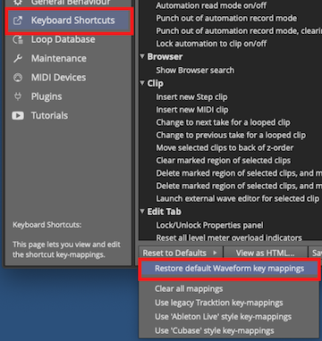
Settings Tab: Set the Keyboard Shortcuts to Match this Book
This set of keyboard shortcuts was carefully designed for efficient workflow, and keeps the commands consistent between Mac and Windows.
Modifier Keys Conventions¶
The book uses the following abbreviations for modifier keys:
- Command: Cmd
- Control: Ctrl
- Option: Opt
- Alt: Alt
In most cases, Cmd on macOS will translate to Ctrl on Windows. In this user's manual, we present both using the convention Mac / PC. For example: Cmd + C / Ctrl + C.
Here is another example: - Click to select the clip, then copy it using Cmd + C / Ctrl + C. - Next, position the cursor in the Arrangement where you want to place the copy and paste it, using Cmd + V / Ctrl + V.
📝 Note: Most Linux users will use the 'Meta' key in place of Alt. On a typical PC keyboard, Meta is usually the Windows key.
📝 Note: In some parts of the world Mac keyboards use Alt rather than option. This shouldn't offer much confusion but I did want to acknowledge this.
Moving On¶
With those things set, your Waveform installation will match the examples here. Get ready to explore the world of Waveform!
Quick Start¶
This chapter is the fast path from a fresh install to your first recording and a finished audio file. It is deliberately brief: each step gives you just enough to get going, then links to the full chapter when you want the detail. If you are brand new to Waveform, read it top to bottom. If you are returning, skim the headings and jump to whatever you need.
Waveform runs as a 64-bit application on macOS, Windows, and Linux, and is available in Free, OEM, and Pro editions.
💡 Tip: You can view and customise every keyboard shortcut on the Settings > Keyboard Shortcuts page. If your shortcuts have been changed and you want Waveform's standard set back, click Reset to Defaults there and choose Restore default Waveform key mappings. See Keyboard Shortcuts for the full list.
1. Install and Unlock¶
- Download Waveform from tracktion.com and run the installer.
- Launch Waveform. Until it is unlocked it runs in demo mode.
- To unlock, go to the Settings tab, choose Licensing, and click Refresh Licenses. Log in with your tracktion.com account and Waveform pulls down and applies any licenses you own.
→ For status badges, expansions, and per-computer licensing, see Reference: Settings > Licensing.
2. First-Run Setup¶
The first time you launch Waveform, the First Run Setup panel appears on the left. Work through its steps in order — it takes you straight to each setting you need to configure. If you close it, you can reopen it any time from Help > Show First Run Setup.
→ See Audio Device Setup.
3. Set Up Your Audio Device¶
Open Settings > Audio Devices and choose how Waveform talks to your hardware:
- Windows: ASIO (recommended) or Windows Audio
- macOS: Core Audio
- Linux: JACK (recommended) or ALSA
Set your sample rate (44100 or 48000 Hz is a fine default) and an audio buffer size — start around 256 samples and raise it if you hear clicks or dropouts.
⚠️ Warning: If you plan to overdub (record while listening to existing tracks), you must run Auto-Detect with a hardware loopback so your recordings line up in time. Repeat it whenever you change the sample rate or buffer size. This is the single most important setup step for accurate recording.
→ Full walk-through, including the Auto-Detect loopback procedure, is in Audio Device Setup and Reference: Settings > Audio Devices.
4. Connect MIDI (Optional)¶
If you have a MIDI keyboard or controller, connect it and check it appears under Settings > MIDI Devices.
→ See MIDI Setup.
5. Hear Something - Open a Demo¶
The quickest way to confirm everything works is to open a template and play it:
- Open the Welcome tab.
- Pick a song from the Templates list to open it as a new Edit.
- Press the Spacebar to play.
→ See Demo Projects and Templates and Basic Navigation.
6. The Edit Window at a Glance¶
An Edit is where you record, arrange, and mix. The window has four main areas:
- The menu bar along the top.
- The Browser down the left side, which also hosts the Actions panel.
- The arrangement (and the optional Mixer) in the centre.
- The transport bar along the bottom, with playback controls, cursor position, tempo, and the master controls.
The Actions panel is central to Waveform: select anything — a clip, a track, a plugin — and it shows the settings and actions for that selection.
→ See The Edit Tab, Basic Navigation, and The Actions Panel.
7. Start a Project¶
On the Projects tab, click New Project, give it a name and location, and click Create Project. Waveform opens a new Edit ready to work in.
→ See Basic Navigation.
8. Record Audio¶
- Click the input arrow beneath a track name and choose an audio input.
- Click the record-arm button (the red dot) on that input.
- Check your levels, then press Record in the transport bar.
→ See Recording Audio.
9. Record MIDI / Use an Instrument¶
- Drag the Plugin object onto a track's mixer area and choose a virtual instrument from the menu. Double-click the instrument to open its interface.
- Set the track's input to your MIDI device and record-arm it.
- Press Record and play.
→ See MIDI Recording and Using Plugins.
10. Add Effects and Mix¶
Waveform's mixer is inline with each track and fully modular. Every track starts with a Volume & Pan and a Level Meter plugin. To add an effect, drag the Plugin object into the track's mixer area and pick a plugin — you can drop it anywhere in the signal chain and reorder it later by dragging.
→ See The Edit Tab, Using Plugins, and Built-in Effects Plugins.
11. Export Your Song¶
- Set the In-marker at the start of the song and the Out-marker at the end to define the export range.
- Choose Export > Render to a file from the menu bar.
- Pick a format (WAV or MP3), make sure Only render the marked region is on, and click Render.
→ See Mixing Down.
12. Where to Go Next¶
You now have the essentials. Waveform has much more to explore — here are some highlights, each covered in its own chapter:
- The AI Assistant — a cloud-powered AI assistant that can carry out actions in your project.
- Clip Launcher — trigger clips and scenes live.
- Comping — build one perfect take from several passes.
- Warp Time — bend and stretch audio in time.
- Clip Layer Effects — non-destructive, layered audio manipulation.
- Modifiers — modulate parameters without drawing automation.
- MIDI Effects — real-time MIDI processing.
- Stem Separation — split a mix into its parts.
- Macros — script and automate Waveform actions.
- Plugin Racks — group and wire up plugins freely.
For everything that has changed recently, see What's New.
What's New¶
This chapter is a quick index of Waveform's most notable features, with links to the chapters that cover them in full. If you are returning to Waveform after a while, or just want to know what has changed, start here.
Headline features¶
Multi-channel audio¶
Waveform's audio engine now works beyond stereo from end to end. Tracks, clips, racks, and plugins can carry any channel count -- mono, stereo, 5.1, 7.1, or custom -- so you can build surround and immersive mixes natively. You can choose a track's channel layout, pick which channels a multi-channel file uses, set a track's output to none to use it as a bus, and render or export to Mono, Stereo, 5.1, 7.1, or your edit's own format. Level meters scale to the channel count. (Waveform Pro.)
AI assistant¶
A cloud-powered AI assistant is built into Waveform, in a side panel. Ask it about Waveform or your project and it can carry out actions for you -- creating tracks, adding and configuring plugins, setting up routing, assigning keyboard shortcuts, and more -- by driving Waveform through its scripting API. It is aware of what you have selected and your project info, and an auto mode picks the right model for each request. It connects to an external AI provider (OpenAI or Anthropic) using your own API key, and is entirely optional.
A streamlined interface¶
The old bottom Properties panel has been replaced. Menus now live in a standard menu bar at the top of the window, playback and master controls sit in a transport bar along the bottom, and the settings and actions for whatever you select appear in an improved Actions panel at the side (and in the Browser) as a flat, context-sensitive list. See The Actions Panel, Basic Navigation, The Edit Tab, and The Detail Editor.
Interface¶
- Detail editor -- a panel with Track and Clip tabs for working closely on the selected track or clip, including loop settings and warp-time editing. See The Detail Editor.
Creation and editing¶
- Clip Launcher -- trigger clips and scenes live, with follow actions for algorithmic sequencing. See Clip Launcher.
- Clip Layer Effects -- non-destructive, layer-based audio manipulation on Audio clips. See Clip Layer Effects.
- Comping -- build a single perfect take from multiple recorded passes. See Comping.
- Warp Time -- bend and stretch audio in time. See Warp Time.
Plugins and modulation¶
- Plugin Racks -- group plugins into a container and wire them up in series, parallel, or any combination. See Plugin Racks.
- Modifiers -- modulate plugin parameters without drawing automation, using LFOs, envelope followers, random and step generators, and more. See Modifiers.
- MIDI Effects -- real-time MIDI processing. See MIDI Effects.
- Visual Plugin Selector -- pick plugins from a visual browser. See Visual Plugin Selector.
- Plugin side panel -- host a single plugin live on the main output from a side-panel tab. See The Plugin Side Panel.
Automation and control¶
- Automation -- record and edit parameter automation. See Automation.
- Macros -- script and automate Waveform actions. See Macros.
Demo Projects and Templates¶
This chapter shows you how to get started with ready-made content. Demo projects and templates are very useful because they give you something to experiment with, as you learn the basics of the application.
Establish a Waveform Projects Folder¶
It's a good idea decide where you want to keep your Waveform projects on your system.
One method would be to create a Waveform folder, under the Documents folder on your system. So, decide on a location and create your Waveform folder using the Finder (macOS) or File Explorer (Windows).
Starting From a Template¶
The quickest way to get something playable is to start from one of the built-in templates. These include demo songs as well as ready-to-use starting points for new projects.
Open the Welcome tab and look at the Templates list. Each entry is a complete project you can open with a single click.

The Templates List in the Welcome Tab
Click a template to create a new project from it. Waveform copies the template into your Active Projects and opens the new Edit, leaving the original template untouched so you can reuse it as often as you like.
💡 Tip: If you'd rather keep the template's track and plugin layout but start with an empty arrangement, enable Remove clips when loading templates before you click. This opens the project with its routing in place but no clips on the tracks.

A New Project Created From a Template
Demo Songs in Your Projects¶
Any demo songs bundled with your installation are added to your projects automatically the first time you run Waveform - there's nothing to download. They appear in the Projects tab alongside your own work.
💡 Tip: We like to reorganize the demos into a folder to keep them separate from our own projects.

Demo Songs Collected in a Project Folder
Moving On¶
With Waveform installed, and a few projects ready to play with, it's time to move on to configuring your audio interface.
Audio Device Setup¶
To use Waveform, it is essential to configure it to work with your audio interface. It doesn't matter wether you want to use the internal audio unit built into your computer, or an external audio interface connected to it. Of importance is only to communicate with it in the right way. Waveform supports the following communication protocols:
- Windows: ASIO (recommended), and Windows Sound
- macOS: Core Audio
- Linux: JACK (recommended), and ALSA or PulsAudio/ALSA

Audio Device Page
⚠️ Warning: To configure Waveform for recording, you must use the Auto-Detect feature along with a hardware loopback. If you don't, then your overdubbed tracks will not be in alignment with existing tracks. While this is not difficult, it is essential to do this manual step anytime you change the Audio Device Setup. The procedure to do this is covered in this chapter.
This chapter covers the essential steps to get your audio interface configured as an audio device in Waveform.
Audio Device Setup in Windows¶
If you haven't already, navigate to Settings tab > Audio Devices page.
Audio Device Type: Waveform gives Windows users four choices for audio device type.
- Windows Audio
- Windows Audio (Exclusive)
- DirectSound
- ASIO
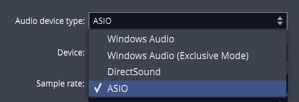
Windows Audio Device Types
Any of the above four options might work with your computer, but there are definite differences, and best choices:
ASIO - This is the best choice if you are using an external audio interface. The first step is to install the manufacturer's driver. Using ASIO will usually give you the best low latency performance for recording and playback. Many modern audio interfaces include a mixer app to control low latency mixing within the unit. When using ASIO, you simply choose the device and it is set for both inputs and outputs.
Windows Audio - Use this if you are running Windows 10 and are using the internal sound on your machine. This solution is great for using a laptop directly while traveling. This device type uses WASAPI (Windows Audio Session API) which offers nicely optimized access from applications software to audio I/O. Windows Audio will also function with USB Audio Class 1 interfaces.
Windows Audio (Exclusive Mode) - This is the same as Windows Audio, but Waveform will not allow any other application to use the audio interface while running. For the lowest latency and most critical applications, choose this option when using your internal sound.
DirectSound - This is technology is deprecated in Windows 10 and there is no good reason to choose this option. Back in the day, this was the best choice when using Windows XP with your internal sound. Tip: Stay away from the DirectSound device type.
📝 Note: Windows versions earlier than Win 10 are end of life and officially no more supported. While you might be able to run Waveform on older Windows 64-bit systems, the Waveform development and support team run their Win tests on versions 10 and 11.
📝 Note: Starting with release 1703, Windows 10 supports USB Audio Class 2 devices natively. For simple 2 x 2 interfaces or built-in audio this is a workable alternative to using ASIO. For the full feature set for most audio interfaces it is still recommended that you install and use manufacturer's drivers and use ASIO if possible.
Audio Device Setup on macOS¶
- Click on the Settings tab, then select the Audio Devices page.
- Select an output Device. Assuming you have the necessary drivers installed and the device hooked up, it should appear as an option for the Output: property.
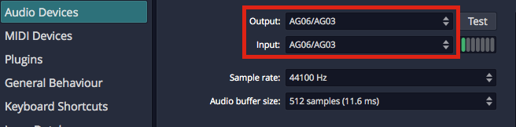
OS X - Audio Device Output and Input Properties
📝 Note: With macOS, USB audio interfaces that follow USB Audio Class 1 (1998) or USB Audio Class 2 (2009) will function without installing any additional driver. In the product specs for such devices they are often listed as "class compliant."
- Select an Input device
💡 Tip: We strongly suggest that you select the same device for the output and the input. In this example, we are using a "USB iTwo" which is a simple 2 in / 2 out interface.
📝 Note: On OS X, you can select the input device and output device separately.
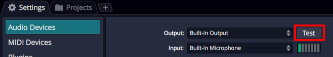
Audio Device Test Button on Mac
Test Button - There is a convenient Test button next to the audio device parameter. Click it to send a short test tone to the audio device's output. If you hear the tone, you know your device has been configured correctly.
Audio Device Setup on Linux¶
Waveform can connect to the Linux audio system by JACK or ALSA.
The usual requirement for low latency signal pathways and the extended routing options recommend to configure Waveform for JACK usage, though.
Settings tab > Audio Devices page > Audio Device Type = JACK
While the configuration of Waveform is obviously quite easy, the preparation of the Linux system itself and finding an audio device being compatible with Linux requires some attention.
Concerning the audio interface: It is out of the scope for the Waveform development and support team to promise you anything about the Linux compatibility of your audio device. We do share some experience to give you an idea about the situation, though. Internal audio chips built into the motherboard of the computer, as in Laptops, are mostly supported by Linux. External audio devices connecting via USB, but only if said to be "USB" or "iOS" compliant, are usually also supported, at least in regard to accessing their basic input and output channels. If these USB devices would come with management software, then this is usually not supported in Linux and functionality only available through the management software stays hidden to Linux users. For internal cards, or audio interfaces connecting by other means (Firewire, for instance), generalized statements cannot be made at all. Independent of your audio device being integrated, or connected by USB, or whatever, we highly encourage you to contact your hardware vendor for clarification, or to consult the relevant Linux user communities about their experience with the hardware of interest. One of the possible addresses would be the following internet forum: https://linuxmusicians.com/viewforum.php?f=6
Concerning the Linux setup: PipeWire is nowadays found to be the by default configured internal audio data (and video data) transportation mechanism in mayor Linux distributions. Hence, instructions are in the following given with regard to PipeWire. The Ubuntu LTS (24.04) distribution of Linux is taken as for a test run.
Some background information: PipeWire was developed as a low latency capable replacement for the proven, but expandability and integration limited JACK, ALSA, PulseAudio and GStreamer protocols. It provides the necessary compatibility layers for staying interoperable with applications programmed to connect to those software interfaces. Regarding ALSA it is noteworthy to mention, that its user space features are intended to be replaced, while the ALSA parts providing the hardware drivers remain untouched.
Out of the box, Ubuntu (or a flavor of it like Kubuntu) comes with the audio system being based on PipeWire, being provided by the preinstalled packages pipewire and pipewire-pulse. Basically, the following audio signal pathway is then usually in use:
App (Multimedia Player) --> pipewire-pulse --> basic management layer --> pipewire --> ALSA --> audio device
The user just runs the app of interest. All the rest stays hidden to the user and is cared for by the Linux operating system.
However, for running Waveform in Ubuntu, the compatibility layers for interfacing the JACK or ALSA protocols have to be added to the PipeWire environment, after they are not found to be preinstalled in Ubuntu. The required packages are:
- pipewire-jack
- pipewire-alsa
- wireplumber
The pipewire-jack and pipewire-alsa packages are obviously providing the compatibility layers. WirePlumber replaces the basic, not being sufficient anymore management layer found initially in service in the basic PipeWire setup of Ubuntu, providing some under the hood required more sophisticated management capabilities.
Up to here things are pretty much the same in all Linux derivatives which are somehow building on top of the Debian distribution, like SparkyLinux, Ubuntu, LinuxMint, etc. . However, the additional to the package installation necessary configuration steps may vary.
The easiest way to get Ubuntu ready for advanced audio works and to connect to Waveform is to simply install the following package:
- ubuntustudio-pipewire-config
This package in Ubuntu draws in all above mentioned packages and also puts all necessary configurations into place. Now restarting the Linux system eliminates having to hassle with any further configuration steps. In principal, after the reboot, you are ready to go, and the following signal pathways are now usable:
App (Multimedia Player) --> pipewire-pulse --> wireplumber --> pipewire --> ALSA --> audio device
App (Waveform) --> pipewire-alsa --> wireplumber --> pipewire --> ALSA --> audio device
App (Waveform) --> pipewire-jack --> wireplumber --> pipewire --> ALSA --> audio device
They can be used in parallel, and each of them with its particular feature set. For instance, JACK interfacing applications can have signal routing in-between JACK capable apps, allowing to build up sophisticated audio app networks. As a graphical patch bay for a JACK based audio network, i.e. qpwgraph could help with the audio network administration. Or, to give another example, several applications interfacing to PulseAudio, and several interfacing to JACK, can be in use in parallel, also all of them streaming in parallel to the same audio interface. PipeWire will mix the streams with almost zero latency. Using the ALSA pathway for Waveform is the same possible as in the past. However, after setting up JACK for PipeWire is nowadays so easy and straight forward, contrary to the configuration hassles in the past, and as JACK allows for a lower latency signal pathway, configuring Waveform to use the JACK pathway is highly recommended.
For convenience, the apps Ubuntu Studio Audio Configuration and Ubuntu Studio Installer could be installed from package:
- ubuntustudio-installer
The app Ubuntu Studio Audio Configuration aids in the configuration of the principal audio system options. It is especially useful for easily changing the so called PipeWire Quantum, which cares to balance latency and system load depending on the parameter set of buffer size and sample rate. The default parameter set is "1024 48000". For changing it system wide and immediately, simply run the tool and enter the wished values. The app Ubuntu Studio Installer would allow to proceed much more specialized configurations. For instance, it allows by the tip of a finger to install a low latency kernel and to proceed with all related configurations automatically. This app could also install curated bundles of software to the system, not only targeting creatives working with audio (bundle ubuntustudio-audio) but also targeting the topics of video and photography. Offerings by the Ubuntu Studio Installer are for many users and modern computers not essential. Of mayor interest is the Ubuntu Studio Audio Configuration tool, though.
Choosing the Audio Interface¶
With the audio device type set, you can choose any audio interface connected to your computer or the internal sound. Select your device if it's not already shown for the Device: property.

ASIO Device Setup on Windows
Control Panel - On some but not all audio interfaces, clicking the Control Panel button will open the manufacturer's driver control panel to set the buffer size. Many audio interfaces don't allow you to set the buffer size or the sample rate through host software. If that is the case, locate the control panel software on your system, and open it. Set the Sample Rate and Audio buffer size there. In some cases, you will need to restart Waveform for the change to take effect.
Setting the Sample Rate¶
The default for the sample rate is 44100 Hz, which matches the sample rate for CDs. We suggest choosing this sample rate or 48000 Hz unless you have a specific reason to choose a different sample rate.
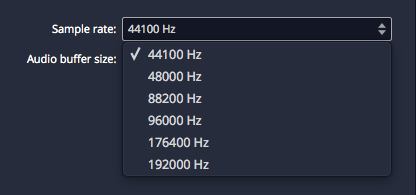
Setting the Sample Rate
Testing for Audio Playback¶
It is a good idea to test playback to make sure you get sound as well as a complete stereo image. Here is one way to do that:
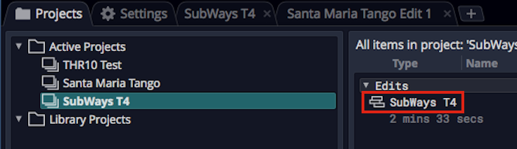
Loading the SubWays Demo
- Go back to the Projects tab and select one of the demo tunes - Subways is a good choice.
- Locate the Edit on the right (SubWays T4) and double-click to open it.
- Click Play (spacebar) and you should hear music!

Successful Play Back
About Latency¶
The process of mixing your tracks together, calculating digital effects, and triggering instrument samples takes time in any DAW. It is impossible for digital mixing to happen instantly. The amount of time your computer needs to compute, process, mix and playback from input to output is called 'latency.' Latency is the amount of time you allow the computer think and is normally measured in milliseconds - from just a few to several hundred milliseconds.
During playback, latency is detected only as a delay between hitting play and hearing playback. This results in a barely detectible lag in the transport functions, and doesn't cause much trouble.
Latency during overdubbing is more of an issue. If you are hearing playback of existing tracks a bit late, then what you are recording is not going to line up correctly because your timing reference is shifted, either late or early. Even a few milliseconds will effect feel. At 30 or 60 milliseconds, the timing will be off. This can have an impact on the feel of the recording or even make the timing seem completely off.
For these reasons, all DAWs include a "latency compensation" feature. Following recording, the audio tracks are essentially shifted to compensate for latency in the A/D process, mixing, and plugin DSP processing.
Managing Latency¶
Audio buffer size by default is 512 samples (11.6 ms) on macOS, 256 samples (5.8 ms) on Windows, and 1024 on Linux (21.3 ms). On modern computers, you can usually run with the buffer size set to 256 or even lower.
📝 Note: The choice of available buffer size options varies. It depends on what what audio interface, connection type, and driver technology you have access to.
Let's consider a latency of 11 ms. In reality, 11 ms is a very short period of time. In the real world if you are playing a MIDI controller into a virtual instrument, there will be an 11 ms lag between when you play a note and when you hear the note. It's the same thing if you're working with a virtual guitar amp or amp simulator. When you play a note the guitar you hear the sound 11 ms later. Sound travels through air at the rate of approximately one foot (0.34 meters) per millisecond. So this latency is like playing with your guitar amp or keyboard monitor 11 feet (3.4 meters) away. There is a delay but you might get by. At 6 ms delay, usually the delay is barely noticeable.
With computer recording, we alway aim to strike a balance between noticeable latency and getting clean playback. Why not just lower it all the way down? Because, the computer needs time to 'think' and produce the sounds and process effects. If we get too aggressive with lowering the buffer, the computer starts to complain in the form of pops, clicks, dropouts, and the like. So during recording you might keep this lower, during editing and mixing you can increase it.
💡 Tip: Try 256 samples when you get started. While your songs are simple, this should work fine on most modern systems. If you feel there is too much delay when playing virtual instruments, try a lower buffer value. If the audio starts to break up, try higher settings.
📝 Note: When using Melodyne Essential for editing audio, you will need to increase the buffer size to at least 1024 samples, in order to prevent getting a warning message and to have clean playback.
Calibrating Input Latency Compensation¶
If you use Waveform for any overdubbing, this is possibly the most important lesson in this book. Waveform requires you to run Auto-Detect using a loopback connection on your audio interface.
⚠️ Warning: This test sets up up a deliberate feedback loop. Switch your speakers off during this test.You will be connecting an output to an input using a patch cord, so be careful.
Here are the steps:
- Turn off your monitor speakers!
- Make sure any input monitoring knobs, buttons, or mixers or off or turned down.
- Connect one output back to one of the inputs. To make it simple, connect the left output to input one.
- Turn the gain up about half way on the input.
- In Waveform go to Settings > Audio Devices.
- In the Channels list click on one of the Inputs
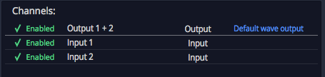
Select an Input
- In the Actions panel click Auto-Detect.
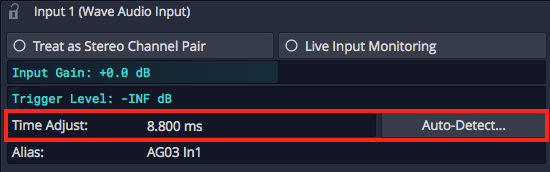
Auto-Detect & Time Adjust Parameters
- Click Run Test. Waveform will send a short test signal from the output to the input. It will calculate the delay between output and input.

Recording Synch Test Dialog Box
- Click Apply and Waveform will copy the delay value to the Time Adjust property.

Applying the Auto-Detect Result to Time Adjust
For recordings to be aligned during overdubs, you must repeat this every time you make a change to the Sample rate or Audio buffer size. If you don't, your recordings will be several milliseconds out of alignment with existing tracks.
📝 Note: Instead of a loopback cable, you could connect a microphone to the input and point it at one of your speakers to run Auto-Detect. This will work just fine however make sure that Live Input Monitoring is off AND that direct input monitoring on your audio interface is also off. If you leave either on it will cause feedback potentially damaging your speakers if not your ears!
💡 Tip: You can keep a note of the Time Adjust values at different settings an enter it manually for the settings you commonly use.
⚠️ Warning: To configure Waveform for recording, you must use the Auto-Detect feature along with a hardware loopback. If you don't then your overdubbed tracks will not be in alignment with existing tracks. While this is not difficult, it is essential to do this manual step anytime you change the Audio Device Setup.
Resetting to the Defaults¶
If at any point you want to reset these settings to the defaults, click either of these two options:
Reset Input Devices - Resets Input gain, Trigger level, Time adjust, and recording options.
Reset Output Devices - Resets Treat as stereo pair, Dithering Enabled, Left/Right Reversed and Alias parameters.
Advanced Audio Device Settings¶
There are additional options for Low Latency Mode and audio performance on the Advance page of the Settings tab. Refer to Reference: Settings > Advanced.
First Run Setup¶
When you run Waveform for the first time, you will see the First Run Setup Progress panel over on the left. As you click each item, it takes you directly to the page and feature on the Setup tab needed to complete the task. The tasks are designed to streamline setup and get new users configured and running quickly.

First Run Setup Progress Panel
If you close the panel and wonder how to get it back, navigate to *Help
Show First Run Setup*.
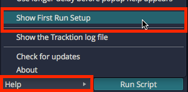
Turning First Run Setup On
Moving On¶
Audio device setup is straightforward, apart from running the Auto-Detect loopback test. Follow the guidelines in this chapter and you will be ready to move on.
Basic Navigation¶
This chapter is an overview of how to operate Waveform. You will also learn how to set up Waveform for an efficient workflow, as well as how to change the tempo of your song.
Tabs and Menus¶
With Waveform open, you can see the Projects tab and the Settings tab. Click on the tab name or icon to switch to that tab.

Projects Tab & Settings Tab
Waveform's menus are in the standard menu bar at the top of the window (the macOS menu bar on Mac, or the menu bar along the top of the window on Windows and Linux). The available menus change depending on whether you are on the Projects tab or an Edit tab.

Menus in the Projects Tab

Menus in the Edit Tab
Window Layout¶
When working on a song, the main areas of the Edit window are:
- The menu bar along the top of the window.
- The Browser down the side, which also hosts the Actions panel.
- The arrangement (and the optional Mixer) in the centre.
- The transport bar along the bottom, with the playback controls, cursor position, tempo, and the master controls.
The Actions panel shows the settings and actions for whatever you have selected -- a clip, track, plugin, automation point, and so on. It is a context-sensitive list and is central to working in Waveform, so you will see it referred to throughout this guide.
Pop-up Help¶

Example of a Pop-up Help Message
Pop-up help is helpful for the first few minutes, but you may not wish to use it after you are more familiar with the program. If you are using the default Waveform key-mappings, you can see available pop-up help by pointing at an item on screen and pressing F1.

Disabling Pop-up Help
Disable pop-up help from the Menu section using Help > Pop-up help. De-select Enable pop-up help.
Roll-over Help¶
In addition to pop-up help, Waveform also offers roll-over help. Rollover help messages appear in the upper right for controls and objects. The messages appear automatically as you roll over items on the screen.

Example of Rollover Help
💡 Tip: If you find any help messages wrong or unclear, please a message and screenshot to support@tracktion.com
Creating a Project¶
The very first step to produce a song in Waveform is to create a project. To do so:

The New Project button on the Projects tab
- Go to the Projects tab
- Click New Project and the New Project dialog box appears
- Fill in the Name
- Select the Location
- Click Create Project

The New Project Dialog Box
Click Create Project it will open to the Edit where you can compose, record, and mix. Click back to the Project tab and you will see the contents of the project in a list to the right with the title All items in project: projectname.
For now, the most important entry in the "All Items" list follows the word "edit"; that file is called an Edit. In our example, the Edit name is "SummerSong100 Edit 1."

All Items List
📝 Note: Creating a project creates a folder, that in turn contains sub-folders that contain the project media, a Project file (
.Waveform) and an Edit file (songname.tractionedit). The folder, Project, and Edit all use the name you provided in the New Project dialog box.
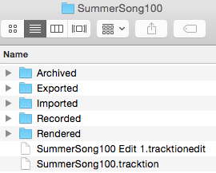
Project Folder on Disk
Opening the Edit¶
An Edit is the workspace in Waveform where you record, edit, and mix your songs. Double-click the Edit in the All Items list; and it opens to a new tab. This type of tab carries the name of the Edit and is called an 'Edit tab.'
Edits and Revision Control: In Waveform you can have as many Edits per Project as you want. This gives you a great system for revision control. At key milestones in your workflow, go back to the Project tab click Create a Copy. This copies the Edit to a new file. Rename the copy appropriately and resume work using the new Edit. You can return to the previous state of the Project at any point by opening an earlier Edit. Important note: all Edits within a project use the same underlying source files. Creating a copy of the Edit does not in anyway make new copies of the underlying files.
The Edit Tab¶
The Edit tab is where most of the action occurs while working in Waveform. What other DAWs call a "project" or "song", Waveform calls an Edit. In a way, this is similar to the terminology used in many video editing programs. You have a collection of media that you organize into an Edit. In concept, you can organize the same media into other Edits. In music production, having multiple edits gives you revision control and flexibility to have multiple mixes all contained within the project.
Basic Navigation¶
What you need to know to navigate an Edit:
Start and Stop Playback - The obvious way to play and stop is to use the Play/Stop button located on the transport bar. Alternatively, press the Spacebar to toggle between start and stop.

Return to Start on Stop
💡 Tip: By default, the cursor will jump back to the start position when you stop playback. If you would like the cursor to instead remain at the stop position, there is a setting for that in the menu Options Return to start on stop. Disable that and the cursor will pause at the point you hit stop. The same setting is also available when you right-click the Timeline.
Zooming In and Out¶
Here are some basic ways to control zooming:
- Use the Up and Down keys to zoom in and out
- Use the zoom controls in the lower right corner
- On the timeline just above the cursor, grab and drag up or down
💡 Tip: There are a full set of zoom actions that can be assigned to keyboard shortcuts. These are also available from the Zoom menu by right-clicking the Timeline.

Zoom Actions on Timeline Context Menu
You can also use the quick zoom tool:
- Hold Cmd + Opt / Ctrl + Alt and drag to draw an area. The pointer changes to a magnifying glass. When you release, the view zooms in to your selection.
- To step back from that zoom level, once again hold Cmd + Opt / Ctrl + Alt and click in the arrangement.
- Waveform remembers the zoom levels, so you can zoom in repeatedly. Then, press Cmd + Opt / Ctrl + Alt click to zoom back out.
Positioning the Cursor¶
The cursor position is used as the playback start time, and is also used to reference many of Waveform's editing functions. In other DAWs it is called a playhead, now time, or playback cursor. In Waveform it's simply the 'cursor.'
There are numerous ways to position the cursor, including:
- On the timeline just above the cursor, grab and drag it left or right
- Click the timeline and the cursor will jump to that spot
- Click in the background of the track area
- Click within the body of clips
- Use the left and right arrow keys to move the cursor backward and forward
📝 Note: If you don't want the cursor to be positioned when clicking on the background or the body of clips, de-select the option "Clicking the background locates the cursor" in Settings > General > Editing

Drag to Position Cursor Setting
💡 Tip: You can change the way clicking on the Timeline works by selecting Options > Timeline drag action > Drag to position transport. With this set, when you click in the timeline, the cursor jumps to that position. If you drag in the timeline, the cursor follows as well.
📝 Note: In this mode, to drag zoom, you need to hold down Opt / Alt. Since you can still zoom in and out with the mouse wheel or the up and down arrow keys, this mode is a great way to get around in Waveform.
Changing the Tempo¶
Tempo in Waveform is managed using the Tempo track at the top of the screen. You can hide or show the Tempo track using the Eye panel selector at the upper right F9.

Show or Hide the Tempo Track with the Eye Panel Selector F9
The Tempo is represented as a line in the Tempo track. This line is called the "Tempo Curve." For a fixed tempo tune it will appear as a line set to a beats-per-minute (BPM) value.

Fixed BPM Tempo Curve
For tunes with tempo changes it might appear with step ups or step downs in tempo, or even gradual tempo changes represented as curves (thus the name Tempo Curve). In other software this is often called a "tempo map."

Varying BPM Tempo Curve
To change the tempo of your Edit:

Changing Tempo: A, Click BPM Readout. B, Adjust BPM property.
- Click the tempo BPM readout in the transport bar. The Actions panel will show the tempo properties
- Adjust the BPM parameter to the desired tempo. Either click and type it in, or drag the slider.
- Alternatively, open the tempo track and drag the tempo curve line up and down.
📝 Note: Setting the tempo this way changes the tempo only for the segment of the tempo curve that is under the current cursor position.
Video Clip: To learn how to use the tempo track to map tempo changes to an existing recording, Check out my video on Creating a Tempo Map
Changing Tempo at a Specific Bar¶
To change the tempo at a specific bar, use the action Insert tempo change at cursor (Opt + T / Alt + T). Here are the steps:

Right-click Timeline: Insert tempo change at cursor
- Position the cursor where you want the tempo change to occur
- Right-click on the timeline, and select Insert tempo change at cursor
- In the Actions panel, adjust the BPM parameter to the new tempo.
- To see the results of the tempo change, open the tempo track to see the step up or down on the Tempo Curve
📝 Note: The Tempo Curve can also be adjusted with more detail in the Tempo track in much the same way as automation. Click to add points (nodes) to the curve and drag them to shape your tempo changes along with an adjustable Curvature. To shape the transition between two points, drag the small handle on the midpoint of the segment between them: dragging it bends the line from concave, through linear, to convex.
📝 Note: New points snap to the nearest beat, and the BPM is limited to the range 20–300. The very first point (at the start of the Edit) is locked — it can't be moved or deleted.
Tap Tempo: Select a single tempo point and the properties show a Tap Tempo control reading "Click here to tap out a tempo!". Click it in time with the beat, then press Apply to set that point to the tempo you tapped.
Removing Tempo Changes - Click on any tempo point, to select it. In the properties, click Delete > Delete this tempo setting.
Removing all Tempo Changes - Click on the Tempo curve line. In the properties, click Delete points from curve > Delete all points from the curve. The same Delete menu can also delete only the points within the marked region, with an option to close the gap left behind.
Offsetting and Scaling the Tempo Curve¶

Displace Curve and Scale Curve Controls
Displace Tempo Curve
- Click anywhere on the Tempo Curve. In the properties, drag left or right
over Displace Curve to move the entire tempo curve up or down.
Scale Curve - Select the Tempo Curve, then drag left or right over Scale Curve to reduce or emphasize the amount of tempo variation across the entire Edit.
📝 Note: By default Displace and Scale affect the whole curve. Turn on Only Displace/Scale the Marked Region to limit them to the loop / in-out range instead.
Copying and Pasting Tempo Curves - With a region marked, Copy the marked section of the curve to the clipboard, then Paste it back in at the cursor position. The paste menu also offers Paste curves in to fit between in/out markers, which stretches the pasted curve to fill the marked range.
Scroll Behaviour¶
Scroll behaviour options are found on the Options menu under the Scroll Behaviour submenu.

Options > Scroll Behaviour
The Scroll Behaviour menu features the default option Scroll with playback. Here is a rundown of what each option does:
Scroll with playback (default) - During playback the cursor stays on screen. As the cursor goes past the right edge, the tracks page over keeping the cursor in view.
Scroll smoothly - During playback, when the cursor arrives at a fixed position near the center of the screen, the tracks scroll under the cursor. This is a matter of personal preference.
Keep cursor on screen - During playback the cursor will stay on the screen. Even while editing or manually panning, the cursor always stays on screen. As you pan over right the cursor stays at the left edge of the screen.
No options selected - During playback the cursor will move past the right edge of the screen and then move out of sight.
💡 Tip: For most users we suggest leaving Scroll with playback enabled and the other two options off.
Moving On¶
This chapter was a basic introduction to the operation of Waveform. You can now operate the transport; you can open the demo files; you can create a new blank project; and you can adjust the playback volume and tempo.
That is enough to start exploring Waveform. Stay tuned, there is a lot more to come!
Getting Help¶
This chapter is a summary of the various ways to get help when working with Waveform.
Pop-up Help¶
The first source of help is pop-up help. While useful at times, you can also turn off pop-up help with Options > Help > Turn off pop-up help. Press F1 to view pop-up help for the item under the pointer. Refer to Pop-up Help for an illustrated guide to pop-up help.
Roll-over Help¶
Roll-over messages appear in the upper right for items under the pointer. These messages give you a description of the object under the mouse pointer.
Quick Start¶
If you are new to Waveform, the Quick Start chapter at the front of this manual is the fastest way to get set up and making music. It walks you from install through your first recording and export, linking to the fuller chapters as you go. You can also open this manual at any time from Help > User guide PDF.
Keyboard Shortcut List¶
Studying the keyboard shortcut list, is a great way to get more familiar with Waveform. Navigate to the Settings tab, Keyboard Shortcuts page. Here you will see all the assignable actions grouped by category.
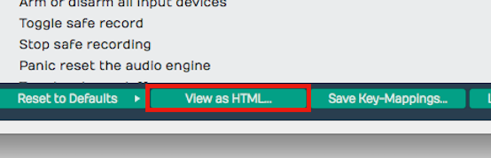
View as HTML Button
For a searchable list click View as HTML to load the current list in your web browser. From here you can search it with Cmd + F / Ctrl + F or print it out.

HTML View of Keyboard Shortcuts Assignments
Tracktion Videos¶
The official Tracktion YouTube channel is the best place for video tutorials, feature walkthroughs, and update overviews - new videos are added regularly as Waveform evolves. Browse the playlists to find videos grouped by topic.
The Waveform videos page also has a selection of training videos, and a Tracktion T7 Update Explained series is available from Groove 3, Inc - a deep resource for all things music production.
Tracktion Forums¶
The long term official forum for Waveform Software is hosted at KVR. This the most active Waveform forum that exists. Here you can interact with the other users, TSC staff, and developers.
There is also a growing private Tracktion Users Group on FaceBook. If you use FaceBook it's a great idea to request to be added to the group. The TSC team are also members of that group.
Also check out the Waveform Software official Facebook page for updates, news about Waveform, promo offers, and profiles of Waveform artists - "Tracktioneers."
Tracktion Support¶
In large part, your success with getting issues resolved, requesting features, and reporting bugs, depends on following the recommended guidelines, when filling out the request form.

Waveform Request Form
Request Form Checklist:
- Use "FR:" in the title for feature request
- Use "BR:" Bug Report in the title for bug reports
- Include the Waveform version number (from the Waveform About box)
- Include your operating system and version
- Note your system specs like processor type and the amount of RAM
- List the steps to recreate the bug
- Attach the log file (Help > Show the Tracktion log file)
- Attach or link to screenshot or screen video
- Report one issue at a time
Follow these same guidelines when posting bugs and feature requests to the KVR Waveform Software forum.
Moving On¶
Those are the key ways to get help when learning and using Waveform. Next let's get into more detail on using Waveform!
The Edit Tab¶
In this chapter you will learn the layout of the Edit tab. The Edit tab is where most of the action occurs during recording, editing, and producing your song. This chapter is important, as you will learn the terminology for the Waveform interface and objects used throughout the rest of this book.
📝 Note: The keyboard shortcuts used in the chapter are based on the default key mappings under Settings > Keyboard Shortcuts > Reset to Defaults > Restore default Waveform key mappings. We've already mentioned this several times and this might not be the last! If you want to follow along with the keyboard shortcuts used in this book, make sure to load the default key-mappings.
The Parts of a Waveform Edit¶
The Edit tab is made up of four main parts: The Browser, the Arrangement, the Mixer, and the transport bar. The Browser also hosts the Actions panel.

Parts of the Edit Tab: A, Browser. B, Arrangement. C, transport bar
The Browser¶
The Waveform Browser resides along the left side of the Edit. You can open or close it by clicking its icon or by pressing B. The Browser includes a collection of tabs, giving you quick access to actions, media, plugins, tracks, and markers.
💡 Tip: Starting with T7 and higher , you can move the Browser to the top or right side of the Edit, by dragging its icon to the appropriate edge of the screen.
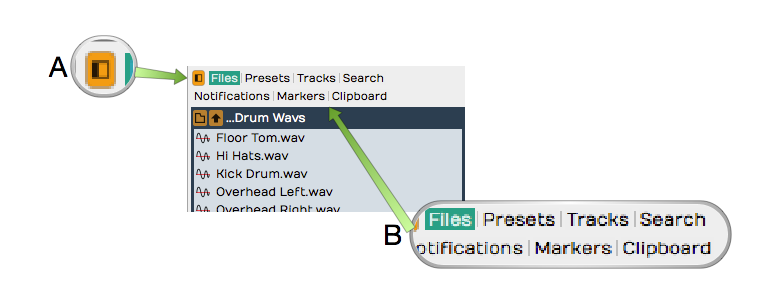
Browser Open/Close Icon, A. Browser Tabs, B.
Here is a short description of each Browser tab:
Actions - The Actions tab shows context-sensitive actions and properties for whatever you currently have selected. See The Actions Panel for full details.
Files - The Files tab is a filesystem browser for navigating directly to audio files on your system, the project folder, or your drives. You can bookmark folders for quick access to your loop libraries, and audition files before dragging them in. See The Files Panel in The Browser.
Search - The unified Search tab lets you search loops, presets, plugins, racks, clips, and tracks in one interface, filtered by category and by tags. This is the main content browser -- see The Browser.
Groups - (Waveform Pro) The Groups tab lists your Edit Mix Groups and lets you create and manage them. See Edit Mix Groups.
Tracks - Use the Tracks tab to filter tracks in the arrangement by tag. First, you need to tag them by selecting one or more tracks and setting tags in properties.
Markers - Use the Markers tab to add bars & beats or timecode markers to the Marker track. Navigate to any marker by simply clicking on the marker name. You can also quickly delete the selected marker, change its name or marker type in properties.
Assistant - (Waveform 14) The Assistant tab hosts the AI Assistant -- a chat panel where you can make natural-language requests. It appears once you enable it on the Settings tab under AI.
Plugin - (Waveform 14) The Plugin tab hosts a single plugin running live on the Edit's main output -- handy for a tuner, analyser, or other tool you want always on hand. Enable it on the Settings tab under Plugins. See The Plugin Side Panel.
For much more about the Browser check out The Browser.
💡 Tip: Resize the Browser by dragging the right edge left or right. This is particularly helpful when working with the Search tab, which has numerous search columns that might be hidden.
The Arrangement¶
The Arrangement is made up of the Timeline, Track Headers & Inputs, Tracks, and the Mixer.

Parts of the Arrangement: A, The Timeline. B, Track Headers & Inputs. C, Tracks. D, The Mixer Timeline. B, Track Headers & Inputs. C, Tracks. D, The
Timeline¶
The Timeline acts as a ruler, measuring the time of the edit. While it is commonly set to show the bars and beats of your song, it can also show seconds and milliseconds or seconds and frames with a simple right-click selection.
The Timeline is related to several other onscreen features:
In-marker & Out-marker - The range between between the In-marker and the Out-marker defines what is called the "marked region" in Waveform. In other DAWs this is called often called the "loop" or "cycle." The marked region defines looped playback, loop recording, and many of Waveform's editing options. The keyboard shortcuts are I to position the In-marker, and O to position the Out-marker.
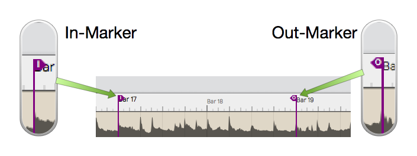
In-marker & Out-marker
Tempo Track - The Tempo track appears below the timeline, when open. Here you define the the tempo and tempo changes. Open and close the Tempo track using F9.
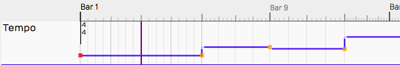
Tempo Track
Marker Track - There are actually two marker tracks that can be opened below the Timeline. One is for bars & beats markers, such as song sections. The other is for absolute time in terms of hours:minutes:seconds and milliseconds. Cycle through the options with F10.
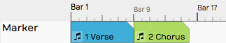
Marker Track
The Clip Object - Above the right side of the Timeline you find the Clip object. Some Waveform users call the Clip object a "clip dragger" or "clip maker." All of the terms are descriptive of how it works. Drag it to a track to create an empty clip of any of the four types - MIDI clip, Audio clip, Edit clip, or Step clip.
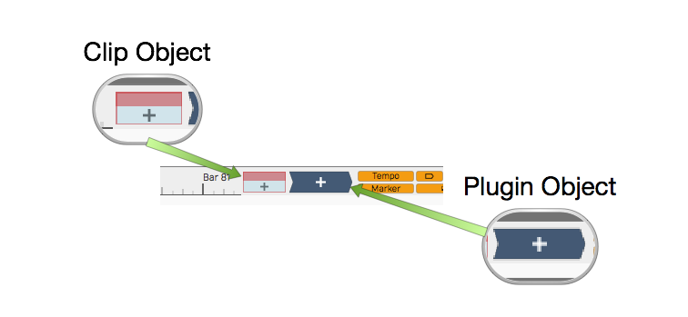
Clip Object and Plugin Object
The Plugin Object - Drag the plugin object to the mixer section of any track to insert an audio effect plugin or virtual instrument. When you drop the Plugin object, you get a menu of all available plugins and instruments. You can control the organization of the menu from the Settings tab Plugins page. Refer to Using Plugins for much more about inserting and using plugins.
Show/Hide Buttons - Several areas of the Edit tab can be opened for use or closed to declutter the screen. Here are the buttons to control those filled by the corresponding keyboard shortcuts.
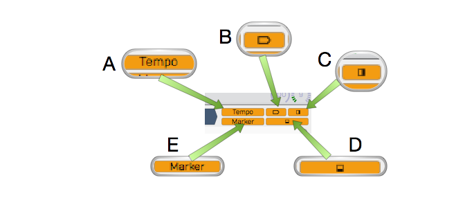
Show Hide Buttons. A, Show/Hide the Tempo track. B, Show/Hide the Inputs. C, Show/Hide the Mixer, D, Show/Hide the Actions panel, E, Show/Hide the Marker Track track. B, Show/Hide the Inputs. C, Show/Hide the Mixer, D, Show/Hide the
- Show/Hide Tempo Track (F9)
- Show/Hide Marker Track (F10)
- Show/Hide Inputs Section (Shift + F12)
- Show/Hide Mixer Section (M)
- Show/Hide Actions panel (F11)
The Track Section¶
Tracks appears as parallel lanes that contain and organize clips of audio and MIDI. Signal flow follows from left to right from Inputs, to Clips for recording, to the Mixer and any plugins it uses, then on to the master output. There is really only one kind of track in Waveform. Tracks can hold any kind of clip: Audio clips, MIDI clips, Step clips, or Edit clips. To create a new Track simply press T.
Track Headers - The leftmost column of the Arrangement forms a list of track headers. Select a track by clicking directly on the track name within the header. Additional track properties including the Name became available in properties. To rename a Track, simple edit the name property. Tracks can be reordered by grabbing any track from the header and dragging it to a new location.
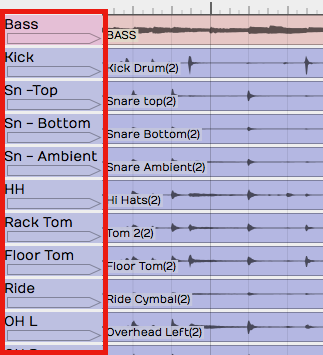
Track Headers
Inputs - Inputs appear as right facing rectangular arrows. Click on an input for a menu of options that includes a selection of available inputs. Use the menu to set up a track for recording. Additional input options are available in properties. You can even drag an input to another track to continue recording.
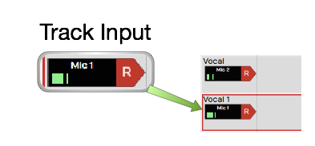
Inputs
💡 Tip: Resize tracks using the zoom tools in the lower right corner of the arrangement.
Clips¶
You can drag in audio files and loops to build your Edit, or record them directly. The same goes for MIDI clips. Step clips are a unique in-line step sequencer. Step clips are variation on MIDI Clips. While Edit clips allow you embed an entirely different Edit into your song as single clip. Selection an of the kinds of clips to access more properties and actions in properties.
Audio Clips - Audio clips are created during recording or can be dragged in from the Browser or desktop. Audio clips are one of the key elements of a Waveform arrangement. Waveform gives you a rich set of tools to work with Audio clips to split them, combine them, reverse them, or change the pitch, timing, or speed. You can also edit Audio clips with Melodyne to adjust the intonation of recorded notes. T7 gives you Clip Layer Effects for even more options to manipulate audio clips. See Clip Layer Effects to learn about this new type of audio processing.
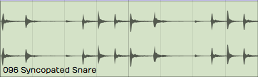
Audio Clip
MIDI Clips - MIDI clips are the Waveform container for MIDI performance data. The clips have many of the same editing features as Audio clips. Expand MIDI clips vertically to see the full in-line piano roll MIDI editor. The MIDI editor comes with a full set of tools for editing, entering, and modifying MIDI notes.
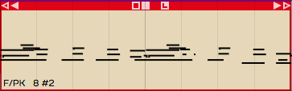
MIDI Clip
Step Clips - Step clips are a unique type of inline step sequencer that gives you amazing flexibility to enter MIDI notes on a grid. Step clips are ideal for programming drum beats and rhythms, they can also be used for baselines, synth leads or just about anything else. Some Waveform users program complete compositions entirely with Step clips.
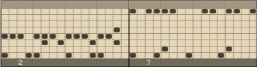
Step Clip
Edit Clips - Edit clips are another unique Waveform concept. You can embed and entire Edit into a clip. You can also use Edit clips to separate out all your drum programming to another Edit as an aid when doing complex drum programming. Use Edit Clips to compose songs in blocks - develop the verse, chorus, and bridge in separate Edits and bring them together in another Edit. Teachers use it when recording several students singing over the same underlying track. It is a very unique feature and uses for it are still being discovered!
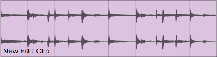
Edit Clip
Edit clips behave in the arrangement just like Audio Clips. How can you tell the difference? They have an additional section in the Actions panel to manage the link to the underlying Edit.

Edit clip properties
The Mixer¶

The Mixer, with a channel strip for every track.
Waveform's default Mixer view is one of it's unique, defining features. For each track, signal flows from left to right - Input to Track, Track to Mixer, Mixer to Master. The Mixer is where you arrange plugins to create whatever channel strip you need for the track. If you have MIDI clips on the track then insert virtual instrument as a sound source. If you need to EQ a vocal, drop in an EQ.
The Volume & Pan and Level Meter plugins are installed by default, however you can remove, reorder, or even add more instances of them. You will find the following things on every track by default:
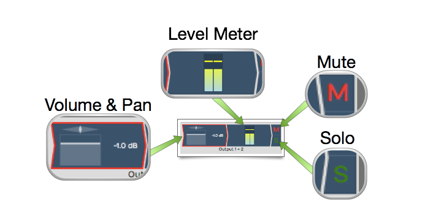
Mixer Default Setup: Volume & Pan Plugin, Level Meter Plugin, Solo Button, Mute Button
Volume & Pan Plugin - This acts as like the channel fader and pan controls on a conventional mixer. When you click either element, a larger version pops up allowing you to easily adjust level or panning. When selected, the full set of properties appear in properties.
Level Meter Plugin - The level meter shows the level of audio on the track. You can add additional instances or put the meter anywhere in the track using drag and drop. You can change the meter response between Peak, RMS, and Sum & difference from the right-click menu or from properties.
Mute - The Mute button mutes and un-mutes the track. You can also mute by selecting a plugin and then right-click. The keyboard shortcut for mute is Shift + M.
Solo - The Solo button silences all other tracks so you can hear one track at a time. Settings > General > Solo Behavior allows you to customize exactly how Solo works. Choose from Cumulative or Exclusive modes. From the right-click menu you can choose Solo Isolate which allows the track to continue to play if another track is soloed. This is particularly useful if a track is configured as an effects bus.
💡 Tip: Right-click on either Mute or Solo to access a menu. From here you can reset all the solo and mute states for all tracks.
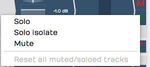
Mute/Solo Right-Click Menu
Note that starting with Waveform version 8, there is also an alternative "traditional" mixer view available, that displays the mixer channels vertically as seen on a real-world, hardware mixer. To use this mixer view instead, click on the show/hide mixer panel button in the upper right corner of the Waveform interface.Further details of the mixer panel will be included in a future review of the user's manual.
Menus¶
A full set of menus related to the Edit are available in the menu bar at the top of the window. Of particular importance are the Export, Click Track, Snapping, and Options menus. In this manual, we make numerous references to these menus using a path syntax separated by "greater-than" symbols. For example, "to set a one bar count-in choose Click Track > Pre-record count-in length > Use a 1 bar count-in."

The Edit menus
The Actions Panel¶
What is shown in the Actions panel depends on what object you have selected. Each track, input, clip, plugin, rack, and automation point has its own set of properties and actions. Click to select any object and the Actions panel automatically switches to show the values and actions relevant to whatever you have selected. This is a key concept when using Waveform, and is central to its design. The Actions panel is a flat list at the side of the window, and can also be opened from the Browser.
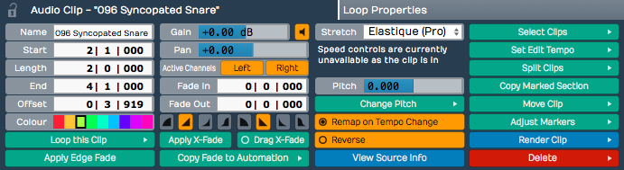
The Actions Panel
The Transport Bar¶
The transport bar runs along the bottom of the window and contains cursor position information, the Transport, the master volume control, and a set of global control buttons. Final master plugins live on the master track or in the mixer's master channel.
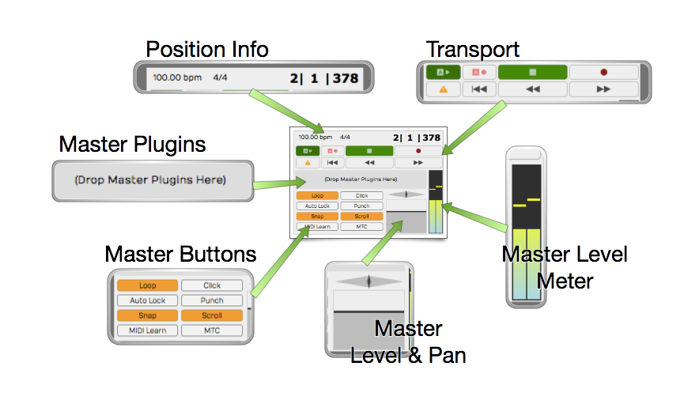
The Transport Bar
Cursor Position Info - At one end of the transport bar, you will notice three key pieces of information about the current cursor position: The tempo, the time signature, and the location counter.
- Click the tempo display to see tempo properties.
- Click the time signature for time signature properties.
- Click and edit any of part of the location counter to move the cursor to that location.
You can also drag any of the components of the location up and down to move the cursor. The location counter format will change to match what you have set for the Timeline.
The Transport - The Transport is made up of a set of eight buttons that include all the usual suspects: Play/Stop, Record, RTZ, Rewind, and Fast Forward. In addition, there are buttons for Automation Read, Automation Write, and Panic. The Panic button restarts Waveform's audio engine. All of these can be assigned to keyboard shortcuts for fast access.
Master Plugins - Final processing like compression and limiting goes on the master track or the mixer's master channel. Drag plugins from the Browser or the Plugin object onto the master, or right-click to add them.
Transport Bar Buttons - The transport bar includes eight buttons to access commonly used global on/off functions. More on these buttons in a moment.
Master Level - The Master level provides the final volume adjustment for the entire mix. The corresponding pan control provides control of the balance between the left and right signals. For most applications the Pan control will remain centered.
Master Meter - The Master meter shows the final output level. Right-click the meter to set the meter mode or reset any overload indicators.
Transport Bar Buttons¶
The transport bar buttons include some of the most used functions in Waveform. This is a description of what these buttons are for along with the shortcut used to toggle the button.
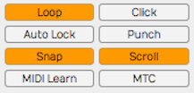
The Transport Bar Buttons
Loop - Loop (L) turns looping between the In-marker and Out-marker on and off. This is for both playback and loop recording.
Click - Click (C) turns the metronome click on and off.
Auto Lock - Auto Lock is short for "Automation Lock." As the name implies, this button locks automation to clips. When on, as you move clips around the automation curves follows along.
Punch - With Punch (P) tuned on, Waveform will only record when the cursor is between the In-marker and the Out-marker.
Snap - Snap (Q) button turns snap-to-grid on and off.
Scroll - With Scroll (S) turned on, Waveform pans the screen to keep the cursor on screen during playback and recording.
MIDI Learn - Click MIDI Learn to enter MIDI Learn mode. In this mode you can easily assign external knobs and faders to on-screen controls.
MTC - With MTC enabled, Waveform will chase sync to incoming MIDI Time Code. Unless you are still syncing to tape or hardware sequencers, leave MTC off.
Moving On¶
That was a broad overview of sections, controls, and buttons on the Edit tab. Next, we start to break all this down so you can have fun making music with Waveform.
Layouts¶
📝 Note: Layouts are a Waveform Pro 11 and later feature. They are not available in Waveform Free or in Waveform Pro 10. Where the feature is unavailable the Layout button is hidden and the save/load commands do nothing.
A layout saves the way the Edit window is arranged — which panels are showing, how big they are, and whether they are docked or floating — as a named preset you can recall in a single click. Set the window up the way you like for tracking, save it, then build a mixing layout with the Mixer enlarged and the Browser hidden, and flip between them instantly instead of dragging panels around by hand.
Layouts only ever touch the appearance of the window. They never change your audio, MIDI, clips, plugins, or any other project data.

The Layout menu
What a Layout Stores¶
A layout captures the state of the arrangement window's panels:
- The visibility, size, and docked/floating state of the Overview, MIDI editor, Mixer, Arrangement, and side panel, the global tracks (tempo, arranger, chord), the control/input/plugin strips, and the Quick Action bar and window.
- The active side-panel tab and the marker-track mode.
- The mixer strip layout — track width, big/small meters, and which mixer sections (inputs, modifiers, overview, clips, plugins, outputs, levels) are shown.
📝 Note: A layout does not store the arrange zoom level, per-track visibility, track heights, the playhead position, or the open/floating state of the Actions panel. Recalling a layout rearranges the panels; it leaves your view of the tracks themselves as it was.
📝 Note: Layouts are global (application-wide), not saved inside a project. The same set of layouts is available in every edit, and applying one to the current edit has no effect on other edits you have open.
Saving and Loading Layouts¶
The Layout button — the dashboard icon in the Edit-tab header — opens a menu with everything you need:
| Item | What it does |
|---|---|
| Save layout | Saves the current window arrangement as a named layout. |
| Show layouts directory | Opens the folder that holds your layout files in Finder/Explorer. |
| Load layout | A submenu listing your saved layouts, plus a Factory submenu of the shipped ones. Click one to apply it. |
When you choose Save layout a dialog titled "Save Preset" appears, prompting "Enter a name for the preset:" with the current edit's name filled in. Type a name and click Save. If a layout with that name already exists, Waveform asks "A preset with this name already exists, do you want to overwrite it?" with Overwrite and Cancel buttons.
💡 Tip: You can also open an edit straight into a chosen layout from the project list. Each project row has a template button (the eye icon) — click it and pick a layout, and the edit opens with that layout already applied. The neighbouring buttons open the edit with the default or Mixer layout.
If you prefer keyboard shortcuts, the commands "Show the save view state dialog" and "Show the view state menu" can be bound from Settings > Keyboard Shortcuts; neither has a default shortcut.
Factory Layouts¶
Waveform ships with four ready-made layouts under the Factory submenu of Load layout:
- Default
- Arrange
- Mixer
- Minimal
These are reinstalled automatically the next time you launch Waveform if any are missing, but an existing factory file is never overwritten.
Managing Layouts¶
There is no in-app way to rename or delete a layout. Use Show layouts directory to open the folder of
saved layouts and manage the .view files directly in Finder/Explorer — rename or delete them there.
Any subfolders you create become submenus in the Load layout list, which is handy for keeping sets of
layouts organised.
The Detail Editor¶
The Detail editor is a panel for working closely with the currently selected track or clip. It has two tabs: Track and Clip.
The Track tab¶
The Track tab shows detail for the selected track.
Clip automation also lives here, on the right-hand side, where you can view and edit the automation curves recorded into the selected clip -- see Clip Automation for how to work with them.
The Clip tab¶
The Clip tab shows detail for the selected clip. For an Audio clip this includes a waveform view of the clip, with the clip's loop settings -- Auto-Tempo, Auto-Pitch, Stretch, Beats, Root Tempo, and Beat Points -- on the right-hand side.
The same loop settings are also available in the Actions panel, so you can adjust them from wherever is most convenient.
Warp Time¶
When you enable Warp Time for an Audio clip, the waveform view in the Clip tab becomes the zoomable Warp Time editor, where you can add and drag warp points to bend audio into time. See Warp Time for the full workflow.
Moving On¶
For more on an audio clip's loop settings, see Working With Loops.
The Browser¶
The Browser is your central hub for finding and auditioning content -- plugins, presets, samples, clips, tracks, and more. It lives in the sidebar panel on the right side of the edit view, under the Search tab.
 The Browser panel showing Packs content with folders expanded. The sidebar on the left lets you filter by category, and the results area on the right displays matching items in a tree view.
The Browser panel showing Packs content with folders expanded. The sidebar on the left lets you filter by category, and the results area on the right displays matching items in a tree view.
Opening the Browser¶
The Browser is one of several sidebar panels available in the edit view. Look for the Search tab at the top of the sidebar. Click it to reveal the Browser. If the sidebar is not visible, you can toggle it from the view options or by dragging it open from the right edge of the edit area.
Tags¶
At the very top of the Browser, you will find a collapsible Tags bar. Tags are metadata labels attached to your samples, presets, and other library content. They let you narrow down results without typing a search query.
You can resize the tags area by dragging the divider just below it. Drag it all the way up to hide the tags section entirely. Tags that appear here are dynamically populated based on whatever results are currently showing, so you will only see relevant tags.
💡 Tip: If you use tags heavily, keep the tags bar open and give it some vertical space. It becomes a powerful way to cross-filter results -- for example, selecting "Packs" in the sidebar and then clicking a "Bass" tag.
The Search Box¶
Below the tags bar sits the Search box. Type any text here to filter the results list in real time. The search applies across whatever category or source you have selected in the sidebar.
A spinning icon appears while results are being fetched. Results update as you type, so you do not need to press Enter to search.
💡 Tip: Press the Return key while the Browser has focus to restart preview playback of the currently selected item. Handy for re-listening without reaching for the mouse.
The Sidebar¶
On the left side of the Browser is a narrow sidebar divided into four sections. Only one item can be selected across all four sections at a time -- clicking an item in one section automatically deselects items in the others.
Favourites¶
The Favourites section shows tags you have marked as favourites. This gives you one-click access to your most-used tag categories. If no favourites are set, it displays "None set."
To add a favourite, click the + button next to the Favourites heading. A menu appears listing all available tags. Click a tag to add it; click it again to remove it. Favourite tags show a filled colour dot next to their name.
You can right-click any favourite tag to access two options: - Remove from favourites -- removes the tag from this list - A colour picker that lets you assign a custom colour to the tag, making it visually distinct in both the sidebar and the results list
When you select a favourite tag, the results area shows all content tagged with that label.
Categories¶
The Categories section lets you filter by content type. The available categories are:
- Plugins -- all installed audio plugins (VST, AU, etc.)
- Presets -- saved plugin chain and track presets
- Racks -- rack filter presets
- Samples -- audio and MIDI files in your libraries
- Clips -- clip presets
- Tracks -- track presets
- All results -- everything, unfiltered by type
Each category has its own icon to help you identify it quickly. When you first open the Browser, it defaults to All results.
Smart Lists¶
Smart Lists provide context-aware views into your content:
- Packs -- shows content packs you have installed. These are the bundled and downloadable sound libraries
- Edit -- shows all assets used in the currently open edit. A Consolidate button appears at the bottom when this is selected, letting you copy any external files into the project folder
- Project -- shows all assets in the current project. A Consolidate Project button appears when this is selected
- Recent -- shows recently used items for quick access
💡 Tip: The Edit and Project smart lists are great for auditing your session before sharing it. If the Consolidate button is active, it means some files live outside the project folder and could go missing if you move the project.
Bookmarks¶
The Bookmarks section lets you pin any folder on your computer for quick browsing. Click Add folder... at the bottom to open a folder picker and bookmark a new location.
When you select a bookmark, the results area shows the contents of that folder. Right-click any bookmarked folder to Remove Bookmark.
💡 Tip: Bookmark your sample library folders, loop collections, or any directory you frequently pull sounds from. It saves a lot of navigating.
The Results Area¶
The main area of the Browser displays your results in a tree view. Depending on what you selected in the sidebar, you might see a hierarchical folder structure or a flat list of items.
Columns¶
The results header can display up to five columns:
- Name -- the item name, shown with a type-specific icon (waveform for audio, MIDI icon for MIDI files, plugin icons, etc.)
- Tags -- any tags assigned to the item
- Location -- the file path on disk
- Size -- the file size
- Date -- the creation date
You can click column headers to sort results by that column. Click again to reverse the sort direction.
Show Folders Toggle¶
At the bottom-left of the Browser, below the sidebar, is the Show Folders checkbox. (Default: on)
- On -- results are displayed in their natural folder hierarchy, with expandable folders
- Off -- results are displayed as a flat list, which can make it easier to scan through a large number of items
Browsing and Selecting¶
Click any item in the results list to select it. The preview area at the bottom will automatically update to show information about the selected item and (depending on your auto-play setting) begin playing it.
Double-click an item to insert it directly into your edit at the current insert point. For audio and MIDI files, this creates a new clip. For plugins, this inserts the plugin on the selected track.
Drag and Drop¶
You can drag items from the results area directly onto tracks in your edit. This is the most common way to use the Browser:
- Find a sample, preset, or plugin in the Browser
- Click and drag it onto a track
- Release to place it
Hold Shift while dragging audio files to place them on consecutive tracks instead of the same track.
You can also drag files into the Browser from your operating system's file manager. Audio files dropped onto the Browser are added to your loop library. Preset files are imported into your preset library.
Right-Click Menu¶
Right-clicking an item in the results list opens a context menu with options that vary by item type:
For all items: - Set tags... -- opens a dialog to edit the item's tags - Set tags from favourites -- a submenu showing your favourite tags as quick toggles. Filled dots indicate tags already assigned; click to add or remove
For audio/MIDI files: - Delete file -- permanently deletes the file from disk - Open the folder containing this file... -- reveals the file in your system's file manager
For presets: - Edit Preset... -- opens the preset editor - Delete Preset -- removes the preset - Export Preset... -- saves the preset to a file - Import Preset... -- imports a preset from a file - Open the folder containing this file... -- reveals the preset file in your file manager
⚠️ Warning: Deleting a file or preset from the right-click menu is permanent. There is no undo.
The Preview Area¶
At the very bottom of the Browser is the preview strip. It shows information about the currently selected item and provides playback controls.
Audio and MIDI Preview¶
When you select an audio or MIDI file, the preview strip displays:
- Two info labels showing file details (format, sample rate, bit depth, duration, etc.)
- A waveform or MIDI thumbnail showing the content at a glance
- A Play button to start playback (switches to a Stop button while playing)
- A Menu button (three horizontal lines) for playback options
- A Volume control for the preview output level
- A Level meter showing the preview output level
Preview Playback Options¶
Click the menu button (the three-line icon) in the preview area to access these settings:
- Play all -- starts playback of previews across all open Browser panels
- Stop all -- stops all previews
- Match tempo -- time-stretches the previewed audio to match your edit's tempo. Useful for auditioning loops at your project's BPM
- Match pitch -- pitch-shifts the preview to match your edit's key
- Re-trigger on play -- restarts the preview when your edit begins playback
- Sync to Edit -- synchronises preview playback with the edit's transport position
- Auto-play -- automatically plays a file when you select it in the results list. (Default: on)
- Loop -- loops the preview continuously. (Default: on)
- Preview all MIDI clips as drums -- forces all MIDI previews to use a drum sound, which is helpful when browsing MIDI patterns intended for drum kits
💡 Tip: I recommend keeping Auto-play on and Loop on for most workflows. It lets you audition content just by clicking through the results list, which is much faster than manually hitting Play each time.
Preset Preview¶
When you select a plugin or track preset (rather than a raw audio file), the preview area switches to a different mode. It shows:
- A text description of the preset
- A visual thumbnail showing the plugin chain (each plugin displayed as a shaped block with its name)
- A Preview button to enable live auditing through your audio inputs
- An Inputs button to choose which MIDI inputs feed the preview
- An Outputs button to select the audio output for preview playback
Live preset preview lets you play a synth preset through your MIDI controller before committing to it.
📝 Note: For live preset preview to produce sound, at least one of your selected MIDI inputs must have input monitoring enabled. If no inputs have monitoring on, a warning icon appears.
The Files Panel¶
Alongside the Search browser, the sidebar has a separate Files tab. Where the Search browser organises your library by category and tags, the Files panel is a plain filesystem browser -- a folder tree you navigate just like your operating system's file manager. It is the quickest way to pull in audio that is not part of your tagged library.
 The Files panel browsing a folder of audio files
The Files panel browsing a folder of audio files
Choosing What to Browse¶
The folder button at the top of the panel opens a menu of starting locations:
- Project files -- the audio files registered in the current project
- Project folder -- the project's folder on disk
- Drives -- the drives and volumes on your system, so you can browse anywhere
- Refresh -- re-scan the current folder to pick up files you have just added
- Bookmark current folder -- pin the folder you are viewing for one-click access later (and Delete bookmark for current folder to remove it again)
Use the up-arrow button to move up to the parent folder.
💡 Tip: Bookmark the folders where you keep your loops and one-shots. A bookmarked folder is the fastest route to a sample library that has not been tagged into your Browser content.
Auditioning and Inserting¶
The Files panel lists audio files -- plus SoundFont .sf2 and .sfz files -- and shares the same preview strip at the bottom as the Search browser, so you can audition a file before using it. Drag a file onto a track to place it, double-click to insert it at the cursor, and hold Shift while dragging to spread several files across consecutive tracks, exactly as in the Search browser.
📝 Note: The Files panel browses your filesystem directly, so it shows files whether or not they have been tagged or added to your library. Dragging a new file in from here does not add it to your loop library -- use the Search browser for tagged, searchable content.
The Tracks Panel¶
The Tracks panel is a compact track list that lets you tag your tracks and then show only the ones you are working on. On a large arrangement -- dozens of tracks across drums, vocals, synths and busses -- it is an easy way to focus the timeline on, say, just the "Drums" tracks without manually hiding everything else. The panel is available in every edition.
 The Tracks panel, showing the track tree, the tags bar, and the Show Only Tagged Tracks button at the bottom
The Tracks panel, showing the track tree, the tags bar, and the Show Only Tagged Tracks button at the bottom
Opening the Panel¶
Look for the Tracks tab at the top of the sidebar and click it. The panel lists every track in the edit as a tree, with folder tracks expandable. Each row shows the track's colour, icon and name, plus a Hide button and a Disable button on the right; clicking these mirrors the show/hide and enable/disable state in the track header. Selecting a row here selects the track in the edit, and vice versa.
Tagging Tracks¶
Tags live on the tracks themselves, so you assign them from the track properties rather than from this panel:
- Select one or more tracks (Cmd/Ctrl-click to multi-select).
- Open the track properties and find the Tags field.
- Type one or more tags, separated by commas (for example
Drums, Verse). The same tags are applied to every selected track.
Only audio, folder and automation tracks can be tagged.
Filtering by Tag¶
The tags bar in the middle of the panel lists every tag currently in use across your tracks. Click a tag to toggle it on; click more than one to combine them. With at least one tag enabled, turn on Show Only Tagged Tracks (the button at the bottom of the panel) and the timeline collapses to show only tracks carrying an enabled tag -- their tagged parent folders and tagged child tracks stay visible too, so folder structure is preserved. Turn the button off to bring every track back; the tag selection is remembered.
Control Reference¶
- Track tree -- lists all tracks; selection is synced with the edit. Each row has a Hide and a Disable button.
- Tags bar -- the in-use tags; click to enable/disable a tag for filtering.
- Show Only Tagged Tracks -- toggle; when on, only tracks with an enabled tag (and their tagged folders/children) are shown in the arrangement. Default: off.
💡 Tip: Tag tracks by role ("Drums", "Vox") and by section ("Verse", "Chorus"), then enable a couple at once to zero in on exactly what you need.
📝 Note: If no tags are enabled, or you have not tagged any tracks, the Show Only Tagged Tracks button has no effect -- the filter only kicks in once at least one enabled tag exists.
The Groups Panel¶
The Groups panel is the sidebar's home for Edit Mix Groups -- the feature that links several audio tracks so that an action on one (a fader move, a mute, and so on) is mirrored on the rest. It gives you a single place to see every group in the edit, create new ones, and switch them on and off.
 The Groups panel, listing the edit's mix groups
The Groups panel, listing the edit's mix groups
📝 Note: The Groups panel only appears in Waveform Pro, since Edit Mix Groups are a Pro feature.
The panel lists every group in the edit. Each row shows the group's name drawn in that group's colour, and a small * appears next to any group that contains a track you currently have selected, so you can tell at a glance which groups your selection belongs to.
- Create New Group -- the button at the bottom of the panel makes a new group from the audio tracks you currently have selected (and selects the new group so you can name it and set its options straight away). See Creating and Managing Groups for the other ways to build a group.
- Disable -- each row has its own Disable button that bypasses just that group, leaving the others untouched. This is handy for nudging a single track without breaking it out of the group permanently.
- Open a group's properties -- double-click a row to open that group's property page, where you choose exactly which operations the group links (volume, mute, pan, solo, and so on). The full list is described in What Gets Linked.
- Select and delete -- single-click selects a group (Cmd/Ctrl-click to select several); press Delete to remove the selected group(s). Deleting a group never deletes its tracks.
💡 Tip: A track can belong to more than one group at once -- the coloured circle in the track header shows a slice for each group it is in. See The Track Header Group Icon for details.
⚡ Things to Watch Out For¶
-
Large libraries can be slow. If you have thousands of samples, the first time you open a category or type a search may take a moment while results load. The spinning search icon lets you know it is still working.
-
Tags are shared across your library. When you tag a sample or preset, that tag is stored globally. Removing a tag from one Browser view removes it everywhere.
-
Consolidate before sharing projects. If the Edit or Project smart list shows a Consolidate button, some of your assets live outside the project folder. Always consolidate before sending a project to someone else or moving it to a different machine.
-
Deleting files is permanent. The right-click Delete option removes files from disk, not just from the Browser. Double-check before confirming.
-
Preview volume is independent. The preview volume control in the Browser is separate from your edit's master volume. If you cannot hear previews, check this control first.
-
Shift-drag for multi-track placement. When dragging audio files from the Browser, hold Shift to spread them across consecutive tracks instead of layering them on one track.
Moving On¶
Now that you know your way around the Browser, you can quickly locate any sound, plugin, or preset in your library without leaving the edit view. Combine favourites, tags, bookmarks, and the search box to build a workflow that gets you to the right content fast -- and switch to the Files panel whenever you want straightforward folder-by-folder browsing. Next, you might want to explore how presets and racks work in more detail.
The Actions Panel¶
The Actions panel gives you a single place to see and run the things you can do to whatever you currently have selected. Select a track, a clip, a plugin, or a parameter, and the panel updates to show the actions that apply to it. It's a fast way to reach commands without hunting through menus, and it's where you go to mark your favourite actions so they show up in the Quick Actions menu.
 The Actions panel showing actions for the current selection
The Actions panel showing actions for the current selection
How the Panel Works¶
The Actions panel is contextual. It watches what you have selected and shows a list of actions relevant to that selection. Click an empty area of the arrangement and you'll see Edit-level actions; click a track and you'll see track actions; click a clip and the list changes again.
Many actions are more than just buttons. Depending on the action, a row might contain a toggle, a slider, a text field, or a dropdown, so you can change a value right there in the panel without opening a separate properties view.
To run an action, click its row. For an action that holds a value, interact with its control directly — type into the text field, drag the slider, or pick from the dropdown.
💡 Tip: The Actions panel and the Properties panel overlap a lot, but the Actions panel is selection-driven and compact. I keep it open in the sidebar when I'm doing repetitive editing so the commands I need follow my selection around.
Opening the Panel¶
There are a few ways to get to the Actions panel:
- Add it as a tab in the left-hand sidebar (the same area as the Browser).
- Open it as a dedicated panel on the right side of the Edit tab.
- Use the Show Actions item in the View menu of the Edit tab.
- Toggle it from the Eye panel selector at the upper right (F9), using the Hide/show the actions panel control.
- Float it into its own window so it stays visible while you work elsewhere.
You can also assign a keyboard shortcut to show and hide the panel. Look for the Show/Hide Actions Panel command on the Keyboard Shortcuts page in Settings.
The Breadcrumb¶
At the top of the panel is a breadcrumb that shows the path to your current selection — for example, the track, then the clip, then a parameter within it. The breadcrumb is more than a label: click any item in it to jump back up to that level and show the actions for it.
This is handy when you've drilled down into a parameter and want to get back to the actions for the parent track or clip without re-selecting it in the arrangement.

The Actions panel showing the actions for a selected track.
Favourites and Display Modes¶
Not every action is something you use every day, so the panel lets you curate what it shows. Three small icon buttons at the top of the panel switch between display modes:
Favourites (filled star) — Shows only the actions you've marked as favourites. This keeps the list short and focused on the commands you actually reach for.
All actions (outline star) — Shows every available action for the current selection, except the ones you've hidden. (Default)
Show hidden (eye) — Shows everything, including actions you've hidden. Use this when you need to bring a hidden action back or run something you normally keep out of the way.
Marking Favourites and Hiding Actions¶
Each row has a star on its left edge. Click it to toggle that action as a favourite. Favourites are what appear in Quick Actions, so this is how you build your own short list of go-to commands.
To hide an action you don't want cluttering the list, right-click the row (to the right of the star) and choose Hide. The same menu has a Favourite entry that does the same thing as clicking the star. Hidden actions only reappear when you switch to the Show hidden mode.
📝 Note: The display mode is remembered between sessions, and the Actions panel and the Quick Actions menu remember their modes separately. You can have the panel showing all actions while the Quick Actions menu shows only favourites.
Adding Macros¶
If the action you want doesn't exist as a built-in, you can add one of your own macros to the list. Click the Add Macro button at the bottom of the panel and pick a script from the menu. The macro is attached to the type of item you currently have selected, so it shows up whenever you select a similar item later.
See the Macros chapter for how to write and manage the scripts themselves.
Locking and Floating¶
When the panel is configured to allow it, two extra controls appear at the top left:
Lock — Locks the panel to its current contents so it stops following your selection. This is useful when you want to keep a particular set of actions on screen while you click around elsewhere. Click it again to unlock and resume tracking the selection.
Dock / Undock — Pops the panel out into a floating window, or docks it back again. A floating Actions panel stays on top so you can keep it beside whatever you're working on.
The Action Menu in the Transport Bar¶
You don't have to open the full panel to get at your actions. The transport bar at the bottom of the window has its own breadcrumb that opens the same context-sensitive actions as a pop-up action menu, right where you're working. Click the breadcrumb to open the menu for the current selection, pick an action, and it's gone again.
The transport breadcrumb carries the same favourites / all / hidden mode buttons as the panel, but it remembers its own setting independently — so the menu can show only your favourites while the docked panel shows everything. By default the menu shows your favourites only, which is why marking favourites in the Actions panel matters.
Shift-click the breadcrumb to see all actions for that item, ignoring the menu's usual mode — a quick way to reach something you haven't favourited without changing your setting. When the menu is open, press Return or Escape to dismiss it, or just click elsewhere.
📝 Note: If the menu opens empty in favourites mode, you'll see "No actions to show. Mark some actions as favourites." Mark a few favourites in the Actions panel, or Shift-click to see everything.
The Quick Actions Bar and Window¶
Quick Actions is a separate feature from the action menu above. Instead of showing the actions for whatever you've selected, it gives you rows of buttons that you assign to specific commands — your own custom shortcut bars that stay put regardless of selection.
 Rows of assignable Quick Actions buttons
Rows of assignable Quick Actions buttons
Assigning Quick Actions¶
Each row is a Quick Actions bar of buttons. To add a button, click the + at the end of a row (Add a quick action button). To assign a command to a button, right-click it and choose a command from the Assign action submenu. The right-click menu also shows what's currently assigned and offers a Remove option.
You can rearrange buttons by dragging them, and add or remove whole rows using the controls at the end of each row (Add a row / Remove this row). Each set of buttons is saved as a named "Shortcuts" file, so you can keep different layouts for different jobs.
The Quick Actions Bar (above the transport)¶
The Quick Actions bar can sit directly above the transport bar, always in view. To show or hide it, open the Eye panel selector at the upper right (F9) and click the Show/Hide the quick actions panel toggle. You can also use the Show Quick actions bar command, or assign it a keyboard shortcut. Here the bar is limited to a handful of rows, enough for the commands you reach for constantly.
The Quick Actions Window¶
For a larger workspace, open the Quick Actions window — a floating window that combines a mixer with a much taller Quick Actions bar (up to thirty rows). Click the Quick Actions button (the shortcut-style icon) in the transport bar to toggle it, or right-click that button and choose Open Quick actions window.
 The Quick Actions window, with the mixer above and Quick Actions below
The Quick Actions window, with the mixer above and Quick Actions below
Down the left edge of the window are three toggles that control what it shows: a mixer toggle, a Quick Actions toggle, and a touch mode toggle that enlarges the buttons for touchscreens. Turn off the mixer to use the window purely as a big board of action buttons, or turn off Quick Actions to use it as a standalone mixer.
💡 Tip: Assign a keyboard shortcut to Show/Hide Quick Actions Window. Combined with touch mode, the window makes a handy control surface on a second monitor or tablet.
⚡ Things to Watch Out For¶
-
If the panel looks empty, check the display mode. In Favourites mode, the panel only shows actions you've starred. A selection with no favourited actions will look blank — switch to the all-actions (outline star) mode to see what's available.
-
Hidden actions stay hidden everywhere except Show hidden mode. If you can't find an action you expect, you may have hidden it earlier. Switch to the eye mode to bring it back.
-
The panel and the transport action menu have independent display modes. Changing the mode in one place doesn't change the other, so don't be surprised if your docked panel and the transport menu show different lists.
-
Don't confuse the action menu with Quick Actions. The action menu (and the docked panel) follows your selection automatically; the Quick Actions bar and window show buttons you assign by hand and don't change with your selection.
-
A locked panel won't follow your selection. If the panel seems "stuck" on the wrong item, check whether the lock button is engaged.
-
The dedicated panel and floating window depend on your edition. Basic actions are available across editions from version 11, but the dedicated Actions panel requires version 12 or later. If you don't see the panel option, your edition may not include it.
Moving On¶
The Actions panel and the transport action menu are about reaching context-sensitive commands quickly, while the Quick Actions bar and window let you build your own fixed boards of shortcut buttons. Once you're comfortable marking favourites and assigning buttons, the natural next step is building your own commands — see the Macros chapter for writing scripts, and the Keyboard Shortcuts chapter for assigning them to keys.
Using Markers¶
In this chapter, You will learn about using markers in Waveform. There are four different kinds of markers:
In-marker and Out-marker - Together these define the "marked region", that is the region for looped playback and loop recording.
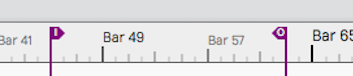
In-marker and Out-marker
Bars & Beats markers (B&B Markers) - Bars & Beats markers can be used to identify song sections, give you a visual guide to the song, and provide quick navigation to different parts of your song. They are arranged as clips on the Marker track. Bars & Beats markers appear with a musical note icon on the Marker track. They also appear as narrow pointers on the Timeline when the Marker track is closed.
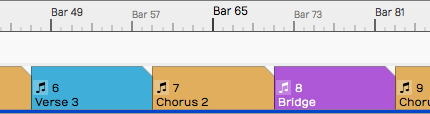
Bars & Beats Markers on the Marker Track
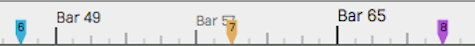
Bars & Beats Markers on the Timeline (with Marker track closed)
Timecode Markers (TC Markers) - Timecode markers mark a specific time offset into the Edit, and are not dependent on tempo changes. They can can aid with navigation, especially when working with video. TC markers appear as clips with a clock icon on the Marker track. They appear as rounded pointers on the Timeline if the Marker track is closed.
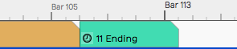
Timecode Marker on the Marker Track
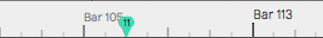
Timecode Marker on the Timeline (with Marker track closed)
📝 Note: In Waveform, the term 'marked region' means the range of an edit that occurs between the In-marker and the Out-marker.
Wave File Markers - You can add yellow arrows directly to Wave files that then appear on Audio clips. These are the least useful type of markers. More about them near the end of this chapter.
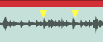
Wave File Markers
In-marker & Out-marker¶
Position the In-marker and Out-marker by dragging the I and O flags along the Timeline. The In-marker and Out-marker together define the range over which playback will loop when the Loop button in engaged in the transport bar. They also define what is called the "marked region" used for numerous editing actions.
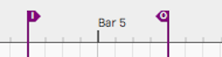
The In-marker & Out-marker
Pressing I will locate the In-marker to the cursor position. Pressing O locates the the Out-marker to the cursor position.
You can alternatively "draw" in the range between the In-marker and Out-marker. Double-click on the Timeline and start dragging right. Double-click positions the In-marker at the starting point. As you drag right, the Out-marker comes along to set the out point when you lift the mouse button.
💡 Tip: To set the marked region over a selection of clips and press A. This also works for Marker clips making it a great way to set the In-marker and Out-marker over a song section.
Navigate Using the In-marker & Out-marker¶
You can quickly navigate to the In-marker or Out-marker using the square
bracket keys. Press [ to locate the cursor to the In-marker; Press ]
to locate the cursor to the Out-marker.
Zooming to the In-marker/Out-marker¶
When you have a marked region set between the In-marker and Out-marker you can quickly zoom in to that region. To do that, right-click the Timeline and select Zoom to show the marked region or simply to press F7.
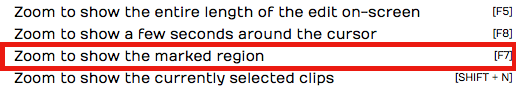
Right-click the Timeline, Zoom to In-marker/Out-marker
Looping Playback Over the Marked Region¶
To continuously repeat playback over a section of your tune, set the In-marker and Out-marker to define the loop range. Turn on looped playback by engaging the Loop button (L). Playback will repeat that section over and over until you stop playback.
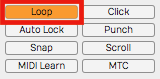
Enabling Loop Playback
📝 Note: When Loop is enabled, playback will only play within the marked region. If the cursor is located earlier than the In-marker or after the Out-marker when you press Play, it will jump to the In-marker and play from there.
Auto Punch and the Marked Region¶
To use Auto Punch, first set the In-marker and Out-marker over the range where you want to punch in. Enable the Punch button (P) in the Master section. Make sure Loop is turned off. Now enable a track for recording, position the cursor before the In-marker and press Record on the Transport. Even though the track is armed for recording, no recording will happen until the cursor gets to the In-marker.
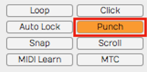
Enabling Auto Punch Recording
💡 Tip: Auto punch recording means that recording is only allowed between the In-marker and Out-marker. Also, punch recording only works when Loop is off.
The Marker Track¶
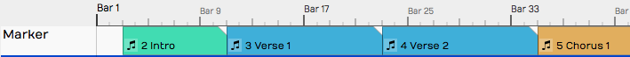
Marker Track
Let's take a closer look at the Marker track. You can open and close the Marker track with the Marker track show/hide button.
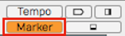
Marker Track Show/Hide Button
The Marker track can contain either Bars & Beats markers or Timecode markers. If you don't like to see the types mixed together on the same track, there is an additional split mode that shows each type on separate lanes.
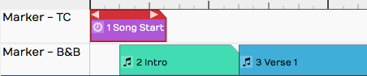
Marker Track Split Mode
To access that mode, select the Marker track by clicking the header. Then in properties, de-select Use a single track for all types of marker. In this mode, the Marker track has two lanes. The top lane shows Timecode Markers and the bottom lane shows Bars & Beats Markers.
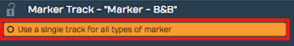
Marker Track properties Setup for Split Mode
📝 Note: F10 is my assignment for the keyboard action Toggle the marker view mode. Pressing F10 cycles through the three marker track states - hidden, normal, and split mode.
💡 Tip: You can click on any blank space in the Marker track to instantly position the cursor.
Adding Markers¶
Here are the various ways to add markers to the Marker track:
Drag the Clip Object - Drag the Clip object to the Marker track and choose which type of Marker to create. This creates a Marker clip you can drag and resize. It has left and right trim handles to adjust the length. You can also drag a marker by its header and move it around. If the Marker track is in split mode, the type of Marker (B&B or TC) is determined by which lane you drop the Clip object on.

Adding a Marker by Dragging the Clip Object
Press Return - The Return key (Enter on PCs) has several functions related to Marker navigation during playback. At the most basic level, pressing Return adds a new Marker at the cursor position. The type of Marker clip matches the most recently added Marker. If a Marker clip is selected, it adds one of that type. Markers added with Return, use the next available sequential Marker number.
Right-click the Marker Track Header - Right-click the Marker track header and choose which type of marker to add at the cursor position.
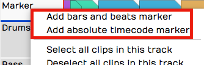
Add a Marker from the Marker Track Right-click Menu
Marker Track properties Buttons - Click the Marker track header to select it, then look in properties. There you will find the buttons New Bars & Beats Marker and New Absolute TC Marker.
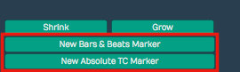
Add a Marker from Marker Track properties
Browser Markers Tab Add Button - You can add either kind of Marker Clip using the selections on the Browser, Markers tab.
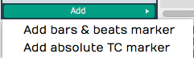
Add a Marker from the Browser, Markers Tab
Marker Clip properties¶
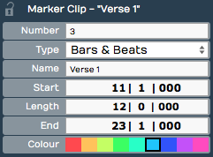
Marker Clip properties
Marker clips behave like other clips in several ways. You can adjust the length using the trim handles, you can split them, drag them, duplicate them, or nudge them. They also contain several properties, described below:
Number - Marker numbers are issued sequentially as you add Marker clips. You can edit the Number property if you want. If you change Number to one that is already in use, then the other clip will be assigned the next available number. Marker numbers can be used for quick navigation during playback.
💡 Tip: If you feel compelled to renumber all your Markers to get them into a nice sequential order, you might want to skip some numbers, in order to make it easier to insert new Markers. For example, if you have a lot of markers in the song, you could re-number them by 5s.
Type - Type allows you choose which type of Marker clip you want: Bars & Beats or Absolute. Bars & Beats markers adjust to the tempo changes in the song. Timecode markers are fixed to a specific time offset into the Edit and are not affected by tempo changes.
📝 Note: Timecode markers are also called "absolute markers", "TC markers", or "absolute timecode markers" within Waveform. All those terms refer to the same thing. For this book, I usually call them Timecode markers.
Name - The Name property sets the name shown on the Marker clip. By default it will be "New Marker." Most users rename it based on song section. For example: Intro, Verse, Chorus, Bridge, or Outro.
Start - The Start property shows the bar, beat and tick start time for B&B markers. For Timecode markers it shows Hours/Minutes/Seconds/Milliseconds. For either type, you can edit Start directly to move the marker to a different location.
Length - Similarly, Length shows B&B marker length in Bars/Beats/Ticks format. For Timecode markers, it shows length as Hours/Minutes/Seconds/Milliseconds. Edit the Length property and the Marker clip length will change to match.
End - End values are in the same format as the Start property. Edit it to change the ending time. When you change the End value, Length gets adjusted to match. Start always remains the same. If you edit End to fall before Start, it will be set to match the Start time. In that case, Length gets set to zero.
Colour - Choose from one of the nice colors. This sets all selected Marker clips to the color you choose.
💡 Tip: You can change a Marker clip from Bars & Beats to Timecode using nudge. Press F10 until the Marker track split mode is showing. Select the marker clip to convert and press Shift-up or Shift-down to nudge the clip to the other lane.
Navigating by Markers¶
Once you have Markers set up, you can quickly navigate using the Marker number and the Return key. Just type in a Marker number like '5' or '11' and hit Return ('Enter' on PCs). As you type the number you will see it appear in green in the upper right of the Waveform window. When you see the number, you have about two seconds hit Return before the number disappears.

Marker Number As It Appears Momentarily
If you enter a number that doesn't have a matching Marker, then Waveform will insert a marker with that number at the cursor. Also, if you just press Return, a Marker clips is inserted at the cursor position.
Undo (Cmd + Z / Ctrl + Z) removes a marker if you didn't intend to insert it.
💡 Tip: The Number + Return approach to navigation works during playback but also works when Waveform is idle. If it doesn't seem to be working when playback is idle, click the header of the Marker track or select any marker and try again.
The Browser Markers Tab¶
Use the Browser Markers tab to add Bars & Beats or Timecode markers to the Marker track. You can also use it navigate to any marker by double-clicking on the marker name in the list. You can also quickly delete the selected marker or change its name in properties.
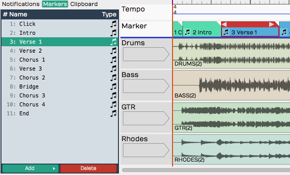
Browser, Markers Tab
Select marker clips - Single-click a marker in the list to select it.
Navigate to a marker clip - Double-click on a marker in the list to jump to that position. This works during playback too.
Rename a marker - Click a marker to select it. Then, edit the Name property in properties.
Add a Marker - Click Add at the bottom of the Markers tab. Select from the two types: Absolute timecode marker and Bars & Beats Marker.
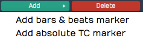
Adding a Marker from the Markers Tab
Delete a Marker - Select a marker in the list and click Delete or just press Delete on your keyboard. Undo (Cmd + Z / Ctrl + Z) restores a deleted marker.
Change a Marker from one Type to the Other - Select the Marker and edit the Type property in properties. Or drag it from the TC Marker track to the B & B Marker track or vice-versa.
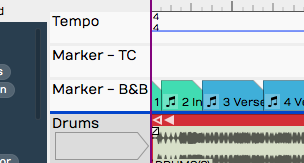
Absolute Timecode Marker Track - Marker - TC
Renumbering Markers¶
It is sometimes too easy to get your marker numbers out of order, but there is an easy trick to renumber them: Open the Markers tab in the Browser. Select all of the markers and edit the Number property. For example if it shows "1" with all the markers selected change it to "2." The markers instantly renumber starting from "2." If you really want them numbered starting from one, simply do it again, changing the Number property back to one.
Adjust Markers (Wave File Markers)¶
There is another type of marker in Waveform, also called "markers." They appear to mark spots in a clip, but actually are stored in the underlying Wave files. You work with these markers from the Adjust Markers actions in Audio clip properties. You also add and remove them by dragging the marker object in Audio clip properties View Source Info.
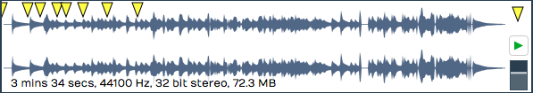
Wave File Markers in View Source Info
Adjust Markers Options in Audio Clip properties
Moving On¶
Markers can be extremely useful in the context of recording and editing. Not only do they keep your project organized, they also provide easy navigation into important locations within the Edit.
Selecting and Snapping¶
In this chapter, we start working with clips. The examples focus on Audio Clips and MIDI Clips. Keep in mind that most of these techniques also apply to Step clips, Edit clips, and markers.
First, you'll learn how to select clips and groups of clips. Then, you will learn about the snap-to-grid functions. Snap-to-grid makes it easy to align clips to the bars and beats of your song. Let's get started with selecting clips.
Selecting a Clip¶
To select a clip, simply click on the clip. The clip is highlighted and its properties appear in the Actions panel.
A Selected Clip
Auditioning a Clip¶
To audition a clip, double-click and you will hear it play back, starting at the spot where you have double-clicked. Click within the clip to jump to a new spot as playback continues. Click anywhere outside the clip and the auditioning will stop. Moving pointers above and below the clip indicate the playback position.

Audio Clip Being Auditioned
Auditioning essentially solos the clip; everything else within the Edit is muted in this mode.
Selecting Multiple Clips¶
To select more than one clip, hold down Cmd / Ctrl then click on each clip that you want to add to the selection.
Multiple Clips Selection
Once you have multiple clips selected, you can perform operations on them as a group, such as moving them by dragging, duplicating, or deleting them. We'll cover more about clip editing operations in Basic Audio Editing. To clear a multiple selection, simply press the Esc key.
Another way to make a multiple selection is to use the lasso tool. Here's how that works:
Multiple Selection with Lasso
- Hold down Opt / Alt until you see a plus cursor.
- Now as you drag, the cursor draws a yellow box.
- Anything the yellow box touches gets selected.
💡 Tip: You can further customize a multiple selection by holding down Cmd / Ctrl then click any clip you want to de-select.
Shift Selecting Clips¶
Waveform also supports Shift-select. This is a quick way to select a contiguous range of clips. Here's how:
- Select the first clip.
- Hold down Shift and select the last clip. This will select the first clip, the last clip, and all the clips in between.
Shift-select works for clips on a single track, and even across multiple tracks.
💡 Tip: Shift-select also works for many other kinds of Waveform objects including Browser lists and tracks.
Deselecting Clips¶
You can always press Esc to deselect everything.
💡 Tip: Pressing Esc also works to clear selections of other objects in Waveform like plugins and tracks.
Using Snap-to-Grid¶
Snap-to-grid makes aligning clips and notes to musical time accurate and efficient. Working with this powerful feature is crucial to using Waveform for editing audio and MIDI.
Enable/Disable Snap-to-Grid¶
To toggle snap-to-grid on or off, click on the Snap button (Q) in the transport bar. When snap-to-grid is enabled the Snap button appears highlighted.
Snap button in the transport bar
Pressing Q also toggles Snap on and off. You can also control the snapping state from the menu section - Snapping > Enable snapping.
💡 Tip: Remember the keyboard shortcut Q is short for quantize. Snap-to-grid is a form of quantizing. If you don't like that shortcut, you can always remap it to another key.
About Snap Resolution¶
The snap resolution is dependent on the zoom level. If you're zoomed way out, the snap resolution might be one bar. The more you zoom in, the snap resolution gets finer and finer.

Hover Over Timeline to See Snap Resolution
💡 Tip: You can always see what your current snap resolution is by hovering the mouse pointer over the Timeline. A tooltip appears showing, Snap resolution bar, Snap resolution beat, or Half beat for example.
Snapping Clips to the Grid¶
As you drag a clip, it snaps to the grid increments. If you want to see exactly where it's snapping, look at the Start parameter in properties. Snap-to-grid makes it easy to align a clip to a bar or beat of the music.
Clip properties Start
📝 Note: Snap-to-grid is an alignment of the beginning of a clip to a grid line. Notice that snapping also applies to editing functions like trimming.
Snapping the Cursor to the Grid¶
Snapping may affect how the cursor is positioned depending on another setting. Turn on Snapping > Snap cursor movement and the cursor position will snap to the grid. Remember that the snap resolution is determined by the zoom level.
caption
To test this, zoom out so that the snap resolution is "Beat." Now move the cursor around and it will obviously snap to the nearest beat.
💡 Tip: To get clear indication of exactly where the cursor is, look at the time display in the transport bar.
Snapping Clips to Other Clips¶
Another snap behavior is to Snap clips to neighbors. With Snap clips to neighbors off, clips snap to the grid normally. However, with Snapping > Snap clips to neighbors turned on, clips snap to other clips. It seems as if they are magnetically attracted to each other. This is useful for any editing where you want to arrange clips end-to-end, for example when editing voiceover tracks.
Snap Clips to Neighbours Option
💡 Tip: A problem with Snap clips to neighbors is that you need to have snapping enabled for it work. To snap clips to other clips with with snap-to-grid disabled, just hold down Opt / Alt as you drag. This is really the best way to arrange clips end to end!
Overriding Snap-to-Grid¶
Temporarily override snap-to-grid by holding down Cmd / Ctrl. Using this modifier, you can freely position clips without first turning off Snap.
Nudging Clips¶
To move clips using the keyboard, select a clip then press Shift + Right Arrow or Shift + Left Arrow. The nudge action moves the clip by one grid increment. You can also move clips track to track using nudge. To nudge clips track to track, use Shift + Up Arrow and Shift + Down Arrow.
You can use nudging when moving large selections of clips over, to add a song section or make room for an intro.
📝 Note: Nudging works the same whether snapping is on or off. The nudge move is by the grid increment.
Nudging Notes¶
Snapping is useful when working with Audio clips, but even more so when working with MIDI notes. We cover MIDI editing in MIDI editing However, here is a preview while we are on the topic of nudging.
The Waveform MIDI Editor
Double-click on the header of a MIDI clip. It goes into the large view so you can see the MIDI editor. MIDI notes work much like clips, in that they respect the snap resolution. You can drag a note to snap by the current grid increment: bar, for example. You can nudge notes forward or backward in time by the grid increment as well. To do so, hold Shift while pressing the Left Arrow or Right Arrow.
💡 Tip: Remember the keyboard shortcut Q to toggle Snap on and off.
Moving On¶
Now that you've learned how to get around in Waveform, it's time to start having fun manipulating audio. We'll jump into that in the next chapter.
Audio Clips and Editing Audio¶
In this chapter, you are going to learn how to work with Audio clips. and how to work with the integrated editing handles that are part of each Audio clip.
Parts of an Audio Clip¶
Notice that an Audio clip has several parts. It has a header that includes trim and slip handles. It has a body that contains the waveform thumbnail and fade handles.
Main Parts of and Audio Clip
Header - Move Audio clips by dragging from the header. The header includes the trim handles (hollow), slip handles (solid), and other tools.
Audio Clip Header
Body - The Audio clip body features the waveform thumbnail, fade handles, and the clip name.
Audio Clip Body
Plugins - Audio clips can host plugins directly, so you might see one or more plugins right on the clip body. Learn more about that in Clip Effects.
Audio Clip Effects
Properties - Like most other objects in Waveform, Audio clips have lots of additional properties and controls in the Actions panel.
Audio Clip properties
📝 Note: If you accidentally move or edit an Audio clip, you can always press Undo (Cmd + Z / Ctrl + Z) at the top of the Menu section.
Moving Clips¶
As you move the mouse pointer over the Audio clip header, it changes to a grabbing hand. Use that to drag the clip forward or backward in time. If Snap is on, the beginning of the clip will snap by grid increments.

Move Audio Clips by Dragging from the Header
📝 Note: As we discussed previously, the grid resolution depends on the zoom level.
You can also drag Audio clips from track to track. With snap enabled, track-to-track drags will usually stay in sync. However, with snap turned off, it is easy move the clip slightly off time. To prevent that, hold down Shift as you drag track to track. The Shift key, constrains the timing of track to track drag moves.
💡 Tip: Another way to move a clip track-to-track without changing the timing is to use nudge. Select the clip the hold down Shift and press Up Arrow or Down Arrow to nudge it to another track.
Deleting Clips¶
The easiest way to delete a clip is to selected it and press Delete or Backspace. The cut (Cmd + X / Ctrl + X) keyboard action does the same thing. If you need yet another way to delete, locate and click the convenient Delete button in properties.
Audio Clip properties Delete button
💡 Tip: As you work with clips sometimes you just want clear the selection. The fastest way is to just hit Esc.
Audio Clip Handles¶
Each Audio clip header includes six handles that you use for trimming, slipping, stretching. These are represented as four arrows and two boxes.
Trimming - Hollow left and right arrows on both of the upper corners of the clip are trim handles. Grab a trim handle and drag left or right to trim the start or end of the the clip. Notice that trimming this way directly changes the Start and End values in properties. With Snap turned on, trimming snaps to the grid. To trim freely, hold down Cmd / Ctrl as you drag or turn Snap off.
Audio Clip Trim Handles
Slip Editing - Slip editing means moving the waveform within the clip without altering its Start, Length, or End values. Drag the solid box shaped handle left or right to slip edit. You can override snap-to-grid during slip editing by holding down Cmd / Ctrl.
Audio Clip Slip Handle
Reframing - The hollow box shaped handle allows reframing the clip. Drag it left or right and the clip moves but the waveform doesn't. It essentially allows you to reframe the audio without affecting its timing.
Slip Trimming - The solid left and right arrow handles are for slip trimming. Try dragging the left solid arrow. Notice that it moves the clip Start while keeping the End planted. Now try the right solid arrow. Moving that one, moves the End while keeping the the Start planted. Although this operation seems similar to trimming, the difference is that the underlying waveform slips relative to the end that is not moving.
💡 Tip: With Snap on, hold down Cmd / Ctrl as you drag to temporarily override snapping for most editing operations.
Video Clip: Basic Audio Editing
Splitting a Clip¶
Splitting Audio clips, is essential for audio editing. Here is the quickest way:
- Select the clip
- Position the cursor where you want to make the split
- Press slash (/)
Audio Clip, Right after Split
💡 Tip: If you want to make numerous splits, you can keep holding down the left mouse button as you drag the cursor and press slash (/) - never lifting the mouse button.
Audio clip properties also include Split Clips actions. Look to the far right in properties and find the Split Clips button. You will find options to slip at the cursor along with options to split at the in-marker or out-marker. Keep in mind that these actions will only affect selected clips.
Audio Clip properties, Split Clips actions
Duplicating Clips¶
To duplicate one or more clips, select the clip and press D. That will copy the clip and paste it right after the original clip. Duplicate works like copy and paste, all in one action.
💡 Tip: If you want to use a different key for the duplicate action, you can change it in Settings tab > Keyboard Shortcuts > Editing Functions: Duplicate.
Fade-in/Fade-out¶
In the upper corners of the Audio clip body, notice the fade handles. Each is shaped like a tiny box with a diagonally line through it. Grab a fade handle and pull it inward. This action draws a fade-in or fade-out.
Audio Clip Fades
Video Clip: Fade-in/Fade-out Demo
By default, you will get a linear fade, but there are other fade types available in properties for the clip. For more control, directly edit the Fade In and Fade Out numerical values in properties.
Audio Clip, Fade properties
Pitch Fade¶
Right click on the fade handle, and you can select between a volume fade and pitch fade. Pitch fade gives you a very cool tape stop effect or tape run-up effect. The fade graphic is shaded darker than for volume fades.
Right-click Fade Handle, Pitch Fade Speed Up
Here is a video tutorial demonstrating pitch fade:
Crossfades¶
A crossfade is fading out one Audio Clip while fading in another. Some controls in Waveform are labeled "X-Fade" when referring to crossfade. Here are the steps to create a crossfade:
- Drag a clip so that it it overlaps another one somewhat.
- Press X on the keyboard.
Crossfaded Audio Clips
That's it: a crossfade. It's a fade-out that overlaps the fade-in of the next clip. You can adjust the fade shapes using the buttons in properties, just like any other fade.
Fade-in/Fade-out Shape Buttons
📝 Note: Keep in mind that the fade shape buttons only operate on the selected clip. You will need to select the clip on the appropriate side of the crossfade for the fade shape buttons to work.
Drag Crossfade¶
The Settings tab, General page has a setting labeled Default Drag X-Fade. It has two possible settings: On by default or Off by default. When set to On by Default, the simple act of dragging a clip so that it overlaps another clip will create a crossfade. Other DAWs call this "auto-crossfade."
Settings Tab, General page, Drag Crossfade Default
📝 Note: In Waveform, Drag-X Fade is actually a property of each Audio clip. When you change Default Drag X-Fade it will only take effect for new clips you create or add to the Edit.
Edge Fades¶
When editing, sometimes you need to apply short fades to both edges of an Audio Clip to avoid popping. This is especially true if you split a clip in the middle of a note. The solution is add as short fade-in and fade-out to the clip. Waveform calls those "edge fades."
Apply Edge Fade
The good news is that you can instantly add edge fades by clicking Apply Edge Fade in properties. This applies 7 ms fades to the start and end of all selected clips.
Copy and Paste¶
Typical cut, copy, and paste commands also work with with Audio clips:
- Cut (Cmd + X / Ctrl + X)
- Copy (Cmd + C / Ctrl + C)
- Paste (Cmd + V / Ctrl + V)
Clip Gain, Mute, & Pan¶
Adjusting the gain of an Audio clip is great tool for mixing. Simply split out one phrase, or even one note and tweak the gain level. Waveform has not only clip gain but also clip mute and pan - all available in properties. When working with stereo Audio clips, Pan works as a balance control.
Audio Clip Gain, Mute, Pan, & Active Channels
Gain - Drag the slider left or right to adjust the Gain value. Alternatively, click the slider and type in a value directly. The gain change is reflected right away in the height of the waveform thumbnail on the clip.
Mute - Click the Mute icon to silence the clip. The waveform thumbnail will dim to gray.
Pan (Mono Clips) - Drag the Pan slider left or right to adjust the stereo placement of the clip. You can also click and type in values directly. Full left is -1.00, centered is 0, and full right is 1.00.
Pan (Stereo Clips) - With stereo Audio clips, Pan acts as a balance control. What that means is that as you slide it more right the left side gets quieter. Slide it left and the right side gets quieter. At the extreme left and right positions the opposite side is silent. The really cool thing about this is that the waveform thumbnail updates dynamically show to show the effect.
Active Channels (Stereo Clips) - For stereo clips you can turn off either the left or right channels using the Active Channels buttons in properties. When you click Left, for example, it toggles the left side off. But it's not just muting the left side, it switches the clip to a mono version of the right side material. The great thing is that the waveform thumbnail updates to show this instantly.
Reversing Audio Clips¶
Another cool thing you can do is reverse a clip so the audio plays backwards. Simply click the Reverse button in properties. The waveform thumbnail reverses and the sound will be backwards on playback.
Reversing an Audio Clip
Merging Clips to One Clip¶
Following editing, you may want to combine several clips back into to a single clip. To do so, select all the clips using shift select or lasso selection. Then choose Render Clips > Merge the selected clips in properties.
Render Clips > Merge the selected clips
In a few moments, Waveform combines them into a single contiguous clip. There are many ways to merge, render, and export that we will touch on later.
Merge Clips, Before and After
Here is video demo of merging clips:
Merge Selected Clips Video Demo
Deleting a Section of Audio Removing Space¶
You can easily delete a section of audio from one or more clips and remove the space between clips. While it's not entirely obvious how to do this, it is easy if you follow these steps:
- Set the in-marker and out-marker over the section you want to delete.
- Select all the clips on all tracks (Cmd + A / Ctrl + A)
- In the properties, choose Delete > Delete marked region of selected clips, and move up any selected clips (Cmd + J / Ctrl + J).

Delete a Section Removing the Space
Editing with ARA¶
Waveform supports ARA (Audio Random Access) plugins for deep, non-destructive pitch and time editing directly on a clip. Unlike a conventional plugin, an ARA plugin has continuous access to the clip's audio, so its edits stay perfectly in sync with Waveform's transport and loop as you work.
The most popular ARA plugin is Celemony Melodyne, and a Melodyne Essential license is bundled with Waveform — you will have received information on how to install it, along with your Waveform order. The workflow below uses Melodyne as the worked example, but any ARA plugin you install (for example VocAlign, SynthV, or SpectraLayers) appears the same way and is invoked by name.
📝 Note: ARA is available in all editions of Waveform, on macOS and Windows only. Installed ARA plugins also appear in the ARA column of Settings > Plugins.
Invoke an ARA plugin¶
- Select an Audio clip.

Change Stretch Property to Melodyne
- In the properties change the Stretch property to the name of the ARA plugin you want to use. Installed ARA plugins are listed together under an ARA heading in the dropdown; choose Melodyne here. The clip's Stretch property now reads ARA: Melodyne and the plugin's name appears at the center of the clip.
Audio Clip with Melodyne Invoked
- Click the plugin name at the center of the clip — or click Show ARA plugin editor in the properties — to open the plugin's editor.

The Melodyne UI
- Edit pitch and time by manipulating the note "blobs" in the plugin's UI. Note that the transport and loop is synchronized between Waveform and the ARA plugin as you edit.
💡 Tip: To learn all about Melodyne click Help > Manual within the Melodyne UI. Skip the section on Loading, Transferring and Saving, as those operations are handled automatically by ARA.
📝 Note: While a clip is in ARA mode, warp time, reverse, and Speech-to-Text are unavailable for that clip.
Here is how to remove an ARA plugin from a clip:
- Select an Audio clip that is using an ARA plugin.
- In the properties change the Stretch property to No Time-Stretching or a time-stretch algorithm such as Elastique Pro. The ARA plugin is removed from the clip.
Reopen the editor from the clip¶
While a clip is in ARA mode, the clip strip shows a small "
Convert an audio clip to MIDI¶
When a clip is in ARA mode, the properties show a Use ARA plugin to convert this audio clip to MIDI button. Clicking it uses the plugin's note analysis to create a new MIDI clip — with the same name, start, and length — and replaces the audio clip on that track. This is a quick way to turn a monophonic part, such as a vocal or bass line, into an editable MIDI performance.
Video Clip: Here is a video clip that explains how to invoke Melodyne in Waveform.
Group Clips¶
With Group Clips, you can combine clips on a track into a single grouped clip without rendering. The advantage of this is that you can ungroup at any time for access to the individual clips.
To create a Group Clip, select the clips you want to group on a track. It doesn't have to be a contiguous selection, but the clips do need to reside on the same track.
Next, click Create Group Clip in the Actions panel.
Create a Group Clip from the Actions panel
Notice that the resulting clip has a "Group" label and icon on the lower left which indicates the number of clips it contains. It also has a simplified header.

A Group Clip
To ungroup the clip back to the original state, select it and click Ungroup in the Actions panel.
Ungroup from the Actions panel
If you like, you can create a macro and assign Group Clips and Ungroup to keyboard shortcuts. In the Script Editor, locate the actions under Basic Actions > Editing > Group selected clips and Basic Actions > Editing > Ungroup selected clips.
Here is the code:
// Group Clips Macro
Tracktion.groupSelectedClips();
// Ungroup Clips Macro
Tracktion.ungroupSelectedClips();
Group Clips can be useful when working with beats created from sliced up audio. You can treat the Group Clip as a single clip, making move and duplicate operations straightforward. At any point you can ungroup it to modify the various parts.
Linked Clips¶
You can also easily create linked copies of clips that reference the same underlying audio file or MIDI data. Changes to the original clip are then reflected in any of the linked copies. This works for Audio clips, MIDI clips and Step clips.
To create a linked clip, drag the Linked Clip handle from the clip header. As you drag, you are dragging a copy referenced back to the source clip.
Linked Clip Handle
In the following image, we have dragged over a linked copy of an audio file. Notice that the lower left of each clip shows a "link" icon indicating that this is a linked clip.
Linked Audio Clips
To test the link, we have reversed the audio on the first clip. Since this changes the underlying file, the second clip is also reversed.

Reversed Linked Audio Clips
Non-destructive edits like splits and fades don't affect the linked copy. However, anything that affects the underlying file will. For other examples of this type of edit, select an audio clip then in the Actions panel open View Source Info > Edit Audio File > Basic Editing Operations.

Basic Audio Editing Operations
From this dialog you can perform several kinds of edits to the underlying file. These operations will affect all linked copies as well as the original.
Linked clips might be even more useful for MIDI clips. Any changes made to one of the linked clips are reflected in all the copies. This can be useful when creating a beat that is used in many places in a song. If you update one linked copy, they all get revised.
Linked MIDI Clips on Separate Tracks
While you could do something similar with looped clips, looped clips are a series of continuous repeats on a single track. Linked clips appear as separate clips and can even be placed on separate tracks.
Linked Step Clips Green Handle
Step clips can also be copied using the Linked Clips handle.
💡 Tip: It's a bit more difficult to identify linked Step Clips because they don't have clip names along with the link icon. You can identify linked Step Clips because the Linked Clip handle in the header turns green whenever there are linked copies present. This holds true for linked Audio clips and MIDI clips as well.
Moving On¶
Those are the simple but powerful tools in for editing Audio clips in Waveform. We didn't even cover time stretching, Warp Time. But, these are the fundamentals. Let's move on to looping Audio clips in the next chapter.
Stem Separation¶
Stem separation splits a mixed audio clip into its constituent parts — drums, vocals, bass, and other — using an on-device neural model. Reach for it when you want to isolate a vocal for a remix, pull out a drum loop, or turn a finished mix into an instrumental, all without the original multitrack.
The separation is powered by Demucs, Meta's open-source music source separation model. It runs entirely on your own machine as a bundled background process — nothing is uploaded and no internet connection is needed once the model is installed.
 The Separate to Stems dialog
The Separate to Stems dialog
What You Need¶
Stem separation has three requirements, and all three must be in place before the feature will run:
-
Waveform Pro. The feature is gated behind
Feature::stemSeparationand isn't available in the Free or OEM editions. -
The DJ Mix Tools Expansion, unlocked on your account. Unlocking it is what switches the feature on.
- The "Stem Separation" feature pack — the downloaded Demucs model and its executable — installed in your Extensions folder. The model is large, so it ships as a separate download rather than inside the app.
If the DJ Mix Tools Expansion is unlocked but the feature pack hasn't been downloaded, the Split to stems menu item is still present, but choosing it shows the message "Unable to find the required feature pack — Please ensure this has been installed via the Downloads page or Download Manager and try again."
Getting the feature pack¶
Feature packs are fetched through Settings > Downloads (the Download
Manager). To check where they live or install one by hand, open
Settings > File Locations and look at the Feature Extensions
section: it shows the Extensions folder, lists the packs already
installed, and offers a Content pack button for installing a
.content or .zip file manually. See the Reference: Settings > File
Locations and Reference: Settings > Downloads chapters for details.
Separating a Clip¶
- Right-click a wave audio clip and choose Split to stems.
- The Separate to Stems dialog opens, warning that it "will separate
the source file of "
" to its constituent parts" and that "This may take a while depending on the length of the material." - Pick a Separation type from the dropdown:
- Four Stems (drums, vocals, bass, other) — the default; produces all four stems.
- Two Stems (extract drums) / (extract bass) / (extract vocals) / (extract other) — produces just the chosen stem plus its residual, e.g. Vocals and No Vocals.
- Click Separate.
If the clip's source isn't already a WAV, Waveform first converts it to a
temporary WAV ("Preparing for Stem Separation"). It then runs the
separation itself ("Separating Stems — Extracting stems from:
When it finishes, Waveform inserts one new audio track per stem
directly after the original track, named after the clip with the stem in
parentheses — <clip> (Drums), <clip> (Vocals), and so on. Each new
track holds a copy of the original clip remapped to its stem file, so the
stems stay lined up with the original. The stem WAVs are written into the
project's rendered-media folder.
 Stem tracks inserted beneath the original clip
Stem tracks inserted beneath the original clip
The original clip and track are left untouched — the stems are added alongside them. Mute or delete the original yourself once you're happy with the result.
Things to Watch Out For¶
⚠️ Warning: Separation runs on the clip's whole source file, not the trimmed clip region. If you separate a short clip taken from a long recording, Demucs still processes the entire underlying file. Trim or consolidate the clip down first if you only want part of it.
📝 Note: If you've selected several clips, only the first one is separated. Run the command again for each clip you want to split.
📝 Note: Processing time scales with the length of the material — a full song can take a while. The progress dialog is cancellable at any point.
📝 Note: The stems are lossless WAVs, so they take up roughly the size of the original source file multiplied by the number of stems.
Moving On¶
Once you have your stems on their own tracks, they behave like any other audio — see Audio Clips and Editing Audio for trimming and editing, and Mixing Down for bouncing an isolated stem or instrumental back out to a file.
Working With Loops¶
In this chapter we introduce the looping capabilities of Waveform. You can drag in files from your loop library as Audio clips, repeat them with the Duplicate (D) action, or switch any Audio clip into looping mode and roll out repetitions over as many bars as you want. This makes it easy, for example, to extend a short loop into a beat to play over the full length of a song. An audio clip's loop settings appear in the Actions panel and in the Detail editor (Clip tab), which we will explore in this chapter as well.
Getting Loops Into Waveform¶
There are four ways to copy loops into an Edit.
- Use the Browser Files tab and navigate to wherever you have audio files and loops on your system. Drag loops you find there to tracks in the Edit. As you drag in loops they appear as an outline until you drop them.
- Use the Browser Search tab and search for loops and then drag them into your Edit. The Browser also gives you the ability to preview loops to help you select the right one for the song.
- Simply drag them from you computer desktop drop them onto tracks .
- From the menu section, select Import > Import an audio or MIDI file. Navigate to a file on your system and click open. The Select a file to import dialog box even includes a basic file audition function with Auto-play.
📝 Note: Beyond the common formats — WAV, AIFF, FLAC, Ogg, and MP3 — Waveform also imports
.w64,.caf,.au, and.vocfiles. On macOS it additionally reads Apple-format files such as.m4aand.m4b; on Windows it reads Windows Media Audio. REX loop files (.rx2,.rcy,.rex) are supported in builds that include the REX option.
Setting the Edit Tempo¶
If you know the tempo of the loop, you might want to set the tempo of your Edit to that tempo before dragging the loop in. That will give you the most natural results.
Changing the Tempo
Here is how to change the tempo:
- Click on the BPM setting in the transport bar. The Actions panel will show the BPM value.
- Click on the BPM value and type in the new tempo.
Dragging Loops to a Track¶
As you drag a file to to a track, you'll see an outline of the Audio clip before you drop it. Position the beginning of the clip right where you want it on the track, then just drop it.If it's not in the right place, grab the Audio clip from the header and drag it into place.
After dropping a loop, notice that the cursor jumps to the end of the loop. This is to position the cursor to drop in the next one, as you build up a track.
💡 Tip: If you don't like having the cursor jump to the end when dropping in loops, hold down Opt / Alt as you drag. This prevents the cursor from jumping to the end.
If Snap is on, loops you drag in will snap to the grid.
Dragging in Multiple Clips from the Browser¶
To drag in several clips at once, make a multiple selection in the Browser and drag the selected loops to a track. They will be arranged on the track end-to-end.
💡 Tip: To drop a selection of clips to parallel tracks, hold down Cmd / Ctrl as you drag and Waveform asks if you want to put them on one track or separate tracks. This is great when working with multitrack drum loops. It even creates additional tracks if there aren't enough available.
Dragging Loops to Separate Tracks
Looping the Loop¶
Audio clips have an L icon on the header. Click the L to toggle looping mode for that clip. Once the clip is in looping mode it will immediately appear to be twice as long. Enabling looping gives you one repeat right away.
Audio Clip Loop Mode
To repeat the clip, drag the right trim handle and roll out as many repeats as you want. You will see a white repeat divider at the start of each repetition. The underlying audio wave file is not duplicated, it is just being replayed over and over. All other editing operations work the same as any other loop.
To stop looping, click the L icon gain to toggle looping off. That returns the clip to a single cycle.
There is another way to activate clip looping. Select the clip then click Loop this Clip in properties. From there you can select the number of times to loop. This is an alternative to dragging the right trim handle to roll out repetitions.
Loop this Clip in properties
The nice thing about looping is it doesn't take up any additional space in the project. You can loop just about any clip. You could take a four bar drum loop and separate out one or two bars of the main groove then loop it. That can give you the starting point for a song. Roll it out across the entire song, and you've got something more inspiring than a simple click track to play against.
Duplicating Clips¶
Another way to repeat a clip is to duplicate it. To do so, select a clip and press D. Duplicate is the equivalent of copy followed by paste. The duplicate clip is placed immediately after the selected clip.
Duplicating a Clip
This is the best approach if you plan to edit the audio in a unique way for that section of the song.
Loop properties¶
When you select an Audio clip, its loop properties appear in the Actions panel (and in the Detail editor, Clip tab). These properties are related to the underlying wave file. Tweaks to these properties affect how the Audio clip will respond to tempo, pitch, and time stretching. Here is a description of the most essential loop properties:
Loop properties in the Actions panel
Auto-Pitch - With Auto-Pitch enabled, Waveform will change the pitch of the clip appropriately to match key change events in the Tempo track. This only works if you have a Root Note set for the file; more on that in a moment.
Auto-Tempo - With Auto-Tempo ticked, the Audio clip will be automatically stretched to match the song tempo and tempo changes in the Tempo track. For Auto-Tempo to work, you need to make sure you have the Root Tempo set for the file and Stretch set to an appropriate algorithm.
Warp Time - With Warp Time enabled the waveform view to the right becomes a Warp Time editor. You can add warp points and do fine timing adjustments. This powerful feature is covered in detail in Warp Time.
Time Signature - Edit Time Signature values to set the time signature of the file.
Root Tempo - Root Tempo is the original tempo of the loop file. Waveform uses this to know how much to stretch the file to sync it to the Edit tempo. If Root Tempo is not recorded along with the loop file, you can set it here. Files created within Waveform will automatically have the Root Tempo set to match the Edit tempo.
Beats - The Beats parameter is the number of beats in the file. Using Beats and Root Tempo Waveform calculates the length of the loop file in musical terms.
Pitch Offset - If you just want to pitch the file up or down, enter an offset value for Pitch Offset.
Stretch - Stretch sets time stretching algorithm used for this loop file. Usually you will want to use Elastique (Monophonic) for lead vocals and solo instruments. Use Elastique Pro for everything else. Melodyne is typical selected used for pitch correction.
Waveform View - The waveform view, found in the Detail editor (Clip tab), lets you play the file. You can also adjust the in and out loop points by dragging the purple lines inward. There is a convenient level control here as well. This view is replaced by the zoomable Warp Time editor when Warp Time is enabled.
Loop Start/End - This button contains a few quick tools to set the start and end loop points of the underlying wave files to match the current Audio clip start and end points.
Beat Points - Beat Points are a type of marker that shows where the transients are to assist with time stretching. This concept is very similar to how acidized files work. With the latest Elastique Pro stretching algorithms manually manipulating the beat points is not necessary.
Add to Library - If you create an Audio clip loop and might want to reuse it in other projects, click Add to Library then give it a name and tags.
📝 Note: When you use Add to Library, the loop file will be saved to the User Loops Path folder as designated on the Loop Database page of the Settings tab.
💡 Tip: If you want more control when adding loops to your library, try Export > Render to a File. If you choose, Only Render Selected Clips you get much more control over its properties and where to put the resulting file.
Moving On¶
There's a lot more you can do with clip looping, loop files, and loop libraries in Waveform, but those are the fundamentals.
Keyboard Shortcuts¶
In this chapter you will learn how to customize the keyboard shortcuts in Waveform. In Introduction we covered how to change the default keyboard mapping. In short, go to the Settings tab and select the Keyboard Shortcuts page. Then near the bottom of the page click Reset to Defaults, and choose Restore default Waveform key-mappings.
📝 Note: The default Waveform key-mapping is used for all examples in this book.
Keyboard Shortcuts Page¶
The Keyboard Shortcuts page on the Settings tab shows all of the key-mappings. You can easily change those to your liking or match them to a DAW you are already comfortable with.
Keyboard Shortcuts Page on the Settings Tab
Waveform allows you to have more than one shortcut tied to a single action. This is really helpful if you want to have a way to do something on your laptop, but then take advantage of the extended keypad when you're working on a desktop computer.
Setting a Keyboard Shortcut¶
Map Record to the Asterisk on the Keypad
Let's take a look at an example. To start recording you click the Record button in the transport or press keyboard shortcut R. When working on a computer that has a full size keyboard, you may prefer to start recording by hitting the asterisk (*) key on the keypad. To do so:

Setting a Keyboard Shortcut
- To the far right of each action there's a plus icon. To create or add a keyboard shortcut to an action, click the corresponding plus icon. The New Key-mapping dialogue box opens up.
- Type the key or key combination that you want to trigger this action. The key or key combination will be identified in the dialogue box and it will also show you if there's a conflict with an existing mapping. For our example, press asterisk (*) and then click OK.
Now, both R and the keypad asterisk () are assigned to the Record action. Back in the Edit test this by turning *Record on and off using either R or asterisk (*).
📝 Note: Keyboard mappings are global. Any changes you make will be active for all your Edits.
Changing a Keyboard Shortcut¶
To change an existing shortcut, click directly on the key-mapping at the far right of the action. Choose between Change this key-mapping and Remove this key-mapping. If you choose the Remove option, the key-mapping disappears. If you choose the Change option the New key-mapping dialog appears and you can enter a new assignment.
Click to Change or Remove a Key-mapping
Saving Keyboard Shortcuts to a File¶
Once you have your keyboard shortcuts set up the way you want, you can save the entire key-mapping to a file, a very good idea. If you run Waveform on a different computer, you can simply import the file, and will then have all your familiar assignments ready to go.
Save Key-Mappings Button
To save your shortcuts setup, click Save Key-Mappings and Waveform
presents a dialogue box requesting a file name and path. You can store
the key-mapping file anywhere you like. Waveform key-mapping files have
the .Tracktionkeys extension.

Save Key-Mappings Dialog Box
💡 Tip: You could create a 'settings' folder under your main Waveform folder to hold such files, naming the key-mapping files with a version number at the end. This gives you the ability to easily roll back to a previous version if you ever change your mind about a new keyboard layout.
Loading Keyboard Shortcuts from a File¶
If you're working on a new installation or move to a new computer you can load your custom key-mapping file. Go to the Keyboard Shortcuts page on the Settings tab and click Load Key-Mappings. Find your exported key-mapping file then click Open. All your key-mappings are restored.

Load Key-Mappings Button
Printing a List of Keyboard Shortcuts¶
If you want to print a list of all your current keyboard shortcuts, click View as HTML at the bottom of the Keyboard Shortcuts page. This loads a nicely formatted, searchable view of all the current key-mappings into your browser. From there you can search it or print it using normal web browser features.

View as HTML Button
HTML View of the Keyboard Shortcuts List
Moving On¶
At this point you should have a good handle on how to customize the keyboard shortcuts in Waveform. Since T6, Waveform offers powerful macro scripting you can use to further customize keyboard shortcuts. For more about that, see Macros.
Recording Audio¶
Now it's time to learn how to record your own instrument or vocal tracks into Waveform. First, you will learn how to configure track inputs for recording. Next, you will learn how to use Waveform's built-in metronome to provide a reference click, in order to to keep your recordings in time.
Configure the Input¶
We covered audio device setup back in Audio Device Setup. Refer back that chapter if you have any questions about setting up your audio interface.
As a reminder, before recording with Waveform you need to use the Auto-Detect feature to establish proper recording sync between playback tracks and newly recorded tracks. This essential step, calibrates the timing offset so that system latency doesn't throw off the timing of your overdubs. Re-run Auto-Detect test anytime you change your interface hardware or buffer setting. The [Auto-Detect procedure] is explained in detail in Chapter 4.
⚠️ Warning: To configure Waveform for recording you must use the Auto-Detect feature along with a hardware loopback. If you don't then your overdubbed tracks will not be in sync with existing tracks. While this is not difficult, it is essential to do this manual step anytime you change the Audio Device Setup.
The Input Object¶
At the far left of every track, you will find the input section. Each track has an input object that looks like a rectangular arrow pointing right.
Track Input Object
💡 Tip: If you don't see the input objects, click the Show/Hide Inputs (Shift + F12) button at the top right corner of the Edit tab.
Show/Hide Inputs Button
Click on an input object to see a menu of options. From the menu, select which hardware input to use for recording to this track. You can set it to No input or select any input from your audio interface. In this case it's set to Input 1.
Input Menu
When you select an input, the input object shows the input name, a real-time input meter, and the record arm "R" button. Also, a full set of input properties appears in the Actions panel.

Input Controls & properties
Customizing Input Names Globally¶
If you are happy with the default input names that's great, however, you can customize them with friendlier names using the Alias property.
To change your hardware input alias names globally, go the Settings tab, Audio Devices page. Select an input in the Channels list and edit the Alias name in properties.
Customizing Input Names for an Edit¶
There is another way to rename inputs, but only for the current Edit. In the Edit, select an input and notice the Alias name in the Actions panel. Change this to customize the input name for that particular song. As an example, you could use this to indicate the microphone used in the session.
Customized Input Names Using the Alias Property
About MIDI Inputs¶
Notice that on the input menu, you can choose MIDI interface inputs. There's really no difference between an audio and a MIDI track. A track can contain Audio clips or MIDI clips. You just need to set the input appropriately and insert the correct kind of plugins.
MIDI Devices on the Inputs Menu
In essence a track behaves like an audio track if you set an audio input; it works like a MIDI track if you set a MIDI input and insert a virtual instrument plugin.
Setting Up Inputs for Multi-track Recording¶
It's very convenient to assign all inputs to consecutive tracks using Assign all inputs to consecutive tracks from the inputs menu. It does exactly what the name says, allowing you to quickly set up for multi-track recording. This is great if you're setting up to record a live performance through a digital mixer with a lot of inputs.
Assign All Inputs from the Input Menu
Number of Inputs¶
This feature is something uniquely Waveform. You can set up more than one input on a single track, up to four inputs assigned to a track.

Assign up to Four Inputs to One Track!
Now, if you record with more than one input armed, you will get a separate clip for each. This results in stack of audio clips.
A good use of this feature is to have several recording chains configured and ready to go, when auditioning microphones and preamps. Simply arm the input you want to try and away you go. It makes it super efficient to switch to a different mic/preamp combination by simply arming the desired input.
Enable a Track for Recording¶
To enable (arm) a track for recording, click the R symbol on the input object. The R illuminates to indicate that the track has been armed for recording.
Input Armed for Recording
Test the input signal. If you're using a microphone or a guitar, play a note or have the singer sing something. You should see the meter moving on the input while testing. If not, check your input level on the hardware and make sure phantom power is on if necessary for the mic.
💡 Tip: Once recording has started you can still click R to enable and disable recording on the fly. This allows you to do manual punch-in and punch-out style recording. Here is a video that explains Punch In/Out on the Fly.
Hit Record¶
With the input setup done, recording is a matter of clicking Record (R) on the Transport. While recording, Waveform draws the waveform on the track. To stop recording press Spacebar.
Recording always starts at the cursor position. There are several ways and options to stop recording which will be explained in a bit.
Enable Recording for All Inputs at Once¶
If you are doing multitrack recording with many inputs you can arm all the tracks at once from the input menu using the option Enable/Disable all devices for recording (Cmd + R / Ctrl + R). You can even use this on the fly during recording to start and stop recording without stopping the transport.
Input Meters¶
Click on an input to select it. Notice the large meter in the Actions panel. This gives you a good reference for setting up the input level.

Large input meter in the Actions panel
💡 Tip: As a rule of thumb, you want to set input level to hover around the middle of the range shown on this meter. The input level is adjusted using the gain controls on your audio interface or preamp.
If you're doing multi-track recording and you want to see large meters for all the tracks at once, press F12. Waveform will go into "big meters" mode. This superimposes a very large meter onto each track.

Big Meters Mode
📝 Note: The big meters obscure your view of clips on the tracks, so you will want to toggle it off (F12) when not recording.
Dragging the Input Object Track to Track¶
Here's a unique aspect of the input objects. You can drag the input object from track to track. For example, say you recorded something on track one, and now you want to record something else using the same microphone onto track two. Simply, grab the input object and drag it from track one to track two. The set up is done instantly.

Dragging and Input to other Track
📝 Note: Dragging the input track to track is a really useful function in Waveform. Once you start using this feature you will miss it when you record with any other DAW!
Renaming a Track¶
To rename a track, click directly on the track name, then edit the Name property in the Actions panel. A really quick way to do this is to click Name, press Tab, and start typing. As soon as you tab off the Name property or click elsewhere in Waveform, the new track name will be set.
Recording Steps in Review¶
Here is a review of all the steps needed to test your recording setup:
- Arm the track or tracks for recording by clicking 'R' on the track input.
- Make sure Loop is turned off in the transport bar.
📝 Note: Waveform supports loop recording but we'll get into that in a later chapter.
- Make sure the cursor is rewound to beginning by clicking Return-to-zero (Home) in the transport bar.
- Verify that Click (C) is turned off (for now) in the transport bar.
- Click Record (R) in the transport bar. Play something into the input using your instrument or your voice depending on the kind of input selected.
📝 Note: As you record, you'll see the meters and you'll also see the waveform start to draw on the Audio clip.
- Press Spacebar to stop recording.
- To hear what you recorded, click rewind then press Spacebar to play. You should be able to hear what you just recorded.
💡 Tip: If your recorded take just isn't really going well, you can press Abort or Abort & Restart on the transport. These options only appear during recording.

Abort and Abort & Restart During Recording
Working with the Click¶
While recording, it's often very helpful to have an audible timing reference. Waveform has a built-in metronome that offers a steady click for just this purpose.
Enabling the Click Track¶
To enable the metronome click, turn on Click (C) in the Master section. That turns it on but the setup is in the Click Track Menu. Here are explanations for the options:

Click Settings
Enable Click - Another way to enable or disable click is to open the Click Track menu and select Turn on click track or Turn off click track. That does the very same thing as pressing C or clicking the Click button in the transport bar.
Click Volume - Adjust the volume of the click using the Click Track > Volume slider. There are also Low volume (-14dB) , Medium volume (-4.4dB), and Full volume (0dB) presets available.
📝 Note: Curiously, Full volume is not actually full. The Volume slider goes to +3db. That's three more than Full volume if you are keeping score.
Count-in - While recording, you can have the click start a bit before the cursor position. This gives you time to get into the groove before performing. Enable the count-in from Click Track > Pre-record count-in length. Select from none, one bar, two bar, or two beats for the count-in length.
With count-in enabled, you will hear the click during recording. If the cursor is at the beginning of the Edit, you will hear the count-in then the cursor will start moving. If the cursor is not at the start, it will actually jump back by the count-in length and play from there.

Count-in Options
Click During Playback - If you want to hear the click during playback, make sure to leave Click Track > Only click during recording disabled.
Emphasize Bars - To clearly hear the downbeat of each bar, enable Click Track > Use loud clicks to emphasize bars. With that enabled, Waveform uses a different sound for the first beat of each bar.
Click Sound - To change what sounds are used for the click, select Click Track > Change Click Settings. This opens the Click Track Settings dialog box. From here, you can change the samples used to make the click sound. Just select the audio files for the normal and emphasized beats. If you leave the File properties blank, you will get the default sounds.

Configuring the Click Sound
Not too many people still do this, but it's possible to use an external MIDI sound module for your click sound. If you are inclined to do that, you can set the MIDI note numbers in the Click Track Settings dialog box.
Click Output Device - If you want to redirect your click so it's not coming through your main speakers, look at the click output device options (Click Track > Output device for click). Normally and by default this is set to Default audio output. You can pick any audio output on your system or even any MIDI output. If you select a MIDI output, it should be a sound module of some sort. When using MIDI for the click, you can set the click sound note numbers as explained in the previous section.
Using a click is an essential reference tool for studio recording, so it is great to have a synchronized click built-in and ready to go.
Listening on Headphones While Recording¶
Ideally, you will monitor what you're recording through headphones, and set up the level and mix on your audio interface outside of Waveform. Most audio interfaces give you the ability to mix your live input with the playback from previous tracks. You use the mixer on the audio interface to balance the live input sound with the sound being played back by Waveform.

Audio Interface Mix Knob
Simple audio interfaces have a mix knob that allows you to mix between the inputs (your mic) and playback (previously recorded tracks). For example, when recording a vocal leave the mix knob just about in the middle. Half of what you hear is the live input off your mic, the other half is what's being played back from Waveform.
Some audio interfaces do not have a specific knob on the front panel to control the mixer level, and instead have an application that you run alongside Waveform that features a virtual mixer. These applications allow you to set up the monitor mix in your headphones separately from what's happening in the recording software.
Live Input Monitoring¶
There are situations where you need to use live input monitoring through Waveform, rather than through your interface. The two main use cases for that that are when playing through virtual instruments, or virtual guitar amps while recording. We will cover the details later in the book, but here are a few points for those curious about such things.
Step 1. Disable Hardware Monitoring - To try live monitoring through Waveform, first set up a track and arm it for recording. Now, play something into the input using a mic, guitar, or other instrument. At this point you shouldn't really hear anything through Waveform to your headphones or speakers.
Step 2. Enable Live Input Monitor - Now make sure the input is selected and look for the Live Input Monitoring option in properties. Click to enable it. You should hear the input going through Waveform and back out to your speakers (or headphones).
The downside is latency. You might possibly notice a delay between when you play a note and when you hear it. It's a time lag between you sing and when you hear it in your headphones. At high buffer settings it will sound like an annoying delay slap or echo. At lower buffer settings it might sound like a hollowness if you are singing with headphones on. When playing an instrument, you might not hear any problem at all.
To really hear the effect of latency, try turning the buffer size up to 1024 or even more. Then as you play you'll hear a noticeable delay between when you sing, speak or play a note and when you hear it.
📝 Note: Latency delay is more of a problem for singers than it is for somebody playing guitar or another instrument. The sound of your voice is coupled through your skull right into your ear with zero latency. When combined with your voice slightly delayed through the interface and software the result might seem hollow or "phasey." This won't be recorded, but might throw you off during recording.
Why then would you ever use live input monitoring? You need it for guitar amp simulators and for virtual instruments. For normal vocal and instrument recording, it may be preferable to use your audio interface to provide zero latency monitoring.
If at First You Don't Succeed¶
With a track armed, hit Record and record away. Press Record a second time (or Spacebar) to stop recording. If you don't like what you've recorded select the Audio clip and press Delete or Backspace. Rewind and try again! You can alternatively press Undo (Cmd + Z / Ctrl + Z) to undo the last recording take.

Recording in Process
Abort Record and Delete the Take¶
If you are impatient to delete a failed recording take, then you will love this feature: Abort recording and delete the take. With a single keystroke you cancel the take, throw it out, rewind to the beginning, and get set to try again. The Abort button on the transport does the same thing.
Abort Buttons on the Transport During Recording
There is a variation on this feature: Abort recording, delete take, and restart. That does the same thing, but then drops right back into recording. This action appears on the transport during recording as the button * *.
Recording a Stereo Signal¶
If you are recording a pair of microphones or a stereo source like a keyboard, you can treat two adjacent inputs as a stereo pair. This is done in the Settings tab, Audio Devices page. Click on an input then enable Treat as Stereo Pair in properties.
Now instead of two inputs, you have one stereo input. This will appear over in the Edit when you select inputs for a track. The pairs are always created with the odd numbered input on the left and the even numbered input on the right.
Treat as Stereo Pair
When you record from a stereo input, you'll wind up with a stereo clip showing both the left and the right waveforms.
Retrospective Record¶
You know how there are times where you wish you were recording because a practice take was so amazing? Or maybe a singer sings a pickup just before the downbeat. Waveform's "Retrospective Record" feature actually keeps a recording buffer running for any track that has an input set up.
To enable this feature, from the Menu choose Option > Retrospective record and select the buffer size. We find that the 30-second buffer is usually enough to safe-guard against chopped off picks or endings. For live shows or recording speeches, set it to 10 minutes.

Enabling Retrospective Record
To recover lost audio, simply click the retrospective record icon in the upper right corner of the Waveform window. The buffered audio will be added as Audio clips to the appropriate tracks. If you click the icon while the transport is still running, the audio will be synched to the timeline. If you click the icon with the transport stopped, the audio will be placed at the cursor. In that case you will need to manually align the clip to the track.
Click Retrospective Record Icon
Retrospective record doesn't consume much CPU and is a great safeguard against losing important audio or a killer take.
Safe-Record Mode¶
When recording shows, doing long recordings, or if you ever need to leave your computer unattended while it's recording, consider enabling Safe-Record (Options > Safe-Record mode).

Safe Record Mode
In safe-record mode, you starting recording in the normal way. However, as soon as recording starts, Waveform shows a the Safe Record modal dialog box. You can't do anything in Waveform including stop the recording without entering the four key shortcut.
Here is how to get out of safe-record mode:
OS X: Shift + Opt + Cmd + R Windows: Shift + Alt + Ctrl + R
How to Exit Safe Recording
Those are the defaults, but you can change those to any other crazy key combination you want.
Moving On¶
That was a lot of information about recording audio in Waveform. In the next chapter we will continue on with overdub recording.
Recording Overdubs¶
In this chapter we walk through an example of recording a simple song. In the previous chapter, we explained how to use the Click feature to hear a metronome tempo reference while recording. In this chapter we will use a drum loop instead. Later you will learn the steps to overdub guitars and bass, in order to create a simple tune.
💡 Tip: For overdub recording, you typically do all the recording wearing headphones with your main speakers off. This prevents bleed from one track to the next for cleaner mixing later on.
Here are the tracks we will have by the end of the chapter:
- Track 1: Drum Loop
- Track 2: Acoustic Guitar
- Track 3: Acoustic Guitar - Double
- Track 4: Bass
Set up the Drum Loop¶
- First, set the desired tempo. Click on the tempo (e.g. 77 bpm) in the transport bar. Then edit the BPM value in the Actions panel and type in the tempo.
Click BPM to Edit Tempo
- Drag in a loop from the Browser, for example a two bar loop. This will create an Audio clip. The example shown uses Track 1 for the loop, which has been renamed to "DrumLoop."
Start With a 2-Bar Drum Loop
💡 Tip: If the loop doesn't align to the bars correctly, hold Opt / Alt and drag the right trim arrow until it does.
- Click the L icon on the Audio clip to convert it to looping mode. Now drag the right trim handle to roll out as many copies of the loop as you want.
Roll Out Repeats of the Drum Loop
Get Ready to Record¶
- Set up the input. In this example, the drum loop is on the first track, and the second track is used for recording the acoustic guitar rhythm part. We have selected Input 1 where the mic is connected.
Configure the Input
- We won't use loop recording, so make sure the Loop button is turned off in the Transport section.
- Turn off Click because we are using the drum loop track for the timing reference.
- Let's use a two bar count-in. To set that up, select Click Track > Prerecord count-in length > Use 2-bar count-in.
Record the Rhythm Guitar Part¶
- Use your audio interface mix knob or app to balance the level of the guitar mic with the level of the drum loop track. On the guitar mic input, make sure Live Input Monitoring is turned off.
- Next, arm the track for recording by clicking the R icon on the input. When you try this you will see the metering on the input moving if you play a chord.
- Test the input level by playing at the loudest level you plan to use for the track. Adjust the level using the gain control on the audio interface.
- Verify that the cursor is at the beginning of the edit. If not, press Home.
- Press Record (R) on the Transport to start recording. Now record a take of your song. At the end hit Spacebar to stop recording.

Recording the Guitar Part
💡 Tip: If recording doesn't go as planned, delete the Audio clip and try again. We went over several ways to do this in Chapter 15.
📝 Note: If you hear some kind of weird phasing as you play your instrument, then it probably means you have Live Input Monitoring enabled while also monitoring through your audio interface. Disable Live Input Monitoring.
Doubling the Rhythm Guitar¶
- Following recording the initial rhythm guitar part, rewind and play it back. Use the Volume & Pan plugins in the mixer section to balance the signal with the drum loop.
- To double the rhythm guitar, drag the Input object to the the next track. Now track 3 is immediately ready to go for recording an overdub.
💡 Tip: You might want to lower the original track 3 to 6 dB using the Volume & Pan plugin to better balance the recorded track with your live mic.
- Rewind then click Record in the Transport.
Recording the Second Guitar Part
- After recording, play back and balance the new recording with the original guitar track. To get a wide stereo effect from the doubled part, pan the tracks to opposite sides using the Pan slider from the Volume & Pan plugin.
Panning Guitar Parts Left and Right
Overdub a Bassline¶
You can record the bass by connecting it directly to the audio interface; no amp, no mic.
High Impedance Inputs. Identify which input on your interface supports a direct 1/4" high impedance input. This is often indicated by the guitar, gtr, or hi-z. Sometime you need to engage a switch or button for the high impedance mode. Your bass or electric guitar will sound better if you have the hi-z mode enabled.
- Connect your bass to the interface using a normal 1/4" to 1/4" guitar cord.
Engage High Impedance Mode on Your Audio Interface
- From this point, recording works exactly the same as with a mic. Select the correct input and adjust the input level. Make sure the bass has a good level but is not activating the clip LED on the interface using the gain knob on the audio interface.
- Arm the input for recording if it's not already. Adjust the levels of the existing tracks so that you can hear the the tracks. At the same time, you want to hear what you are playing on the bass.
- Rewind and hit Record. If if the take doesn't go well, stop, press Undo and try again.
Overedubbed Bass Line
💡 Tip: If you get a good take but think you can do better, don't delete the clip. You can drag the input to another track and try again. Just mute the original track or clip so that you don't hear it while recording the next take. The first take might wind up being the best take!
Rename Tracks¶
As you record overdubs, it's good idea to stay organized. One key is to name the tracks appropriately. Click directly on the track name then edit the Name property.
Renaming a Track
💡 Tip: It can get annoying when renaming several tracks. You keep mousing between the track and the Actions panel. To avoid all the extra mouse mileage, click the track name then press Tab. Tab puts the focus directly on the Name property ready for typing.
Adding Additional Tracks¶
If you get to this point and you do not have enough tracks in your project, you can easily add tracks. There are several ways to do that.
- Press T. Select any existing track and press T. That creates a new track directly below the selected one.
- Right-click. Right-click in any blank space or on any track and select Create new track.
- Track Menu. Another way is to select Tracks > Create a new track. using the Tracks menu. Or, select Tracks > Create several new tracks to add up to sixteen new tracks in one go.

Create Tracks from the Tracks Menu
💡 Tip: Like most things in Waveform, you can undo creating tracks using the Undo button (Cmd + Z / Ctrl + Z). To remove a track from your project, select it and hit Delete or Backspace.
Rearranging Tracks¶
To rearrange the tracks, drag the track from the track name area and drop it in the new position. As you drag the track, a glowing bar will appear between tracks showing you the target for your drop. When that bar is in the right spot, let go of the drag and the track will be repositioned.
Adjust the Mix¶
At this point you can adjust the levels of all the recorded track or continue to record and overdub vocals, keyboards, or other instruments. As you add more tracks, you will need to reduce the level of each to avoid overloading the master level.
Adjust the Mix
💡 Tip: If you temporarily overload the master meter, you can reset the overload indicators using the backslash key ( \ ).
Moving on¶
That was a walk-through of overdubbing. At this point, you should be getting familiar with basic recording in Waveform and have a handle on how to work with tracks in Waveform.
Clean-up Editing¶
After you have some basic tracks recored, you can use the Waveform editing tools to clean up the clips and fix small problems with the takes. We covered Audio clip editing in Audio Clips and Editing Audio. In this chapter we will show you a few practical examples of how to use them.
📝 Note: Sometimes it is easier to make timing edits if you move the part you're working on near the drum part. That way you can see the timing of your notes compared to the timing of the essential rhythmic elements of the song.
Trimming¶
The trim handles are a great way to clean up the beginning and ending of recording takes. Trim the beginning to keep the track silent until the part actually comes in. Then trim the end to silence any extra noise that happens after the song is done.
Trimming an Audio Clip
To use the trim handle just grab and drag. If you leave Snap on, trimming will snap to the grid. With Snap turned off, you can trim freely.
💡 Tip: You can temporarily override snapping by holding Cmd / Ctrl while trimming.
You can also trim multiple Audio clips at the same time. Just select several clips using Opt-drag / Alt-drag and then adjust the lengths using the trim handles on any of the select clips.
Correcting Small Timing Problems¶
Bass Note Timing is Early
Look at this example baseline compared to the drum loop. One of the bass notes is early. Ideally, you would re-record this part. If that's not an option you can easily correct small issues like this. The strategy is to separate the out-of-time note to its own Audio clip, them move it slightly.
- Turn off Snap.
- Select the Audio clip you want to fix.
- Position the cursor just at the beginning of the note that needs fixing and press slash ( / ) to split the clip.
Split the Beginning of the Note
- Position the cursor just after the note and press slash ( / ) again. The bad note is now separated to its own Audio clip.
Split After the Note
- Click to select the single note. Trim the clip to shorten it a bit.
Trim the Clip
- Zoom in enough so you can see the alignment between the note and the drums. Grab the note and slide it to line up with the correct drum hit.
Drag the Clip to the Correct Time
- Complete the edit by trimming and crossfading into the other notes.
The Completed Correction
Splitting & Selecting. Right after you split a clip, you'll notice that the two resulting clips are both selected. If you trim, slip or move a clip the action will apply to all selected clips. That might not be what you want. To select a single clip, just click one of the clips. At any time, you may hit Escape to de-select everything.
Correcting Timing by Slip Editing¶
Another way to correct timing is with slip editing. With this approach you "slip" the waveform within the Audio clip rather than moving the clip. The key to this approach is to put the initial split exactly where you want to the note to start.
- Turn Snap off
- Zoom in enough to see where the note should start and select the clip to fix.
- Position the cursor at the exact spot you wish the note had started and press slash ( / ) to split the clip.
Split the Clip Where the Note Should Start
- If the note was early, trim back the previous clip to get rid of the extra bit.
Trim Back the Extra Bit From the Previous Clip
- Position the cursor at the end of the note and press slash to split it again. The bad note will will have a separate Audio clip.
Split After the Note
- Select only the note you want to adjust. Grab and drag the slip handle (solid box). The waveform will slip within the window of the Audio clip. Align the waveform so it starts just after the leading edge of the clip.
Drag the Slip Edit Handle to Adjust Timing Within the Clip
- Clean up the edges with trimming and crossfading.
The Completed Edit
📝 Note: If you have automatic crossfade turned on then as you move one clip to overlap another, a crossfade will be created automatically. See Audio Clips and Editing Audio for more about crossfades.
Fade-outs¶
You can also adjust the fade-outs at the end of takes simply by using the fade handle and dragging it to the left for each track appropriately.
Adjusting Fade-outs
Remember, you can adjust the shape of the fade-out by selecting one of the four preset shapes in the Actions panel.
Fade-out Shapes in properties
Stretch an Ending Note¶
If a note at the ending isn't held out long enough, you can apply a time stretch quite easily. Re-recording the take would be preferable, but if that's not an option, here's how you can do a quick time stretch to lengthen an ending note.
- First, separate out the note that you want to stretch using split as in the other examples.
- Hold Opt /Alt and drag the right trim handle to extend the note to the desired length.
Hold Opt / Alt While Trimming to Stretch a Clip
- Audition the playback to make sure that it sounds clean. The more you stretch it the more chance you have to degrade the audio quality, but you might be surprised at how well this really works.
📝 Note: Besides just simply cleaning up the takes, you can do detailed editing on Audio clips to completely change the timing or even the arrangement. While writing songs, you can use these tools to compose bass lines that tightly lock in with the drums. You can do this by adjusting the timing, removing notes, or shortening notes; It all depends on the nature of your music production. When writing a song, you can use these tools to try many different ideas.
Fixing Clicks at the Edit Points¶
When you do this type of editing, you might occasionally hear a click at the beginning or ending of a clip. This occurs when you split across a waveform that's actually got some energy present. You can easily correct those by putting a very tiny fade at the beginning of the clip.
Example of and Edge Fade
You could zoom way in and add tiny fades to the beginning and ending of each clip. The easier way is to select the clip and click Apply Edge Fade in properties. This instantly puts 7 ms fades at the beginning and ending of all selected clips.
Apply Edge Fade in properties
Rendering to a Single Audio Clip¶
Chopped Up Audio Clip Following Editing
If clean-up editing leaves your track looking like a shredded mess, you can quickly render all the clips back to a singled clip. To do so:
- Select all the clips you want to combine to one clip. One way to do that is to click the first clip, hold down Shift, then click on the last one.

Selected Clips before Rendering
- In the properties select Render Clips > Merge the selected clips. In Waveform 6, merging is a single command, which is a great enhancement to the workflow.
Render Clips > Merge the selected clips

Audio Clip After Rendering
Moving On¶
Those are some of the basic techniques you can use to clean up your recorded tracks. Use these techniques to trim clips, apply fade-outs, make minor timing adjustments, and then render all the changes to a single clip.
Warp Time¶
Warp Time is an audio editing option that was introduced in T6. Rather than needing to split out notes to move them, as discussed in the previous chapter, you can drag Warp points to bend and stretch audio into time. Apart from simply correcting timing problems, you an apply it creatively to compositions and loops to alter the feel of recorded audio.
The implementation is actually very simple. You can get up and running with Warp Time very quickly.
💡 Tip: Since T7, Warp time is also available as one of the Clip Layer Layer effects, as described in Clip Layer Effects
Warp Time Mode¶
Here is how to switch into the Warp Time mode:
- Select an audio clip
- In the Actions panel (or the Detail editor, Clip tab), enable the Warp Time option
Enable Warp Time Mode
The Detail editor's waveform view switches to the zoomable Warp Time editor.
The Warp Time Editor¶

Warp Time Editor in the Detail editor
The Warp Time Editor is working on the underlying audio in the clip so there might be much more audio shown than you see on the Audio clip. This will usually be the case if you have trimmed the Audio clip before hand.
💡 Tip: If you want the Warp Time editor view to exactly match the waveform on the selected Audio clip, render the clip using Render Clip Flatten the selected clip. This will create a new underlying file. After that, what you see and hear in the Warp Time editor will match what you see and hear in the Audio clip.
Zooming In & Out - To zoom the waveform, use the mouse scroll wheel. On many laptops you can use a two finger up/down gesture in place of a scroll wheel. On Mac laptops you can also use a two finger left or right gesture to slide the waveform left and right.
Warp Points - Click on the timeline to add a Warp point. When you drag a Warp point left or right, time is stretched or compressed between that point and next surrounding Warp points.
💡 Tip: You can add a Warp point and drag in a single action. Just click on the timeline, hold and start dragging. The waveform will stretch until you stop dragging.
Warp Point
Removing Warp Points: Shift-click any existing Warp Point to remove it. Right-click any existing Warp point for options to rename it or remove all Warp points.
Warp Point Right Click Menu
Working with Warp Points¶
By default, the Warp Time editor will always have starting and ending Warp points. If you add a Warp point and move it, the audio will be stretched between the beginning and ending of the wave.

Before Warping

Dragging a Warp Point to the Left
Dragging a Warp Point to the Right
To correct audio timing over a constrained area, you can think about a three point technique. You typically want to add Warp points just before the beginning of notes or percussive hits. That would be just before a transient. If you do that then stretching occurs over the note not in the middle of it.
With the three point technique, you insert Warp points before and after the note you want to alter to lock down the timing. Then add a Warp point right at the transient you want to change and drag it into to time.
Warp Points and Snapping¶
As you drag Warp points, you will notice they snap to the grid. The snap grid for Warp points is based on the zoom level of the Warp Time editor, not the zoom level of the Edit.
To override snapping when adjusting Warp points, hold down Cmd / Ctrl as you drag the points.
Limitations of Warp Time editing¶
Warp Time editing works best for single track parts. If you use it on multitrack drum parts, you will find it seriously affects the phase alignment of multi-miked drum kits. This is the same for other instruments that are recorded with multiple mics.
You can use Warp Time on stereo tracks. If you have two mono tracks, first render them to a stereo track before using Warp Time.
Time Stretch Algorithm¶
By default Warp Time uses Elastique Pro but you can switch it use any of the other modes as well. There is little benefit in selecting other modes, since Waveform does the actual stretching offline.
Stretch Property Options
Most of the time, Elastique Pro will give you the best results. If you have specialized needs, you can experiment with the other Elastique options under the spanner icon.
Elastique Options
📝 Note: If the Stretch property is set to "Melodyne" or "No Time-Stretching," Waveform still uses the Elastique Pro algorithm for Warp Time.
Moving On¶
Here is a video demo of Warp Time that you might find interesting:
Warp Time, the standard editing tools, and Melodyne give you amazing potential to manipulate the timing of your Audio clips.
Groove Doctor¶
The Groove Doctor fixes the timing of recorded audio. It detects the beats (transients) in a performance, then cuts, snaps, and smooths the audio so it lines up with the grid — or with the feel of a groove template. It's the tool to reach for when a drum take is a little loose, a bass line drifts off the beat, or you want to lock a live performance to the click without re-recording it.
📝 Note: The Groove Doctor is part of Waveform Pro only. It isn't available in the Free or OEM editions.
 The Groove Doctor window
The Groove Doctor window
This is an audio tool, not a MIDI one. To quantise MIDI notes, see the Quantizing MIDI Notes chapter instead. It's also separate from the Groove Template editor (opened from the View menu), which manages and imports the groove templates themselves — though the Groove Doctor's Extract Groove mode can create a template that the Groove Template editor then looks after.
Opening the Groove Doctor¶
The Groove Doctor opens in its own floating window, titled "Groove Doctor - " followed by your edit's name. You can open it in three ways:
-
Click the stethoscope button in the transport bar (tooltip "Show or hide Groove Doctor window").
-
Use the View menu and choose Show Groove Doctor.
- Run the command Show or hide Groove Doctor window. There's no default keyboard shortcut — assign one via Settings > Keyboard Shortcuts if you use it often. A second command, Zoom to fit Groove Doctor selection, frames your captured range in the main Edit view.
The window is a fixed size and can't be resized; its position is remembered per edit.
The Top Panels¶
Two panels sit across the top of the window and stay visible no matter which workflow you're in.
Selection¶
This is where you tell the Groove Doctor what to work on — a time range and a set of tracks.
- Start / End — The time range, shown in your edit's timecode format. You can type values directly.
- Capture Selection — Grabs both the time range and the tracks from your current selection in the Edit in one click. This is usually the fastest way to set up.
- Capture Time — Sets just the time range, from a sub-menu: From selected range, From loop range, or From selected clips.
- Capture Tracks — Sets just the tracks, from a sub-menu: From group, From selected range, From selected tracks, or From selected clips.
View¶
Controls for navigating the waveform while you work. These don't change your audio.
- Zoom − / Zoom + — Zoom the waveform out and in.
- Fit to Selection — Zoom so the captured range fills the view.
- Previous / Next clip — Jump between clips.
- Show Transients — Toggles the detected beat markers on and off. These markers also appear overlaid on the main Edit view, not just in this window. (Default: on)
- Trash — Clears all detected transient markers.
Correcting Timing — the Common Workflow¶
The Groove Doctor is a guided, numbered workflow. The lit-up number tells you which stage is active; earlier stages dim once you move on. The most common job is the Quantise/groove operation, which cuts the audio at each beat and snaps the pieces to the grid. Here's the full pass:
- Select the range and tracks you want to fix in the Edit, then click Capture Selection in the Groove Doctor.
- In Stage 1 - Analyse, leave the Operation dropdown on Quantise/groove and click Analyse. A progress bar runs while Waveform finds the beats; click Cancel to stop it. When it finishes, the Doctor advances to Stage 2 automatically.
- In Stage 2 - Separate, adjust Sensitivity and Padding if needed (see below), then click Separate. This splits the clips at every detected beat.
- In Stage 3 - Quantise, pick a Grid, set the Grid Strength, and optionally choose a Groove template. Click Quantise to snap the pieces into time.
- In Stage 4 - Smooth, set a Crossfade to blend the joins, optionally nudge everything with Offset, and click Smooth.
- When you're happy, click Consolidate to flatten all the pieces back into a single clip.
💡 Tip: Each stage from Separate onward has a small camera snapshot button in its title bar. Click it before you run that stage to save a Track Snapshot you can roll back to. These edits are destructive, so snapshotting first is cheap insurance. See the Track Snapshots chapter for how to restore one.
 Working through the Quantise/groove stages
Working through the Quantise/groove stages
Stage Reference¶
Stage 1 — Analyse¶
Operation (Choices: Quantise/groove, Warp quantise/groove, Extract tempo map, Extract groove) — Chooses the whole workflow. The remaining stages change depending on what you pick here. (Default: Quantise/groove)
Analyse — Runs transient detection across the captured range. A Cancel button and progress bar appear while it works.
The four operations do the following:
- Quantise/groove — Splits clips at the beats, snaps them to the grid/groove, then smooths and consolidates.
- Warp quantise/groove — Time-stretches (warps) the audio onto the grid without cutting it, then consolidates.
- Extract tempo map — Reads the bar transients and writes a matching tempo map to the edit's tempo track.
- Extract groove — Reads the beat transients and saves them as a new groove template you can reuse elsewhere.
Stage 2 — Detection Settings¶
The second stage tunes which beats are used. The exact controls depend on the operation:
Sensitivity — How readily a peak counts as a beat. Higher values find more transients; lower values keep only the strongest hits. (Range: 0–100%)
Padding — Nudges the cut point earlier or later than the detected transient. A small negative value cuts slightly before the hit, which usually sounds more natural. (Range: −50 to +50 ms)
For Quantise/groove this stage is Separate (its button cuts the clips); for Warp quantise/groove it's Warp, with a Next button that simply moves you on. The two extract operations have their own Stage 2 and stop there — they have no Stages 3 and 4:
- Extract tempo map adds an Apply button. If your tempo track already has tempo changes in the range, you'll be asked to confirm "Override Existing Tempos?" before they're replaced.
- Extract groove adds a Resolution dropdown (Choices: 1/8 beat, 1/4 beat, 1/3 beat, 1/2 beat, 1 beat) and an Extract Groove button that prompts you for a "Groove Name?". (Default: 1/8 beat)
Stage 3 — Quantise (Quantise/groove and Warp modes)¶
Grid — The note value the beats snap to. The choices come from your edit's available quantise values.
Grid Strength — How far each beat moves toward the grid. At 100% beats land exactly on the grid; lower values keep some of the original feel. (Range: 0–100%, Default: 100%)
Groove (Choices: None plus your installed groove templates) — Applies the timing feel of a groove template on top of the grid snap. (Default: None)
Groove Strength — How strongly the groove template is applied. This is only available for parameterised templates; for ordinary templates it's greyed out. (Range: 0–100%)
📝 Note: The Groove Strength control and parameterised groove templates come from the templated grooves feature (Waveform Pro and Free, version 11 and later). When that feature isn't present these controls are hidden and the window is a little taller.
Stage 4 — Smooth or Consolidate¶
For Quantise/groove this stage is Smooth:
Crossfade — How much neighbouring pieces overlap to hide the joins. (Range: 0–100 ms)
Offset — Shifts every quantised clip start earlier or later, handy if the whole part feels a touch ahead of or behind the beat. (Range: −100 to +100 ms)
After smoothing, Consolidate flattens all the pieces into one clip. A reminder label, "Check any edit points for spill," prompts you to listen across the joins before committing.
For Warp quantise/groove this stage is just Consolidate — a single button (plus its snapshot button) that flattens the warped result.
A help bar along the bottom of the window shows a short description of whichever control your mouse is hovering over.
⚡ Things to Watch Out For¶
⚠️ Warning: The Groove Doctor's operations are destructive — they cut, move, and render your audio clips. Use the per-stage snapshot buttons to save a restore point before each step.
⚠️ Warning: Extract tempo map overwrites any existing tempo changes within the captured range once you confirm the prompt.
⚠️ Warning: Warp quantise/groove renders and consolidates the clips before warping and suppresses the normal undo step, so you can't simply press Undo to get back. Take a snapshot first.
📝 Note: The window is a fixed size and can't be resized. Its position is saved per edit, so it reopens where you left it.
Moving On¶
The Groove Doctor is the heavier, beat-by-beat way to fix audio timing. For lighter, hands-on corrections, the Warp Time editor lets you bend audio in place by dragging warp points — see the Warp Time chapter. And because every stage can save a restore point, it's worth reading the Track Snapshots chapter so you're comfortable rolling back if a pass doesn't go the way you hoped.
Loop Recording¶
Loop recording is a really cool way to quickly record multiple takes of a part onto a single track. Following loop recording, you can easily pick the best take and make it active, so that it is the one you hear during playback.
Loop recording also sets you up to use the track comping tools that are built into Waveform. Comping allows you to go phrase by phrase through the different takes and choose the best parts and create a composite best take. We cover comping in detail in Comping.
Getting into Loop Recording Mode¶
Getting into loop recording in Waveform is simple - enable Loop (L) in the Transport. Now when you click Record, recording will only occur between the In-marker and Out-marker. The transport will "loop" between the In-marker and Out-marker allowing you to automatically record take after take, until you hit Stop.
Turn on Loop for loop recording mode
Loop Recording Step-by-Step¶
- Set the In-marker and the Out-marker over the range that you would like to do the loop recording. To set the In-marker, position the cursor and press I. To set the Out-marker, position the cursor at the end of the loop and press O.
Set the In-marker & Out-marker
📝 Note: The Click count-in works for loop recording. If you want a running start for each take, set Click Track > Pre-record count-in length to one or two bars.
- Configure the input and check your levels just like we did for standard recording.
Configure the Input for Recording
- Click Record (R) on the transport to start recording.
While recording when the cursor hits the Out-marker, Waveform will automatically loop back for the next take. You can do as many takes as you like.
Selecting the Best Take¶
After loop recording, you will have a number of takes stacked within the Audio clip. The very last take you recorded is what you will hear during playback. That is called the "active take." To select a different take for the active take, click the plus (+) sign in the lower right corner of the clip. You will see a list of all takes there. Pick the one you want to promote to the active take. You can audition all the takes and make your favorite one the active take.
Choosing the Active Take
💡 Tip: With your takes recorded this way, it is perfectly set up for comping, which we will cover in the [next chapter].
Unpacking Takes to Tracks¶
If you want to work with your loop recorded takes as separate audio tracks, it is easy to unpack the takes to tracks. To do so, click the plus (+) sign and then select Unpack to new tracks.
Unpack Takes to Tracks
That instantly coverts an Audio clip full of takes to a series of tracks containing separate Audio clips. Now you can use normal audio editing to move them around, chop them up, or arrange them into a song.
Moving on¶
The secret to loop recording is to set the In-marker and Out-marker over the section you want to record, make sure Loop is turned on, and then record like you normally would. Loop recording also sets you up for comping, which is covered in the next chapter.
Comping¶
In this chapter, we're going to go over the cool comping features in Waveform. Comping is an editing technique where you select the best phrases from numerous takes to build a composite or "comp." The idea is to create the best possible take. Engineers have been doing this for years, but Traction makes it much easier than the traditional methods.
Comping typically starts with takes recorded in Loop mode, covered in Loop Recording.
Loop recording used to be a prerequisite for doing comping. Starting with T6, Waveform also allows you to build composites from any collection of tracks, using the new Comp Groups feature. More on that later in the chapter.
Copy Your Edit¶
Before you start comping, it is a good to create a copy of the Edit. This is so you can return to the raw takes, in the event you later wish to do the composite a different way.
📝 Note: We are assuming that you have already recorded using the technique in the previous chapter. If not, go back to Loop Recording and get some takes recorded!
- When you finish loop recording, make sure to save the Edit with Save > Save edit (Cmd + S / ctrl + S).
- Go to the Projects tab and select the correct Edit. In the Controls panel, click Create a Copy.
- It is recommended to keep your Edits organized by adding a revision number. Do so by clicking on each Edit, then editing the Name property.
- On the original Edit, add a comment that says, "This version is before comping" or similar.
- Close the tab for the original Edit and open the new copied version.
Strategically creating copies of your Edits and naming them in a logical way, works like a revision control system. You can always roll back if something goes wrong, or if you just change your mind.
Comping Takes¶
Now that everything is setup, it's time to get to the creative, part of the process.
- Select the Audio clip that contains the takes you want to comp.
Takes Follow Loop Recording
- Click on the plus (+) icon in the lower right corner of the clip and select Show takes. That expands the clip to show all of the individual takes. If you play back over this section of the Edit, you will hear the very last take you did during loop recording.
Takes in the Expanded View
- To build a composite take, click and drag a range over a phrase from any take. That phrase is instantly promoted to the active take. This drag-to-select action is called "swiping."
Swipe a Phrase to Add it to the Active Take
💡 Tip: While comping, sometimes it's helpful to have the cursor return where you started playback whenever you stop playback. Do so by enabling Options > Return cursor to start position when play stops. This makes it easier to audition phrase by phrase without needing to constantly reposition the cursor.
- Continue swiping and auditioning to build up the composite. If you want to switch a selected phrase to a different take, just click another take. The selection instantly moves to that take.
Building the Composite Take
- If the swipe selection doesn't fully enclose a phrase, adjust either edge of the selection by simply dragging the edge to trim it.
Trim the Edges of a Selection
📝 Note: While comping sometimes you'll use a little bit from every take. Other times you'll predominantly use one take and just fix a couple of bad phrases.
Once you have finished, click the plus (+) icon and select Hide takes. At that point, you're finished comping!
Hide Takes
💡 Tip: After comping, it is a great time to create another copy of the Edit and add a note that this was saved after comping. This gives you the option to roll back if you ever want to make some changes.
Flatten Comp¶
If you feel compelled to remove the underlying takes from the Edit, click the plus (+) icon on the clip and select Flatten current comp. This gives you the option to delete the source files. Keep in mind that this operation is permanent.
Flatten Current Comp
💡 Tip: Don't flatten the comp without first saving a copy of the Edit. Also, we do not recommend selecting the option to delete the source files as this will remove them for your other saved Edits.
Setting up a Comp Group¶
T6 introduced Comp Groups, a feature that allows you to use swipe comping with any group of tracks. This works similarly to the techniques described above for comping takes. The difference is that you first add the tracks involved to a Comp Group.
Select Tracks to Comp
Select all the tracks you want use to build the composite. These are typically recorded as various takes of a lead vocal or solo instrument. However you can use any collection of tracks you want.
Select the Tracks to Comp
Create a Comp Group
In the properties, open the Comp Group menu and select Add group. This opens the Comp Group Name dialog box. The name will default to Comp Group 1 which is fine. You can change it to something more descriptive if you want. Click OK.
Creating a Comp Group
Add a Track to a Comp Group
Any tracks pre-selected at the time you created Comp Group 1 are automatically added as you create the Comp Group. To add another track to Comp Group 1, select the track, open the Comp Group menu and select Comp Group 1.
Adding Another Track to Comp Group 1
Removing a Track from a Comp Group To take a track out of a comp group, first, select the track. In the Comp Group menu, select None.
Comping Tracks Using a Comp Group¶
With some tracks added to a Comp Group, it is easy to start comping.
- Select one of the tracks then in the Comp Group menu select Show Editor > Edit track comps. This puts the tracks in to comp mode.
Enable Comp Mode
- Now you can start swiping to select phrases from any of the tracks. On playback only the selected phrases are played back.
Swiping Phrases to Create a Composite
- You can adjust the window of your selection by dragging either edge of range. This works very similarly to comping takes which we covered earlier in the chapter.
💡 Tip: If you want to have good control over the silent parts of a comp, it helps to add a blank track to the Comp Group. For the parts you want to silence, simply swipe over that range on the blank track.
Comp Group Editor¶
Here are few more things to know about the Comp Group Editor.
Show Track Comps - When you enable comp group editing using Show Editor > Edit track comps, another option, Show track comps is also turned on. This enables the color coding of the swipe selections on the tracks. You can turn this on separately if you want. This way you can see the comp selections but leave Edit comp groups turned off so you don't accidentally change them.
Show Track Comps
Render Comp - When you have the composite complete, you can render the result to single track. The Comp Group menu gives you two options for this. Render and replace comp group replaces the all the comp group tracks with the resulting track. Render comp group to a new track leaves the existing tracks in place and adds a new track with the composite.

Rendering a Comp to a New Track
Add, Rename, Remove - These options on the Comp Group menu give you all the features need to manage your comp groups.
Comp Group Management Features
One interesting thing about comp groups is that you can have as many of them active in the Edit as you want. There are many uses beside typical comping, for example you could comp silence with tom tracks instead of gating. Comping is also a fast way to mash up two beats or two different songs.
Moving On¶
The comping features in Waveform are very easy to use. As you are learning Waveform, make sure to explore these powerful features.
Using an Amp Simulator Plugin¶
In this chapter, you will learn how to use an amp simulator plugin while recording direct with an electric guitar in Waveform. Out of the box, Waveform doesn't include an amp simulator plugin. However, most of the third party amp simulator plugins will work. If you don't have any of these, there is a great sounding free amp sim plugin from Voxengo called Boogex, used as an example for this chapter. You can download it from Voxengo.com.
Free Boogex Amp Simulator from Voxengo
Setting Up the Track¶
Here is the setup:
- Connect your guitar to the high impedance input on your audio interface as described in Audio Device Setup. If your interface doesn't have a guitar input then use a suitable preamp.

Connect Your Guitar to your Interface
- Create a new track, select the input, and arm it for recording.
Select the Input and Arm It
- Make sure that direct monitoring of your signal though the audio interface is turned all the way down or disabled. To make this work you need to monitor 100% of your guitar signal through Waveform.
Turn off Any Input Monitoring on Your Interface
- Select the input and turn on Live Input Monitoring. At this point you should be able to hear your dry unprocessed guitar signal.
Enable Live Input Monitoring
- Open the Browser and go to the Search tab, and type in a few characters of the name of your amp simulator plugin. Drag the plugin to the mixer section.

Drag the Amp Sim Plugin to the Mixer
- If the UI window for the plugin didn't open, double click it. If you have Live Input Monitoring enabled you should hear sound through the plugin when you play. Select a preset and it should sound like you are playing through a guitar amp, maybe even amps, effects, cabinets, whatever your plugin simulates.
💡 Tip: To bypass the plugin just click on the plugin to select it and press F. You can also enable or disable it using the Enabled control in properties. The shortcut F will enable or disable any selected plugins.
Amp Sim Plugin Shown Disabled
Recording with the Amp Sim¶
At this point, recording works the same as before.
- Record-enable the track, make sure the cursor is at the beginning.
- Click Record in the Transport. If you want to do loop recording then have Loop on and then you can record several takes in a quick succession.
- Once you have actually recorded the part, you can still tweak the sound.

Recording with the Amp Sim
A big advantage of recording this way is the ability to tweak the sound after the fact. You can also record using an endless variety of guitar rigs that you don't own. Plus, you can do this without disturbing the neighbors!
An important but subtle advantage is when you go to edit your guitar tracks. Edits that occur before the amp and distortion sounds more natural and are way less apparent when you edit a fully processed guitar part.
Guitar & Impedance¶
Guitars connect to your audio interface through a quarter-inch, unbalanced connection. This is a high impedance connection. It might not be super important to understand what that means electrically. You will get a better tone and feel if connect to a proper high impedance input. It's just the nature of guitar pickups. Going into a standard input loads them down and you lose articulation and punch. On most audio interfaces, the first one or two channels of the interface have guitar inputs. Many times there is a switch or button to enable high impedance on those channels, meaning that it will accept high impedance pickup like a guitar or bass. So while your guitar might actually work through a normal low impedance input, it is going to give you better picking dynamics and tone if you go through the high impedance input and have the high impedance mode engaged.
Managing Latency¶
When working with guitar amp simulators, latency can be a factor. If you have the Audio buffer size set too high, you get a big delay between when you play and when you hear a note. If you set it too low the you might get pops and clicks if the computer doesn't have adequate CPU power to handle the low latency you have chosen. The challenge is to find a good setting the feels responsive, but still has perfect sound quality.
Latency is determined by Audio Buffer Size parameter. Here is how to set that:
- Navigate to the Settings tab, Audio Devices page.
- Locate the Audio buffer size setting. The value shows a number of samples followed by a calculated latency delay.
- Enter an Audio Buffer Size value. Values around 256 or lower tend to work pretty well depending on what else is going on in the Edit.
Speed of Sound Through Air¶
Here is some background on the impact of the buffer size. In this example, a buffer setting of 256 samples offers 5.8 ms of latency.
What this means is that when you play a note on your guitar, you are going to hear the sound about 5.8 ms later. Now the speed sound through air is about 1 ms per foot (1ms per .3 meters). A 5 ms delay would be similar to playing your guitar amp if it were 5.8 feet (1.8 meters) away from your ears. You would need to add in the actual distance from your monitor speakers as well. If your speakers are two or three feet away, it might be like having your amplifier nine feet away. Most guitar players can deal with latency delay in that range. It's similar to the distance you would be standing from your guitar amp on stage. If it starts getting much longer than that, then you are going to hear a noticeable lag and that will affect the feel and potential impact your playing.
As another example, if you have your Audio buffer size set to 1024 samples, that gives you 23 ms of delay, That is going to give you the feeling of playing with your amplifier 23 feet (7 meters) from your ears. That is going to be really hard to work with.
Why not just set the buffer size as low as it will possibly go? That could affect the performance of the computer. If you set the buffer size too low, especially if you have a lot of other plugins and other virtual instruments going, the playback might halt or it might not sound clean.
📝 Note: It's always a balancing act between setting the buffer size as low as possible to get the latency down while keeping it high enough to have clean, solid playback. When mixing, you can increase latency to approximately 1024, mostly because that is required for Melodyne ARA.
Dialing in the Guitar Tone¶
You can dial in your ideal guitar tone using the controls on the amp simulator. Flip through the presets or start with a preset and tweak the controls until you get what you like. Keep in mind, one of the powerful things about recording guitar this way is you don't really have to commit to the sound at this point. Just dial in something that's inspiring so that you can get a good performance. You can always come back and tweak the amp settings later.
Using a Tuner Plugin¶
If you are recording direct with a guitar or bass, you might want to add a tuner plugin before the amp sim. Waveform does not include a native tuner, but if you have a tuner plug-in, you can just drop it into the effects section of the mixer for the track. That will give you a quick and easy way to tune up.
💡 Tip: If you don't have a tuner plugin, consider downloading one as part the the MFreeEffectsBundle from Melda Production.

Tuning with the MTuner Plugin
Assuming you have a tuner plugin available, here is how to get it going:
- Open the Browser, go to the Search tab. Make sure Plugins is selected from the search options drop down menu. Type in a few characters of the name of your tuner plugin. The plug-in will show up in the search list.
- Drag the tuner and drop it in the plug-ins area of the track. Normally, as soon as you drop it, the user interface window will pop open. If not double click the plugin to open the UI.
- Play a note on your guitar. If the tuner does not respond make sure to arm the track for recording and enable Live Input Monitoring. This is necessary for the signal to flow through the track to the mixer section and to the tuner plugin.
💡 Tip: To keep the plugin open, click the pin icon in the upper right corner.
When you are finished with tuning, click the red X in the upper left corner of the tuner to hide its user interface.
📝 Note: In earlier versions of Waveform, Live Input Monitoring was called "End to end monitoring." It has been renamed to reduce confusion about this feature.
Moving On¶
You can always record in the traditional way by miking your guitar amplifier. It's also interesting to split your guitar signal and record the direct signal along with your miked guitar amp. That way you can blend the sound of the amp sim with the real amp when mixing.
MIDI Setup¶
We're going to move on to MIDI recording and editing in this and the next few chapters. The first step is to set up a MIDI keyboard so that you can play notes into Waveform. If you don't have a MIDI keyboard, you can enter notes manually into the MIDI editor, or you can use the computer keyboard as a virtual MIDI device.
The setup is quite simple. We are using a USB external keyboard controller, but the setup works much the same for other types of controllers.
MIDI Drivers¶
Before you dive in here, you might need drivers for your controller. Check the manufacturer's website for drivers for the controller model and your operating system. With Waveform closed, download and install the drivers. Once you've done that, the rest is easy.
Set Up the MIDI Inputs¶
Go to the Settings tab, MIDI devices page. You will see a list of all available MIDI inputs and outputs that are connected to your system. In this example I have four of them. To enable the MIDI inputs and outputs, click to toggle between Enabled and Disabled next to each entry.
Click to Enable/Disable MIDI Inputs and Outputs
💡 Tip: If you don't see your devices listed, make sure the controller is connected and has power. If that checks out, then make sure the latest drivers are installed. At any time you can click Scan for new MIDI devices now to initiate a scan for connected MIDI devices.
Naming MIDI Inputs/Outputs¶
From the Settings tab, MIDI Devices page, click on a MIDI input or output in the MIDI devices list. Notice that in properties, there is an Alias value. Edit that to give your MIDI input or output a friendly name. I often make this match the name of the controller that is connected.
💡 Tip: You can customize Alias for a specific Edit, by selecting the input in the Edit tab and changing it in properties. Changing Alias on the Edit tab takes precedence over the Alias property in the Settings tab.
Disabling Unused MIDI Inputs¶
Your audio interface might also include MIDI in and out hardware connections. Those allow connecting legacy controllers that don't support USB. If you don't plan to use the hardware MIDI in and out connections, you can leave them disabled. In this example we have disabled.
Disable Unused MIDI I/O
This hides those from the selection list when setting up a track.
Configuring the Track¶
Back in your Edit, choose a blank track or create a new one.
- Click on an input and select the MIDI input that matches the controller you just configured.
Select the MIDI Input Device
- Play some notes on your keyboard. You will see the meter registering the MIDI activity on that track.
Input Meter Activity
- With the input selected look in properties. Turn on Enable Input Monitoring if it isn't already on.
Enable MIDI Input Monitoring
With this done, MIDI events come into the track from your keyboard and the pass through to the virtual instrument that we're going to setup next.
Insert a Synth Plugin¶
To hear what you play, you will need to insert a virtual instrument. Use the Browser Search tab to locate a synth plugin. In this example we are using the Waveform FM Synth.
Search for a Synth Plugin
- Insert your synth plugin ahead of the Volume & Pan plugin. By ahead, we mean ahead in the signal path. So in this example, we have dropped FM Synth to the left of Volume & Pan.
FM Synth Installed in the Mixer
- Play some notes on your keyboard and at this point you should hear synth notes.
📝 Note: There is no difference between a MIDI track and an audio track in Waveform. To configure a MIDI track, just set a MIDI input and insert a virtual instrument plugin as a sound generating source. Then, as you record your performance, you'll create a MIDI clip instead of an audio clip like we did in the previous examples.
Using a Virtual Keyboard¶
If you don't have a physical MIDI keyboard, you can use your computer qwerty keyboard to play notes. Here is how to set it up:
- Go to the Settings tab, MIDI Devices page
- Click Create New Virtual MIDI Input
Create New Virtual MIDI Input
- Enter a name such as 'Qwerty Piano' into the Virtual MIDI device dialog box
Name the Virtual MIDI Device
- Back in your Edit create a track
- Choose Qwerty Piano as the input
Select the Virtual Device as the Input
- Notice the piano keyboard along the bottom of the screen. To play the keyboard first click on any key with the mouse then use keys A,S,D,F,G,H,J,K,L as white keys. Use W, E,T,Y,U,O,P as black keys. This virtual keyboard lets you play notes in the range from C4 to E5.
💡 Tip: Click the 'lock' icon in the upper left corner of properties. This locks the Waveform keyboard to the Virtual MIDI Piano feature. Also, when attempting to record, it helps to start recording using a keyboard shortcut. If you click record, the qwerty piano loses focus until you click a key on the virtual keyboard.
Lock the Input properties While Playing the Virtual
📝 Note: When you are finished using the virtual keyboard, unlock properties by clicking on the lock icon again. It will stay stuck on the virtual keyboard until you do that.
The MIDI Typing Window¶
The virtual keyboard along the bottom of the screen is one way to play notes from your computer keyboard. The MIDI Typing window is another — a small floating window with a wider key range and on-screen octave and velocity controls. It's handy when you want to audition or record an idea and don't have a controller plugged in.
This is available in Waveform 14 and later, in all editions.
Show it with the command Show or hide the MIDI Typing window, or from the View menu's Show MIDI Typing item (which appears only when the Use computer keyboard for MIDI input setting is on — see Reference: Settings > MIDI Devices).

The MIDI Typing window
Typing is armed by Caps Lock (or by giving the window focus). Once
armed, the keys a w s e d f t g y h u j… play a piano layout. The
window also has:
- Octave — Press Z or X to shift down or up. (Range 0–9, Default: 5)
- Velocity — Press C or V to lower or raise it in steps of 5. (Range 0–127, Default: 98)
A gear icon opens a list where you can remap the keys to your liking.
📝 Note: Notes from the MIDI Typing window always play on MIDI channel 1. There's no channel selector.
Managing Hardware Patch Names¶
If you play external hardware synths, Waveform can show their patches by name instead of by raw program number. The MIDI program names dialog manages these named patch lists.
There's no menu command or shortcut — you reach it from a MIDI output device. Go to Settings > MIDI Devices, click a MIDI output device, and in properties open the Program Names dropdown. Add creates a named set from a preset, Edit opens the dialog to modify the selected set, and Delete removes one.

The MIDI program names dialog
Inside the dialog:
- Bank name — A combo box for the 16 banks, with a Rename button.
- Program name list — 128 editable rows; press Tab to advance to the next one.
- MSB / LSB — The bank-select bytes for the current bank. (MSB 0–128, LSB 0–256)
- Options menu — Use zero based numbering, Set current bank to
General MIDI names, Reset, Clear, Export all banks… (to a
.trkmidifile), and Import all banks… (from.trkmidior.midnam).
Click Done to save. These patch lists are shared across all your edits.
Synchronisation¶
If you run Waveform alongside external timecode-aware gear - a hardware recorder, a video deck, or another DAW - you can lock the two together so they play in step. The Sync menu collects the project-wide settings for this: a timecode offset, MIDI Timecode (MTC) input, and MIDI Machine Control (MMC). A typical scenario is chasing an external MTC master so Waveform follows when that device starts, stops, and locates.
You'll find these under the Edit tab's main menu. Click the main menu button and choose Sync.
There's no default keyboard shortcut for the Sync menu or its items - assign one via Settings > Keyboard Shortcuts if you use them often.

The Sync menu on the Edit tab
Setting a timecode offset¶
- Open Sync > Change timecode offset….
- In the Change MIDI timecode offset dialog, type the offset using the timecode field.
- Click OK. Incoming and outgoing timecode is now shifted by that amount, which is handy when your external source starts a few frames away from where you want Waveform's transport to land.
Chasing external MTC¶
- Enable the MIDI input that carries timecode (Settings > MIDI Devices), as described earlier in this chapter.
- Open Sync > MIDI timecode input device and pick that device. Set it to <None> to stop chasing.
- If the master sends an hour value you don't want to follow, turn on Ignore hours from incoming timecode.
Menu reference¶
- Change timecode offset… - opens the Change MIDI timecode offset dialog. (Default: 0)
- Ignore hours from incoming timecode - a toggle; when on, the hours field of incoming MTC is ignored. (Default: off)
- MIDI timecode input device - the MIDI input Waveform chases for MTC, or <None>.
- Respond to MIDI machine control from device - the MIDI input whose MMC transport commands (play/stop/locate) Waveform obeys, or <None>.
- Send MIDI machine control to device - the MIDI output to which Waveform sends MMC transport commands, or <None>.
📝 Note: The MTC input and MMC device lists only show inputs and outputs you've already enabled. If a device is missing, enable it on the Settings > MIDI Devices page first.
💡 Tip: This menu is for making Waveform follow external timecode. To make Waveform the master instead, turn on Send MIDI Timecode on the MIDI output that's wired to your gear (see Reference: Settings > MIDI Devices).
Moving On¶
In the next chapter, you'll learn how to record a MIDI performance onto the track!
MIDI Recording¶
In this chapter you'll learn how to record a MIDI performance from your controller. Your controller could be a keyboard or any other sort of instrument that you can use to generate MIDI note data. We covered how to set up a MIDI controller in the previous chapter.
In this chapter, we'll go further and cover the details of how to record your MIDI performance. You will also learn about the various MIDI recording modes. The MIDI implementation in Waveform is fairly comprehensive while also being quite easy to use. Let's get started.
Setting up a Track¶
There isn't a special type of MIDI track in Waveform. Any track can be used for audio, MIDI, or Step Clips. To record MIDI, pick any unused track or create a new track. On the track, set up the input by selecting your MIDI controller. Play a few notes on your MIDI controller to see if you have MIDI activity.
A Track Set Up for MIDI Recording
To hear any sound, you'll need to insert a virtual instrument. Do so by dragging the plugin object to the mixer section, or search for the synth plugin in the Search tab on the Browser. When you find it, drag it over to the mixer section of your track. We usually recommend dropping it to the left of the Volume & Pan plugin. As soon as you drop it, the user interface will open up for the instrument plugin. Choose a suitable preset for the part.
We covered all of this in the previous chapter. If when you play notes on your controller you don't hear anything, go back to MIDI Setup and make sure the MIDI input is set up correctly.
Recording a MIDI Performance¶
Recording MIDI is very much like recording audio:
- Enable the track for recording by clicking the red R on the track input
Enable Recording
- In the Transport, click the red Record button to start recording. You can also do this using the keyboard shortcut R.
Start Recording
- Record your MIDI performance
MIDI Recording in Process
- To stop, either press R again or just hit the space bar.
💡 Tip: To record your MIDI performance with a metronome click, configure and enable Click using the procedure outlined in MIDI Editing.
Playing Back a MIDI Performance¶
If everything went according to plan, you'll have created a MIDI clip. Notice, the MIDI notes on the clip. If you zoom the track vertically, the MIDI clip will, at one point, flip to the MIDI editor mode. In this mode, you can edit MIDI notes, which we cover in MIDI Editing.
MIDI Clip Following Recording
Position the cursor before the newly recorded MIDI clip, the press the spacebar again to playback. You should be able to hear the exact performance.
💡 Tip: If you don't like what you recorded, simply select the MIDI clip and press backspace to delete it.
Piano Roll View¶
As I mentioned above, as you expand the track vertically, you'll notice that at a certain point MIDI clips will switch to edit mode. The Waveform MIDI editor is what is commonly called a piano roll view (PRV). In this view, you can clearly see the notes along with a vertical piano graphic located along the left.
Track Expanded to the MIDI Editor
📝 Note: The PRV in Waveform allows you to see the timing of notes as they relate to the timeline, and the pitch of notes as they relate to a piano keyboard. The graphic length of a note represents how long that note is held in musical time.
The MIDI editor PRV includes everything you need to edit MIDI data. You can add notes, delete notes, copy notes, and duplicate them. You can also work with velocity and other controller values. We'll get into the details later when we go deeper into [MIDI editing].
MIDI Record Modes - The Action Property¶
Select a MIDI input and look in properties at the item labeled Action. The drop down menu for Action gives you a variety of record modes.
MIDI Record Modes
Merge Mode¶
By default, Action is set to Merge newly recorded MIDI into any existing clips. If you rewind and record in some more notes, you will find that they're merged into the MIDI clip that you created in the first pass. It doesn't replace notes that you recorded before; it just adds new notes and and merges them with the original MIDI clip.
If you mess up an otherwise good performance in merge mode, undo the new notes by pressing Cmd + Z / Ctrl + Z.
💡 Tip: Merge mode can be very helpful if you're building up a part pass by pass, particularly when layering a drum part and adding additional drum hits in each pass.
Replace Mode¶
If you wanted to replace what you played previously, change Action in properties for the input to Replace existing clips with newly recorded MIDI clips. Now when you start to record, the new recording will create an entirely new MIDI clip and it will gradually overwrite what you had before. It doesn't exactly erase the original clip. If any portion of the clip is still visible, you can trim the edges of it and expose the original data. Of course, Undo will get you back to where you started from if things don't go well.
📝 Note: You can envision replace mode as being similar to tape recording. As you record something new onto tape, you are erasing the section you are recording over.
Overlay Mode¶
In overlay mode, as you record you'll get a new MIDI clip stacked on top of the original clip. After you have recorded this way, you'll hear the output from both clips mixed together.
During playback, you will hear the overlapping MIDI clips merged together.
MIDI Input Quantize¶
To find MIDI Input Quantize, click on the input and locate the Quantize property. The drop down menu for Quantize offers a wide variety of beat subdivisions.
Notice how this works; you are selecting a subdivision of the beat (not the bar). For example, if you want to quantize your input to the nearest eighth note, you don't select 1/8 beat from this list, you select 1/2 beat, because an eighth note is half of a quarter note (when working in 4/4 time).
Input Quantize Options
As you record, you're going to hear the notes however you play them, but on playback all of your notes will be snapped to the value you set in Quantize.
Note that the results of quantizing can sound somewhat unnatural, because this approach quantizes both the note start and the note ending. Notes get stretched out and tend to sound mechanical. In general, input quantize is more useful for drum programming than playing something like a piano part.
📝 Note: Input quantizing does not happen in real time. You hear the result during playback.
There are other ways (Apply Groove) to quantize after the fact. We'll be getting into that in Quantizing MIDI Notes.
Moving On¶
That's an introduction to MIDI recording. You learned the essential options to set up a MIDI input. You learned about the MIDI record modes. We also took a quick look at input quantizing. Next up, loop recording with MIDI!
MIDI Loop Recording¶
In this chapter you'll learn about loop recording and MIDI. Loop recording in merge mode can be useful for layering up a drum part, or building a chord over a couple of passes through the loop.
Waveform also supports MIDI loop recording to layers, which gives you the capability to build a composite MIDI performance in the same way you can do with audio.
Loop Recording in Merge Mode¶
In the last chapter you learned about MIDI merge mode. Here are the steps again:
- To put your track into MIDI merge mode, click on the track input, then in properties set Action to Merge newly recorded MIDI into any existing clip.
MIDI Merge Mode
- To prepare for loop recording, set the In-marker and the Out-marker over the area you want to loop.
Set the In-marker & Out-marker
- Toggle the Loop button to until it's enabled.
Enable Loop
- As Waveform cycles through the loop, you'll immediately hear the results of what you played in previous passes. Keep adding passes until you're happy with the part.
- To stop recording, either click Record again or hit Spacebar.
MIDI Clip After Recording
Following loop recording, you'll have a single MIDI clip containing the part you built up over successive recording passes.
This technique is particularly useful for programming drum parts, especially if drumming is not your main skill. For example, on the first pass play in the high hat. Then, on the second pass add the kick and snare. Finally, strategically add a crash on the downbeat.
Recording to Prepare for MIDI Comping¶
Comping is usually associated with audio recording and editing. With comping, you record multiple takes of a part then use simple editing tools to select the best phases from the various takes.
To prepare to comp with a MIDI recording, leave everything set up the same way as for merge mode, but change the Action parameter to Overlay new clips containing newly recorded MIDI.
Enable Overlay Mode
Set the In-marker and Out-marker and turn Loop on. Hit Record and record a performance during each cycle through the loop.
When you hit Stop you'll have separate takes in the MIDI clip for each loop pass, just like in audio loop recording.
Comping MIDI Takes¶
To see the takes, click the plus icon in the lower right corner of the MIDI clip; You'll see a list of all your takes. From here, you can choose the best take from the list and that will make it active.
Takes Following Loop Recording
You can also expand the view to show all the takes below the track. Click the plus icon and select, Show takes.
View following Show takes
Not only does this show the takes, but it puts you in comping mode. Swipe over the phrases you want to keep and build a composite from the best parts of each take.
Comping the Takes
Flattening the Composite to a Single Clip¶
Once you have the composite assembled, you can convert it to a single MIDI clip. Click the plus icon and select Flatten current comp. You will need to press Delete on the Delete Unused Takes dialog box to proceed.
Flattening the MIDI Composite
📝 Note: When you select Flatten current comp Waveform asks if you want to delete the unused takes. If you want to flatten the takes to a single MIDI clip, you need to accept this. Note that you can use Undo following this action.
Delete Clips Warning Message
Moving On¶
Loop recording and comping are really powerful tools for MIDI composition, just as they are when working with audio. Next up, learn how to edit MIDI clips and MIDI notes.
MIDI Editing¶
In this chapter you will learn MIDI editing. There are two aspects to MIDI editing. You can, of course, edit individual MIDI notes, but you can also edit the MIDI clip. Editing a MIDI clip is similar to editing an Audio clip, but with a few key differences. We will go over both approaches in this chapter.
Many of the tools for working with clips work much like they do with Audio clips. Each MIDI clip header has several drag handles. Let's take a look at how they work.
Trimming MIDI Clips¶
To trim a MIDI clip, drag one of the trim handles left or right. The trim handles are the hollow arrows at the left and right of the MIDI clip header.
Trim MIDI Clips by Dragging a Trim Handle
📝 Note: One difference between Audio clips and MIDI clips is that the MIDI clips don't have fade handles.
Moving MIDI Clips¶
To move a MIDI clip forward or backward in time, drag from the header area. Don't drag starting from any of the icons, but instead drag from the blank space in the header area.
Moving a MIDI Clip
Moving a MIDI Clip Track-to-Track¶
To move a MIDI clip track-to-track, grab the header area and drag it up or down. To move track-to-track without affecting the timing, hold down Shift as you drag.
Slip Editing MIDI Clips¶
The three solid color handles are used for slip editing: left arrow, right arrow, and the box. The essential tool for slip editing is the solid box in the center of the header. Grab the solid box and drag, in order to slip edit the notes within the frame of the window.
MIDI Clip Slip Handles
Use the left solid arrow to slip the notes later in time, while leaving the ending of the clip anchored. The right solid arrow works the opposite way. You can slip the end of the clip, while leaving the beginning of the clip anchored.
Reframing a MIDI Clip¶
The hollow box tool in the center of a MIDI clip allows you to reframe the entire window of the clip, leaving the notes in their original place. This is done by dragging the hollow box left or right.
Splitting a MIDI Clip¶
To split a MIDI clip, select it then position the cursor at the time you want to make the split. Press the slash key (/). This is the exact same workflow you use for splitting Audio clips.
Split MIDI Clips Using the Slash Key
You can also split using the Split Clips actions at the right side of properties. The various actions give you more control over splitting.
Split Actions Button in properties
📝 Note: As you split MIDI clips, any notes that are sustained across the split area are separated into two notes.
You can even split a mixture of Audio clips and MIDI clips across multiple tracks, by selecting a combination of them at once.
The MIDI Note Editor¶
As you increase the vertical size of a track holding MIDI clips, you'll see that there's a point at where it switches to the inline MIDI note editor. This gives you a comprehensive view of the notes contained within the MIDI clip. This type of view is commonly called a piano roll view (PRV).
The MIDI Note Editor
Another way to see the MIDI note editor is to double-click on the MIDI clip header to toggle track height.
📝 Note: Clip header double-click behavior is dependent on a global setting. Go to the Settings tab, General page and find the Track Resizing property. You can choose a number of options, based on how you would like that resizing to occur when you double-click. This setting also holds for audio tracks.
Setting the Number of Octaves & Note Height¶
You can adjust how many octaves you see on the MIDI editor in the Options menu. By default Options > Default MIDI editor vertical scale is set to 2 octaves, a reasonable starting point. If you want you can set this to show more or fewer octaves.
Default MIDI Editor Vertical Scale Setting
To fine tune the vertical size of MIDI notes, drag the arrows above and below the piano graphic.
Use Arrows to Adjust Vertical Size
Mouse Wheel Options for MIDI Editing¶
You can use your mouse wheel to scroll vertically within the MIDI editor. During mixing you may prefer to disable this function, in order to prevent scrolling within the MIDI clips unintentionally.
Mouse Wheel MIDI Scrolling Setting
You may find it's generally helpful to have MIDI scrolling on during MIDI editing. You'll find this setting in the menu under Options > Mouse wheel action > Mouse wheel scrolls MIDI grid.
Basic MIDI Editing - Pitch¶
Next, let's look at the tools for editing the actual MIDI notes. In general, editing works by selecting notes and then doing an action.
Select a Note and Drag Up or Down to Change Pitch
The most basic edit? Click a note to select it. Drag it up or down to change the pitch.
Per Note Automation¶
As you start to drag MIDI notes around, you will immediately see the per-note controller editing area appear above or below selected notes.
Drawing Per Note Automation
If you don't see the per-note automation editing area, you can turn it on and off in properties.
Turn Per Note Automation Editing On or Off
To begin, select any single note. The automation editing area will appear for the full length of the note. By default you will be editing Volume (controller 7). Select the pencil tool and draw in the desired automation curve by click-dragging over the editing area.
📝 Note: You need to select the pencil tool to draw in the per-note automation.
The curve will appear as steps based on the current snap resolution. The snap resolution is set by the zoom level; To draw in a more detailed curve, zoom in more.
Selecting the Controller Type for Per Note Automation
You can select any other control by clicking the Type button on the MIDI editor toolbar. This type of editing gives you detailed control over performance details and articulations.
📝 Note: Not all virtual instruments respond to this type of data.
Nudging Notes¶
Nudging works much like it does for Audio clips and MIDI clips. You hold down Shift and use the arrow keys. Shift-up and Shift-down change the pitch. Shift-left and Shift-right change the timing.
Nudging is particularly helpful when changing the pitch, since there there's no chance of altering the timing of the note.
💡 Tip: Cmd + Z / Ctrl + Z works as undo for most editing operations.
Note Length¶
You can trim the length of a note by grabbing the right edge and dragging it left or right.
Trimming a MIDI Note
Snapping During Note Editing¶
Many of these editing operations will snap to the grid as long as you have Snap enabled. To edit freely, disable Snap. The keyboard shortcut Q enables or disables snapping.
Note Editing Will Snap if Snap is On
Copying and Duplicating Notes¶
To copy a note, hold down Cmd / Ctrl and drag the note to create a copy. Another way to do this is with the Duplicate keyboard shortcut. First select the note that you would like to copy, make sure the cursor is where you'd like the copy placed and then hit the keyboard shortcut D.
Copying a Note
Adjusting Pitch and Velocity¶
Another way to adjust pitch and velocity is to select the note and then edit the values directly in properties. Both Pitch and Velocity can easily be edited this way.
Adjust Pitch and Velocity in properties
Note Start, Length, & End¶
You can also make very precise adjustments to the Length, Start Time, and End Time by editing the values directly in properties for the selected note.
Start, Length, & End Settings in properties
The Pencil Tool¶
The pencil tool is used to draw in notes. Simply select the pencil tool and then start painting in notes where you'd like them to appear on the piano roll.
Draw in New Notes with the Pencil Tool
The Eraser Tool¶
Use the eraser tool to swipe over any series of notes that you would like to erase.
The Eraser Tool
The Line Tool¶
There's also a line tool. We usually recommend using this for drawing in controllers, but it is also possible to use it for notes as well. Draw a line to create a stepped series of notes.
Draw a Series of Notes with the Line Tool
Note Colors¶
The color selection along the top edge of the MIDI editor allows you to select set a note color. Select a group of notes, click on a color and then it will change those notes to that color. It doesn't affect playback, but it gives you a way to visually organize a sequence. For example, when programming drums you could make snares, hi-hats, and kick drum all different colors.
Note Colors
Selecting Multiple Notes¶
Selecting multiple notes is easy. Use the arrow tool and drag a selection around any group of notes that you'd like to select together.
Note Multiple Selection
You can also add or remove notes from a multiple selection by holding down Shift (or Cmd / Ctrl) then clicking additional notes you'd like to toggle in and out of the selection.
To select an entire row of notes that are the same pitch, hold down Cmd / Ctrl and click on the PRV keyboard key corresponding to that row of notes; doing so selects the full row of notes.
Selecting a Row of Notes with Cmd / Ctrl
Once you have a multiple selection, move all the notes in time or by pitch by dragging with the arrow tool. Alternatively, you can change values in properties that will apply to all notes in the selection. Nudge also works on well on a multiple selection of notes (Shift plus the arrow keys).
Editing the Note Velocity¶
To quickly change the velocity of a note, select the note and then select a value from the Velocity drop down menu. This gives you a variety of preset values at popular levels.
Quickly Set Note Velocity
If you choose Other, from the velocity drop down, you can type in whatever value you want from 0 to 127.
You'll See this if you Select Other
💡 Tip: Here's another trick way to adjust velocity. Select a note then hold Shift as you drag up and down over the note. Notice the Velocity value changing in properties as you drag.
Step Entry Mode¶
When the Step button is toggled on, the MIDI clip goes into step entry mode. In this mode, any notes you play to the track will be entered at the cursor position. Then, the cursor will advance to the next step based on the Snap grid resolution. You can adjust that based on the level of zoom.
Step Entry Mode
Hearing Notes While Editing¶
You have the option to trigger notes that are being moved so you can hear the pitch. You can enable or disable this using the speaker icon at the far right at the top of the MIDI editor tool bar.
Enable Speaker Button to Trigger Notes During Editing
The Velocity Editor¶
You can edit MIDI note velocity from the velocity area below the PRV. Click the Velocity button at the left of the MIDI editor toolbar to expose the velocity editor. For the selected note, grab the stalk which represents the velocity and drag it up or down. You will notice the Velocity parameter moving in properties for that note as you drag.
The Velocity Editor
You can also edit multiple velocities together by first selecting several velocities. Say we want to edit the velocity of all the C4s. Hold down Cmd / Ctrl and select all the C4s, then, just grab one of them and they will all adjust together.
Editing other Controller Data¶
You can use a view similar to the velocity editor with any kind of controller. Click the Control button and then click Type to choose which controller to edit.
Editing Other Controller Data
Example editing aftertouch: In the MIDI editor click Control > Type > Channel Pressure. Now the channel pressure data will appear in the same way velocity appears.
The MIDI Event List¶
For surgical, numbers-first editing, open the MIDI Event List. It's a floating, resizable table of every event in the currently selected MIDI clip, and it follows your selection — click a different clip and the list updates to match. The list and the piano roll share a selection, so a note you highlight in one is highlighted in the other.
This is a Waveform Pro feature (version 12 and later).
Open it with the command Show or hide the MIDI Event List window, or from the View menu's Show MIDI Event List item.

The MIDI Event List window
Across the top is an add-event menu (Add note, Controller, Program Change, Aftertouch, Pitch Wheel, Channel Pressure, or SysEx) alongside Transpose, Quantise, Groove, and Chords menus that act on the selected events. Along the bottom are seven filter toggles — Notes, Controller, Program Change, Aftertouch, Pitch wheel, Channel Pressure, SysEx — all on by default, so you can hide event types you don't want to wade through.
The columns change with the event type:
- Notes — a mute toggle, Time, Type, Pitch (0–127), Velocity (0–127), Release velocity (0–127), and Length.
- Controllers — Time, Type, Controller type (Program Change, Aftertouch, Pitch Wheel, Channel Pressure, or CC 0–127), and Value (0–16383).
- SysEx — Time, Type, and an editable Data field.
💡 Tip: The Event List is the place to type exact values — handy when you need a controller at precisely 64, or a note nudged to an exact tick that's awkward to hit by dragging.
MIDI Controller Mappings¶
The MIDI Controller Mappings window lets you drive plugin parameters from a hardware MIDI controller's knobs and faders. Each row binds one incoming MIDI controller (CC) to one parameter in your edit.
Open it from the Automation menu's Create MIDI controller mappings… item, or with the command Show MIDI controller mappings window.

The MIDI Controller Mappings window
When you first open it the window looks empty -- that is normal. There is always one blank row waiting at the bottom of the list, and that row is how you add a mapping. Click either half of it to begin (see below); as soon as you fill a row in, a fresh blank row appears beneath it, ready for the next mapping. So the "empty" window already contains everything you need to start.
Each row has two halves:
- Left half (the controller) — Click it to enter MIDI-learn (the cell reads (Move a MIDI controller)); the next CC that arrives from your hardware is captured and bound to this row.
- Right half (the parameter) — Click Choose Parameter… for a hierarchical menu of everything you can map: Master Plugins, Racks, and each track's plugins and their parameters, plus an Add all parameters shortcut. The same menu saves, loads, and deletes presets.
💡 Tip: To set up a controller quickly, click the right half of the blank row, open a plugin's submenu, and choose Add all parameters -- a row is created for every parameter of that plugin in one step. Then just MIDI-learn the hardware controllers you want for each.
Press Delete with a row selected to remove that mapping. There's always a blank row at the bottom ready for the next binding. Mappings belong to the edit you set them up in, while presets are global and available to every edit.
📝 Note: The window shows mappings for the focused edit only, and it doesn't switch when you change focus to a different edit.
The SysEx Lane¶
System Exclusive (SysEx) messages are manufacturer-specific MIDI data — often used to recall a hardware synth patch or send a device-specific command. Waveform shows them on a dedicated controller lane in the MIDI editor, where each SysEx event appears as a diamond on a timeline.
Open the lane from the MIDI editor's controller-lane menu and choose the SysEx option. The lane header has a Close button and a Menu. Use the Select, Pencil, and Eraser tools to place, move, and delete events — a pencil click creates a new event with four zero bytes — and snapping applies just as it does elsewhere in the editor.
📝 Note: The lane is for placing and timing SysEx events. To edit the actual bytes of a message, use the Data field in the MIDI Event List (described above).
Moving On¶
Those are the fundamentals of MIDI editing. We're going to get into quantizing MIDI notes in the next chapter.
Pattern Generator¶
The Pattern Generator builds MIDI notes for you — arpeggios, chords, basslines, and melodies — directly inside any MIDI clip. It's a great way to sketch ideas quickly, follow your project's harmony, or get past a blank canvas. The notes it creates are real, editable MIDI; once they're generated you can tweak them like anything else you'd draw by hand.
This is available in all editions. The one exception is the Follow Chord Track key option, which needs Waveform Pro.

The Pattern Generator tab in a MIDI clip's properties
Opening the Pattern Generator¶
Select a MIDI clip, then open the Pattern Generator tab in properties. Everything happens in that one panel — there's no separate window.
Choosing a Pattern Type¶
The Type of pattern to generate menu sets what the generator produces. (Choices: None, Arpeggio, Chords, Bassline, Melody) (Default: None)
- None — Generation off. The clip keeps whatever notes are already in it.
- Arpeggio — Spreads the current chord into a stepped pattern.
- Chords — Lays the chords down as block chords.
- Bassline — Builds a single-note bass part from the progression.
- Melody — Generates a melodic line within the key.
When you pick a type, a set of controls appears below it. Some are shared by every type; others are specific to the mode you chose.
Shared Controls¶
These appear for every pattern type (except None).
Key — Where the generated notes get their pitch reference. (Choices: Follow Chord Track, Follow Global Track, or one of the twelve chromatic roots) (Default: Follow Global Track). Follow Chord Track ties the pattern to the harmony you've laid out on the Chord Track and needs Waveform Pro; Follow Global Track tracks the edit's global key.
Scale / Mode — The scale used when you've chosen a fixed root rather than following a track. (Only shown when Key is set to a specific root.)
Progression — A chord-progression builder shared with the Chord Track. Add chords (triads, 6ths, 7ths, 9ths, or custom), drop in popular 3- and 4-chord progressions, and save or load presets. A Suggestion predictor sits alongside it, showing likely next chords as a bar chart so you can build a progression a chord at a time. See the Chord Track chapter for the full walkthrough of this builder — it works the same way here.
Octave — Shifts the generated notes up or down by octaves.
Velocity — Sets the velocity of the generated notes.
Gate — How long each note plays relative to its step (shorter gates give a more staccato feel).
Auto Update — Regenerates the pattern automatically whenever you change a setting. (Default: on)
⚠️ Warning: With Auto Update on, regenerating the pattern overwrites any manual edits you've made to the notes. If you want to hand-tweak the result, turn Auto Update off first.
Arpeggio¶
In addition to the shared controls, Arpeggio adds:
- Style — A grid of arpeggio patterns to choose from.
- Pattern Length — How many steps before the pattern repeats.
- Play Root — Includes the chord's root note in the pattern.
- Up / Down — The direction the arpeggio travels.
- Steps — The number of steps in the pattern.
Chords¶
- Pattern style — How the chords are voiced and placed.
- Octave Up / Octave Down — Doubles the chord an octave above or below.
- Spread — Widens the spacing between the chord's notes.
Bassline¶
- Pattern style — The rhythmic and melodic shape of the bass part.
Melody¶
- Note Length — The length of the generated melody notes.
- Add all notes in key — Lets the melody use every note in the key rather than a restricted set.
- Randomise — Generates a fresh variation of the melody.
💡 Tip: The first time you use Melody mode you'll see a hint to paint notes in and out with the paint tool — you can steer which pitches the generator favours by drawing them in or erasing them.
⚡ Things to Watch Out For¶
- Auto Update overwrites your edits. This is the big one. If you've spent time refining the generated notes, turn Auto Update off before touching any other control.
- Follow Chord Track is Pro only. In Free and OEM editions you can still follow the global key or pick a fixed root — you just can't lock the pattern to the Chord Track's harmony.
- The generator only fills the selected clip. It works on one MIDI clip at a time, not across the whole edit.
Moving On¶
The Pattern Generator shares its Progression builder with the Chord Track, so the two work nicely together — set up your harmony on the Chord Track, then have each clip's generator follow it. See the Chord Track chapter for the progression builder in detail.
Quantizing MIDI Notes¶
The idea of quantizing is to correct the timing your MIDI performances. At a basic level, quantizing snaps each note to the nearest correct note on a virtual grid defined by the bars and beats of your song. Waveform gives you tools to define that grid in musical increments like quarter note, eighth note, but it does so using divisions of a beat.
Waveform takes quantizing further with groove templates. Groove templates allow you to quantize in a way that's not perfectly aligned to straight timing. An important use of this is to introduce musical swing to the timing. You have all the tools needed to impart the desired feel into your performance.
How to Quantize¶
Within a MIDI clip, select all the notes you want to quantize. If you want to quantize all of them, you can use select all (Cmd + A / Ctrl + A). The quantize actions are available by clicking Quantize in properties.
MIDI Quantize Actions
There are four different quantize actions available, as shown above. The most common option is the first one - Quantize note start times. To complete the action, you pick which beat division to use.
The beat division selection can be a little confusing. Musical divisions in Waveform are represented as fractions of one beat. For example, if you want to quantize to eighth notes and you're in 4/4 time, then you select To nearest 1/2. One half of one beat would be an eighth note. If you want to quantize to sixteenth notes, then select To nearest 1/4 beat from this menu.
MIDI Notes Before Quantizing
MIDI Notes After Quantizing Note Starts to Nearest 1/2 Beat
You'll will notice right away that quantizing perfectly tightens up up the performance. It will snap the notes to the nearest increment of the division that you selected.
📝 Note: If you're playing was so far off that it actually snaps it to the wrong note, then you might need to do some MIDI editing to clean that up!
💡 Tip: Some styles of music are based on perfectly quantized timing while other styles aren't. To get a more natural feel but also fix timing errors, you can always edit timing note-by-note manually with Snap turned off. Groove quantizing also gives you other options for "quantizing with feel". More on that later.
Quantizing Note Lengths¶
If you choose the option to quantize the note lengths you'll see that the notes become the full length of that particular note value.
Note Lengths Quantized to 1/2 beat
With something like a piano part, this can lead to a choppy, unnatural feel. You could try quantizing the note lengths to 1/4 beat (sixteenth note) if the playing is that inconsistent.
In most cases, it's not really important to quantize the note lengths. It can be useful for things like quantizing the note lengths on drum parts, because it helps play out the full attack and decay of a drum hit.
Quantizing with Groove¶
Next let's look at how to quantize with groove. This feature can be as simple a choosing a preset, or as complex as finely programming a groove template. Groove can be applied to both MIDI clips and Step clips, which we will cover in the next chapter.
First lets look at the basics:
Select the notes to quantize and click Apply Groove in properties.
Apply Groove in properties
You will then get a large menu of groove presets. These are custom templates that allow you to apply fine adjustments to the timing.
Apply Groove Presets in Options
The most common scenario is to apply swing: Delaying the eighth notes that follow the four primary beats in a bar. To locate the groove templates for standard swing, look at those starting with Swing 1/2. Swing 1/2 as in half beat. In normal musical terms, that's eighth note swing. To apply a nice groovy swing, try Swing 1/2 60%.
Groove Presets for Swing
📝 Note: In 4/4 music, eighth note timing is counted 1 & 2 & 3 & 4 &. In swing timing, the "&" beats are delayed. The swing presets in Waveform let you pick how much delay as a percentage from subtle (10%) to dramatic (90%).
Before Applying Groove
After Applying Groove - Swing 1/2 60%
After you apply swing, you'll see it lays back all of the "and" notes to be a little late; groovy! Waveform will also adjust the note lengths appropriately as shown above.
Defining Groove Templates¶
To take groove to the next level, you can build grooves to your own definition using the Groove Template Editor. At the bottom of the Apply Groove menu, you'll find Edit groove templates. This is also available in the Menu section under Snapping > Edit Groove Templates.

Snapping > Edit groove templates
Select this to open the groove template editor. Click on any of the presets to see how the logic works.
Groove Template Editor
In the image above, we have selected the Swing 1/4 60% template we used for the examples in this chapter. A groove template consists of a pattern length, note subdivision, and the timing for each note. For each step of the pattern, you choose the amount that that note falls 'early' or 'late' relative to perfect timing.
Swing 1/2 60% Template Example
The example in the figure shown above is the setup for a basic swing beat, with each 'and' eighth-note delayed. You can adjust the intensity of the swing feel by how much delay you put on the eighth notes.
Complex Groove Templates¶
Since you can create groove templates with as many steps as you want, you can dial in exactly the feel you want. For example if you want to vary the swing within the bar of music, you could create a template with eight notes with each swing element slightly different.
Groove Template with Variable Swing
Alternatively, you can create a groove that pushes the timing over two bars, which will give excitement and tension like the FastSlow2 preset.
FastSlow2 Groove Template
💡 Tip: It can also be useful to create a 'No Groove' template to help you remove the effect of groove. This is particularly useful when applying groove templates to Step clips; more on that in the next chapter!
Creating a 'No Groove' Template
Managing Groove Templates¶
Waveform gives you all the tools you need to create new groove
templates, rename them, and import and export them. Exported templates
have the .trkgroove file extension. This allows you to share them with
other Waveform users or installations.
Create, Rename, Import, or Export Groove Templates
While editing a groove template, you may reset it. This removes the late/early timing for the pattern, but doesn't change the length or note division settings.
Resetting a Groove Template
Any groove template that you don't need, you can delete using Delete Template.
Deleting a Groove Template
Moving On¶
You should now have a pretty good understanding of MIDI, MIDI recording, MIDI editing, and even quantizing with MIDI. But there is one more thing: Step clips. And that is up next!
Step Clips¶
On the surface, a Step clip is a simple MIDI step sequencer, allowing you to turn notes on and off with a simple click. That is correct but Step clips go much deeper.
In this chapter, you'll learn all about Step clips and how to use them to create drumbeats, synth lines, or bass lines.
This tutorial is an excellent introduction to working with Step clips:
Step Clips Overview¶
Step clips act like a special type of MIDI clip. However, the notes are represented on a grid where each column is a 'step' indicating a musical increment. By default, there are 16 steps similar to common drum machines and step sequencers. That means in 4/4 timing, there are four steps per beat. You can change this to other values, but this is usually a good starting point.
Here is a breakdown of the key concepts you need to work with Step clips:

Parts of a Step Clip
Step Clip - Step clips are similar to MIDI clips. You can add, delete, and copy them. They are always in loop mode so you can drag the right trim handle to roll out repetitions. Step clips need a synth plugin in order to make sound, just like MIDI clips.
Header - Click the Step clip header to select it. With the clip selected, you have access to a wide variety of settings in the Actions panel. Drag the Step clip by the header to move it forward or backward in time, or track-to-track. Right-click the Step clip header for a context menu of the most used options.
Footer - Click the Step clip footer for access to a drop down menu and additional options in the Actions panel. These options are related to working with variations and patterns sections.
Variation - A variation is a table of rows and columns (steps). It looks like a mini spreadsheet - click a cell to trigger a note at that step. Click and active cell again to turn it off. A Step clip can hold any number of variations.
Step - A variation is defined by how many steps it has, and what each step represents musically. By default a new variation has 16 steps with a step length of 1/4 beat. A step is one column of the grid that makes up a variation.
Row - Each row is assigned to a single MIDI note. Rows are defined for the entire Step clip. Row assignments are the same for all variations within the clip. It is possible to assign rows within one Step clip to different MIDI channels or virtual instruments. More on that later.
Note - A note is the cell formed at the intersection of steps and rows. You program by clicking notes to toggle them on or off.
Section - By default, a Step clip has a single pattern section which holds one variation. You can create longer Step clips by adding more pattern sections. Each pattern section is assigned a variation.
Variation Number - Variations are numbered within each Step clip. The variation number appears on the footer for each pattern section.
A Step Clip with Four Pattern Sections
💡 Tip: You can think about Step clips as follows: Step clips are a sequence of pattern sections. Each pattern section is assigned to a variation. You can assign the same variation to more than one pattern section if you so desire.
📝 Note: Variations can exist in a Step clip that are not assigned to any pattern section.
Inserting a Step Clip Into the Edit¶
There are several ways to insert a Step clip onto a track:
Insert Using the Clip Object - Like all the other kinds of clips, you can drag the Clip object to a track and then choose Insert Step Clip from the menu.

Insert by Dragging the Clip Object
Insert with Right-click Menu - Right-click at the point on a track where you want to put it and choose Insert Step Clip from the context menu.
Insert from the Track Header - Another way is to select the track where you'd like the Step clip to go, position the cursor where you'd like it to start, then right-click on the track header and select "Insert Step Clip".

Right-click Track Header
Insert from Track Actions - Select a track by clicking on the track name. In Actions, click "Insert New Clip > Insert New Step Clip."

Insert from Track Actions
Inserting a Step Clip Preset - Since you can save Step clip setups as presets, a great way to get a starting point is to drag in a preset. You can find any existing Step clip presets in the Browser Presets tab. Filter or search by "Step clip".

Use a Step Clip Preset from the Browser
Waveform includes a wide variety of Step clip presets to get you started.
Programming a Drum Beat with a Step Clip¶
Once you insert a new Step clip, notice that the rows are pre-assigned to General MIDI drum notes. This makes it really fast to get started programming beats.
💡 Tip: Use one of the Waveform drum instruments - Micro Drum Sampler, Drum Sampler, or Multi Sampler. Add the instrument first and load a preset drum kit. Next, insert a blank Step clip. The row names will match the pad names of the preset!

Default Step Clip
Here are the basic steps to programming a drum beat using a Step clip:
- Insert a drum instrument onto a track and select a preset.
- Insert a Step clip on the track.
- Set Loop in and Loop out over the Step clip and turn Loop on.
- Start playback, and turn notes on and off by clicking on the individual note cells.

Programming a Step Clip
As you toggle notes you will hear the result. You are are now programming a variation!
Video Clip: This video overview is a great way to get a better understanding of how all this works. While the video was created using Tracktion version 6, the workflow is almost identical in Waveform version 8.
Step Clip Actions¶
A Step clip has a header that is similar to that of MIDI clips and Audio clips. Click the header to reveal all the actions and settings in Actions. The following things are the most important when working with Step clips:

Click the Header for Step Clip Actions
Name - Give your Step clip a descriptive Name. This will be particularly helpful when you go to save a Step clip as a preset. The Step clip name is used as the basis for presets.
Color - Use the color selection to give your Step clip a unique color.
Clear All Variations - Clear All Variations clears all the notes from all variations for this Step clip.
⚠️ Warning: Clear All Variations clears all variations whether you can see them or not. Fortunately, you can click Undo (Cmd + Z / Ctrl + Z) if you change your mind right after zeroing out all your variations!
Delete All Unused Variations - With Step clips, you can string together a series of pattern sections - each one assigned to a variation. Delete All Unused Variations remove any variation that is not in use.
Add Row - Add Row inserts a row as you might expect. You can also insert a row using the context menu for the Step clip header or Step clip row header.
Render Clip - Use any of the Render Clip options to convert a Step clip to an Audio clip.
📝 Note: In the Render dialogue box, make sure you have Pass Through Plugins selected. If you don't, the resulting audio clip will be silent.
Standard Clip Operations - Step clip properties also includes Select Clip, Set Edit Tempo, Split Clips, and Move Clip. These are standard operations shared by all the other kinds of clips.
Convert to MIDI Clip - Convert to MIDI Clip is an important feature of Step clips. This will convert any selected Step clips to a MIDI clip. This allows you to continue editing in the MIDI editor, using the piano roll view.
Create Preset - Create Preset gives you tools to create presets from Step clips. Presets are searchable from the Browser.
Delete - Delete allows you to delete the selected Step clip. Alternatively, just select the Step clip, press Delete, Backspace, or Cmd + X / Ctrl + X. Any of these will delete a clip.
💡 Tip: Just like any other clip, Step clips can be copied (Cmd + C / Ctrl + C), pasted (Cmd + V / Ctrl + V), or duplicated (D).
Step Clip Header Context Menu - Right-click the Step clip header and the most essential actions are available from the context menu.

Step-click Context Menu (Right-click)
The Step Clip Footer¶
When you click on the Step clip footer, you select the pattern section and its variation. The active variation number is indicated on the footer. Click the footer to see the most important actions in a popup context menu.

Section Footer Context Menu
If you have more than one pattern section in a Step clip, you select a specific section by clicking its footer. Right-click a footer (or click the footer if the clip's already selected) to pop up the context menu. All of the actions also appear in the Actions panel.

Step Clip Footer Shows Variation & Pattern Section Options
📝 Note: The pattern section and variation numbers are shown in the title line of the Actions panel when a footer is selected. For example, "Section 1 (Pattern 8)."
Variation Options¶

Variation Options in Actions
Use (Set Active Pattern) - "Use" sets which variation to use for this pattern section. You can also set this from the footer context menu.
Name - Give your clip a meaningful name if you want.
Step Length - By default, step length is one-quarter beat. This means each beat is divided into four steps. This creates a 16 step sequencer. If you change this to some other value, it will change it for this variation but not for the entire Step clip.
Number of Steps - Number of Steps is the number of steps in the variation. By default, this is 16. With a step length of one-quarter beat and the Number of Steps set to 16, each beat in 4/4 timing is divided into four steps. This is the most common setup for a step sequencer. This also gives you one bar of music.
Select a Common Setup - "Select a common setup" gives you preset combinations of Step Length and Number of Steps to create one or two bar variations.

Select a Common Setup in Actions
Step Clip Variation Actions¶
Variation Actions
Clear All Steps - Clear All Steps clears all steps of any notes that have been turned on. This is a simple way to erase the variation and start over with some new programming.
Randomize Each Step - Randomly turns on and off notes at each step of the variation. This might give you some quick creative inspiration.
New Variation - Duplicates what you have to a new variation. The variation number is automatically assigned.
New Blank Variation - Creates a new blank variation and makes it active. The variation number is automatically assigned.
Video Clip: Step Clips Randomize Each Step
📝 Note: You can also randomize a row of notes. We'll get to that shortly.
Apply Common Groove - Apply Common Groove is usually used to impart a swing feel. Here you selected a template. The most common settings are for basic swing. This setting applies groove to all rows in the Step clip. There is a way to apply groove to separate rows - we'll cover that a bit later.
Apply Common Groove Amount - With groove amount set to minimum the groove template selected in the previous option has no effect. Increase it for more and more impact.
Step Clip Pattern Section Actions¶
These options are available from the Actions for Step clip footers. Some are available directly from the footer context menu as well.
Step Clip Section Actions
Add Pattern Section Here - Puts in a new pattern section along with a copy of the variation and pushes any existing pattern sections to the right.
Add Pattern Section at End - Creates a new pattern section at the end along with a copy of the variation.
💡 Tip: Keep in mind that you choose which variation to sue for each pattern section. Click the footer and select a variation.
Choosing a Variation for a Pattern Section
Remove this Pattern Section - Select a pattern section by clicking its footer. Choose "Remove the pattern section" from the menu or Actions. This doesn't remove any variations; they're still there and can be assigned to other pattern sections.
Step Clip Row properties¶
Each row of a Step clip has a name, and a variety of actions you can use to manipulate the notes on that row across all the pattern sections. Individual rows can be set to separate MIDI channels or even routed to different virtual instruments using the "Set Destination" option. We'll be covering that shortly.

Step Clip Row properties
Here are the things you can do with Step clip rows:
Assign a Note Value - If you know the MIDI note value, then you can set it with the Note property. Alternatively, drag the yellow arrow along the virtual keyboard in the Actions panel and set it to the desired note there. As you drag the arrow, you'll hear the notes play.
Velocity - Velocity sets maximum MIDI velocity for the row. Using the Step clip V/G editor (more on that shortly), you can set each note to a percentage of this value. The default Velocity value is 96.
MIDI Channel - MIDI Channel sets the output MIDI channel number. If you're playing into a multi-timbral virtual instrument, then this would set which instrument is being played from this Step clip row.
Note On Every - The Note On Every parameter is followed by a series of buttons. Those buttons complete the sentence "Note on every (blank) steps." For example, click 2 to mean "Note on every 2 steps."
Groove - Earlier, I explained how you can set the groove for an entire Step clip and choosing Apply Common Groove. You can set the groove for an individual row using Groove. Also, if groove has been applied to the Step clip, that groove setting will show up here. In reality, groove is set at the row level. When you apply common groove it sets all rows to the same groove template.
📝 Note: Typically groove is used to apply swing. Chose "Basic 8th Swing" or "Basic 16th Swing" to get started.
Video Clip: Step Clip Groove
Name - Name is the Step clip row name. As you hover the mouse pointer over a Step clip, row names appear along the left. If you want to set a unique name for a channel, then select the channel and update Name in the Actions panel. These are often set to drum sounds like "Kick" or "Snare". You can also right-click any row now and choose "Rename row".
Step Clip Row Actions¶
These actions are available from the Actions panel when a Step clip row is selected. Key actions are also available from the row header context menu.
Step Clip Row Actions
Insert Row - Select a row and click Insert Row. This inserts a new row right after whichever channel you started from. Rows are always numbered from the top down, so if you insert a row all of the following rows get renumbered.
Clear Row - Clear Row simply erases any notes that have been programmed in to that channel.
Randomized Row - Randomize Row randomly selects an on or off state for each step that row. This applies to variations across all the pattern sections.
Shift Notes - The left and right arrow buttons following Shift Notes do exactly that - hey shift the series of notes in each step one increment left or one increment right per click.
Set Destination - Set Destination opens up one of the coolest hidden features of Step clips. It allows you to choose which, of many, virtual instruments you assign that particular row. For example, you could have your bass drum being played by EZdrummer while your high hat is played by Drum Sampler. Then, you can set up a hand clap being played by some other virtual instrument.
📝 Note: For this feature to function, Waveform automatically wraps the virtual instruments in a plugin rack. For the most part, Waveform handles the details automatically when you apply Set Destination.
Video Clip: Route Step Clips to Different Synths Video
Deleting a Row¶
Select any row in your Step clip, click Delete Row to remove that entire row. All the following row numbers are then re-sequenced to keep them in numerical order.
Delete row in the Actions panel
💡 Tip: When programming Step clips, there's really no reason to have all eight default rows taking up space on your screen if you are not using that many. Use Delete Row to simplify your Step clips. It's easy to add another row at any time using Insert Row.
Velocity Gate Editor¶
Take your Step clip programming to the next level using the Velocity Gate editor. When you click V/G in the upper left corner of any Step clip, the V/G view appears below the patterns. This give you a quick graphical view of the velocity per note for the selected row.
Step Clip Velocity Gate Editor
Here is how to use it:
- Click V/G at the upper corner of the Step clip to toggle the V/G view. If you don't see it, expand the vertical height of the track a bit until it appears.
- Select one the rows in your Step clip by clicking its name. The V/G editor shows the velocity of each note in a bar graph format. Click or drag within one of the velocity bars to adjust its percentage.
Adjusting a Velocity Bar in the V/G Editor
📝 Note: The V/G setting is a percentage of the velocity value set in the Actions panel for the row. By default it starts at 100%. If you want the notes to hit harder, then increase the row Velocity and adjust the V/G percentage to taste.
- To adjust the velocity for a series of notes, hold down Shift and drag across the bars. This allows you to paint in velocities for an entire sequence of notes. This is really useful for rows with lots of notes like high-hats or snares.
Adjusting a Series of Velocities with Shift Drag
- You can also gate the length of notes by dragging the right side of any velocity bar to narrow it. This gives you freedom to get gated, glitchy notes if you want, or just to tighten up the hits.
Adjusting Note Gating in the V/G Editor
Video Clip: Step Clip Velocity/Gate
Looping Step Clips¶
Step clips are always in loop mode. Grab right trim handle at any time to loop it over part or all over you song. By contrast, MIDI Clips and Audio clips have a loop mode that allows you to roll out repetitions by dragging the right trim handle.
Looping a Step Clip
If your Step clip loops only the last pattern section, enable Repeat Whole Sequence in the Actions panel.
Enable Repeat Whole Sequence
Render a Step Clip to MIDI¶
When you get to a point where you want to do more detailed ending on your Step clip sequence, convert it to a MIDI clip and use the MIDI editor. To do this, right-click the Step clip header and choose Convert to MIDI clip. A MIDI clip is created, replacing the Step clip.
Convert a Step Clip to a MIDI Clip
Step Clip Presets¶
Waveform includes the ability to save presets of your Step clips. This is very useful for creating a library of sequences for use in future productions. You may want to create presets and use them as templates, holding your preferred starting points for Step clip channel assignments and names.
Always use Create Preset > Include patterns
To save a preset, select the Step clip by clicking the header. Then click Create Preset > Include patterns in Actions. You can name and tag your preset. To find it later choose Load Preset. Alternatively use the Browser Presets tab and filter by Step Clips.

Preset Details Dialog Box for a Step Clip
💡 Tip: I suggest you always use Create Preset > Include patterns. Create Preset > Exclude Patterns is also available, but that will always have the default 16 step blank pattern since the save function doesn't include any patterns. If you use this option, you may be disappointed to see that presets don't appear to save correctly. If you want a blank preset, clear all the notes, then save it using Create Preset > Include patterns.
Moving On¶
Step clips are incredibly powerful and a fun way to work with MIDI data and virtual instruments. They are also unique to Waveform. Use this tool as a secret weapon for creating cool and expressive beats!
Video Clips: Check out this tutorial series to learn more about Step clips:
The Chord Track¶
The Chord Track is a global track that maps out your project's harmony over time. It holds Chord clips, and each Chord clip contains a chord progression. The Chord Track makes no sound of its own and hosts no plugins — think of it as a harmonic reference for the rest of the edit. MIDI pattern generators can follow it to stay in harmony, and audio clips can automatically pitch-shift to match it.
The Chord Track is available in Waveform Pro.

The Chord Track with two Chord clips
Showing the Chord Track¶
The Chord Track is hidden by default. There is one Chord Track per edit, and it appears with the other global tracks below the timeline. To show or hide it:
- Choose Show Chord track from the Global tracks section of the View menu.
- Or right-click the header of any global track (Tempo, Marker, or Arranger) and choose Show Chord track.
- Or use the keyboard shortcut Ctrl+Alt+F11 (Windows) / Option+Cmd+F11 (Mac).
Inserting Chords¶
To add a chord to the Chord Track, position the playhead where you want the chord to begin, then do one of the following:
- Use the Insert chord command — Alt+C (Windows) / Option+C (Mac).
- Or select the Chord Track header and click the New Chord button in the Actions panel.
A new Chord clip one bar long is inserted at the playhead.
With the Chord Track selected, the Actions panel also offers Shrink and Grow buttons to change the height of the track.
⚠️ Warning: Chord clips on the track should not overlap. If they do, Waveform shows the message "This track contains overlapping chords. Portions of some chord are ignored."
Chord Clip Properties¶
Select a Chord clip to see its settings in the Actions panel:
Key - Sets the key used to spell the clip's chords. The default, Follow Global Track, uses the edit's global key signature. Choose any of the twelve chromatic roots to give this clip its own key.
Scale - Shown only when the Key is set to something other than Follow Global Track. Choose from Major, Minor, Ionian, Dorian, Phrygian, Lydian, Mixolydian, Aeolian, Locrian, Melodic Minor, and Harmonic Minor.
Update global track key - The small arrow button next to the Key control writes the clip's key back to the edit's global key signature.
Start / Length / End - Position and duration of the clip on the timeline.
Colour - Changes the clip's strip colour.
Building a Chord Progression¶
The Progression section of the Actions panel is where you define the chords in the clip. A progression can hold up to 64 chords.

The Progression builder and Suggestion panel
Add - Appends a chord. The menu offers the diatonic triads, sixths, sevenths, and ninths for the current key, plus any custom chords you have defined in Settings > Chords.
Menu - Opens a menu with Presets (and Save as Preset), progressions copied from other clips in the edit, Popular 3 chord progressions, Popular 4 chord progressions, and Clear.
Previous / Next - Step through the popular chord progressions one at a time.
Each chord in the progression has its own small controls:
- Prev / Next — select the previous or next chord type. Shift+click changes the root note instead.
- Up / Down — move the chord up or down an octave. Shift+click changes the chord inversion instead.
You can also type chords in from the computer keyboard while the
Progression section has focus: keys 1–7 append the diatonic triads
of the current key, Shift+1–7 append the corresponding seventh
chords, letters a–g append absolute major chords (with Shift for
the sharpened root, e.g. Shift+c for C#), and Delete removes the
last chord.
💡 Tip: The Suggestion panel next to the Progression builder shows a Chord Progression Prediction — a bar chart of the most likely next chords given what you have so far. Click a suggestion to append it.
Following the Chord Track¶
The Chord Track only becomes audible through the features that follow it:
- MIDI pattern generators can generate basslines, arpeggios, and chord parts that track the progression.
- Audio clips can automatically pitch-shift to follow the Chord Track (Waveform Pro 11 and later).
The chord types offered throughout Waveform — including the Chord Track — can be customized in Settings > Chords, where you can disable chords you never use and define your own.
Using Plugins¶
In this chapter, we will show you how to apply effects plugins using the In-line mixer or the separate mixer window.
📝 Note: Scanning plugins and setting up a favorites plugin list are done on the Settings tab, Plugins page. Check the reference section Reference: Settings > Plugins to learn more about that.
The In-line Mixer¶
The In-line mixer section resides along the right side of the Edit, and completes the left-to-right signal flow on each track. You can open and close the Mixer using the open/close icon at the upper right, or also using keyboard shortcut M.
Button to Open Close the In-line mixer (M)
Whenever you create a new track, it will automatically have a Volume & Pan plugin and a Level Meter plugin inserted. These behave just like any other plugin. You can change the order, remove them, or even add additional instances of them on the same track.
Default Plugins Volume & Pan and Level Meter
For example, you might want a level meter before and after a compressor. Of course, you can add other plugins, both built-in and third party to the Mixer section.
Level Meter Before and After a 3rd Party Compressor
💡 Tip: Each Mixer channel is stereo. If the track contains mono clips, you will still typically want to choose stereo versions of plugins for the Mixer, as mono plugins will only effect the left side of the signal.
Adjusting the Size of the In-line Mixer Section¶
Try moving the mouse pointer from the arrangement slowly to the Mixer section. As your pointer crosses over from the arrangement to the Mixer, notice the vertical highlight line.
Resizing the Mixer
Drag the highlight line to the left to expand the Mixer section. If you drag it right, then you can make the Mixer section smaller. All of the plugins on the Mixer are dynamically resized.
💡 Tip: If you accidentally delete, change, or move a plugin, or simply change your mind, click Undo on the Menu (Ctrl + Z / Cmd + Z) to restore it.
Working with Plugins¶
You can fully customize the mixer for each track by inserting a chain of plugins. This is one of the most compelling features of Waveform, as there is no need to switch between a horizontal track view and a vertical console view.
Here are the essentials for working with plugins in the Mixer:
Inserting Plugins - To insert additional Waveform plugins or third-party plugins, drag the Plugin Object to a track and then select the plugin that you would like from the list.
Drag the Plugin Object to Insert a Plugin
For third-party plugins, the UI window will pop up. Apart from the core built-in plugins, each has its own graphical user interface.
Right-click to Insert - Right-click on any existing plugin and select Add new plugin. This pulls up the plugin selector menu and you may pick any plugin to add. It will be added to the left of plugin you started from.
📝 Note: If you don't see some of your plugins, review the previous chapter that details how to scan your system for all available plugins.
Plugin properties - To select a plugin, click on it. When selected, its properties show a wide variety of settings and actions related to that plugin. Most of the built-in plugins have the entire user interface in properties.
Select a Plugin to See its properties
Duplicating Plugins - To duplicate a plugin, select it and press D. This gives you a new instance of the plugin to drag to a different position or to another track.
Duplicate Plugins by Pressing D
Deleting Plugins - To delete a plugin, simply select the plugin and hit Delete or Backspace. You may alternatively click the red Delete Plugin button in properties.
Moving Plugins - To move a plugin from one track to another track, simply grab the plugin and drag it wherever you would like to put it, even to a different track. As you drag, a red insert illumination will appear showing where the plugin will be after you drop it.
Moving a Plugin
Copying Plugins - To copy a plugin, hold down Opt / Alt and drag it to where you want the copy. Alternatively, press D to duplicated it then drag the duplicate to the target location.
Bypassing a Plugin - To bypass a plugin, select the plugin then turn off Enabled in properties. Or, simply select the plugin and press the keyboard shortcut F. A bypassed plugin appears with a red X through it on the Mixer.
A Bypassed Plugin
💡 Tip: You can bypass several plugins at once, by first selecting them and then pressing F.
Assigning a Quick Control Parameter¶
You can assign a quick control parameter to any instance of a plugin. This allows you immediate access to tweak one parameter without mousing back to properties or opening the UI for the plugin. For example, I often set the mix control for delay plugins as quick control.
Delay Mix Set as a Quick Control Parameter
To set up a quick control parameter, right-click the plugin and choose Select quick control parameter. Next, choose which parameter to use.
Right-click to Set the Quick Control Parameter
Waveform Delay has only two parameters, but many third-party have many more to to choose from.
Third-Party Plugins¶
Third-party plugins are inserted in the same way as built-in plugins. One difference is that the UI (user interface) does not appear in properties. Each plugin has its own UI window.

Sonimus SonEQ, an Example 3rd Party Plugin
To open the UI for a third-party plugin, double-click the plugin in the Mixer.
📝 Note: You can change to a single-click to open plugin windows the Settings Tab, Plugins page. The parameter is Opening Plugin Windows.
Setting to Open Plugins with a Single-click
Cmajor Patches¶
Waveform can host Cmajor patches — audio effects and instruments written in
the Cmajor language and distributed as .cmajorpatch bundles. Patches are
compiled on the fly when they load, so they run as native plugins inside your
Edit and insert exactly like any other plugin.
To use them, first tell Waveform where to find your patches: open Settings > File Locations and add a folder under Directories to search for Cmajor patches. Scan for plugins, and the patches will then appear in the plugin selector under the Cmajor format. If a patch contains an error, the message is shown on the plugin slot so you can fix it. A built-in Pro54 example synth is installed automatically the first time you run Waveform.
📝 Note: Cmajor support is available on Apple Silicon macOS and Windows. It is not available on Linux or on Intel-only Macs. There is no edition restriction.
Searching for Plugins¶
The Waveform Browser includes a Search tab. This allows you to search for plugins. When you find one you want to use, drag it to your Edit. Here are the steps:
- Open the Browser and click the Search tab
- Type in a few characters of the name of the plugin
- From the search results, drag the plugin from the Browser to the Mixer.
Searching for Plugins Using the Browser, Search tab
The search uses an index that includes plugin names, tags, and manufacturer. We covered how to set tags in the previous chapter.
💡 Tip: It often helps to disable the options for Loops and Presets when searching for a specific plugin. This gives you more targeted results.
Limiting Search Filters to Plugins
Using Master Plugins¶
To apply processing to the full stereo mix, add plugins to the master track or the mixer's master channel. The drop target says Drop Master Plugins Here.
Master plugins area
Typically, you may put a bus compressor, a limiter, and maybe an EQ on the master. Another great option is Waveform's own Final Mix plugin, which combines all of those functions in to one package expressly designed for use on a full mix.

Master Mix inserted on the master
💡 Tip: You can right click the Drop Master Plugins Here area then choose Add new plugin to open the plugin selector menu. You may find this a bit faster than dragging the plugin object down there!
Right-click to Add new plugin
Plugin Sidechains¶
Plugins that support a sidechain input have a sidechain assignment list at the upper left in the plugin header. Simply pick which track you want to route to the sidechain.
Selecting a Sidechain Input
In the above example, we have routed the kick track to the sidechain input of a gate on the bass track. It's a common trick to lock the bass to the kick.
Video Clip: Here is a video tutorial demonstrating how to use the plugin sidechain feature.
The Plugin Side Panel¶
The Plugin panel lets you keep a single plugin running live in the side panel, right alongside the Browser, Actions, and other tabs. Unlike a plugin inserted on a track, the one in this panel isn't part of any track's signal chain -- it runs on the Edit's main output, so it hears your project's tempo, key, and chord context as it plays. That makes it a handy home for a tool you want on hand while you work: a tuner, an analyser, a chord-detection plugin, or a reference utility you'd rather not clutter a track with.
Because the plugin lives in the side panel rather than on a track, it stays put as you click around the arrangement, and it's saved with the Edit so it comes straight back the next time you open the project.
 The Plugin panel hosting a plugin's editor in the side panel
The Plugin panel hosting a plugin's editor in the side panel
📝 Note: The Plugin panel is available in Waveform 14 and later, in all editions.
How to Access It¶
The Plugin panel appears as a tab in the left-hand Browser, next to Actions, Files, Search, Markers, and the rest. Open the Browser and click the Plugin tab to show it.
The tab only appears if it's enabled. Open the Settings tab, go to the Plugins page, and turn on Shows the Plugin panel in the side panel list. This takes effect the next time you open an Edit.
Before a plugin can be chosen in the panel, it has to be flagged for it. On the same Plugins settings page, each plugin row has a Panel column -- tick it for the plugins you want to be able to load here. Only ticked plugins show up in the panel's picker.
Loading a Plugin¶
- Make sure the panel is enabled (Settings > Plugins > Shows the Plugin panel...) and that at least one plugin is ticked in the Panel column.
- Open the Browser and select the Plugin tab.
- Click the picker at the top -- it reads Select a plugin... when nothing is loaded -- and choose a plugin from the list.
- The plugin loads and starts processing the main output. If its editor can resize to fit, it appears embedded in the panel; otherwise it opens in its own floating window.
- To remove the plugin again, open the picker and choose None.
If you haven't enabled any plugins for the panel yet, you'll see the message No plugin selected, with a hint to Enable plugins from the Plugins settings page to view them here.
Embedded vs. Floating Editors¶
How a plugin's editor is shown depends on the plugin:
- Embedded -- editors that resize cleanly to fit the panel are sized to fill it inline.
- Floating -- editors with a fixed shape that can't be embedded open in a separate floating window instead. The panel then shows the message This plugin opens in its own window, with an Open plugin window button to bring the window back if you've closed it.
For an embeddable plugin, a small float/dock button sits next to the picker so you can pop the editor out into a window and dock it back at will. Its tooltip reads Float or dock the plugin editor. The button only appears when the loaded plugin can be embedded.
 The float/dock button beside the plugin picker
The float/dock button beside the plugin picker
Controls¶
| Control | Type | Description |
|---|---|---|
| Plugin picker | Dropdown | Chooses which plugin to host. Lists None plus every plugin ticked in the Panel column of the Plugins settings page. Reads Select a plugin... when empty. |
| Float / dock | Toggle button | Pops an embeddable plugin's editor out to a floating window, or docks it back inline. Only shown for embeddable plugins. |
| Open plugin window | Button | For a non-embeddable plugin, reopens its floating editor window. |
Tips and Notes¶
💡 Tip: Because the panel's plugin runs on the main output, it's ideal for tuners, spectrum analysers, and other "always listening" tools you want available without adding a plugin to every track.
📝 Note: The hosted plugin and its settings are saved with the Edit, so it returns automatically when you reopen the project.
📝 Note: When you switch away from the Plugin tab or close the Browser, the hosted plugin stops processing to save CPU, and resumes when the panel is shown again.
⚡ Watch out: The picker only lists plugins you've ticked in the Panel column on the Plugins settings page. If the list looks empty, that's where to enable them.
Built-in Effects Plugins¶
The Waveform built-in effects are really quite simple. They act as plugins that you can combine to build up more complex effects chains in the mixer, or within plugin racks. While we won't touch on every single effect here, we will go over the essential ones. Let's get started.
Waveform Effects¶
Drag the plugin object to the mixer and select Waveform Plugins. You'll see the list of built-in effects.
Built-in Plugin Effects in Waveform
In this chapter, we will go into more detail about the plugins hightailed in the image above. The other effects provide specialized functions, or are not typical audio effects. We'll get into some of those in later chapters.
Volume & Pan Plugin¶
Whenever you create a track, you will see a Volume & Pan plugin at the right in the mixer section. This gives you basic level and pan controls like you'd expect to find on any mixer channel. Since the Waveform mixer is made up of plugins, the Volume & Pan plugin can be moved before other plugins or deleted entirely. You can even add another Volume & Pan and use it as a trim control for gain staging.
Adjusting Volume - To control volume, click and drag the volume slider up and down. A large volume slider appears as drag giving you nice readable dB markings for fine level adjustment. The numeric value for Volume setting appears in properties.

Volume & Pan Plugin, Adjusting Volume
Adjusting Panning - The pan adjustment works similarly. Click the panner graphic then drag left or right to adjust left to right stereo positioning.
Volume & Pan Plugin, Adjusting Panning
Resetting Controls - To reset either Volume or Pan to their default position, hold down Opt / Alt as you click the control.
Properties - With a Volume & Pan plugin selected its values and actions appear in properties.
Volume & Pan Plugin properties
The Volume slider is repeated in properties along with buttons for Reset and Mute. Pan is repeated in properties along with a Centre Panning button that resets panning.
Pan Law - The properties also include a setting for Pan Law. By default this is set to Linear but you can change it to other popular formats. For example, many DAWs use a -3 dB pan law so that as you pan to the center it lowers the volume slightly to make it easier to keep a track in balance as you adjusting panning.
💡 Tip: To apply a velocity offset to notes going into a virtual instruments, insert a Volume & Pan plugin before it and enable Apply to MIDI velocities. Adjust the fader to offset MIDI velocity to increase or reduce the velocity. This is a quick way make your MIDI drums hit harder - much easier than going back to editing the MIDI data. This only works if you insert Volume & Pan ahead (to the left) of the virtual instrument.
Level Meter¶
The Level Meter plugin is also at the right end of the mixer for every track by default. Level Meter is stereo and shows what the left and right levels are doing.
Level Meter Plugin
When you select a Level Meter, its properties display a large horizontal version of the meter, that also includes dB markings.
Large Meter in properties
The meter indicates signal overload with a red indicator at the top of the meter. You can reset the meter by clicking the red overload indicator.
💡 Tip: To clear all overload indicators in the Edit, right-click any level meter and choose Reset all overload indicators ( Backslash ).
By default the Level Meter is set to peak mode. This is typical of the metering in most DAWs. You may change the meter mode in properties or from the right-click menu. Here is an explanation of each of the modes:
Meter Modes for the Level Meter Plugin
Peak Mode - Peak mode shows the digital peak. This is the normal mode for Waveform and most other DAWs. From a technical point of view, you want to keep this out of the red to prevent ugly digital clipping.
RMS Mode - To get a sense of the overall perceived volume your signal, try RMS mode; it emulates the response of legacy VU meters and gives you a better indication of how loud one track is perceived, compared to others.
Sum & Difference Mode - Sum & difference is a specialized mode that gives you a visual representation of both the level and the stereo spread. The left part of the meter shows the level of sum of left plus right. This represents the combined level of the stereo signal.
The right side of the meter shows the difference between left and right. The more difference you see the wider the stereo spread between the two channels. This gives you a visual indication of stereo spread. If both channels are playing exactly the same thing, then left minus right will cancel to zero and the right side of the meter will show no activity: a mono signal.
💡 Tip: The level meter will also indicate MIDI activity if you enable Show MIDI activity in properties. This can be a very useful diagnostic if you ever wonder why a virtual instrument is not triggering.
Level Meter, Show MIDI activity
Equalisers¶
Waveform's equalisers come in three sizes — 1-Band, 3-Band, and 8-Band — so you can reach for exactly as much EQ as the job needs. Each one has a graphical frequency-response display in properties where you drag nodes to shape the sound: drag a node up or down for Gain, left or right for Frequency, and around the node to set its Q (width).
1-Band Equaliser is the smallest — a single band you can set to a bell or a shelf. It's perfect for a quick surgical cut or a gentle tone tweak without the clutter of a full EQ.

The 1-Band Equaliser
3-Band Equaliser gives you a low shelf, a sweepable mid bell, and a high shelf — the classic three-band tone stack. Set the Frequency and Gain of each band by dragging its node.

The 3-Band Equaliser
8-Band Equaliser is the full parametric EQ. It has eight bands — a low shelf, six peaking bands, and a high shelf — each with its own Frequency, Gain, and Q, and each able to be switched on or off individually. It also offers a Stereo or Mid/Side mode: in Mid/Side mode you equalise the centre (mono) and the sides (stereo) of the signal independently, which is handy for mastering and stereo-width work.

The 8-Band Equaliser
📝 Note: The older 4-Band Equalizer from earlier versions now lives in the Legacy folder. See the Legacy Plugins chapter if you need it to open an old project.
Reverbs¶
Waveform includes three algorithmic reverbs, each tuned for a different kind of space: Natural Reverb, Plate Reverb, and Non-linear Reverb. They share the same set of controls, so once you learn one you know them all.
- Natural Reverb models real rooms and halls — the go-to for adding believable depth and ambience to a track.
- Plate Reverb recreates the bright, dense sound of a classic studio plate, a long-time favourite on vocals and snares.
- Non-linear Reverb is a gated/non-linear effect whose tail cuts off abruptly rather than fading away — the big drum sound of the '80s.

The Natural Reverb

The Plate Reverb

The Non-linear Reverb
The controls are:
- Pre Delay — a short gap before the reverb starts, which helps keep the dry signal clear and present.
- Size — the dimensions of the simulated space, from a small room to a large hall.
- Decay — how long the tail takes to fade out.
- Density and Diffusion — the thickness and smoothness of the reverb tail.
- Low Cut / High Cut — filters that trim the bottom and top off the reverb.
- Low Damp / High Damp — how quickly low and high frequencies die away in the tail, for a warmer or brighter sound.
- Slope — (Natural and Plate) tilts the overall tonal balance of the tail.
- Pan — positions the reverb in the stereo field.
- Mix — blends the wet reverb against the dry signal.
💡 Tip: Assign Mix as the quick control parameter so you can dial reverb in and out while mixing. More reverb pushes a track further back; less brings it forward. Combine that with left and right panning for more spacious mixes.
Delay¶
The Delay is a full stereo, ping-pong-capable delay with completely independent left and right channels. Each side has its own delay time, feedback, cross-feedback, pan, and trim, so you can build everything from a simple slapback to wide bouncing stereo echoes.

The Delay
For each channel (L and R):
- Delay — the delay time in milliseconds, or, with Sync on, locked to a musical note value at the project tempo.
- Feedback — how much of the delayed signal is fed back into itself to create repeats.
- Cross FB — cross-feedback, which sends each channel's echoes into the other side. This is what creates the classic ping-pong bounce.
- Pan and Trim — the position and level of that channel's output.
The shared controls are:
- Sync — switches the delay times between free milliseconds and tempo-locked note values.
- Low Cut / High Cut — filters in the feedback path, so the repeats get progressively darker (or brighter) as they fade.
- Mix — the balance of wet delay against the dry signal.
📝 Note: The original simple mono Delay now lives in the Legacy folder.
Chorus¶
The Chorus plugin gives you that classic shimmering, doubling effect — great on guitars, pads, electric pianos, bass, and vocals. It works by modulating a short delay so the pitch drifts gently up and down.

The Chorus
- Mode — Normal, Wide, or Wider, setting how far the effect spreads across the stereo field.
- Delay — the base delay time the modulation works around.
- Depth — how far the delay is modulated; more depth means a stronger, more obvious warble.
- Rate — the speed of the modulation, or, with Sync on, a Note value locked to the tempo.
- Sync — switches Rate between free Hz and tempo-locked note values.
- Mix — the blend of dry and chorused signal.
📝 Note: The older Chorus lives in the Legacy folder. The two share a name, but the new one — in the Effects folder — is the default.
Phaser¶
A phaser gives you that instantly recognisable swirling, sweeping motion — popular on guitars, synths, and electric pianos, or any track that needs some movement. It works by sweeping a set of notches up and down through the frequency spectrum.

The Phaser
- Stages — the number of filter stages (4 to 12); more stages give a richer, more pronounced sweep.
- Floor and Ceiling — the lowest and highest frequencies the sweep travels between.
- Rate — the speed of the sweep, or a tempo-locked Note value with Sync on.
- Sync — switches Rate between free Hz and tempo-locked note values.
- Feedback — feeds the output back to intensify the resonant peaks for a more dramatic effect.
- Mix — the blend of dry and phased signal.
📝 Note: The older Phaser lives in the Legacy folder.
💡 Tip: As you work with effects you can easily change the order of effects on any track by grabbing the plugin and dragging it left or right. As you drag, a red drop target will glow in the spot where the effect will be inserted when you drop it.
Dynamics: Compressor, Gate, and Limiter¶
Waveform's dynamics processing is split into three focused plugins, each doing one job well.
Compressor evens out the level of a signal by turning down anything that rises above a threshold.

The Compressor
- Threshold — the level above which compression starts.
- Ratio — how hard the signal is turned down once it crosses the threshold.
- Attack and Release — how quickly the compressor reacts, and then recovers once the signal falls back below the threshold.
- Knee — softens the transition around the threshold for a gentler, more transparent action.
- Output gain — make-up gain to bring the level back up after compression.
- Sidechain gain — trims the level of an external sidechain. Route another track into the Compressor's sidechain input to make it duck — for example, a kick drum pumping a bass line.
Gate does the opposite — it turns the signal down when it falls below the threshold, silencing quiet passages, bleed, or hiss between notes.

The Gate
- Threshold — the level below which the gate closes.
- Attack — how fast the gate opens when the signal returns.
- Hold — how long it stays open after the signal drops.
- Release — how fast it closes again.
Limiter is a brick-wall limiter that stops the signal from ever exceeding a set ceiling — ideal on the master bus to catch peaks and maximise loudness.

The Limiter
- Gain — drives the signal into the limiter; more gain means more limiting and a louder result.
- Release — how quickly the limiter recovers after catching a peak.
- Ceiling — the absolute maximum output level; nothing passes above it.
📝 Note: The classic combined Compressor/Limiter from earlier versions is now in the Legacy folder.
Distortion¶
Distortion adds harmonic grit and saturation, from gentle warmth to full-on fuzz.

The Distortion
- Type — the flavour of distortion: Light, Medium, Hard, Clip, Tube, or Fuzz.
- Drive — how hard the signal is pushed into the distortion.
- Post Gain — output level, to compensate for the volume change the distortion adds.
- Tone — shapes the brightness of the distorted sound.
- Emphasis — sharpens the character of the distortion by emphasising certain frequencies before the waveshaping.
- Mix — blends the distorted signal with the dry input.
Pitch Shifter¶
The Pitch Shifter plugin uses DSP processing to change the pitch of the signal in real time. For audio tracks, this uses the Elastique Pro algorithm, or whichever algorithm you select in the Type parameter.

The Waveform Pitch Shifter Plugin
Pitch Shifter is set in semi-tones; if you want to go up an octave, set Pitch to 12. If you want to go down one octave set it to -12. To reset back to the original pitch, select Pitch and type in zero.
Pitch Shifter, Set Pitch
💡 Tip: You nay find it's usually a lot easier to control the Pitch value by typing in the digits than it is to use the slider.
📝 Note: If you insert Pitch Shifter ahead of a MIDI instrument, it works on the MIDI data stream to transpose notes up or down by the value you set in the Pitch parameter.
DJ EQ and DJ Filter¶
DJ EQ and DJ Filter are two performance-oriented effects built for quick, hands-on tone sweeps.
DJ EQ is a three-band EQ with Low, Mid, and High faders that boost or fully cut each band — turn a band all the way down to kill it completely, the way a DJ drops the bass out of a track. Two crossover controls, Freq 1 and Freq 2, set the frequencies where the bands divide.

The DJ EQ
DJ Filter is the classic single-knob DJ filter. The Freq control sits at Off in the centre: turn it left and a low-pass filter sweeps the highs away; turn it right and a high-pass filter sweeps the lows away. Q sets the resonance at the filter's edge, and Mix blends the result with the dry signal.
📝 Note: The simple Low/High-Pass Filter from earlier versions now lives in the Legacy folder. For everyday filtering reach for the 1-Band Equaliser, or, for sweeps, the DJ Filter.
DJ Tools¶
The DJ Tools — Fader and Crossfader — come with the DJ Mix Tools Expansion (included in the Pro edition, and the same add-on that unlocks Stem Separation). They turn Waveform's tracks into a DJ-style mixer.
Fader is an automatable volume fader with a Position control and an adjustable response Curve, so you can ride or program smooth level changes.

The Fader
Crossfader blends between two stereo sources, A and B. It takes two stereo inputs and produces one stereo output; the Position control fades from full A on the left, through the centre, to full B on the right. Curve shapes the blend — from a smooth equal-power fade to a sharp cut — and Centre Gain sets the level at the midpoint.

The Crossfader
Text Plugin¶
The text plugin is a convenient tool to keep your Edit organized as you record, edit, and mix. Drag Text it to a track, give it a Name and then type in a Description.
Text Plugin Example
You can type in as much text as you'd like describing how the recording was made, the kind of microphones used, the artist name, and really anything you'd like to make a note of. Text plugin Name appears right in the mixer on the thumbnail. While Text doesn't do anything to your audio path it can help you remember what you were doing when you come back to a project later on.
💡 Tip: You can enable or disable several plugins at once by simply selecting all of them and using the keyboard shortcut F.
Guitar IR¶
📝 Note: Guitar IR and Dual Guitar IR are Pro features, available in Waveform 12 and later.
Guitar IR is a convolution plugin that loads an impulse response (IR) — a short WAV recording that captures the sound of a guitar cabinet, speaker, or room — and stamps that character onto whatever passes through it. It pairs naturally with an amp-simulation plugin: run your DI guitar into the amp sim, then into Guitar IR to model the cabinet and miking.

The Guitar IR
Load a WAV file using the IR field, then shape the result with the controls:
- Gain — output level, from −12 dB to +6 dB.
- Low Cut and High Cut — high-pass and low-pass filters that trim the response, each adjustable from 10 Hz to 20,000 Hz.
- Filter Q — the resonance of the cut filters (0.1 to 14).
- Mix — blends the convolved (wet) signal against the dry input, from 0 to 1.0. It defaults to fully wet (1.0).
- Normalise — evens out the loudness of the loaded IR so swapping impulses doesn't change your level. On by default.
- Trim Silence — removes leading silence from the IR. Off by default.
Dual Guitar IR¶

The Dual Guitar IR
Dual Guitar IR works the same way but hosts two impulse responses (A and B) at once, so you can blend two cabinets or mic positions for a wider, more complex tone. In addition to the controls above it adds:
- Width — spreads the two IRs across the stereo field (defaults to 0.5).
- Delay — offsets one IR against the other by up to 200 ms (defaults to 0), useful for subtle thickening or comb-filter effects.
Artisan Collection¶
The Artisan Collection is a large built-in library of effects — over 180 of them — based on the AirWindows plugins by Chris Johnson. They're grouped into categories in the plugin picker: Delay, Dither, Distortion, Dynamics, Emulation, EQ, Filter, Imaging, Modulation, Reverb, and Utility.
Rather than document each plugin individually, it's enough to know that every Artisan Collection effect shares two common controls — a Dry level and a Wet level — alongside its own specific parameters, so you can always dial in how much of the processed signal is blended with the original.
To use them, enable the collection in Settings > Plugins with the Enable Artisan Collection Plugins option (on by default). After enabling it you'll need to restart Waveform. Once enabled, the effects appear under the Artisan Collection folder in the plugin picker.
📝 Note: The Artisan Collection is a Pro feature.
Master Mix¶
Master Mix is an integrated mastering plugin designed to sit at the end of your signal chain — typically on the master or output bus — to polish a finished mix. It combines several mastering stages in a single plugin.
- Pre EQ and Post EQ — parametric equalizers before and after the dynamics processing, for corrective and final tonal shaping.
- Crossover compression — a 3-band crossover splits the signal into low, mid, and high bands, each feeding its own compressor with a graphical transfer curve you can edit by dragging nodes.
- Dynamics — a final stage offering soft clipping and a noise gate.
- Input and Output gain — independent left/right input and output levels, each with metering.
- DC filter — removes any DC offset from the signal.
You can store up to 100 presets, and use the Mem A / Mem B A/B buttons to compare two settings instantly while you fine-tune the master.
📝 Note: Master Mix is available in the Pro and OEM editions of Waveform.
Saving Presets¶
Most of the built-in plugins allow you to load, save, and delete presets. Once you have your favorite presets saved, you can search for presets on the Presets tab or the Search tab of the Browser.

Load, Save, or Delete Presets
As you create presets you can also add tags to make it quick to filter to exactly what you are looking for; Vocal EQ, Guitar Focus, Bass Boost for example.
Moving On¶
Now we've touched on most of the built-in plugins in Waveform. The built-in effects, along with third-party plugins give you tremendous creative potential when composing or mixing.
Utility Plugins¶
Waveform includes three utility plugins available to all editions that handle routing and CPU management tasks. To add one, drag the Plugin Object to a track (or right-click an existing plugin and choose Add new plugin) and pick it from the Utility category of the built-in Waveform plugins. See Using Plugins for more on inserting plugins.
Insert (Hardware Insert)¶
The Insert plugin routes a track's signal out through a physical output, through an external device, and back in through a physical input — effectively patching outboard gear inline in your plugin chain. The send and return can be either audio or MIDI devices, so it works equally well for outboard effects and external MIDI hardware.
Setting Up an Insert¶
After adding the plugin, open its properties to configure the routing:
- Name — an optional label shown in the plugin slot.
- Send Device — the output that feeds your external device. If no output is selected, the slot shows a warning: "You must select an output device to use an insert plugin."
- Return Device — the input that receives the processed signal back from your hardware.
- Time Adjust — a latency compensation offset (−300 ms to +300 ms, default 0). Positive values label the reading "Late"; negative values label it "Early". Use this to align the returned signal with the rest of your mix.
- Auto-Detect — runs a Device Latency Test that plays a test signal, measures the round-trip delay, and offers to apply the result as the Time Adjust value. (Auto-detection requires an audio return signal.)
- Refresh Devices — rescans your device list if you've plugged in or switched hardware after Waveform started.
Rendering with an Insert¶
Because the signal must travel through real hardware in real time, rendering at faster-than-real-time speed will produce silence or incorrect results on any track using an Insert. When you render or export, enable the Render at 1X Play-Speed option in the render dialog. See Mixing Down for details on that option.
Freeze Point¶
The Freeze Point plugin is a marker you place inside a track's plugin chain. Everything in the chain before the Freeze Point can be rendered (frozen) to an audio file by Waveform, freeing up the CPU resources those plugins were consuming. Everything after the Freeze Point continues to run live.
Using a Freeze Point¶
Once it is in the chain (its slot is labelled Freeze and always shows a snowflake icon, which brightens when the track is frozen):
- The plugin slot shows a Freeze Track button. Click it to render everything before the Freeze Point and replace it with static audio playback.
- While a track is frozen the button changes to Unfreeze Track. Clicking it discards the rendered file and restores the original processing.
A Freeze Point cannot be added to clips, plugin racks, or master tracks, and it cannot be disabled with the plugin's enable/bypass switch — it is always active when present in a chain.
Freeze Point Settings¶
The behaviour of the Freeze Point is influenced by two settings on the Settings → General page, under Mixing Defaults:
- Auto freeze — controls when freezing happens: either Manually (only when you click Freeze Track) or Freeze track when a freeze point is created or copied (automatic).
- Freeze point — controls where the Freeze Point is inserted when a track is frozen: Before plugins, Pre-fader, or Post-fader.
See Reference: Settings — General for the full description of those options.
Patch Bay¶
The Patch Bay plugin is a flexible audio routing matrix. Each wire in the matrix routes one source channel to one destination channel at a specific gain level (in dB). Multiple wires can fan out from the same source and sum into the same destination.
The Patch Bay is an audio routing matrix. It is different from the MIDI Patch Bay, which is a MIDI-routing plugin covered in the MIDI Effects chapter.
Patch Bay Controls¶
A new Patch Bay defaults to a stereo pass-through: input 1 → output 1 and input 2 → output 2, both at 0 dB. The plugin slot in the mixer draws a live mini-diagram — input and output channels as dots, with arrows for each wire — so you can read the routing at a glance.
Open the Patch Bay's properties to edit the wiring in its graphical editor. The input channels are listed down one side and the output channels down the other:
- Make a connection by dragging from an input connector onto an output connector (or vice versa). A new wire starts at 0 dB.
- Adjust a wire's gain by selecting it and using the Gain slider, which reads out in dB.
- Wires can fan out and sum, so a single source can feed several destinations and several sources can be mixed into one destination.
Typical uses include folding stereo down to mono, duplicating a channel for parallel processing, or swapping left and right. Like the Freeze Point, a Patch Bay cannot be added to clips or plugin racks and cannot be bypassed.
Aux Send and Aux Return¶
You will also find the Aux Send and Aux Return plugins in the Utility folder. These are the building blocks of an effects bus: an Aux Send taps a portion of a track's signal and routes it to a numbered bus, and an Aux Return receives that bus on another track so a single effect can be shared by many tracks. Because they are really part of the bus-routing workflow rather than standalone effects, they are covered in their own chapter — see Effects Bus Tracks.
Spectrum¶
The Spectrum plugin is a real-time spectrum analyser. It doesn't change the audio at all — it simply shows you a live graph of the signal's frequency content as it passes through, so you can see where the energy sits in a mix. Insert it anywhere in a chain to check a track's tonal balance, spot a resonant build-up, or confirm that a high-pass filter is doing what you expect.
Mid Side¶
The Mid Side plugin converts a stereo signal between standard left/right and mid/side form. It has a single Mode control:
- Encode turns a left/right signal into mid (the mono centre) and side (the stereo difference).
- Decode turns a mid/side signal back into normal left/right.
Insert a Mid Side in Encode mode, then process the centre and sides separately with other plugins, and finally insert another Mid Side in Decode mode to return to a normal stereo signal. It's a classic trick for widening a mix or for EQ'ing the centre and sides independently.
AB Switch¶
The AB Switch plugin routes the incoming signal to one of two outputs, A or B, chosen with its Mode control. By feeding A and B into different processing chains you can flip between two treatments of the same source and compare them instantly — useful for A/B'ing effect settings while you work.
Mono Switch¶
The Mono Switch is a mono-compatibility and stereo-troubleshooting tool. Its controls let you collapse a stereo signal to mono and check how the mix holds up:
- Mono switches mono summing on or off.
- Mode sets how the two channels are combined when summing — at −6 dB, −3 dB, or 0 dB, or listening to the L Only or R Only channel on its own.
- Swap L/R exchanges the left and right channels.
- L Polarity and R Polarity flip the polarity (phase) of each channel independently, which helps track down phase-cancellation problems.
It's the quick way to confirm a mix still sounds right when played back in mono — on a phone speaker, a club PA, or anywhere the stereo image gets folded down.
4OSC Synthesizer¶
4OSC is Waveform's built-in four-oscillator subtractive synthesizer. It gives you everything you need to build sounds from scratch -- four oscillators with unison, a multi-mode filter, amplitude and filter envelopes, two modulation envelopes, two LFOs, and a chain of built-in effects. If you need a quick synth sound without reaching for a third-party plugin, this is where to start.
 The 4OSC synthesizer showing oscillators 1 and 2, the low-pass filter, amp envelope, and global settings.
The 4OSC synthesizer showing oscillators 1 and 2, the low-pass filter, amp envelope, and global settings.
Oscillators¶
4OSC provides four independent oscillators, displayed in two pages: OSC 1 & 2 and OSC 3 & 4. Click the page tabs at the top of the plugin to switch between them. Each oscillator has its own row of controls.
Waveform Selection¶
Wave -- Selects the oscillator's waveform. Choose from None, Sine, Square, Saw, Triangle, or Noise. Setting an oscillator to None disables it entirely, which greys out its other controls. (Default: Oscillator 1 is Sine, Oscillators 2-4 are None)
💡 Tip: Start with a Saw or Square wave for rich, harmonically complex sounds, then use the filter to shape the tone. Sine works well as a sub-oscillator layered underneath.
Per-Oscillator Controls¶
PW (Pulse Width) -- Adjusts the pulse width of the Square waveform. Only active when the oscillator is set to Square. Moving this away from center creates increasingly asymmetric square waves with a thinner, more nasal character. (Default: 50%)
Tune -- Coarse pitch tuning in semitones, from -36 to +36. Use this to set octave intervals between oscillators or create chord-like stacks. (Default: 0 st)
Fine -- Fine pitch tuning in cents, from -100 to +100. Slight detuning between oscillators (3-10 cents) adds warmth and movement. (Default: 0)
Level -- The volume of this oscillator in decibels, from -100 dB to 0 dB. (Default: 0 dB)
Pan -- Stereo position of the oscillator, from full left to full right. Panning oscillators apart creates a wider stereo image. (Default: center)
Unison¶
Each oscillator can stack up to eight voices for a thick, detuned "supersaw" or "superwave" sound.
Unison -- The number of stacked voices, from 1 to 8. Higher values create a denser, more chorus-like sound at the cost of CPU. (Default: 1)
Detune -- How far apart the unison voices are detuned from each other. Small values give subtle richness; large values sound more like a detuned chorus. Only active when Unison is greater than 1. (Default: 0%)
Spread -- The stereo spread of the unison voices, from -100% to +100%. At higher values, voices are panned further apart across the stereo field. Only active when Unison is greater than 1. (Default: 0%)
💡 Tip: For a classic supersaw lead, set one oscillator to Saw with 5-7 unison voices, a small amount of detune, and spread around 50-70%.
Filter¶
The filter section sits in the middle of the plugin. Select a filter type from the header bar: Off, LP (Low Pass), HP (High Pass), BP (Band Pass), or Notch. When set to Off, the entire filter section is bypassed and its controls are greyed out.
Freq -- The filter cutoff frequency, displayed in Hz. This is the most important filter control and responds beautifully to modulation. (Default: 440 Hz)
Res (Resonance) -- Boosts frequencies around the cutoff point, from 0% to 100%. Higher values create a sharper, more pronounced peak. Be careful above 80% as things get loud and resonant. (Default: 0%)
Slope -- Selects between 12 dB/octave and 24 dB/octave filter rolloff. The 12 dB slope is gentler and more natural; 24 dB is steeper and more aggressive. (Default: 12 dB)
Key Trk (Key Tracking) -- Controls how much the filter cutoff follows the note you play, from 0% to 100%. At 100%, the filter tracks the keyboard one-to-one, keeping the tonal character consistent across the range. At 0%, the filter stays at the same frequency regardless of what note you play. (Default: 0%)
Env Amt (Envelope Amount) -- Controls how much the filter's own ADSR envelope affects the cutoff frequency, from -100% to +100%. Positive values sweep the filter up from the cutoff on each note; negative values sweep it down. Setting this to zero disables the filter envelope controls. (Default: 0%)
Velocity -- How much note velocity affects the filter envelope depth. At 100%, playing softly barely moves the filter while playing hard opens it wide. (Default: 0%)
Filter Envelope¶
The filter has its own dedicated ADSR envelope, shown both as knobs (A, D, S, R) and as a draggable visual graph. This envelope only takes effect when Env Amt is set to a non-zero value.
- A (Attack) -- Time for the filter to sweep from initial cutoff to peak, from 0 to 60 seconds. (Default: 100 ms)
- D (Decay) -- Time for the filter to fall from peak to sustain level, from 0 to 60 seconds. (Default: 100 ms)
- S (Sustain) -- The filter envelope level while a note is held, from 0% to 100%. (Default: 80%)
- R (Release) -- Time for the filter to return to initial cutoff after a note is released, from 0 to 60 seconds. (Default: 100 ms)
You can drag the square handles on the envelope graph directly to adjust Attack, Decay/Sustain, and Release visually.
💡 Tip: For a classic pluck bass, set the filter to LP with a low Freq, high Env Amt, short Attack, moderate Decay, low Sustain, and moderate Release.
Amp Envelope¶
The amp envelope controls the volume shape of each note. Select the A tab (the first icon) in the bottom-left modulation header to see it. Like the filter envelope, it has both knobs and a draggable visual graph.
- A (Attack) -- Time for the note to reach full volume, from 1 ms to 60 seconds. (Default: 100 ms)
- D (Decay) -- Time to fall from full volume to the sustain level, from 1 ms to 60 seconds. (Default: 100 ms)
- S (Sustain) -- Volume level while the note is held, from 0% to 100%. (Default: 80%)
- R (Release) -- Time for the sound to fade out after the note is released, from 1 ms to 60 seconds. (Default: 100 ms)
Velocity -- How much MIDI velocity affects the note volume, from 0% to 100%. At 0%, every note plays at the same volume regardless of how hard you play. At 100%, soft notes are much quieter than hard ones. (Default: 100%)
Analog -- When enabled, the envelope uses an exponential (analog-style) curve rather than a linear one. This generally sounds more natural and musical. (Default: On)
💡 Tip: I'd recommend keeping Analog on for most sounds. Linear envelopes can sound stiff in comparison.
Modulation Envelopes¶
4OSC includes two independent modulation envelopes, labeled 1 and 2 in the modulation header. These are additional ADSR envelopes that don't directly control anything on their own -- instead, you assign them as modulation sources in the modulation matrix to control any knob parameter.
Each modulation envelope has the same four controls:
- A (Attack) -- From 0 to 60 seconds. (Default: 100 ms)
- D (Decay) -- From 0 to 60 seconds. (Default: 100 ms)
- S (Sustain) -- From 0% to 100%. (Default: 80%)
- R (Release) -- From 0.001 to 60 seconds. (Default: 100 ms)
LFOs¶
Two LFOs are available, labeled with wave icons (1 and 2) in the modulation header. Like the modulation envelopes, LFOs are used as modulation sources to add movement and animation to your sound.
Wave -- The LFO waveform: None, Sine, Triangle, Saw Up, Saw Down, Square, or Sample & Hold. Sample & Hold produces random stepped values, which is great for glitchy or retro-style effects. (Default: LFO 1 is Sine, LFO 2 is None)
Depth -- The intensity of the LFO, from 0% to 100%. This sets how far the LFO swings the modulated parameter. (Default: 100%)
Sync -- When enabled, the LFO rate locks to the project tempo instead of running freely. This switches the Rate control from a free-running Hz knob to a beat-division selector. (Default: Off)
Rate (free-running) -- The LFO speed in Hz, from 0 to 500 Hz. (Default: 1 Hz)
Rate (synced) -- The LFO speed as a beat division. Options range from 8 beats down to 1/32 beat. (Default: 1 beat)
The LFO panel shows an animated waveform preview with a moving dot that indicates the current LFO phase in real time.
💡 Tip: A slow Sine LFO modulating filter Freq is the quickest way to add life to a pad sound. Start around 0.5-2 Hz with moderate depth.
Modulation Matrix¶
Click the arrow icon (the last tab in the modulation header row) to open the modulation source list. This is where you connect modulation sources to any knob in the synth.
Available Modulation Sources¶
- LFO 1 and LFO 2
- Envelope 1 and Envelope 2
- MPE Pressure and MPE Timbre (for MPE controllers)
- MIDI Note Number and MIDI Velocity
- MIDI CC 0-127 (any MIDI continuous controller)
Assigning Modulation¶
- Click a modulation source's assign icon in the source list, or click the assign icon on an envelope/LFO panel. The icon will flash to indicate it is active.
- The active modulation source name appears in the title bar.
- While a source is active, click and drag on any knob to set the modulation depth. A white arc appears around the knob showing the modulation range.
- Drag right/up to increase depth, left/down to decrease it. LFOs are bipolar (modulate in both directions from the knob position), while envelopes and other sources are unipolar (modulate in one direction from the knob position).
- Click the assign icon again to deactivate assignment mode.
When a parameter is being modulated, a small indicator icon appears on its knob. During playback, orange dots show the live modulated position on the knob arc.
Removing Modulation¶
Right-click on a modulated knob while in assignment mode to see a list of its active modulation connections. Select a connection to remove it.
📝 Note: Hold Shift while clicking on a modulated knob to bypass the modulation overlay and adjust the knob's base value directly.
Effects¶
The effects section is on the right side of the bottom panel. Four built-in effects are available, each with a checkbox to enable or disable it: Dist (Distortion), Chorus, Delay, and Reverb. Click the Global tab to access voice and level settings. Effects are applied in this order: Distortion, Chorus, Delay, Reverb.
Distortion¶
A simple saturation-style distortion.
Distortion -- The drive amount, from 0% to 100%. Higher values push the signal into harder clipping. (Default: 0%)
Chorus¶
A stereo chorus effect that thickens and widens the sound.
Speed -- The modulation rate in Hz, from 0.1 to 10 Hz. (Default: 1 Hz)
Depth -- The modulation depth in milliseconds, from 0.1 to 20 ms. Higher values create a more pronounced pitch wobble. (Default: 3 ms)
Width -- The stereo width of the chorus, from 0% to 100%. Higher values create more left/right separation. (Default: 50%)
Mix -- Wet/dry balance, from 0% (fully dry) to 100% (fully wet). (Default: 0%)
Delay¶
A tempo-synced stereo delay with crossfeed between left and right channels.
Delay -- The delay time as a beat division, from 8 beats down to 1/32 beat. This syncs to your project tempo automatically. (Default: 1 beat)
Feedback -- How much of the delayed signal is fed back into the delay line, in dB from -100 to 0 dB. Higher values (closer to 0 dB) create more repeats. (Default: -10 dB)
Crossfeed -- How much the left delay feeds into the right channel and vice versa, in dB from -100 to 0 dB. This creates a ping-pong-like effect. (Default: -100 dB)
Mix -- Wet/dry balance, from 0% to 100%. (Default: 0%)
💡 Tip: Set Delay to 1/8 beat with moderate Feedback and a touch of Crossfeed for a rhythmic stereo echo that sits nicely in a mix.
Reverb¶
A built-in reverb for adding space to the sound.
Size -- The room size, from 0% to 100%. Larger values create longer, more spacious reverb tails. (Default: 0%)
Width -- Stereo width of the reverb, from 0% to 100%. (Default: 0%)
Damping -- High-frequency damping, from 0% to 100%. Higher values roll off the highs in the reverb tail, creating a darker, more natural-sounding space. (Default: 0%)
Mix -- Wet/dry balance, from 0% to 100%. (Default: 0%)
Global Settings¶
Click Global in the effects header to access the master voice and output settings.
Mode -- The voice mode for the synthesizer: - Mono -- One voice at a time. New notes cut off the previous note immediately. - Legato -- One voice at a time, but overlapping notes glide smoothly instead of retriggering the envelopes. - Poly -- Multiple simultaneous voices.
(Default: Poly)
Legato -- The glide time in milliseconds when in Legato mode, from 0 to 500 ms. Only active when Mode is set to Legato. (Default: 0 ms)
Level -- Master output level in dB, from -100 dB to 0 dB. Use this to match the 4OSC's output volume with other instruments in your project. (Default: 0 dB)
Voices -- The maximum number of simultaneous voices in Poly mode, from 1 to 32. Lower values save CPU but may cause notes to be stolen when you play dense chords. (Default: 32)
Presets¶
4OSC ships with a library of factory presets. Use the preset browser in the title bar at the top of the plugin to browse and load them. Click the left and right arrows to step through presets, or click the preset name to open the full browser.
You can save your own presets and reset the synth to its default state by right-clicking the preset name and selecting Reset to default.
MPE Support¶
4OSC supports MIDI Polyphonic Expression (MPE) controllers. To enable MPE mode, right-click the plugin header and check MPE. When MPE is active, the synth responds to per-note pressure and timbre messages, which you can use as modulation sources in the modulation matrix.
⚡ Things to Watch Out For¶
-
Filter Resonance at high values. Resonance above 80-90% can produce very loud, piercing peaks. Turn down the master Level or your monitoring volume before experimenting with extreme resonance settings.
-
Unison voice count and CPU. Each oscillator can have up to 8 unison voices, and you have four oscillators. Running all four at max unison in Poly mode with 32 voices means the synth could be rendering over 1,000 oscillator voices simultaneously. If you hear crackling or audio dropouts, reduce the Unison count or the Voices setting.
-
Filter envelope controls appear greyed out. The filter ADSR knobs are disabled when Env Amt is set to zero, since there is nothing for the envelope to do. Turn Env Amt away from zero to activate them.
-
Delay time is tempo-synced only. The delay effect always locks to your project tempo. If you need a free-running delay with a specific time in milliseconds, use a separate delay plugin on the track instead.
-
Effects are post-voice. Distortion, Chorus, Delay, and Reverb are applied after all voices are mixed together. You cannot process individual voices through separate effect settings.
Moving On¶
4OSC is a capable synth for bread-and-butter sounds like basses, pads, leads, and plucks. Between the four oscillators with unison, the multi-mode filter with its own envelope, two mod envelopes, two LFOs, and the built-in effects, you have a lot of sound design territory to explore without ever leaving Waveform. When you are ready for wavetables, samples, or more advanced modulation, check out Waveform's other built-in instruments.
Wavetable Synthesizer¶
Waveform's built-in Wavetable synthesizer is a two-oscillator wavetable instrument with deep modulation, flexible filtering, and a full effects chain. It ships with a library of factory wavetables and presets, supports user wavetable import, and includes MPE support out of the box.
 The Wavetable synthesizer interface showing both oscillators, filters, LFOs, envelopes, macros, and the global settings.
The Wavetable synthesizer interface showing both oscillators, filters, LFOs, envelopes, macros, and the global settings.
Oscillators¶
The synth has two independent wavetable oscillators (OSC 1 and OSC 2). Each oscillator loads a wavetable and lets you sweep through its frames to create evolving, animated timbres.
Browsing and Loading Wavetables¶
The currently loaded wavetable name is displayed in the header of each oscillator panel. You have three ways to change it:
- Click the wavetable name to open a categorized menu of all factory wavetables. Tables are grouped by prefix (Analog, Digital, etc.), so browsing is quick.
- Use the left/right arrows beside the name to step through wavetables one at a time. This is great for auditioning.
- Click the + button to load your own .wav file as a user wavetable. If the file doesn't contain wavetable metadata, you'll be prompted to choose a table size (256, 512, 1024, or 2048 samples per frame).
You can also drag and drop a .wav file directly onto the wavetable display to load it.
💡 Tip: The 3D wavetable display is interactive. Drag up or down on it to scrub the Pos (position) parameter in real time. This is a fast way to find the sweet spot in a wavetable.
Oscillator Controls¶
Each oscillator has the following controls:
Pos — Sweeps through the frames of the loaded wavetable. This is the primary sound-shaping control for wavetable synthesis. Automate or modulate it for movement. (Default: 0%)
Level — Output volume of the oscillator in dB. (Default: 0 dB)
Pan — Stereo position. Center is zero; negative values pan left, positive values pan right. (Default: center)
Octave — Coarse pitch offset in octaves, from -4 to +4. (Default: 0)
Tune — Pitch offset in semitones, from -12 to +12. (Default: 0)
Fine — Fine-tune in cents, from -100 to +100. Use this for subtle detuning between oscillators. (Default: 0)
Phase — Starting phase of the oscillator waveform. (Default: 0)
Rand — Randomizes the starting phase each time a note is triggered. At maximum, each note starts at a different phase, which can reduce the "machine gun" effect on repeated notes. (Default: 1.0)
Unison and Stereo Spread¶
Unison — Stacks up to 8 voices per oscillator. More voices means a thicker, wider sound at the cost of CPU. (Default: 1)
Detune — Controls how far apart the unison voices are pitched from each other. Only active when Unison is greater than 1. (Default: 0)
Spread — Pans the unison voices across the stereo field. Only active when Unison is greater than 1. (Default: 0%)
💡 Tip: For classic supersaw-style sounds, set Unison to 4-8, push Detune to around 0.15, and spread to 80% or more. I find 5 voices with moderate detune hits a nice balance between richness and CPU load.
Wave Shaping¶
Each oscillator includes four built-in waveshaping controls for mangling the wavetable output before it hits the filters:
Formant — Shifts the formant structure of the waveform, adding vocal-like resonances. (Default: 0)
Bend — Bends the waveform shape, creating harmonic asymmetry. (Default: 0)
Asym — Adds asymmetric distortion to the waveform. (Default: 0)
Fold — Folds the waveform back on itself, creating additional harmonics. Great for aggressive, metallic tones. (Default: 0)
Sub Oscillator¶
The Sub oscillator adds a simple, stable tone underneath your wavetable oscillators. It's perfect for anchoring bass sounds or adding weight to pads.
Enable — Turns the sub oscillator on or off. (Default: Off)
Wave — Selects the waveform shape. Options are: - Sine - Triangle - Saw - Pulse 50% - Pulse 25% - Pulse 12%
(Default: Triangle)
Octave — Pitch offset in octaves. Set to -1 or -2 to place the sub below your main oscillators. (Default: 0)
Level — Output volume in dB. (Default: 0 dB)
Pan — Stereo position. (Default: center)
Retrig — When enabled, the sub oscillator restarts its phase on each new note. (Default: Off)
Noise Generator¶
The Noise generator adds untuned noise to the signal. Use it sparingly for breathy textures, or mix it in heavily for percussive, snare-like sounds.
Enable — Turns the noise generator on or off. (Default: Off)
Type — Choose between White noise (equal energy across all frequencies) and Pink noise (more energy in the low end). (Default: White)
Level — Output volume in dB. (Default: 0 dB)
Pan — Stereo position. (Default: center)
Filters¶
The Wavetable synth has two per-voice filters (Filter 1 and Filter 2) that can be combined in parallel or serial configurations.
Filter Types¶
Each filter offers eight modes:
- Lowpass 12 — Gentle low-pass filter with a 12 dB/octave slope
- Lowpass 24 — Steeper low-pass filter with a 24 dB/octave slope
- Highpass 12 — 12 dB/octave high-pass filter
- Highpass 24 — 24 dB/octave high-pass filter
- Bandpass 12 — 12 dB/octave band-pass filter
- Bandpass 24 — 24 dB/octave band-pass filter
- Notch 12 — 12 dB/octave notch (band-reject) filter
- Notch 24 — 24 dB/octave notch filter
(Default: Lowpass 12)
Filter Controls¶
Freq — Cutoff frequency in Hz. This is the most important filter parameter. (Default: ~523 Hz)
Res — Resonance. Boosts frequencies around the cutoff point. Higher values create a sharper, more pronounced peak. (Default: 0)
Amnt — Envelope amount. Controls how much the filter's built-in ADSR envelope affects the cutoff frequency. Positive values sweep the filter up; negative values sweep it down. When set to zero, the filter envelope controls (A, D, S, R) are disabled. (Default: 0)
Key — Key tracking. When turned up, the filter cutoff follows the pitch of the note you play, so higher notes have a brighter tone. (Default: 0%)
Vel — Velocity tracking. Higher values make the filter cutoff respond more to how hard you play. Only active when the envelope amount is non-zero. (Default: 0%)
Retrig — Retrigger. When mono mode and glide are active, this controls whether the filter envelope restarts on legato notes. Only visible when relevant.
Filter Envelope (ADSR)¶
Each filter has its own dedicated ADSR envelope that modulates the cutoff frequency:
- A (Attack) — Time to reach peak. (Default: 0.01s)
- D (Decay) — Time to fall from peak to sustain level. (Default: 0.1s)
- S (Sustain) — Level held while the note is sustained. (Default: 80%)
- R (Release) — Time to return to zero after note-off. (Default: 0.1s)
The envelope's visual display shows the current phase of active voices in real time, so you can see exactly where each voice is in its envelope cycle.
Filter Routing¶
Each filter has four source buttons labeled 1, 2, N, and S that control which sound sources are fed into that filter:
- 1 — Oscillator 1
- 2 — Oscillator 2
- N — Noise generator
- S — Sub oscillator
(Default: All sources routed to Filter 1)
Filter Mix¶
The Mix panel between the two filters controls how they combine:
Type — Choose between: - Parallel — Both filters process the signal independently, and their outputs are blended. - Serial — The output of Filter 1 feeds into Filter 2.
(Default: Parallel)
Mix — In parallel mode, this blends the balance between Filter 1 and Filter 2. In serial mode, this control is disabled. (Default: 0.5)
💡 Tip: Serial mode is powerful for shaping complex timbres. Try setting Filter 1 to a resonant lowpass and Filter 2 to a highpass to isolate a specific frequency band.
Amplitude Envelope (ADSR)¶
The main ADSR envelope controls the overall volume shape of every note you play. It's always active and sits in the upper-right area of the interface.
A (Attack) — Time for the note to reach full volume. (Default: 0.01s)
D (Decay) — Time to fall from peak to the sustain level. (Default: 0.1s)
S (Sustain) — Volume level held while you keep the note pressed. (Default: 80%)
R (Release) — Time for the sound to fade out after you release the note. (Default: 0.1s)
Vel — Velocity tracking. Controls how much your playing velocity affects the volume. At 100%, soft notes are quiet and hard notes are loud. At 0%, velocity has no effect. (Default: 100%)
Retrig — Retrigger control. When mono mode and glide are active, this determines whether the envelope restarts on legato notes. Only visible when relevant.
The envelope display shows a visual representation of the ADSR curve and highlights the current phase for each active voice.
LFOs¶
The Wavetable synth includes four LFOs (LFO 1 through LFO 4) that can be used as modulation sources. Each LFO uses an MSEG (multi-segment envelope generator) for its shape, giving you far more flexibility than simple sine or triangle LFOs.
LFO Controls¶
Rate — The speed of the LFO in Hz. Only visible when Sync is off. (Default: 10 Hz)
Beat — When Sync is on, sets the LFO rate to a musical note duration. (Default: 1/4 note)
Sync — Synchronizes the LFO rate to the host tempo. (Default: Off)
Depth — The intensity of the LFO's modulation. Supports bipolar values. (Default: 1.0)
Phase — Offsets the starting phase of the LFO. (Default: 0)
Offset — Shifts the LFO output vertically. (Default: 0)
Fade — Time for the LFO to fade in (positive values) or fade out (negative values) after a note is triggered. (Default: 0s)
Delay — Time before the LFO starts after a note is triggered. Useful for delayed vibrato. (Default: 0s)
Trigger — Determines the LFO's triggering behavior: - Mono — One shared LFO for all voices - Poly — Each voice gets its own independent LFO - Legato — Shared LFO that doesn't reset on legato notes - Free — Free-running, never resets
(Default: Poly)
Playback — Controls whether the LFO shape plays once (Single Shot) or continuously (Loop). (Default: Loop)
Drawing Custom LFO Shapes¶
The large MSEG display shows the LFO waveform shape. You can edit it directly:
- Click and drag points to reshape the curve
- The pencil button toggles draw mode, which lets you paint shapes freehand
- The draw mode selector (Step, Half, Down, Up, Tri) changes the behavior of the draw tool
- XGrid and YGrid control the snap resolution when editing (Default: 8 for both)
Saving and Loading LFO Shapes¶
Click the disk button to open the LFO shape file menu. From here you can:
- Browse and load factory LFO presets organized in categories (Basic, SC, Gate, Arp, Sequencer)
- Load a custom .mseg file
- Save the current shape as a .mseg file for later use
Factory LFO shapes include useful starting points like Sine, Triangle, Saw, Square, ADSR, Side Chain, Trance Gate, and various arpeggio patterns.
Envelopes (ENV 1-3)¶
In addition to the main ADSR and the two filter envelopes, the synth provides three modulation envelopes (ENV 1, ENV 2, ENV 3). These are general-purpose ADSR envelopes that can be routed to any modulatable parameter through the modulation matrix.
Each envelope has:
- A (Attack) — (Default: 0.01s)
- D (Decay) — (Default: 0.1s)
- S (Sustain) — (Default: 80%)
- R (Release) — (Default: 0.1s)
- Depth — Scales the envelope's output before it reaches the modulation destination. Supports bipolar values. (Default: 1.0)
- Retrig — Retrigger on legato notes (only visible in mono mode with glide enabled).
💡 Tip: Use ENV 1 to modulate the wavetable position of OSC 1 for sounds that evolve over the duration of each note. Set a slow attack and decay with zero sustain for a gradual timbral sweep.
Modulation¶
The Wavetable synth features a comprehensive modulation matrix that lets you connect any modulation source to nearly any parameter.
Modulation Sources¶
The available modulation sources are:
- LFO 1-4 — The four MSEG-based LFOs
- ENV 1-3 — The three modulation envelopes
- Filter Envelope 1-2 — The two filter ADSR envelopes
- ADSR — The main amplitude envelope
- Macro 1-4 — Four user-assignable macro knobs
- MPE Pressure — Aftertouch from MPE controllers
- MPE Timbre — Timbre (slide) from MPE controllers
- MPE Pitch Bend — Per-note pitch bend from MPE controllers
- Pitch Bend — Standard pitch bend
- Mod Wheel — MIDI CC 1
- MIDI Note Number — The pitch of the note being played
- MIDI Velocity — How hard the note was played
- CC 0-119 — Any standard MIDI CC message
Using the Modulation Matrix¶
The bottom of the interface has two tabs: SRC and MTX.
The SRC tab shows all available modulation sources. Each source has a drag handle you can use to assign it to parameters.
The MTX tab shows the full modulation matrix, listing all active routings with their source, destination, and depth. This is the place to go for an overview of all your modulation assignments.
Toolbar Modulation Sources¶
The toolbar row between the oscillator/filter area and the LFO area shows six commonly used modulation sources with quick-access controls: Mod Wheel, MPE Pressure, MPE Timbre, MPE Pitch Bend, Note #, and Velocity. Each one has a modulation source button and a depth slider for quickly assigning them to parameters.
Macros¶
The Macros panel provides four assignable macro knobs (Macro 1 through Macro 4). Each macro is a modulation source that you can route to multiple parameters at once, giving you a single knob that controls several things simultaneously.
You can rename each macro by clicking on its label and typing a new name. This makes it easy to remember what each macro does in a given preset.
💡 Tip: Macros are great for performance. Set up a "Brightness" macro that controls filter cutoff, wavetable position, and LFO depth all at once. Then you only need to move one knob during a live performance.
Effects¶
The Wavetable synth includes a built-in effects chain with eight effect slots. Toggle between the filter/oscillator view and the effects view using the Filter and FX buttons on the toolbar.
The effects can be reordered by dragging their headers left or right. The signal flows through them from left to right, so order matters.
Gate¶
A rhythmic gate effect that chops the signal on and off in a pattern.
Beat — The tempo-synced rate of the gate pattern. (Default: 1/8 note)
Length — Number of active steps, from 2 to 16. (Default: 8)
Attack — How quickly the gate opens. (Default: 0.01s)
Release — How quickly the gate closes. (Default: 0.1s)
Mix — Wet/dry blend. (Default: 100%)
The step sequencer display shows left and right channel patterns. Click steps to toggle them on and off.
Chorus¶
Adds width and movement by mixing delayed, pitch-modulated copies of the signal.
Delay — Base delay time in milliseconds. (Default: 1 ms)
Speed — Modulation rate in Hz. (Default: 3 Hz)
Depth — Modulation depth in milliseconds. (Default: 1 ms)
Width — Stereo width of the chorus effect. (Default: 0.5)
Mix — Wet/dry blend. (Default: 0.5)
Distortion¶
The distortion slot offers ten different modes, selectable from the dropdown menu in the header:
Simple — Basic waveshaping distortion with a single Amount control. (Default mode)
Light, Medium, Hard, Clip, Tube, Fuzz — Six flavors of drive-based distortion, each with: - Drive — Amount of distortion. (Default: 0) - Post Gain — Output level after distortion. (Default: 1.0) - Tone — Brightness control. (Default: 1.0) - Emphasis — Pre-distortion EQ emphasis. (Default: 0.25)
Bitcrusher — Sample rate and bit depth reduction for lo-fi effects: - Rate — Sample rate reduction. (Default: 0.5) - Rez — Bit depth reduction. (Default: 0.5) - Hard — Hardness of the quantization. (Default: 0.8) - Mix — Wet/dry blend. (Default: 1.0)
Fire Amp — Amp simulation with a bright, aggressive character: - Gain — Input gain. (Default: 0.5) - Tone — Brightness. (Default: 0.5) - Output — Output level. (Default: 0.8) - Mix — Wet/dry blend. (Default: 1.0)
Grind Amp — Amp simulation with a heavier, grinding character: - Gain — Input gain. (Default: 0.5) - Tone — Brightness. (Default: 0.5) - Output — Output level. (Default: 0.8) - Mix — Wet/dry blend. (Default: 1.0)
Delay¶
A stereo delay effect with tempo sync.
Sync — Enables tempo sync. When on, the delay time is set by a note duration. (Default: Off)
Delay — Delay time. When Sync is off, this is in seconds (0-120s). When Sync is on, this becomes a note duration selector. (Default: 1s / 1/4 note)
FB — Feedback in dB. Higher values create more repeats. (Default: -10 dB)
CF — Cross-feedback in dB. Feeds the left delay into the right and vice versa for ping-pong effects. (Default: -100 dB, essentially off)
Mix — Wet/dry blend. (Default: 0.5%)
Reverb¶
The reverb slot offers two modes, selectable from the dropdown menu:
Plate Reverb — A classic plate-style reverb: - Size — Room size. (Default: 0.6) - Decay — How long the reverb tail lasts. (Default: 0.3) - Lowpass — High frequency damping cutoff. (Default: 10000 Hz) - Damping — Additional high frequency absorption. (Default: 10000 Hz) - Predelay — Delay before reverb begins. (Default: 0) - Mix — Wet/dry blend. (Default: 0)
Natural Reverb — A more realistic room-style reverb (Default mode): - Predelay — Delay before reverb begins. (Default: 0) - Size — Room size. (Default: 0.5) - Decay — Reverb tail length. (Default: 0.2) - Density — Controls the density of early reflections. (Default: 0.8) - Diffusion — Smoothness of the reverb tail. (Default: 0.8) - Mix — Wet/dry blend. (Default: 0.5)
EQ¶
A three-band parametric equalizer for final tonal shaping.
Each band has: - Freq — Center frequency in Hz. (Defaults: 100 Hz, 1500 Hz, 8000 Hz) - Gain — Boost or cut in dB, from -20 to +20. (Default: 0 dB)
Filter (FX)¶
A global filter effect (separate from the per-voice filters). It offers the same eight filter types as the per-voice filters plus three additional types:
- Lowpass 12, Lowpass 24, Highpass 12, Highpass 24, Bandpass 12, Bandpass 24, Notch 12, Notch 24
- Low shelf — Boosts or cuts below the cutoff
- High shelf — Boosts or cuts above the cutoff
- Peak — Boosts or cuts a narrow band around the cutoff
Frequency — Cutoff frequency. (Default: ~523 Hz)
Q — Resonance / bandwidth. (Default: 0.707)
Gain — Boost/cut in dB. Only active for shelf and peak types. (Default: 0 dB)
Limiter¶
A dynamics limiter at the end of the effects chain to prevent clipping.
Attack — How quickly the limiter responds. (Default: 0 ms)
Release — How quickly the limiter recovers. (Default: 5 ms)
Threshold — Level at which limiting begins. (Default: -3 dB)
Output — Output gain after limiting. (Default: 0 dB)
Arpeggiator¶
The built-in Arpeggiator takes the notes you hold and plays them back as a pattern. Toggle between the Global and Arp views using the GLOBAL and ARP tabs.
Enable — Turns the arpeggiator on or off. (Default: Off)
Mode — The arpeggio pattern: - Up - Down - Cascade - Alt 1 - Alt 2 - Random - Chord 1 Octave - Chord All Octaves
(Default: Up)
Speed — The rate of the arpeggio, synced to host tempo.
Gate — Note length as a percentage, from 25% to 400%. Values over 100% create overlapping notes. (Default: 100%)
Octave — Number of octaves to span, from 1 to 10. (Default: 1)
Rand Pos — Randomizes note position in the pattern. (Default: 0)
Rand Len — Randomizes note length. (Default: 0)
Rand Vel — Randomizes note velocity. (Default: 0)
Swing — Adds swing feel by delaying every other note. (Default: 0)
Global Settings¶
The Global panel controls settings that affect the entire synthesizer.
Level — Master output volume in dB. (Default: 0 dB)
Mono — Switches between polyphonic and monophonic playback. (Default: Off / polyphonic)
Glide — Glide mode, controlling how notes transition when playing legato: - Off — No glide - Glissando — Steps between notes in semitones - Portamento — Smooth, continuous pitch slide
(Default: Off)
Time — Glide time in seconds. Only active when Glide is not Off. (Default: 0.3s)
Legato — When enabled in mono mode with glide, new notes that overlap don't retrigger envelopes. Only active when Glide is enabled. (Default: Off)
Voices — Maximum number of simultaneous voices, from 2 to 40. Lower values save CPU. (Default: 40)
PB Range — Pitch bend range in semitones, from 0 to 48. Disabled when MPE mode is active (MPE uses its own pitch bend range). (Default: 2)
MPE Support¶
The Wavetable synth fully supports MIDI Polyphonic Expression (MPE). When MPE is enabled, each note can independently respond to pressure, timbre (slide), and per-note pitch bend from MPE controllers like the Roli Seaboard or Linnstrument.
MPE Pressure, MPE Timbre, and MPE Pitch Bend are all available as modulation sources in the modulation matrix.
📝 Note: When MPE mode is active, the global Pitch Bend Range control is disabled since MPE controllers manage pitch bend range independently.
Presets¶
The Wavetable synth ships with a library of factory presets covering a range of sounds including basses, leads, pads, arps, and sound design. You can browse presets using the preset browser in the top bar of the plugin.
Factory presets include sounds like 808 Over, Super Saw, FM Bass, Ambient Trails, String Evolution, Vocal Chops, and many more.
To save your own presets, use the preset menu. User presets are stored in:
- macOS: ~/Library/Application Support/Tracktion/Wavetable/programs/
- Windows: %APPDATA%/Tracktion/Wavetable/programs/
- Linux: ~/.config/Tracktion/Wavetable/programs/
The synth also supports undo and redo for parameter changes, accessible from the toolbar buttons.
⚡ Things to Watch Out For¶
-
Unison voice count and CPU. Each unison voice on each oscillator multiplies the CPU cost. If you have both oscillators set to 8 unison voices, that's 16 oscillators per note. With 40-voice polyphony, that can add up fast. I recommend keeping unison under 5 for most situations, and reducing the voice count in the Global settings if you're using heavy unison.
-
Filter envelope amount at zero. If the filter envelope Amount knob is set to zero, the filter's ADSR controls are disabled and grayed out. If you're wondering why your filter envelope isn't doing anything, check the Amount knob first.
-
User wavetable sizes. When importing a .wav file that doesn't contain wavetable metadata, you'll need to specify the correct table size. If the size is wrong, the wavetable frames won't line up correctly and the sound will be off. Common sizes are 2048 (most wavetables from Serum, Vital, etc.) and 256 (for simpler, single-cycle waveforms).
-
FX order matters. The effects chain processes from left to right. Placing distortion before reverb gives a very different result than reverb before distortion. You can drag effect headers to reorder them.
-
Serial vs. parallel filter routing. In serial mode, the Filter Mix knob is disabled because the entire output of Filter 1 passes through Filter 2. If you're expecting to blend between the two filters and nothing seems to change, check that you're in Parallel mode.
Moving On¶
The Wavetable synthesizer covers a lot of ground, from thick analog-style basses to complex, evolving textures. The combination of wavetable oscillators, deep modulation, and a flexible effects chain means you can build most synthesized sounds without leaving the plugin. Start with one of the factory presets to get a feel for what's possible, then dig into the modulation matrix to make sounds your own.
Samplers and Instruments¶
Waveform includes a family of built-in samplers — from a simple free-tier drum pad to a full multi-layer keyboard sampler — plus a multi-oscillator subtractive synthesizer called Subtractive. All of these live in the Instruments category of the plugin picker. This chapter walks through each one and explains when you'd reach for it.
The Sampler Family at a Glance¶
There are five built-in samplers, and it's worth knowing which is which before loading one up:
| Plugin | What it is | Available in |
|---|---|---|
| Micro Drum Sampler | Pad-based, one-shot only, 64 pads | All editions (Free, OEM, Pro) |
| Micro Sampler | Keyboard sampler, single layer | All editions (Waveform 12+) |
| Rompler | Factory preset playback, keyboard-style | All editions (Waveform 12+) |
| Drum Sampler | Full pad sampler with velocity layers and note repeat | Pro (or MIDI Producer / Synth Pack expansions) |
| Multi Sampler | Full keyboard sampler, up to 32 layers, SFZ/SF2, per-layer FX | Pro (or MIDI Producer / Synth Pack expansions) |
The legacy Sampler (the original simple sampler) is a separate, older plugin — it's described in the Legacy Plugins chapter.
Pad-Based Samplers: Drum Sampler and Micro Drum Sampler¶
 The Drum Sampler showing the 4×4 pad grid with bank selector and per-pad controls.
The Drum Sampler showing the 4×4 pad grid with bank selector and per-pad controls.
The Drum Sampler and Micro Drum Sampler are built around a 4×4 pad grid. They work like a hardware drum machine: each pad holds a sample, and you trigger pads via MIDI notes or by clicking them.
Pads and Banks¶
Each sampler has four banks (A, B, C, D), each containing 16 pads — 64 pads total. Switch banks using the bank selector buttons. Pads in different banks map to different MIDI notes, so you can spread a full kit across all four banks if you need more than 16 sounds.
To load a sample onto a pad, drag an audio file from the Browser directly onto the pad. You can also click a pad to select it, then use the file browser to choose a sample.
Each pad has a Solo and Mute button for quick auditioning.
Micro Drum Sampler vs Drum Sampler¶
 The Micro Drum Sampler, a cut-down one-shot version of the Drum Sampler.
The Micro Drum Sampler, a cut-down one-shot version of the Drum Sampler.
The Micro Drum Sampler is a cut-down version and is available in all editions of Waveform. It supports one-shot playback only — the sample plays through to the end whenever the pad is triggered, regardless of how long you hold the note.
The Drum Sampler (Pro only) adds:
- Velocity layers — assign different samples to play at different velocity ranges on the same pad, for more expressive drum sounds
- Note Repeat — holds down a pad and automatically re-triggers it at a tempo-synced rate (see below)
- MIDI Learn — right-click a pad to assign it to an incoming MIDI note
Note Repeat¶
The Note Repeat feature is available on the Drum Sampler. When enabled, holding a pad triggers it repeatedly at a tempo-synced rate while the note is held. Use the Repeat Rate control to set the subdivision (e.g. 1/8, 1/16). This is useful for rolls and fills.
💡 Tip: Note Repeat is great for building fills on the fly during live performance. Hold a snare pad, enable Note Repeat, and sweep the rate to create a build-up effect.
Keyboard Samplers: Multi Sampler, Micro Sampler, and Rompler¶
 The Multi Sampler zone grid showing multiple layers mapped to note and velocity ranges.
The Multi Sampler zone grid showing multiple layers mapped to note and velocity ranges.
The keyboard-style samplers let you map samples across the note and velocity range of your keyboard. Each sample assignment is called a layer, and each layer covers a note range and a velocity range.
The Zone Grid¶
The zone grid is the central view in the Multi Sampler and Micro Sampler. It shows a grid with:
- Horizontal axis — note range (low to high pitch)
- Vertical axis — velocity range (soft to hard)
Each layer appears as a rectangle on the grid. You define the rectangle by setting a low note, high note, low velocity, and high velocity for that layer. If a played note falls inside a layer's rectangle, that layer's sample plays.
You can have up to 32 layers in the Multi Sampler. Layers can overlap — if multiple layers match a played note, all of them sound, which is how round-robin and velocity crossfade works.
To add a layer, drag an audio file directly onto the zone grid. Waveform creates a new layer at the position you drop it.
Supported Sample Formats¶
In addition to standard audio files (WAV, AIFF), the keyboard samplers support loading complete multi-sample instruments:
- SFZ — open-format text-based sample maps
- SF2 (SoundFont 2) — widely used bank format
- ZIP — a packaged collection of samples with a map
Drag any of these formats onto the sampler to load the full instrument in one step.
Per-Layer Controls¶
Once you've selected a layer, you can fine-tune how it plays:
Root Note — the pitch at which the sample plays at its original pitch. Notes above or below this will pitch the sample up or down accordingly.
Gain — volume of this layer. (Default: 0 dB)
Pan — stereo position. (Default: center)
Fine Tune — pitch offset in cents. Use this to correct slightly out-of-tune samples. (Default: 0)
Sample In / Out — sets the start and end point within the audio file. Drag the waveform display's handles to trim the sample. (Default: full file)
Loop In / Out — sets the loop region within the sample. Requires looping to be enabled.
Choke Group — assign a choke group number so that triggering one layer silences others in the same group (e.g. open hi-hat choked by closed hi-hat). (Default: none)
Filter (Per Layer)¶
Each layer has an optional filter. Enable it with the filter toggle, then set:
Filter Mode — choose between lowpass, highpass, bandpass, and other types.
Cutoff — the filter's cutoff frequency. (Default: open / no filtering)
Q — resonance. Higher values create a sharper peak at the cutoff. (Default: 0)
Envelope (Per Layer)¶
Each layer has an amplitude envelope with adjustable curve shapes:
Attack — time to reach full volume. (Default: 0)
Attack Shape — curve shape of the attack ramp (linear to logarithmic).
Decay — time to fall from peak to sustain. (Default: 0)
Decay Shape — curve shape of the decay.
Sustain — volume level held while the note is held. (Default: full)
Release — time to fall to silence after the note is released. (Default: short)
Release Shape — curve shape of the release.
LFOs (Per Layer — Multi Sampler)¶
The Multi Sampler gives each layer two LFOs for modulation. Each LFO has:
Shape — waveform type (sine, triangle, saw, square, etc.)
Rate — speed of the LFO in Hz. Can be synced to host tempo.
Level — depth of the modulation. (Default: 0)
Phase — starting phase. (Default: 0)
Delay — time before the LFO kicks in after note-on. Useful for delayed vibrato. (Default: 0)
Fade — time for the LFO to fade in after its delay. (Default: 0)
Per-Layer FX Buses (Multi Sampler, Pro only)¶
The Multi Sampler (Pro, Waveform 12+) adds a per-layer FX chain with six effect slots. These require the samplerFX feature, which is available in Pro editions.
Available effects per layer:
- Reverb — Natural, Non-linear, or Plate types. Controls: pre-delay, size, decay, diffusion, low/high cut, low/high damping, pan, mix.
- Distortion — Drive, post gain, tone, emphasis, mix.
- Chorus — Delay, depth, rate, mix.
- Compressor — Threshold, ratio, attack, release, knee, output.
- Delay — Low cut, high cut, feedback, delay time, mix.
- EQ — Three-band (low/mid/high) with per-band frequency and gain.
- Filter — Shape, slope, frequency, gain, Q.
💡 Tip: Per-layer FX lets you put reverb on your pads and a compressor on your kick simultaneously, all inside a single plugin instance. I use this to keep my template tracks tidy.
Micro Sampler vs Multi Sampler¶
 The Micro Sampler, a single-layer keyboard sampler.
The Micro Sampler, a single-layer keyboard sampler.
The Micro Sampler is a simpler keyboard sampler available in all editions. It supports a single layer (not a full zone grid) and doesn't have the per-layer LFOs, FX buses, or multi-format import. It's a good choice if you just need to load one sample and play it across the keyboard without the overhead of the full Multi Sampler.
Rompler¶
 The Rompler, a preset-based keyboard instrument.
The Rompler, a preset-based keyboard instrument.
The Rompler is a preset-based instrument: it plays back factory sample banks without letting you edit the zone grid directly. Think of it as a read-only Multi Sampler, designed for quickly loading and playing pre-built instruments. It has the same keyboard layout view as the other samplers, but you can't drag new samples onto it — just pick a preset and play.
Subtractive Synthesizer¶
 The Subtractive synthesizer showing oscillators, filters, and the arpeggiator.
The Subtractive synthesizer showing oscillators, filters, and the arpeggiator.
Subtractive is Waveform's built-in multi-oscillator synthesizer. It's a traditional subtractive/hybrid design: oscillators generate a raw waveform, filters shape the tone, and envelopes and LFOs add movement. It's a Pro-only instrument (or available with the MIDI Producer or Synth Pack expansions).
📝 Note: Collective, which is a related instrument, ships with its own dedicated manual and is not covered here.
Oscillators¶
Subtractive has four oscillators. Each oscillator has a type selector — choose from the available waveforms (saw, square, triangle, and others). The sine and granular waveform types are not available in Subtractive (they're used in the companion Collective instrument).
Each oscillator has pitch, level, and pan controls, and you can route each oscillator independently through the filter and amp section.
Filters¶
The synth has two filters that can run in parallel or series. Each filter has the standard controls: cutoff, resonance, and envelope amount. Use the two filters together to create complex, multi-layered tone-shaping — for example, a lowpass on one and a bandpass on the other.
Envelopes and LFOs¶
Subtractive provides two envelopes and four LFOs as modulation sources. Envelopes follow standard ADSR shapes. LFOs offer multiple waveform shapes, rate control (free or tempo-synced), phase offset, delay, and fade.
Arpeggiator¶
The built-in arpeggiator takes the notes you hold and re-plays them in a pattern. Toggle it with the Arp enable button. Key controls:
Mode — pattern direction (up, down, alternate, random, chord).
Rate — tempo-synced speed.
Latch — when enabled, the arpeggio keeps playing after you release the keys.
FX Page¶
Subtractive includes a dedicated FX page with built-in effects — the equivalent of the effects chains found in the Wavetable synthesizer. Switch to the FX page from the main navigation tabs.
Drive and EQ¶
A Drive section adds harmonic saturation to the output before the effects chain. A global EQ gives you final tonal shaping.
Preset Browser¶
Subtractive ships with a library of factory presets. Use the preset browser at the top of the plugin to navigate categories (basses, leads, pads, arps, keys) and audition sounds. You can save your own patches alongside the factory library.
Unison¶
Unison stacks multiple voices per note for a thicker, wider sound. You can set the number of unison voices and the detune spread per voice. More voices means more CPU, so dial it back if you're running many instances.
Bass Osc¶
 The Bass Osc, a compact single-oscillator bass synthesizer.
The Bass Osc, a compact single-oscillator bass synthesizer.
Bass Osc is a small single-oscillator synth built for bass sounds. A single Wave control morphs the oscillator shape, while Tune and Detune set its pitch. The signal passes through one resonant filter with Cutoff, Res, and Drive controls, and decay-based amp and filter envelopes (each with a velocity amount) shape the sound over time. A Glide control gives smooth pitch slides between notes for classic bass lines, and it ships with a set of factory presets.
⚡ Things to Watch Out For¶
-
Edition gating. The Drum Sampler and Multi Sampler are Pro-only. If you open a project that uses them in a Free or OEM edition, the plugins will be present in the chain but won't produce sound. Check the plugin's status indicator if a sampler seems silent.
-
Micro Drum Sampler is one-shot only. Samples always play to their end — there's no way to cut them short by releasing the MIDI note. If you need note-length control, use the Drum Sampler (Pro).
-
Per-layer FX require Pro. Even if you have a Multi Sampler loaded, the per-layer effects chain requires the
samplerFXfeature. In Free/OEM editions, those effect slots will be inactive. -
Zone overlaps are intentional. The zone grid allows layers to overlap. If you're hearing two samples at once when you expected one, check whether two layers cover the same note/velocity area. Overlapping is by design for crossfades and round-robin setups, but it can be surprising the first time.
-
SFZ/SF2 imports may be large. Loading a full SFZ or SF2 instrument bank can bring in a large number of audio files at once. On older or slower drives, the initial load may take a moment.
-
The legacy "Sampler" plugin is different. There's still an older plugin named simply "Sampler" in the Legacy category. It's a different plugin with a different interface. If you're looking for the new family described in this chapter, choose from the Instruments category in the plugin picker.
Moving On¶
The built-in samplers cover everything from a quick one-shot pad hit to a fully mapped keyboard instrument with per-layer effects. The Multi Sampler in particular is worth exploring if you're building your own instruments from sample libraries or SFZ banks. For step-sequenced drum patterns, see the Step Clips chapter — it has tips on combining step clips with the Drum Sampler for beat programming. For the synthesizer side, the 4OSC Synthesizer and Wavetable Synthesizer chapters cover the other built-in synths.
Legacy Plugins¶
Waveform quietly carries a handful of older built-in plugins from earlier versions. They're hidden by default, so most people will never see them — and that's deliberate. They're kept around so projects built in older versions of Waveform still open and sound the way they did. For new work you'll almost always want the current instruments and effects instead.
Turning On the Legacy Plugins¶
The legacy plugins are opt-in and stay out of the way until you ask for them.
- Open Settings > Plugins.
- Click the Show Internal Plugins button.
- In the popup, choose Enable Legacy Plugins.
- Restart Waveform when prompted — "Please restart Waveform to enable your new features!"
After the restart, a new Legacy folder appears in the built-in plugin list (alongside Effects, Instruments, and Utility) when you add a plugin. That's where the older plugins live.
📝 Note: This switch only affects whether the older plugins are visible. It isn't tied to any edition or licence — once you turn it on, the Legacy folder shows up in every edition. The change only takes effect after a restart.
The Legacy Instruments¶
Two older instruments live in the Legacy folder:
FM Synth — A simple two-operator FM synthesizer (a carrier and a modulator). You get attack/decay/release envelopes for both, a coarse/fine frequency ratio, vibrato, and an LFO, plus a set of built-in factory programs to get started. It's a classic, slightly gritty FM sound. For modern FM work, reach for the 6OP or 4OSC synths instead.
Sampler — The original, single-layer sampler from older versions of Waveform. It still works, but the newer sampler family (Multi Sampler, Drum Sampler, Micro Sampler, Micro Drum Sampler, and Rompler) replaces it for everything from one-shot drums to full multi-layer keyboard instruments. See the Samplers and Instruments chapter for those. Only open the legacy Sampler if you're loading an old project that already uses it.
Older Versions of Some Effects¶
The Legacy folder isn't only instruments. If your edition has the redesigned effects, the folder also holds the pre-redesign versions of several effects — the older equaliser, compressor, chorus, delay, low-pass filter, phaser, and reverb. They behave exactly as they did in earlier versions, which is the point: an old project that used them will still load and sound correct. There's no reason to add them to a new project — the current effects in the Effects folder are the ones to use.
⚡ Things to Watch Out For¶
- Enabling or disabling legacy plugins requires a restart before the Legacy folder appears or disappears.
- These plugins exist for backward compatibility only. New projects should use the current instruments and effects — the legacy versions won't receive improvements.
- Hiding the Legacy folder again (by toggling Enable Legacy Plugins off) doesn't remove these plugins from projects that already use them; it only hides them in the plugin picker.
Moving On¶
That's the whole legacy story — a restart-gated folder of older plugins kept for opening past projects. For the instruments and effects you'll actually build with, see the Samplers and Instruments, 4OSC Synthesizer, Wavetable Synthesizer, and Built-in Effects Plugins chapters.
Plugin Racks¶
Plugin Racks let you group multiple plugins inside a single container and wire them up however you like. If you have ever wanted to run effects in parallel, create a shared reverb bus, set up side-chain processing, or build a multi-channel effects unit, racks are how you do it.
 The Rack Editor showing a 4OSC synth routed through multiple effects in parallel, with a Step Modifier controlling parameters. The detail panel at the bottom shows the modifier's settings and its parameter assignments.
The Rack Editor showing a 4OSC synth routed through multiple effects in parallel, with a Step Modifier controlling parameters. The detail panel at the bottom shows the modifier's settings and its parameter assignments.
What Are Racks?¶
Instead of being limited to a simple linear chain of effects on a track, a rack gives you a 2D canvas where you can connect plugins in series, in parallel, or in any combination. You can feed one plugin's output into two others, mix signals back together, route side-chains between tracks, and more.
The key idea is the separation between the Rack Type and the Rack Instance.
The Rack Type is the definition -- it holds the actual plugins and all the connections between them. Think of it as the blueprint.
A Rack Instance is what you place on a track to use that rack. It is the bridge between your track's audio and the rack's processing. You can place multiple instances of the same rack on different tracks, and they all share the same plugin graph. Each instance just picks which of the rack's inputs and outputs it connects to, and can set its own levels and wet/dry mix independently.
This is particularly useful for things like multi-channel processing, shared reverb buses, or any scenario where you want several tracks feeding into the same set of effects without duplicating plugins.
Creating a New Rack¶
There are several ways to create a rack, depending on your starting point.
From Scratch¶
- Open the Plugin Browser.
- Find the Plugin Racks category.
- Drag Create New Empty Rack onto a track's plugin area.
This creates a new empty Rack Type with a default stereo input pair (left and right), a MIDI input, and matching outputs. A Rack Instance is automatically placed on the track you dropped it onto.
From a Preset¶
- Open the Plugin Browser.
- Look under Plugin Racks > New from preset.
- Drag the preset onto a track.
This creates a new Rack Type pre-loaded with the preset's plugins and connections. Waveform ships with a few built-in rack presets, and any racks you have saved as presets will also appear here.
By Wrapping Existing Plugins¶
If you already have plugins on a track that you would like to move inside a rack:
- Select one or more plugins on a track's plugin chain.
- Right-click and choose Wrap this plugin in a new rack plugin (or Wrap these plugins in a new rack plugin if you selected multiple).
Waveform creates a new rack, moves the selected plugins inside it, and automatically wires everything up to match the original signal flow. I find this the most natural way to create racks -- start with a working chain, then wrap it when you need more flexibility.
Multi-Out Racks¶
For plugins with more than two outputs (like multi-output drum samplers or orchestral instruments):
- Right-click the plugin on a track.
- Choose Create a multi-out Rack for this plugin.
This creates a rack with enough output channels for all the plugin's outputs and places Rack Instances on sequential tracks below, one for each stereo pair. It is a quick way to set up multi-output routing without manually configuring everything.
💡 Tip: You can also import rack configurations by dragging .trkpreset files directly onto the main window or a track.
The Rack Editor Views¶
Racks offer multiple ways to view and edit their contents. You can switch between them at any time using the view button (the eye icon) in the editor window's title bar.
Rack Editor -- The Graphical Node View¶
This is the default view and the most flexible. It presents the rack as a 2D canvas where plugins appear as rectangular nodes and connections appear as curved lines between them.
The layout, from left to right:
- Input panel -- shows how each Rack Instance (each track using this rack) maps to the rack's input channels. Each track entry has level sliders for adjusting the input gain.
- Central canvas -- the main area where plugins live as draggable nodes with connection points (called nodules) on their left and right edges.
- Output panel -- the mirror of the input panel, showing output mappings and levels.
The title bar has toggle buttons for showing or hiding the I/O panels and a detail panel that appears at the bottom for inspecting the currently selected element.
Stack Editor -- The Linear View¶
The Stack Editor presents plugins in a vertical list, one on top of another, like a traditional effects chain. This view works best when your rack's plugins are connected in a simple series -- one feeding into the next.
You can drag plugins up and down to reorder them, and the rack automatically rewires the connections to match the new order. Each plugin in the stack can be expanded to show its controls or minimized down to just its name bar.
📝 Note: If the rack has routing that is not a simple series chain -- for example, parallel connections or disconnected plugins -- the Stack Editor shows a warning triangle. In this case, automatic connection management will not work, and the stacked order may not reflect the actual signal flow.
I usually start with the Rack Editor for initial setup and wiring, then switch to the Stack Editor for day-to-day tweaking once everything is connected.
Faceplate View¶
When available, the Faceplate view shows a custom parameter control surface for the rack. This provides a more streamlined, performance-oriented interface compared to the full editor views.
📝 Note: The Faceplate view and the Faceplate editor (in the property panel) are available in Waveform Pro.
Default Plugin View¶
You can designate any single plugin inside the rack as the "default plugin." When you switch to this view, the rack window shows that plugin's native UI directly, as if you had opened the plugin on its own.
This is handy when your rack wraps a single main plugin with some auxiliary processing around it and you mostly just want quick access to the main plugin's controls.
To set or change the default plugin, use the view menu (eye icon) and look for the Set default plugin submenu. You will see a list of all plugins inside the rack -- select the one you want.
Working with Connections¶
Connections are the heart of a rack. Each connection links an output pin on one element to an input pin on another.
Connection Types¶
There are three types of connections, each drawn in a different color:
- Audio connections -- carry the audio signal between plugins or between the rack's I/O and plugins. These are the most common.
- MIDI connections -- route MIDI data. MIDI always uses pin 0.
- Modifier connections -- link modifiers (like LFOs or envelope followers) to plugin parameters for modulation. These appear in a distinct color to help you tell them apart from audio and MIDI wiring.
Making Connections¶
To create a connection, click and drag from a nodule (the small circle on the edge of a plugin node) to another compatible nodule. Audio outputs connect to audio inputs, MIDI to MIDI, and so on.
To delete a connection, drag it away from its endpoint and release into empty space.
💡 Tip: Right-click a plugin inside the rack editor to find Connect to Rack inputs and Connect to Rack outputs -- these auto-wire the plugin to the rack's I/O channels, saving you from connecting each pin manually.
Side-Chain Routing¶
To set up a side-chain from another track:
- Right-click an input nodule on a plugin inside the rack.
- Choose Use this input as a side-chain from: in the menu.
- Select the track and channel (left or right) you want to feed in.
This lets you route audio from any audio or submix folder track in your edit into a specific plugin input within the rack. Waveform automatically creates a Rack Instance on the source track and wires up the appropriate channels for you.
Bulk Wiring Operations¶
For complex racks, the right-click context menu on the editor background (or the property panel buttons when the Rack Type is selected) provides several time-saving operations:
- Clear all wiring -- removes every connection in the rack.
- Clear all plugin wiring -- removes only connections between plugins, leaving the rack's input and output mappings intact.
- Clear all input wiring / Clear all output wiring -- removes connections to or from the rack's I/O channels specifically.
- Connect inputs sequentially / Connect outputs sequentially -- auto-maps multiple rack instances to sequential channels. Handy when you are using a rack with many I/O channels spread across several tracks.
Managing Input and Output Channels¶
Every rack starts with a default set of channels: a MIDI channel plus a stereo audio pair (left and right) for both inputs and outputs.
You can add more channels -- up to a maximum of 64 audio channels on each side. This is useful for multi-channel processing or for creating racks that accept side-chain inputs from other tracks.
To manage channels, right-click the rack editor background or use the buttons in the Rack Type's property panel. From there you can:
- New Input Channel / New Output Channel -- adds a named channel. You will be prompted to enter a name.
- Rename Input / Rename Output -- changes the channel name that appears in routing menus.
- Delete Input / Delete Output -- removes a channel and any connections to it.
📝 Note: Channel names are what you will see in the Rack Instance routing dropdowns on each track, so give them meaningful names -- "Kick Sidechain" is a lot more helpful than "Input 3."
Adding Plugins Inside a Rack¶
There are a few ways to get plugins into a rack:
- Drag from the Plugin Browser onto the rack editor canvas or stack editor list.
- Drag from a track's plugin chain into the rack editor -- the plugin moves into the rack.
- Right-click the editor background and choose Add plugin to open the plugin selection menu.
- Paste from the clipboard if you have copied a plugin.
When you add the very first plugin to an empty rack, you will be asked: "Do you want to auto-connect this plugin?" Choosing yes automatically wires the rack's inputs to the plugin's inputs and the plugin's outputs to the rack's outputs, including MIDI. For a single-plugin rack, this is exactly what you want.
📝 Note: Not every plugin type can go inside a rack. Most notably, you cannot nest racks -- a Rack Instance cannot be placed inside another rack.
Modifiers Inside Racks¶
Racks can contain Modifiers -- LFOs, envelope followers, random generators, step sequencers, breakpoint oscillators, and MIDI trackers. These are modulation sources that can automatically vary plugin parameters over time.
You add a modifier by dragging from the New Modifier Generator button in the rack editor's title bar onto the canvas.
Once placed, a modifier shows up as a draggable node with its own connection points. You connect a modifier's output to a plugin parameter by dragging from the modifier's output nodule to a parameter input on any plugin in the rack. Modifier connections appear as distinct colored curves to help distinguish them from audio and MIDI wiring.
To assign a modifier to a new parameter, drag to the New modifier assignment input on any plugin, which opens a parameter picker where you can search and select the parameter you want to modulate.
When you select a modifier in the rack editor, a detail panel appears at the bottom showing the modifier's settings on the left, a visual display of its parameters in the center, and its current assignments on the right (as shown in the screenshot above).
Macro Parameters¶
Macro Parameters let you expose a set of hand-picked controls for a rack, so you can adjust multiple plugin parameters from a single knob or slider. This is especially useful when you want to simplify a complex rack down to a few key controls.
To set up macros, select the Rack Type in the editor and look for the Macro Parameters tab in the property panel. From there you can create new macros, name them, and assign each macro to one or more parameters from any plugin inside the rack.
📝 Note: Macro Parameters are available in Waveform Pro.
Rack Instance Controls¶
When you select a Rack Instance on a track's plugin chain, the inspector panel shows its routing and level controls.
Routing¶
Left input goes to -- Which of the rack's named input channels this track's left channel feeds into. (Default: first audio input)
Right input goes to -- Same, for the right channel. (Default: second audio input)
Left output comes from -- Which of the rack's named output channels feeds back into this track's left channel. (Default: first audio output)
Right output comes from -- Same, for the right channel. (Default: second audio output)
You can set any of these to "none" to disconnect a channel entirely.
Levels¶
Wet level -- How much of the processed (rack output) signal comes through. (Default: 1.0 / full)
Dry level -- How much of the original unprocessed signal passes through. (Default: 0.0 / silent)
Left input level / Right input level -- Attenuate or boost the signal going into the rack, from -100 dB to +12 dB. (Default: 0 dB)
Left output level / Right output level -- Control the signal coming back from the rack, same range. (Default: 0 dB)
Link inputs -- When enabled, the left and right input levels move together. (Default: off)
Link outputs -- When enabled, the left and right output levels move together. (Default: off)
All of these parameters are fully automatable.
Other Controls¶
Rack name -- Editable field that renames the Rack Type itself (affects all instances).
Open window -- Buttons to open the rack editor in each available view type.
MIDI Controller Mappings -- A property page where you can map MIDI controllers to the rack instance's parameters.
Unwrapping a Rack¶
If you decide you no longer need the rack structure and just want the plugins back on your track as a normal chain:
- Right-click the Rack Instance on the track's plugin chain.
- Choose Replace rack with plugins.
This extracts all plugins from the rack (ordered by their left-to-right position on the rack editor canvas), inserts them sequentially into the track's plugin chain, and removes the Rack Instance. If this was the last instance of that Rack Type in the edit, Waveform asks whether you would like to remove the now-unused Rack Type as well.
You can also select individual plugins within the rack from the right-click menu using Select one of the plugins in this rack, which is helpful for quickly jumping to a specific plugin's settings.
Presets¶
Rack configurations can be saved as presets and reloaded later. When you save, the entire rack state is captured -- all plugins, their settings, positions, and connections.
To save a rack as a preset, use the save option in the Rack Type's property panel. You will be prompted to give it a name and optionally add tags.
Saved presets appear in the Plugin Browser under Plugin Racks > New from preset. Loading a preset creates a new Rack Type in the current edit.
You can also duplicate an existing rack from the property panel, which creates a complete independent copy of the Rack Type with all its plugins and connections.
⚠️ Warning: Presets that contain modifier or macro assignments cannot be applied to an existing rack. If you try, you will see a message asking you to create a new rack from the preset instead. This is because modifier connections reference internal identifiers that cannot be reliably remapped onto an existing rack.
⚡ Things to Watch Out For¶
-
Racks cannot be nested. You cannot add a Rack Instance inside another rack.
-
Maximum 64 audio channels. This limit applies to both inputs and outputs on a single Rack Type.
-
Shared state with multiple instances. Because all instances of a rack share the same Rack Type, any changes you make to the plugins or connections inside the rack affect every track using it. The only things that are per-instance are the I/O routing, levels, and wet/dry mix.
-
The Stack Editor assumes series wiring. If your rack has parallel connections, the Stack Editor will show a warning and will not automatically manage connections when you reorder plugins. Switch to the full Rack Editor for complex routing.
-
Removing the last instance prompts for cleanup. When you remove the last Rack Instance of a type from your edit, Waveform asks whether you would also like to delete the Rack Type itself. If you say no, the Rack Type remains in your edit but will not be actively used -- you can still create new instances of it later from the Rack Type's property panel by dragging the "Drag here to insert an instance of this rack" area onto a track.
-
Deleting a Rack Type is permanent. When you delete a Rack Type from its property panel, all instances of that rack are also removed from every track in the edit. This action cannot be undone.
-
Side-chain routing is per-plugin-input. You set up side-chains on individual input nodules within the rack, not on the rack as a whole. Waveform creates the necessary Rack Instance on the source track automatically.
-
Faceplates and Macros require Waveform Pro. These features are not available in Waveform Free or OEM editions.
Moving On¶
Racks give you a flexible way to build complex signal processing chains that go beyond what a simple linear plugin order can achieve. For more on how audio routing works across your project, see the Routing chapter. For details on the individual plugins you can use inside racks, see the Plugins chapter.
Faceplates¶
Faceplates let you build custom control panels for your plugins and racks. Instead of using the default parameter list, you can design a visual layout with knobs, sliders, buttons, meters, and labels -- arranged exactly the way you want.
 A Chorus plugin with a custom faceplate showing rotary knobs, buttons, parameter names, value readouts, and level meters.
A Chorus plugin with a custom faceplate showing rotary knobs, buttons, parameter names, value readouts, and level meters.
What Is a Faceplate?¶
A faceplate is a custom graphical interface you create for any plugin or rack. It sits on top of the default plugin view and gives you direct, visual access to the parameters you care about most. You can design one from scratch or load a factory preset that ships with Waveform.
Faceplates are especially useful when you want to focus on a handful of key parameters without wading through a plugin's full control set. They're also great for racks, where you might want a unified panel that exposes controls from several plugins at once.
Getting Started¶
When you first open a plugin's faceplate tab, you'll see the message "No Faceplate -- click the padlock icon to begin editing." The edit toolbar runs along the right edge of the faceplate area.
To create your first faceplate:
- Click the Padlock button on the right toolbar to unlock edit mode.
- Click on any empty grid cell. A menu appears listing the available control types.
- Choose a control type (for example, Slider or Parameter).
- The new control appears on the grid. Right-click it or left-click it to assign a plugin parameter.
That's all it takes. Lock the padlock again when you're done, and your faceplate is ready to use.
 Edit mode active: controls are highlighted in red with visible borders, and the grid dots are shown for placement guidance.
Edit mode active: controls are highlighted in red with visible borders, and the grid dots are shown for placement guidance.
The Edit Toolbar¶
The toolbar on the right side of the faceplate contains these buttons, from top to bottom:
Padlock -- Toggles edit mode on and off. When locked, you interact with the controls normally. When unlocked, you can move, resize, add, and remove controls. The grid dots become visible in edit mode.
Stretch -- When enabled, the faceplate stretches to fill all available space. When disabled, the faceplate maintains its fixed grid proportions.
Assign -- Enters parameter assign mode. When active, this button pulses to indicate it's waiting for you to move a parameter. Tweak any parameter on your plugin, and it gets assigned to the currently selected control. This is the fastest way to connect controls.
Quick Assign -- When enabled alongside assign mode, the faceplate automatically advances to the next control after each successful assignment. This lets you rapidly assign a whole panel by just tweaking parameters one after another.
Presets -- Opens a menu for saving, loading, and managing faceplate presets. More on this below.
Width Slider -- Sets the number of horizontal grid columns. (Default: 8)
Height Slider -- Sets the number of vertical grid rows. (Default: 4)
💡 Tip: You can hide the edit toolbar by right-clicking the faceplate background and unchecking Show edit menu. Right-click again to bring it back.
The Grid System¶

A faceplate in a plugin rack, with the faceplate grid shown below the rack.
Faceplates use a grid layout. Every control snaps to grid cells and can span multiple cells. The grid maximum size is 64 by 64, which gives you plenty of room for complex layouts.
To resize the grid, use the width and height sliders in the edit toolbar. If you need finer control over placement, right-click the faceplate background and select Double grid resolution. This doubles both the width and height of the grid and scales all existing controls to match, giving you twice the positioning precision without changing how anything looks.
📝 Note: If you shrink the grid smaller than your current controls, Waveform automatically enlarges it to fit. You'll see a message letting you know.
Control Types¶
Faceplates offer eight types of controls. Each one serves a different purpose.
Slider¶
A knob or fader that controls a single parameter. This is the most common control type.
Style -- Right-click a slider and choose from the Style submenu: - Rotary -- A traditional knob. (Default) - Linear horizontal -- A horizontal fader. - Linear vertical -- A vertical fader. - Linear bar -- A horizontal bar that fills as the value increases. - Linear bar vertical -- A vertical bar that fills upward.
Snap to mouse position -- Found under the Options submenu. When enabled, clicking the slider jumps the value to wherever you click. When disabled, the slider uses relative dragging, which is gentler for fine adjustments. (Default: snap enabled)
Sliders also support custom filmstrip images, rotary images (background + rotating thumb), and linear images (background + sliding thumb). See the Skins section below.
Parameter¶
A combined control that shows a parameter name label at the top, a rotary knob in the middle, and the current value readout at the bottom. It's a slider, name, and value display all in one.
Style -- Same slider style options as above.
Large text -- Toggle this from the right-click menu to increase the size of the name and value labels to fill their area.
Parameter Name¶
A text label that automatically displays the name of the assigned parameter. If you rename a macro parameter, this label updates to match.
Large text -- Scales the text up to fill the available space.
Parameter Text¶
A text readout that shows the current value of the assigned parameter as a formatted string (for example, "2.5 kHz" or "-12.0 dB"). It updates in real time as the parameter changes.
Large text -- Scales the text up to fill the available space.
Label¶
A static text label for annotation. Labels don't connect to any parameter -- they're purely for display. Use them to label sections of your faceplate or add descriptions.
Right-click a label and choose Set text to edit what it says.
Large text -- Scales the text up to fill the available space.
Button¶
A toggle button that switches a parameter between its minimum and maximum values. It's useful for on/off parameters like bypass switches or enabling features.
Right-click and choose Set button text to customise the label. If you don't set custom text and a parameter is assigned, the button shows the parameter's name automatically. Buttons can also use filmstrip images for their on/off states.
XY¶
A two-dimensional pad that controls two parameters simultaneously -- one for the X axis and one for the Y axis. Drag anywhere on the pad to adjust both values at once. This is great for effects like filter cutoff vs. resonance or delay time vs. feedback.
Reset after moving -- When enabled, the pad snaps back to the default values when you release the mouse. Useful for performance effects where you want temporary parameter changes.
The XY pad supports custom background and thumb images from the Skin menu.
Meter¶
A level meter that displays the output of a Level Meter plugin. Unlike other controls, meters don't map to automatable parameters. Instead, you assign them to a Level Meter plugin instance.
Style -- Choose from the right-click menu: - Stereo -- Shows both left and right channels side by side. (Default) - Left -- Shows only the left channel. - Right -- Shows only the right channel. - Peak -- Shows whichever channel is louder.
Stretch to fit -- When enabled, the meter stretches to fill its grid cells. When disabled, it maintains the aspect ratio of its image.
📝 Note: You must have a Level Meter plugin on the track or in the rack for the meter control to display any levels. Assign the meter to the plugin via its right-click menu.
Working with Controls¶
Adding Controls¶
In edit mode, there are two ways to add controls:
- Click an empty cell -- A menu appears listing all control types. Choose one, and it's placed at that position spanning a 2x2 area by default.
- Drag across empty cells -- Click and drag to define a rectangular area on the grid, then choose the control type from the menu. The control is created to fill the area you selected.
Moving and Resizing¶
In edit mode, controls show a hand cursor when you hover over their centre. Drag to reposition them on the grid.
To resize, hover near the edge of a control. The cursor changes to indicate which edge you can drag: - Top or bottom edges show an up-down resize cursor. - Left or right edges show a left-right resize cursor.
Drag the edge to grow or shrink the control.
Copying Controls¶
Hold any modifier key (Cmd on Mac, Ctrl on Windows) while dragging a control to create a duplicate. The copy is placed wherever you drop it.
Removing Controls¶
Right-click any control and choose Remove control.
To clear everything at once, right-click the faceplate background and choose Remove all controls.
Reordering¶
Right-click a control and choose Send to back to push it behind overlapping controls. Clicking a control during edit mode brings it to the front automatically.
Assigning Parameters¶
Every control (except Label and Meter) needs to be connected to a plugin parameter before it does anything useful. There are several ways to make assignments.
Left-Click Assignment¶
In edit mode, left-click a control. A menu appears listing all available parameters from the plugin, grouped by macros and plugin parameters. Choose one.
Right-Click Assignment¶
Right-click a control and look for the Assign parameter submenu. It offers: - None -- Removes any current assignment. - Macros -- Lists macro parameters. - Modifiers -- Lists modifier parameters (for racks). - All plugin parameters grouped by plugin.
Assign Mode (Tweak-to-Map)¶
This is the fastest method:
- Click the Assign button in the edit toolbar (or enable it from the right-click menu).
- Click the control you want to assign. It highlights with a glowing border.
- Move any parameter on the plugin (turn a knob in its native UI, for example). The parameter is instantly assigned to the highlighted control.
- Click the next control to assign, or enable Quick Assign to have Waveform automatically advance through controls left-to-right, top-to-bottom.
A bubble message confirms each assignment by name.
Auto-Assign All Controls¶
Right-click the faceplate background and choose Assign all controls. A dialog appears where you can choose: - Whether to assign Plugin Parameters or Macros. - Which parameter to start from.
Waveform then assigns parameters sequentially to controls in left-to-right, top-to-bottom order.
Removing Assignments¶
Right-click the background and choose Remove all assignments to clear every control's parameter mapping at once.
Background Customisation¶
Right-click the faceplate background (not on a control) and look under the Background submenu.
Set colour -- Opens a colour picker to set a solid background colour behind all your controls.
Set image -- Browse for a background image (JPG, PNG, GIF, or SVG). The image is embedded in the faceplate, so it travels with your presets.
Image alpha -- A slider to adjust the transparency of the background image. (Default: 1.0, fully opaque)
Image placement -- Controls how the image fills the faceplate area: - Centre -- Displays the image at its original size, centred. - Stretch -- Stretches the image to fill the entire faceplate, ignoring aspect ratio. - Fill -- Scales the image to fill the faceplate while maintaining aspect ratio (may crop edges). - Tile -- Repeats the image as a tile pattern. Only available for bitmap images, not SVGs.
Clear background -- Removes the colour and image.
Skins¶
Skins change the visual appearance of knobs, sliders, and other controls. You can apply a skin to the entire faceplate or to individual controls.
Global Skin¶
Right-click the faceplate background and open the Default skin submenu. Available skins:
- Default -- The standard Waveform appearance.
- Juicy -- A modern, clean look.
- Nord -- Inspired by red Nord-style synthesiser controls.
- Moog -- Large, chunky knobs reminiscent of Moog synthesisers.
- Juno -- A classic analog synthesiser style.
- Mono Classic -- Understated, bass-synth-inspired controls.
- Mono Modern -- A contemporary take on the classic mono style.
- Mono Wired -- An industrial variant with hard edges.
- Digital -- A clean, digital-looking style.
Per-Control Skin¶
Right-click any individual control and open the Skin submenu. Choose a skin to override the faceplate-wide default for just that control.
Custom Images (Filmstrips)¶
For sliders, parameters, buttons, and meters, you can load custom graphics from the Skin menu:
Filmstrip Image -- A single image file containing all frames of the control stacked vertically or horizontally. Waveform estimates the number of frames from the image dimensions, but you can set it manually via Set number of frames. Supports JPG, PNG, GIF, and SVG.
Rotary Image (sliders only) -- Instead of a filmstrip, you provide two separate images: - A Background image that stays fixed. - A Thumb image that rotates around the centre. You set the rotation range in degrees.
Linear Image (sliders only) -- Two separate images for fader-style controls: - A Background image (the track). - A Thumb image (the handle) that slides along the background.
Once you've loaded images into a faceplate, they become available in the Load existing submenu for reuse across other controls.
💡 Tip: SVG images scale cleanly at any size and are generally recommended over bitmap formats for custom skins.
Faceplate Size¶
By default, faceplates use Fit to space mode, where the faceplate stretches to fill whatever area is available. You can turn this off and set a fixed pixel size instead.
Right-click the background, open the Background submenu, then Set size:
Fit to space -- When checked, the faceplate automatically scales. (Default: on)
Width -- Fixed width in pixels (50 to 2000). Only available when Fit to space is off.
Height -- Fixed height in pixels (50 to 2000). Only available when Fit to space is off.
The Stretch button on the toolbar is separate from this -- it controls whether grid cells stretch proportionally or maintain equal square proportions.
Presets¶
Faceplates can be saved and loaded as .tracktionfaceplate files. Waveform includes factory presets for its built-in plugins.
Factory Presets¶
The following built-in plugins come with pre-made faceplates: Auto Filter, Bus Compressor, Chorus, Compressor, Crusher, Ducker, EQ, Flanger, Gate/Expander, Limiter, Phaser, Reverb, Stereo Delay, and Tape Delay.
When you open a plugin that has a matching factory preset, Waveform can automatically load it.
Loading a Preset¶
Click the Presets button (file icon) in the edit toolbar. You'll see:
- Load plugin preset -- Shows only presets that were saved for this specific plugin type. Loads silently without prompting.
- Load generic preset -- Shows all available presets. Opens a dialog where you can choose which elements to import.
- Load preset from file -- Browse your file system for a
.tracktionfaceplatefile.
When loading a generic preset, you can selectively import: - Size -- The grid dimensions. - Controls -- All the knobs, sliders, labels, and so on. - Background -- Colours and images. - Parameter mappings -- Which parameters are wired to which controls (if the plugin has matching parameters). - Show assign parameters options when done -- Pops up the auto-assign dialog after loading, so you can quickly remap controls.
Saving a Preset¶
Click the Presets button and choose Save preset to file. Browse to a location and give your faceplate a name. The plugin type is saved along with the faceplate, so it can be auto-matched later.
Presets are stored in your Waveform preferences folder under a Faceplates directory. Choose Open the presets folder from the presets menu to go there directly.
Deleting a Faceplate¶
To remove a faceplate from a plugin entirely, click the Presets button and choose Delete faceplate. This removes all controls, background settings, and parameter assignments.
⚠️ Warning: Deleting a faceplate cannot be undone with Cmd + Z / Ctrl + Z if the plugin window closes. Save it as a preset first if you might want it back.
Faceplates on Racks¶
Faceplates work on racks as well as individual plugins. When building a faceplate for a rack, the parameter assignment menus list controls from all plugins within the rack, grouped by plugin name. You can also assign macro parameters and modifier parameters that belong to the rack.
This makes faceplates especially powerful for racks: you can build a single unified control surface that exposes the most important parameters from multiple plugins, all in one place.
⚡ Things to Watch Out For¶
-
Edit mode blocks control interaction. While the padlock is unlocked, you can't turn knobs or click buttons -- all mouse actions relate to layout editing. Lock the padlock to return to normal use.
-
Grid resolution is permanent. Doubling the grid resolution can't be undone by halving it, since the controls have already been scaled. Plan your grid size before placing many controls.
-
Meter controls need a Level Meter plugin. If your meter shows nothing, make sure you've added a Level Meter plugin to the track or rack and assigned it in the meter's right-click menu.
-
Filmstrip frame count matters. If a custom slider image looks wrong, right-click it and check Set number of frames under the skin menu. The auto-detection works well for square frames but can miscount with non-standard aspect ratios.
-
Presets store images. Background images and filmstrip graphics are embedded in both the plugin state and preset files. Using very large images will increase your project file size.
-
Quick assign order is spatial. Auto-assign and quick-assign both process controls left to right, top to bottom. If your layout doesn't follow that reading order, the assignments may not land where you expect. Rearrange controls on the grid or use manual assignment instead.
Moving On¶
Faceplates give you a streamlined way to interact with your plugins without getting lost in parameter lists. Start simple with a few Parameter controls and the auto-assign feature, then refine your layouts with custom images and skins as you get comfortable. Once you've built a faceplate you like, save it as a preset so you can reuse it across projects.
Effects Bus Tracks¶
In this chapter, you'll learn how to set up an effects bus track in Waveform. A bus track is configured to be shared by multiple tracks within your Edit. Sometimes this is called a master effects bus. This is an extremely common production technique that originated when recording was done using large mixing consoles. When mixing with a console, effects like reverb and delay are created using outboard hardware. In the early days, studios only had a limited number of reverbs and chambers to use. The solution was to use a common bus for the effect and then send the desired amount of each track over to the effect bus.
It works the same way in Waveform. You dedicate a track to the effect and then use a special Aux Send plugin to send part of the signal from your instrument, vocal, or drum tracks to over to the effects bus track.
Create the Bus Track¶
To get started create a new track. The fastest way is select any track and hit T. That creates a new blank track right after the one that you started with. You can drag the new track anywhere you'd like.
Next, click on the track name, and rename the track by editing Name in properties. In this example you can use a reverb effect and name it "Master Reverb."
New, Blank Track
Adding the Effect Plugin¶
The next step is to insert an effect plugin on the bus track. In this example we're using Waveform Reverb.
Insert the Reverb Plugin
Check that the Dry Mix fader is turned all the way down. You want only the wet signal to go through Reverb. You can tweak the other parameters later, after you get some sound going through it.
Set the Mix to 100% Wet
💡 Tip: If the plugin you're using has a mix control, make sure it's turned to the 100 % wet position. The critical thing here is you don't want any dry signal being mixed back in through a different, parallel path.
Aux Return Plugin¶
So this seems like a pretty ordinary track. How do you make this track behave like a bus? You do so by inserting the Aux Return plugin, one of the built-in plugins in Waveform. It pairs up with the Aux Send plugin for just this purpose.
Insert the Waveform Aux Return plugin to the left of Reverb.
Insert the Aux Return Plugin
Notice that it is labeled Aux Return #1 in properties. Also, you can see it is automatically assigned to the next available bus: in this case *Bus #1.
Automatic Bus Assignment for Aux Return
It's optional but you can type in something descriptive for the Bus Name property. In this case Verb 1.
Adding a Descriptive Bus Name
The descriptive name appears right on the plugin thumbnail in the mixer, making things much clearer. This will help even more when you have several effects buses configured.
How the Bus Name Appears in the Mixer
Adding Aux Sends to the Channels¶
Now that your effects bus track is set up, all you need to do is insert an Aux Send plugin on each track where you would like to apply this effect.
Insert Aux Send on a Track
This is important. Insert Aux Send after the Volume & Pan plugin. This way as you adjust the track volume, you're also adjusting the amount sent to the bus track proportionally. Even if you lower the volume all the way down, you won't hear a ghosting of the effects bus from that track playing in your mix.
📝 Note: On a conventional mixing console, this position is called "post fader." Hardware consoles will have a special switch or maybe even a special knob that allows you to send post fader. In Waveform you do this in a very direct way: rearrange the order of the fader so that it comes before the Aux Send plugin.
Adjusting the Send Level¶
Now that it's all set up, as you play back, adjust the send level by clicking on the Aux Send plugin, and adjusting the Send level slider that pops up.
Adjust the Aux Send Level
Alternatively, you can just click on the Aux Send plugin and adjust Send in the Actions panel. The more you turn it up the more effect you'll get. As you turn it down, you get less and less of the effect.
Assigning the Aux Bus¶
You can create as many effects bus tracks as you need for your mix. You might want a reverb for drums, a different reverb for vocals, a delay for vocals, and other delay for guitars. The steps to set up the additional buses are the same as outlined above. You just need to make sure your Aux Sends and Aux Returns are assigned to the correct bus numbers.
Setup with Three Bus Effects Tracks
When we set up Verb 1, we used Bus #1. For DLY1 WE HAVE used Bus #2 and gave it a unique name.
Assigning Buses to the Aux Returns
As you insert the Aux Send plugin onto each track, select which effect you want to use by choosing the correct bus.
Selecting the Effects Bus for Aux Send
💡 Tip: Feel free to assign more than one Aux Send to the same track.
Your effects tracks aren't limited to a single plugin. You can create an entire effects chain, for exampling combining compression, EQ, reverb, or delay on a single bus track.
Solo Isolate¶
There's a special solo mode that you will likely to want to use on bus tracks, called Solo isolate. To do so, right-click the Solo button on one of your bus tracks and choose the option Solo isolate.
Enable Solo Isolate on Your Effects Tracks
Notice how that the Solo button changes from "S" to "SI." With Solo isolate enabled, if you solo any track, this track will also be soloed. This is useful because when you solo a track, you usually want to hear it along with its send effects. If you don't use Solo isolate on your bus tracks, the effects get muted when you solo a track.
💡 Tip: Waveform includes a track tagging feature that allows you to quickly view any tracks that share a tag. You can tag all of the effects buses with the tag "FX.", which makes it really easy to pull up a view of all of your effects bus tracks using the Tracks tab in the Browser. Take organization one step further by giving your bus tracks a specific color.
Effects Bus Track Presets¶
If you commonly use a similar set of send effects, you can create some presets for your bus tracks, and then recall them for your next project. To do so, right-click the track name and select Save preset > whole track.
Saving an Effects Track Preset
In the Preset Details dialogue box, put in an appropriate name for your preset such as "Master Reverb." In the tags area, the tag Track will automatically be entered. You can also add another tag such as Effects Bus.
Preset Details Dialog Box
Remember to separate tags with a comma. Click OK, then the next time you want to create a very similar effects bus track, go to the Presets tab in the Browser and filter by Effects Bus. Drag the preset onto any track to instantly configure your favorite master effects set up.
Moving On¶
In a full mix, you may have four or more effects buses configured at once, such as two reverbs and two delays: drum reverb, vocal reverb, stereo delay, and a mono slap back delay.
One key is to group the bus tracks together and to put them at the top of the Edit. You can also make them a unique color, tag, and label them appropriately.
Once you get a hang of the set up, using effects bus tracks in Waveform is very straight forward.
Clip Effects¶
In Chapters 29 through 31 we covered using effects plugins in a variety of ways. Now, we want to show you how to apply plugins to individual Audio clips. Let's get started.
Inserting Plugins on Clips¶
To insert a plugin on an Audio clip, drag the plugin from the Browser or the plugin object, and drop it onto the Audio clip. You'll notice that the plugin thumbnail appears in the lower right corner of the clip. You can add as many plugins as you'd like to create a chain of effects, all operating on that one clip.
Plugins Using Clip Effects
📝 Note: Clip effects work with Audio clips, but not MIDI clips or Step clips.
The rest of the operation is pretty much the same as using plugins in the mixer. Select a plugin and hit F to enable or disable it. You can also enable or disable the effect with the Enabled button in properties.
For third-party plugins, clicking or double clicking on the plugin opens its user interface.
💡 Tip: How plugins open, depends on a setting in the Settings tab Plugins page: Opening Plugin Windows. It can be set to either Single-click on a plugin to open its GUI window or Double-click on a plugin to open its GUI window.
Removing Clip Plugins¶
To remove a plugin, simply click on the plugin and press Delete or Backspace. You can also select multiple plugins by holding down Cmd / Ctrl to select multiples, and then press Delete to remove them.
Creative Uses¶
One of the reasons to use clip effects is if you want to put an effect on just part of a track, even a single word or a single phrase. Without using clip effects, you'd need to move a piece of the clip to another track to apply a different type of an effect. This is really useful for something like an echo throw where you're applying an echo effect to a single word, or if you want to process one phrase of a vocal line with a lo-fi effect. Just separate the phrase or word to its own cli, then apply the effect only to that short clip.
Echo Throw Example¶
An echo throw is taking one word, usually the last word of a phrase and then applying an echo to it. Here are the steps:
- First, separate the final word of the phrase from the rest of the phrase. To do that position the cursor where you'd like to make the split and hit the slash (/) key.
- Now that clip is separated into its own clip, drag in the Delay plugin.
- Dial in the Delay parameter so it echoes out in a musically useful way, maybe using eighth notes or quarter notes. Add a little bit of Feedback so you get some echoes that die out over time.
- Playback and tweak the Delay parameters until you get the echo throw effect that you like.
Moving On¶
The same technique is great for lo-fi effects as well. Apply a high pass and a low pass filter in order to cut the highs and the lows, or even apply chorusing to a few words in a vocal line. Clip effects are super easy to use in Waveform, and they unlock all kinds of creative options!
Folder Tracks¶
With the Folder Tracks feature, you collect a group of tracks into a folder, allowing to you work with them together as unit. The obvious advantage is to collapse the view so that related tracks, like your drum tracks, can be viewed as a single entity.
Folder Tracks also give you a convenient way to apply volume automation, so that you can do a fade across a number of tracks at the same time. Folder Tracks allow you to solo every track that is contained within it with a single click. You can also do basic editing across the included. Let's take a closer look.
Creating a Folder Track¶
To create a Folder Track, right-click the track name for any existing track and select Create a new Folder Track. The Folder Track appears below the original track.
New Empty Folder Track
Alternatively, right click on the background of the Track section and choose Create a new Folder Track.
Either of these methods will create a new empty Folder Track. There are easy ways to create a Folder Track containing existing tracks, which we will cover that shortly.
Working with Folder Tracks¶
Putting Tracks into a Folder Track - To put a track into a Folder Track, simply grab the track by the track name, drag it, and drop it on the folder. Just before you drop it, the Folder Track will glow, usually with a red color, indicating it's ready to receive your track.
Folder Track after Dropping in One Track
If you already have some tracks in the folder you can drag it over the folder and then downward; You'll notice a red glowing insertion point, where you can put your track between other tracks to get the order you would like.
Naming a Folder Track - Naming a Folder Track works exactly like any other track. Click on the header part of the track where the name is, and then edit Name in properties. By default, it will have a name similar to Folder 1 or Folder 2.
Naming a Folder Track
💡 Tip: One of the most common uses of Folder Tracks is to organize all of your drum parts into a single folder. In this case, you might want to name it 'Drums' or 'Drums Folder.'
Reorder Tracks within a Folder Track - To reorder the tracks within your Folder Track, grab any track and drag it to the correct position. The red insertion line shows the target, so you know exactly where the track is going to go. When you drag a track directly onto the Folder Track and drop it, that track goes to the topmost position.
Reordering Tracks within a Folder
Collapsing and Expanding a Folder Track - Click the small triangle to the left of the Folder Track name to expand or collapse the folder. When the folder is collapsed it doesn't affect playback. All the tracks that are contained within the folder still play and respond as normal.
Expand/Collapse a Folder by Clicking the Triangle
Soloing/Muting a Folder Track - Folder Tracks have Solo and Mute buttons, just like any other track. However, they operate on all of the tracks that are contained in the folder. So if you have a Folder Track set up for your drums and you click Solo, you will solo all of your drum tracks. Likewise, Mute mutes all the tracks with in the folder
Folder Track Solo
📝 Note: When you solo a Folder Track, the tracks contained in it are soloed with a blinking Solo button. This indicates that the track is being soloed by the Folder Track and not directly. If you click the blinking Solo it will change to the standard solo state with a steady indicator.
The Solo and Mute functions are really good reasons to set up Folder Tracks for the different instrument types. You can set up Folder Tracks for drums, for guitars, for keyboards, and another for vocals.
The Folder Track VCA¶
VCA stands for "voltage controlled amplifier." For those of you with experience with analog gear, that name relates to a similar feature on automated mixing consoles. In essence, the VCA on the Folder Track remotely controls the level of all the included tracks proportionally. This gives you level control for the everything in the folder.

Folder Track VCA
Keep in mind that no audio passes through the Folder Track itself. The VCA acts as a remote control, proportionally controlling the volume of all of the individual Volume & Pan plugins of the tracks contained within the Folder Track. It's a very convenient way to add high-level mixing to your groups of instruments, without going through the complexity of adding numerous additional bus.
📝 Note: You can't insert plugins on Folder Tracks, since no audio actually passes through the track. To do so you would need to create a Submix Track, which we'll cover in the next chapter. # Creating a Folder Track with Existing Tracks
With multi-track drums, you often have 10 tracks or more that you need to put into a Folder Track. Rather than drag each track individually, there is a quick way to pack all of them into a Folder Track at once:
Create a Folder Track Contain Existing Tracks
- Select the first track by clicking on the track name. Hold down Shift and click on the last track. All of the drum tracks will then be highlighted.
- Next, right-click on the track name for any of the tracks and choose the option Create new folder track containing. This instantly creates a Folder Track containing all of your drum tracks.
- Finally, select on the Folder Track and give it a descriptive name in properties.
💡 Tip: This isn't limited to drum tracks. Create new folder track containing is a great way to create Folder Tracks for any related selection of instruments or vocals.
Editing With Folder Tracks¶
Folder Tracks get even cooler when you discover the editing possibilities. Here is a rundown of what's possible:
Splitting Contained Clips - To split clips across all of the contained tracks by simply selecting the Folder Track clip, position the cursor, then press Slash.
Split All Clips Within a Folder Track
Rearranging - After splitting the Folder Track clip, you can rearrange everything within the folder by dragging the Folder Track clips to any order. You can use this rearrange a song or just swap verse 1 and verse 2. If you put all your tracks in to a Folder Track you can use this for block arranging of the song.
Rearranging Clips within a Folder Track
Trimming - The beginnings and the endings of the Folder Track clips have trim handles. Drag to trim all the included clips.
Trimming Using the Folder Track Clip
Deleting - In addition to moving and splitting clips, you can delete entire sections of the contained tracks by separating out a section, selecting it, and pressing Delete or Backspace.
Automating a Fade within a Folder Track¶
You can automate the VCA fader to create fade-outs or fade-ins on Folder Tracks. We'll get into more detail about automation in a later chapter, but here is a step by step recipe for creating fade-outs:
- Grab the little "A" icon. That is the automation icon for the track. Drag it and drop it on the VCA fader. A red line appears on the Folder Track. That is the automation curve for the VCA fader.
Activate Automation for the VCA
- Double-click on automation curve add points. Add two points: one before and one after the section you would like to fade.
Add Automation Points to the VCA Curve
- Drag the last point all the way down to the bottom of the clip to draw in your fade-out.
- Between the two points you added, notice an additional point was automatically added. This is a curvature point. Drag the curvature point to adjust the shape of the fade.
Customizing the Fade with Curvature
You can further adjust the speed of the fade by dragging all these points until it sounds like what you want. The automation points snap to the current snap increment. Turn Snap off for finer adjustment.
This technique is really a time-saver because you don't have to go in and edit each individual clip in order to do a fade-out.
Moving On¶
Folder Tracks are a powerful feature in Waveform. You may have seen this concept in other digital audio workstations. Once you get the hang of how it works in Waveform, you will be amazed at the creative things you can do with Folder Tracks.
Submix Tracks¶
In professional mixing, it is common to submix drums to a stereo bus to add compression, EQ, and limiting before mixing it with other other tracks. Actually, it is common to submix other things like vocals, guitars, or instruments. Starting with T6, awe added a Submix Tracks feature that resembles Folder Tracks but with a twist: you can process a submix with plugins.
Like earlier versions, you still have the option to use any track as a submix. This still works and has certain advantages. We will show you how to configure that later in the chapter.
Creating a Submix Track¶
Creating a Submix Track in Waveform is super easy:
- First, select all the tracks you want to include.
Creating a Submix Track
- Right-click any of the tracks and choose Create submix track containing. The same action is also available in properties as Create Submix Containing.
A Submix Track
The result looks very similar to a Folder Track. It differs in that the audio actually passes through the Submix Track. You can use the Volume & Pan plug and add any additional plugins you want.
Working with Submix Tracks¶
Adding Tracks - To add a track to a Submix, just drag and drop it on the Submix folder. You also drag tracks up or down within the Submix Track to re-order them. This works exactly like it does for Folder Tracks.
Removing Tracks - To remove a track from a Submix, simple grab it by the track name and drag it back out.
💡 Tip: When dragging tracks, grab them by the track name.
Open/Close a Submix - A Submix works just a like Track Folder in that you can open and close it with triangular control at the far left of the header.
Adding Effects - You can add any built-in or third-party effect you want (accept for the Waveform Freeze Point) to Submix Tracks. Just drag them to the mixer like any other track.
Muting - Mute works like you would expect, muting everything within the Submix Track.
Soloing - soloing works a little differently than you might expect. When you click Solo on the Submix, it mutes all other tracks, including the ones contained within the Submix Track.
Creating an Old School Submix Track¶
In older versions of Waveform, The way to setup a submix was to use a track. We will review how this is done, since you may encounter older Projects that used this method.
- Create a track in the normal way.
Creating an Old School Submix Track
- Name the track appropriately. In this example, we have named it Drums Submix.
- Select all the tracks you want to route to the submix.
- In the properties, click Track Destination. Select your the Drums Submix track. This effectively routes the output of each selected track through to the drum submix track.
Set the Track Destination on the Source Tracks
Now, you can use the Volume & Pan control on your Drum Submix track to control the volume of all the tracks that you have just routed to it. You can also add any plugins you want to the new Submix Track. In this example, we have inserted a tape simulator and a third party bus compressor.
Submix Using Third Party Plugins
Of course, you can use any processing that you like. That depends largely on which kind of tracks and the style of music.
Edit Mix Groups¶
📝 Note: Edit Mix Groups are available in Waveform Pro only. They are not included in the Free or OEM editions. The feature is also unlocked separately by the Recording Engineer Expansion, but core Waveform Pro already includes it — you do not need the expansion to use it.
An Edit Mix Group links two or more audio tracks together so that an action you perform on one member is mirrored on the others. Adjust the fader on a grouped vocal track and every other track in the group moves with it; mute one and they all mute. This is the classic mixing-console idea of a fader group, brought into Waveform's mixer.
Exactly which actions are linked is up to you. A group is not all-or-nothing: it has eleven independent toggles, so you might link only volume and mute on one group, while another group links panning, solo, and track colour as well. By default a new group links volume and mute (and is enabled); everything else is left switched off until you turn it on.

Two audio tracks linked by an Edit Mix Group
What Gets Linked¶
Each group exposes the following link toggles in its property panel. The Enable Group toggle is the master switch — when it is off, the group does nothing, regardless of the other settings.
| Toggle | Default | What it links |
|---|---|---|
| Enable Group | On | Master switch — when off, nothing in the group propagates |
| Link volume operations | On | Fader moves, applied proportionally (relative balance is preserved) |
| Link mute operations | On | Mute state |
| Link editing operations | Off | Clip take selection and comp edits for clips at the same timeline position |
| Link pan operations | Off | Pan, applied as an offset (relative pan positions are preserved) |
| Link solo operations | Off | Solo and solo-isolate |
| Link record operations | Off | Record-arm |
| Link send operations | Off | Aux Send level and mute |
| Link colour operations | Off | Track colour |
| Link track height operations | Off | Track height |
| Link hide and show operations | Off | Track visibility (show/hide) |
📝 Note: Volume is linked proportionally and pan is linked as an offset, so grouped tracks keep the relative balance and panning you set up — they do not all snap to the same value. The reference positions used for this are captured at the moment the group is enabled or a track is added to it.
The Group Property Panel¶
Selecting a group (for example, by clicking its header icon — see below) shows its properties:
| Control | Purpose |
|---|---|
| Name of this group | A label for the group. If you leave it blank, the group shows its list number instead. |
| Colour | A hue picker that sets the group's display colour ("Changes the colour of this edit mix group"). |
| Enable Group and the link toggles | The eleven switches described in the table above. |
| Tracks in group | A checklist of every audio track in the edit — tick a track to add it to the group, untick it to remove it. |
| Delete Group | Removes the group (shown as a red button). Deleting a group never deletes its tracks. |
💡 Tip: A group with no name displays its position in the list (1, 2, 3…) so you can still tell groups apart. Giving busy groups descriptive names — "Drums", "BG Vox" — makes them much easier to work with.
Creating and Managing Groups¶
There are several ways to work with groups, so you can use whichever fits your workflow.
Create a group
- Select the tracks you want to link and run the command "Create Edit Mix Group with selected tracks".
- Or right-click any selected track and choose the same item.
- Or open the Groups sidebar panel and click "Create New Group".
Add or remove tracks
- Use the Tracks in group checklist in the group's property panel.
- Or, from a track's inspector, click the Groups button to add the track to a new group, set it to
, or tick the existing groups it should belong to. - To take tracks out of every group at once, select them and run "Remove selected tracks from Edit Mix Groups". A group that becomes empty as a result is deleted automatically.
Enable, disable, and temporarily bypass
- Toggle a group on or off with the Enable Group switch in its panel, the per-row Disable button in the Groups panel, or the command "Toggle Edit Mix Group enable" (which works on the groups of the currently selected tracks, by majority rule).
- The command "Temporarily disable Edit Mix Groups" is a hold-to-bypass action: all groups are disabled while you hold the key and restored the moment you release it. This is handy for nudging a single track without breaking out of its group.
💡 Tip: The Groups sidebar panel gives you a single place to see every group in the edit, create new ones, and disable them individually.
The Track Header Group Icon¶
Tracks that belong to one or more groups show a small coloured circle in their header. The circle is divided into one slice per group the track is in, using each group's colour, so you can see at a glance how a track is grouped. A group that is currently disabled is drawn as an outline rather than a filled slice. Clicking the icon selects and cycles through the track's groups.
📝 Note: A single track can belong to several groups at once — that is why the header icon can show more than one slice. For example, a kick-drum track might be in both a "Drums" group and a "Low End" group.
Things to Keep in Mind¶
- Edit Mix Groups link audio tracks only.
- Deleting a group only removes the grouping — it never deletes the tracks themselves.
- Because volume and pan are linked relatively, a group is a non-destructive overlay on top of your existing mix balance; turning the group off leaves every track exactly where it was.
Related Features¶
- Submix Tracks — route several tracks through a single processed bus. Use a submix when you want shared processing; use an Edit Mix Group when you want linked controls while keeping each track's own signal path.
- Mixing Down — the broader mixing workflow that groups fit into.
Track Snapshots¶
📝 Note: Track Snapshots are a Waveform Pro feature. They are not available in Waveform Free or OEM editions, where the menu item appears greyed out as "Feature unavailable".
A Track Snapshot saves the current arrangement of clips on a single audio track so you can try out a different arrangement and instantly recall the saved one. It is an A/B tool for arrangement work: lay down a verse one way, snapshot it, rearrange the clips, and flip back and forth between the versions until you are happy.
📝 Note: A snapshot captures the track's clips only — their positions, lengths, and clip-level settings. It does not store plugins, fader, pan, mute/solo, sends, or automation. Recalling a snapshot changes which clips sit on the track; it leaves the channel strip and plugins untouched.

The Track snapshots menu
Opening the Snapshots Menu¶
Track Snapshots are available on audio tracks only — you will not see them on folder, submix, tempo, or chord tracks. There are two ways in:
- Right-click the track and choose Track snapshots (camera icon) to open the submenu.
- Open the track inspector and click the Track Snapshots button.
You can also bind the commands "Show track snapshots menu" and "Add track snapshot" to keyboard shortcuts from Settings > Keyboard Shortcuts; neither has a default shortcut.
Taking a Snapshot¶
Choose Add snapshot from the menu. A dialog titled "New Snapshot Name" appears with a default name; type a name and confirm to add the snapshot to the top of the list. Each snapshot is stamped with the real-world date and time it was taken, shown in brackets beside its name so you can tell versions apart at a glance.
There is no limit on the number of snapshots a track can hold, and they are saved inside the project, so they travel with the edit.
Recalling, Renaming, and Deleting¶
The menu lists every snapshot on the track, newest first. If there are none, it shows a greyed "No snapshots created" line.
| Action | How |
|---|---|
| Recall a snapshot | Click its row in the list. The track's current clips are removed and the stored clips are reinstated. |
| Rename a snapshot | Click the pencil icon on the row ("Rename snapshot"). |
| Delete a snapshot | Click the trash icon on the row ("Delete snapshot"). |
⚠️ Warning: Recalling a snapshot replaces all clips currently on the track. There is no confirmation prompt, so anything you have not snapshotted will be swapped out. The action is undoable through the edit's normal Undo (Ctrl/⌘+Z) if you change your mind.
📝 Note: Deleting a snapshot is immediate and is not confirmed.
Syncing Snapshots Across Tracks¶
At the top of the menu is Sync snapshots across tracks, a toggle that is on by default. This is a global preference — it carries between projects, not just the current edit.
- On — adding, recalling, renaming, or deleting a snapshot acts on every track that shares that snapshot's timestamp, and on any tracks linked through an enabled Edit Mix Group. This lets you snapshot and recall a whole arrangement — several tracks at once — as a single operation.
- Off — every snapshot operation affects only the one track you clicked on.
💡 Tip: Use Sync snapshots across tracks when you want to A/B a multi-track section (for example all of your drum tracks together). Turn it off when you want to experiment with a single track in isolation without disturbing the others.
For more on grouping tracks so that operations apply across them, see the Edit Mix Groups chapter.
Automation¶
This chapter is an introduction to the automation features in Waveform. Automation allows you to program changes to many of the parameters that exist within a track. You can easily program changes to volume, pan, and plugin parameters. You can program automation using external hardware, like controllers that have knobs and faders. Alternatively, you can program automation by adding points and changing the shape of the graphic automation curve that appears as a line on or below the track.
Waveform has excellent features designed to keep all of your automation nicely organized. For example, you can add Automation Tracks that nest under your track. You can also open them when you're working on automation changes and edits, and then close them when you move onto other parts of your project.
In this chapter, we're going to focus on Volume & Pan automation and then offer an example of how to extend automation to parameters within other plugins.
Activating Automation on a Track¶
The keys to automation are the A icon and the 'plus' icon that reside at the far right of each track.

The A and Plus Automation Icons
The first step is to click the plus sign, to add an Automation Track. You'll instantly see the Automation Track appear below your original track. The Automation Track will have minus, A, and plus icons.

Track with One Automation Track
The minus icon will remove the Automation Track, the A icon allows you to set up the track, and the plus icon will add yet another Automation Track below this one.
Smart Automation Shower¶
When showing automation on an audio track (i.e. not an automation track), you will see a "pin" icon next to the "A" button. When this pin is disabled, the displayed curve on this track will change when a plugin parameter changes. This can make it much quicker to show the relevent curve as you can just unpin the current curve, move the parameter in the plugin's UI and the curve will change. If you want to keep this curve visible you can either pin it or click the "A" button and choose to move it to a dedicated automation track.

Unpinned

Pinned
Choosing What to Automate¶
For this example, we're going to automate volume on the track. To do that, click the A icon. Then select the menu item, Automatable parameters for this track > Volume & Pan Plugin > Volume.
Select the Parameter to Automate
You'll see an automation line appear. The line is labelled with the name of the parameter, and the value of the parameter is listed over on the right. This line is the "automation curve." There's no literal curve to it yet, because it's just a line. As you will see shortly, it's easy to draw curves, steps, and ramps.
The Automation Curve Line
Click the curve to select it, then check out its properties. You can change the Name or choose from several actions. Those make more sense once you have some automation points on the curve.

Automation Curve properties
💡 Tip: A fast way to set the automation parameter for the track is to grab the A icon and just drop it on the thing you would like to automate. Then choose the parameter from the list. So, to automate panning, drag the A and drop it on the Volume & Pan plugin and then choose Pan from the list. This also works for third party plugins.
Adding Points to the Automation Curve¶
To give your Automation Curve some shape, you need to add some points on it. Add points with either double-click or Opt-click / Alt-click. Here is how to work with the automation points:
Creating a Ramp - To draw a ramp add two points and the drag one of them up or down. This adjust the steepness of the ramp. Drag the points left or right to adjust the start and ending of the ramp.
Drawing an Automation Ramp
Shaping with Curvature - To shape the line segment between points you can use the Curvature the point. A Curvature point is automatically inserted midway between two automation points. Adjust Curvature by dragging diagonally.
Adjusting a Curvature Point
💡 Tip: The automation point can also be adjusted in properties using the Value parameter slider. You will also find a slider for Curvature in properties.
Value and Curvature properties
Drawing an Automation Step - Insert two points that define the position of the step. Hold down Cmd / Ctrl and drag the line segment between the points up or down. You'll see that the line segment moves separately from the overall automation curve. This makes it really easy to draw in a step shape on your automation. If you don't hold down Cmd / Ctrl, then the entire automation curve moves.
Hold Cmd / Ctrl to Draw a Step
Editing Automation¶
If you select a range in a track showing automation, the automation edit handles will appear. You can drag the centre handles to shift or scale all the existing points, of the handles in the corners to shift or scale the points anchored from one of the ends. This allows you to quickly adjust many points or add musical effects like ramps.

With a range selected you can also right click and choose the "Insert automation shape" option to create a shape withing the range. Once the shape is chosen, you can choose the number of repotitions, either a specific number to fit inside the range or the shape repeating at a musical period.

You can combine shape inserting with the scale/offset handles to quickly create interesting and rhythmical patterns.

Automating Fade-ins and Fade-outs¶
To program a fade shape with automation, add a point where you'd like the fade to start, then add another point where you'd like the fade to end. Drag the second point all the way down until the value reads zero. Adjust the speed of the fade by dragging point down to the left for a quicker fade or up to the right for a more gradual fade. Dragging the Curvature point to adjust the shape of the fade ramp. Of course, you always have the option to adjust that parameters directly in properties.
As we discussed in a earlier, if you program an automation curve for a track folder, you can apply a fade across all the tracks together.
Converting a Clip Fade-in or Fade-out to Automation¶
As you've already learned you can easily apply fade-ins or fade-outs to Audio Clips with the fade handles on the upper left and right corners of the clip. If, for some reason, you'd like more control over the fade shape you can convert a clip level fade to and an automation curve.
Clip Fade
To convert a clip fade to automation, first select the clip and then click Copy Fade To Automation > Transfer Fade-in to Automation, Transfer Fade-out to Automation in properties.
Copy Fade to Automation
That will redraw the automation curve in the shape of the fade and remove the clip fade from the clip. Now you can apply additional points and shaping using the automation tools.
Result of Copy Fade to Automation
Reading Automation¶
Once you've drawn automation like this, Waveform performs the automation dynamically during playback, as long as you have Automation Read enabled on the Transport.

Automation Read Enabled
As you playback, watch the controls changing in real time as the cursor moves through the Edit. If you go back about three decades that feature would cost you about a million bucks!
Automation Curve properties¶
The automation curve has several of its own properties. Click on the curve to selected it and look at properties. Here is a rundown of the controls:
Automation Curve properties
Curve - The Curve property is the name that appears above the automation curve. This is here for reference only. You can't change it directly. It is made up of the track name, the plugin name, and the parameter.
Curve Enabled - Allows you to disable the curve. A disabled curve has no effect on the parameter and can be used to quickly test what affect the automation is having. A disabled curve will show greyed out in the track. If you write automation it touch or latch modes, this will re-enabled the curve.

Displace Curve - Displace Curve allows you to drag left or right which offsets the curve up or down. It basically takes the entire programmed curve and set of points, and moves them down if you drag left or up if you drag right. This is very useful to make minor mix changes after the automation is already programmed.
Scale Curve - Think of Scale Curve to function like an intensity control. As you drag to the left, it proportionately lowers all of the points on the curve, squashing the shape of the curve. Dragging to the right expands the curve, scaling it upward.
Only Displace/Scale the Marked Region - This parameter works along with Displace Curve and Scale Curve. When enabled, any scaling or displacing, only occurs between the In-marker and the Out-marker.
Simplify - If your automation curve becomes very complex with lots and lots of points, you use Simplify to thin out the points. You can usually choose Simplify the entire curve and then pick from Light, Medium, and Strong. The Light option does the least thinning where Strong thins the most. This is particularly useful if you recorded automation from a hardware controller that added hundreds of points.
Automation Curve Simplify
You also have the option to Simplify only in marked region. You can use this if you want to simply just simplify a section that was recorded from hardware, leaving the rest of the curve unchanged.
Delete Points from Curve - This set of options allows you to completely reset the automation curve. If you delete all points from the curve, you've basically taken it back to a flat line. Sometimes this results in the automation value being set very low, so you might need to drag the curve line back to a good starting position.
You can also Delete points within the marked region which means you'll delete all the points between the In-marker and the Out-marker. You can do the same thing and "close the gap," means to take out the time within the marked region.
Copy the Marked Region to the Clipboard - Set the In-marker and the Out-marker over a region of automation and click Copy Marked Region to the Clipboard to copy that region of the curve. Then, position the cursor to the destination and select Paste From Clipboard > Paste Curves at Cursor Position and that pastes the automation. This makes it fast to create repeating patterns of automation.
This is also useful if you've created a very specific effect using automation and want to reproduce that effect in a later part of the song.
Paste from Clipboard has two options. - Most of the time I would use Paste curves at cursor position. You can alternatively do that with Cmd + V / Ctrl + V.
Alternatively, choose Paste curves to fit between the in/out markers. That allows targeting the destination only within the merged region. Normally you paste at the cursor position.
💡 Tip: You don't need to manually copy automation when moving or duplicating clips on a track. Enable Auto Lock in the transport bar and the automation follows along as you move or duplicate clips.
How to Find Out What Automation is Active for a Track¶
It's pretty easy to program a lot of automation, but sometimes you don't have all of the automation curves visible. To see which ones are available click the A icon and select Active Parameter Curves for This Track. This shows all automation curves for the track and you can choose which one to make visible.
Active Parameters for a Track
This is particularly helpful if you don't have each parameter on a separate Automation track.
Remap on Tempo Change¶
Each plugin has a Remap on Tempo Change setting in properties. With that enabled, as you change the tempo of the song, the automation will track the tempo changes. That means it will get smaller if you speed up the tempo or it will get longer in order to match the clips in your Edit. This is a great feature but is not enabled by default; You need to turn it on for each plugin.
Remap on Tempo Change
💡 Tip: We suggest you turn Remap on Tempo Change on as a global option for all new Edits. To do so, enable Timecode > Default remapping options > Remap plugin automation from the Menu section.
Make Remap the Default
📝 Note: Remap Plugin Automation is not set as the default or turned on by default, to maintain compatibility with older projects. This setting and the new default option were new for T6.
Writing Automation on the Fly¶
During playback, you can adjust a parameter in real time and have Waveform record it as automation. You can do this with a MIDI controller, or simply by manipulating plugin controls on-screen during playback. All you need to do is setup your automation track and enable Automation Write mode.

Automation Write Enabled
To go into write mode, enable the Automation Write button on the Transport. Now, during playback, Waveform will record any dynamic changes you make to the parameter.
Automation from Write Mode
📝 Note: You don't need to be in Record mode to record automation changes. All you need is to have automation write turned on during playback.
💡 Tip: When you've written automation this way, it's often a good idea to use Simplify to thin out the automation points. You may find you get good results with the Medium option.
Automation with Medium Simplification
Automation Modes¶
Each track has several different automation modes it can be in. These can be set from the A button and the "Automation Mode" menu. The A button on the track will change colour based on the current mode.

- Read:

In read mode automation is only read. The global automation read mode must also be enabled. If this is not, the A button will be greyed out to indicate automation won't be read.
- Touch:

In touch mode, automation is written whilst the parameter is actively being used. This usually means whilst the mouse is down on a control or an external controller is being touched.
- Latch:

In latch mode, automation is written from the time a parameter is first changed. If the mouse is then lifted, whatever the last value written was will overwrite any points on the curve until playback is stopped.
- Write:

In write mode, automation is continously written. This can be dangerous as as soon as you start play back, whatever value the parameters have will overwrite the existing automation. You should prefer touch or latch modes.
📝 Note: For modes that enable writing (touch/latch/write), global automation write must also be enabled. If it is not, the A buttons will be greyed out to indicate automation won't be written.
💡 Tip: When a track has a parameter that is being written, the track's A button and the global automation write button will flash to indicate this.
Automation Lock¶
Notice in the transport bar, there is an Auto Lock button. By default that button is not engaged. If you move a clip around on a track, the automation will not follow it to the new position.
Automation Lock Engaged
With Auto Lock engaged, automation will follow as you drag the clip to a different place in time. It's a great feature, assuming that's what you want to do.
Clip Automation¶
You can also add automation curves to specific clips. These can control parameters from clip, track or master plugins within the clip's scope (i.e. not a parameter from a plugin on a different track to the clip).
These curves are slightly different to track automation curves in that they are always played back relative to the clip (i.e. they move with the clip) and there are actually three separate curves to control the parameter: absoulte, relative and scale.
Using a combination of these curves and different timing settings you can quickly create complex and rhythmic patterns. We'll go through the settings next.
The Clip Automation Editor¶
The clip automation editor can be found from the MIDI/clip editor. You can make this visible from the "eye" button or by double clicking the clip. If you don't see the clip automation properties above the "background audio clip" property, increase the height of the panel.

With the clip selected, you should see its contents in relation to the Edit's timeline. (Clip launcher clips are always relative to time 0). Ensure the "eye" button here is enabled to show the automation editor. The clip's content will dim. Next, select the plugin and parameter you want to automate from the box next to the "eye" button. If there is no automation on the curve already, you'll see a dashed line indicating the parameter's current value.

If the "Absolute" curve is selected and the "Unlinked" button disabled, the value of the parameter can be set by adding points to the curve. If the clip is looped, you'll see the looped region under the time bar along with the start/end points of the clip on the timeline. if you make a simple curve like a ramp you'll see the automation line ramp down and stay low but in the looped region, the shaded area shows the value of the automation once the clip loops.

The playhead here shows the position of the automation being read rather than the overall timeline which can be useful when determining what automation points coresspond to what time.
To remove all automation curves from this clip for the parameter being shown, click the trash can button to the right of the parameter selector button.
Linked/Unlinked Mode¶
In "linked" mode ("Unlinked" button disabled), the start/length and loop start/length properties of the curve are tied to the clip. You can see these indicated under the time bar but can't edit them. The properties to the right of the curve editor are also greyed out.
In "Unlinked" mode, these properties are separate from the clip. Enabling "Unlinked" mode allows you to edit the start/length with the timecode properties or by dragging the start/end flags below the timeline.
The "Loop" setting is also separate from the clip's loop setting and can be turned on/off. If enabled the loop start/end properties are editable and the loop in/out flags can be dragged in the timeline. There is no "end" flag in looped mode as automation will continue until the clip ends.
The "Unlinked" mode and corresponding properties are separate for each automation curve type.
Curve Types (Absolute/Relative/Scale)¶
As mentioned, there are three types of curve that can be programmed. - Absolute: Controls the base value of the parameter, overriding any track automation that might be present - Relative: Modifies the base value of the parameter by shifting it up or down 50% - Scale: Modifies the base value of the parameter by scaling 0-100%
Having these three curves, each with different timing information means you can create complex patterns using very few points.
E.g.
- A single absolute point creating a straight curve
 - A short relative loop creating a repeating ramp
- A short relative loop creating a repeating ramp
 - A longer scale ramp controlling the peak of each relative loop
- A longer scale ramp controlling the peak of each relative loop

The result is the 1 beat repeating ramp you can see in the filled section of the editor.
Curve Editing¶
Clip automation curves can be edited in the same way as track automation curves. Selecting a range shows the curve edit handles in the corners which can be dragged to shift or skew the points in the range.

Right clicking the curve shows the popup menu where points can be deleted, copied or pasted. The options available will depend on if a range is selected or not.
Finally, you can use the "Insert automation shape" option to create pre-defined shapes such as sin/saw/square repeating a number of iterations or at a musical interval.

Automation Patterns¶
Waveform lets you quickly create repeated automation patterns between the In-marker and the Out-marker.
- To get started, create an automation curve for a parameter you would like to modulate. In this example we are using a simple volume curve.
- Then, set the In-marker and Out-marker over the range to which you want to apply the pattern.
Volume Automation Between In-marker and Out-marker
- Select the automation curve, then in the Actions panel click Create Pattern Between the Marked Region.
Create Pattern Between the Marked Region
- Next, choose from the various pattern shape options. For this example we chose Triangle.
Select the Pattern Shape
- Choose a note division for the pattern or number of repeats. In typical Waveform fashion, we chose 1/2 beat in order to repeat the pattern every 1/8th note.
Select Beat Division or Repetitions
Here is the resulting automation.
Repeating Triangle Automation
- Adjust the curve using the Displace Curve and Scale Curve drag controls or by editing the automation points in the usual way.
Displace and Scale Curve Controls
Here are examples of the other automation pattern shapes:
Sine Wave
Square Wave
Ramp Up
Ramp Down
Automation Ramps¶
As a companion to automation patterns, Waveform allows you to ramp patterns up or down in a very simple and effective way. This works in conjunction with patterns to allow you to increase or decrease the intensity of a pattern over time. The two Ramp options work as modifiers to the existing Displace and Scale tools.
Automation Ramps are best explained with an example:
- Set the In-marker and Out-marker over a segment of automation you would like to ramp in.
Selected Region of an Automation Pattern
- Click on the automation curve to select it.
- In the Actions panel, click Ramp from the start of Marked Region to enable the ramp behavior.
Enable Ramp from the start of Marked Region
- In the Actions panel, manipulate the Displace Curve and Scale Curve sliders. Notice how these affect the left side of the curve allowing you to fade in the automation pattern.
Taper the Curve using Displace Curve and Scale Curve Sliders
The companion Ramp from the end of the Marked Region allows you to taper automation down.
Ramp from the end of the Marked Region
These features are easy to miss at first glance, but they provide tremendous creative potential when programming automation.
💡 Tip: The automation ramp features are also available when working the Volume & Pan Clip Layer effect which is explained in Clip Layer Effects.
Video Clip: Here is a video clip that demonstrates the automation ramp modifiers.
Moving On¶
There is a lot more you can do with automation, because you can automate almost any parameter. You can automate sends to effects. You can even automate your Master plugins. Simply create a separate track then drag the A icon from that track over to the master track's plugins to automate them.
Mixing Down¶
In this chapter we're going to go over the steps required to mix down your Edit to a WAV file or MP3 file.
Master Processing¶
Before you mix down, you might want to add some Master effects, so that the entire stereo mix is processed. Master plugins often include a compressor and a limiter to give the final mix a professional sound.
We won't get into the details about exactly what you'd apply there, although the included Waveform Master Mix plugin is a nice choice. It's a multi-band compressor, EQ, and limiter all in one.
Waveform Master Mix
Make sure that the master metering is not going into the red before you export the mix. Exactly how you process the mix depends on what you plan to do with the file after it's mixed down.
The Waveform master
If you're having professional mastering done, then you probably don't want to put any plugins on there. However, if you are immediately going to upload to your website or SoundCloud, you will want to put some mastering effects on to make your mix into a finished product.
Exporting to a WAV File¶
Here are the steps to export your song as a WAV file:
- Set the In-marker exactly at the beginning of the song. This defines the start of the export. Adjust the position of the In-marker to skip any extra bars or count-in at the beginning of the Edit.
Set the In-marker Just Before the Song Start
- Set the Out-marker right after the end of the song. This allows you to control the exact length of the exported file. We recommend leaving a couple of extra milliseconds after the final fade.
Set the Out-marker Just After the Song Ending
- Select Export > Render to a file from the Menu section. The Render dialog box appears.
Export Render Dialog Box
The above example shows the most common settings for exporting a WAV file. You can customize the file location and name if you want. Also, make sure to select Only Render Marked Region so that the In-marker and Out-markers are used to define the export region.
- Click Render and the export will begin. Waveform starts processing in the background as you adjust the settings. Much of the time export is already done as soon as you click Render!
Locating the Exported File¶
Unless you change the file path, the file saves to the project folder. You can find the file either on the Projects tab or from the Browser.
Locating the Export on the Projects Tab - Click the Projects tab and look at the Exported Audio/MIDI list at the right. Unless you have changed the filename, your exported file will be there with the word "Export", and an export number appended.
The Exported File on the Project Page Files List
To locate the file in Finder or File Explorer on your computer, select the exported file and look at properties. In the properties, click the ... button to the right of File and choose Open the folder containing this file. That opens the folder on your system, giving you direct access to the file.
Locating the Export in the Browser - Open the Browser and go to the Files tab. Click the folder icon and select Project folder.
Locate the Project folder from the Browser
Double-click the folder named Exported and you will see your file. To located it in Finder or File Explorer, right-click and choose Open the folder containing this file.
Exported Folder in the Browser
Exporting to an MP3 File¶
The steps to create an MP3 file are almost identical. Follow the same steps above except when you get to the Render dialog box select MP3 for Format. That selection gives you a few extra options for Rendering.
Add ID3/Vorbis Info - With MP3 exports you can select this option to add metadata to the file.
Add ID3/Vorbis Info
To enter the metadata, click Edit to the right of the option. That gives you the ID3/Vorbis Info dialog box. Fill in any information you want to include in your MP3 and click OK.
ID3/Vorbis Info Dialog Box
This information is not required. So, if you don't care to include the information, leave the Add ID3/Vorbis Info deselected.
Quality - You can choose from common MP3 quality settings. VBR stands for "Variable Bit Rate" and helps optimize the file size in exchange for a bit more complicated decoding. CBR stand for "Constant Bit-rate" and gives you slightly larger files that are encoded consistently.
MP3 Export Quality Options
With today's fast internet speeds, including for mobile users, we recommend choosing the maximum 320 KB/s CBR. Those will give you good sounding MP3 files to upload to various sites or use in your own player.
Additional Render properties¶
The Render dialog box has numerous settings. Often you can skip looking at all of this stuff and just hit Render and you will get an output file. However, it is a helpful to know what the other properties do:
File Name and Location - The first line is the file name and the location of the output file. You can edit that to name the file with the song name. You can also update the destination folder location on you system. By default it will be export to an "Exported" folder location in the project folder.
Format - While exporting to WAV and MP3 files are the most common choices, Waveform supports several other file types:
Export File Format Options
Stereo - For music it is most common to export to stereo files. If you deselect Stereo the file is exported as mono. You can use mono exports for voiceover files, fore example.
Export Stereo/Mono Selection
Channel Layout - This dropdown sets the channel format of the rendered file: Mono, Stereo, 5.1 Surround, 7.1 Surround, or From Edit. From Edit (the default) derives the layout from the Edit's own output, so most of the time you can leave it there. Choose Mono to force a single-channel file, or one of the surround presets to write a multi-channel file.
Remove Silence at Start/End - This does, as it says. If there is excess silence before the song or if there is a long silence at the end, Waveform will take that out.
File Export Options
Dithering Enabled - If you don't know anything about dithering, then leave this enabled and move on. If you do know about dithering, then you can turn this off and add a third-party dither plugin on the master track, configuring it to dither as you please.
Only render the marked region. - Whenever Waveform indicates "marked region", it means the range between the In-marker and the Out-marker. When enabled, the exported file only includes the audio between the In-marker and the Out-marker.
Render Each Track to a Separate File - If someone else is going to mix your song in a different digital audio workstation, then you might want to export every single track in a fashion that can be imported into another system. If that's the case, turn this option on and you'll wind up with a whole collection of files: one for each track of your project. For a normal stereo export, leave this turned off.
Render at 1X Play-Speed - If you are using the Insert plugin to mix through some external hardware effect, turn this option on when exporting your mix. Normally, you leave this option turned off. When enabled the Edit will render in real time, meaning, it will mix it down in exactly the same amount of time it would take to play back once. Some feel you will get the best sound quality rendering at 1X and for that reason, some Waveform users enable 1X rendering for the final master exports.
Normalize - Normalize adjusts the overall gain of the file so that the highest peak fills up the available bit depth. Most of the time you will leave this turned off.
More File Export Options
Adjust Level Based on RMS - Adjusting the level based on RMS is a way to set the output to match a perceived volume level. Modern broadcast standards require your files not to exceed standards based on the country and use. When you enable this option an RMS Level field appears where you set the target average level (−30 to 0 dB, default −12 dB); Waveform scales the whole mix so its integrated RMS reaches that figure. This is the counterpart to Normalize, which instead scales so the loudest peak reaches the Peak Level field (−30 to 0 dB, default 0 dB). Only one of the two fields is shown at a time, depending on which option is active.
Add ACID Tempo/Note Info - Available for WAV exports only. When enabled, Waveform embeds ACID metadata — the tempo in BPM and the root note — into the file. Loop browsers and other DAWs read this so the loop automatically matches the tempo and pitch of the project it's dropped into. Off by default.
Pass Through Plugins - When you export to a MIDI file, this option (on by default) decides whether the notes first run through each track's plugin chain. With it on, instruments and MIDI effects such as arpeggiators or chord players transform the data before it is written; with it off the raw MIDI is exported. Note that many plugins swallow incoming MIDI, so if your exported file comes out empty, try turning this off. (When you render an individual track or clip rather than the whole Edit, the same option also governs whether audio plugins process the signal.)
Render Automatically - With this feature, in the background, as soon as you open the Render dialog box, it starts mixing down. It even shows you the progress on the lower waveform display. If you don't make any changes to the settings, as soon as you hit Render it's done instantly. Waveform already created the file in the background. It's sort of like working ahead. If you do make changes, it will start re-rendering right away. If you have a slower computer you can turn Render Automatically off.
Add to Library - Add to library means you will add what you are mixing down to your loop library, so that you can search for it and use it in another project. It's a useful feature if you are mixing a lot of things to add to your library to build it up.
Moving On¶
We have gone all the way from installing the program, to recording, editing, adding virtual instruments, to using guitar amp sims, mixing, and mixing down. There's still a lot more that you can learn and explore about Waveform and your own music. Have fun, and make a lot of music.
Working With Video¶
Waveform can load a video file alongside your Edit so you can score to picture — write music, edit dialogue, or design sound effects while watching the footage play in sync with the timeline. This chapter covers importing a video, working with the video window, and (on Pro) rendering your mix back out to a finished video file.
What You Can Do at Each Edition¶
Video support comes in two tiers. The basics — importing standard video, the playback window, and the timecode overlay — are available in Waveform Free, OEM, and Pro from version 12.5 onward. A second set of features is Pro-only, or unlocked by the Pro Video Expansion add-on.
| Capability | Free / OEM (v12.5+) | Pro / Pro Video Expansion |
|---|---|---|
| Import standard video, playback window, timecode | ✓ | ✓ |
| Import image sequences (.png / .jpg) | ✗ | ✓ |
| Multiple simultaneous videos | ✗ (one at a time) | ✓ |
| Render Video / Replace Audio in Video | ✗ | ✓ |
📝 Note: On Free and OEM you can only have one video enabled at a time. Loading a second video quietly disables the first rather than playing both.
Importing a Video¶
There are three ways to bring a video into your Edit:
- From the transport bar's Video menu, choose Load video file…
- From the File menu, choose Load video file…
- Drag a video file straight onto the Edit.
The file picker is titled Select a file to import and lets you select more than one file at once.
The standard formats Waveform accepts are .mov, .avi, .webm, .wmv, .mp4, .m4v, .mpg, .mp2, .mpeg, .mpe, .mpv, and .mkv. Image sequences — folders of .png, .jpg, or .jpeg frames — require the Pro video features.
When you import, Waveform does a few things automatically:
- It transcodes the video to an internal working copy (capped at 1920 pixels wide and 30 frames per second), showing a Processing video… progress bar.
- It extracts the video's audio to a WAV clip on a new audio track (Processing audio…). If the video has no audio, you get a silent WAV of the same length.
- It links the video to that audio clip, so the two stay in sync as you work.
- It opens the video window so you can see the footage right away.
From here you mix and edit against that extracted audio, with the picture following the playhead.
📝 Note: Waveform keeps your original video file as the source it uses when rendering later. Don't delete or move the original after importing, or rendering won't have a picture to work from.
The Video Window¶
The video window is a floating, resizable monitor that shows the single frame sitting under the playhead. It opens automatically on import, and you can show or hide it any time:
- From the Video menu, choose Show video window.
- Use the Show or hide video window command (assignable on the Keyboard Shortcuts page).
- Right-click a video-linked clip and choose Show video window.
The window starts at 720×405 and remembers its size and position between sessions. It stays on top of the main window so it doesn't get buried, and it auto-hides when you switch away from Waveform to another application. Where there's no footage — before the video starts or in a gap — the window simply shows black.
📝 Note: The video window is display-only. There are no play, offset, aspect-ratio, or volume controls in it — playback is driven entirely by Waveform's transport. Think of it as a passive reference monitor that mirrors wherever the playhead is.
Timecode Overlay¶
From the Video menu, toggle Show video timecode to overlay the current timecode on top of the picture. It uses the Edit's own timecode format, which is handy when you're matching cues to a spotting sheet or talking timings through with a director.
Thumbnail Size on the Clip¶
The Video menu also has a Video Thumbnail Size submenu with choices of 100%, 75%, 50%, and Disabled. This controls the strip of thumbnail frames drawn along the video clip in the timeline — not the video window itself. Turn it down or off if the thumbnails are cluttering your view or you want to lighten the display.
Rendering Video (Pro)¶
If you have the Pro video features, two extra items appear in the Video menu for getting a finished video back out:
- Export: Render to a file… — combine the video picture with a fresh mix of your audio into a new file.
- Export: Render and replace audio track in video… — keep an existing video's picture and swap in your new audio mix.
Both always write a .mov file.
Render Video Options¶
Choosing Render to a file… opens the Render Video dialog. The options are:
Video format (Choices: H.264, H.265) — the video codec for the output. (Default: H.264)
Output resolution (Choices: Original, 4K, 2K, 1080P, 720P) — the frame size of the rendered video. (Default: Original)
Sample rate (Choices: 44100, 48000) — the audio sample rate. (Default: matches your Edit)
Bit depth (Choices: 16, 24) — the audio bit depth.
Normalise — scales the output so its loudest peak hits a target. Turning it on reveals a Peak level field (−30 to 0 dB). (Default: off)
Adjust based on RMS — scales the output to a target average (perceived) level instead. Turning it on reveals an RMS level field (−30 to 0 dB). Only the Peak or RMS field is shown at a time, depending on which is active. (Default: off)
Render marked region only — renders just the region between the In- and Out-markers. This option only appears when a marked region longer than about 50 milliseconds exists, and when it appears it defaults to on.
📝 Note: Watch the Render marked region only option. Because it defaults to on whenever you have a marked region, it's easy to render only part of your video without realising. Turn it off if you want the whole Edit.
Replace Audio in Video¶
Render and replace audio track in video… opens the same dialog with the video-format and resolution options hidden — it reuses the existing video's picture, so only the audio settings apply. Use this when you've been handed a finished cut and just need to lay your new mix onto it.
⚡ Things to Watch Out For¶
- Rendering needs an enabled video. If nothing's enabled you'll see This edit does not have any enabled videos to render. On Free and OEM, remember only one video can be enabled at a time.
- Output is always .mov. Even when you pick H.265, the file is wrapped in a .mov container. H.265-in-MOV doesn't play everywhere, so test your delivery target if you choose it.
- Don't move the original. Rendering pulls the picture from your original video file, not the internal working copy, so keep it where it was when you imported.
- Rendering requires a full or demo licence, in addition to the Pro video features.
Moving On¶
You now know how to bring footage into Waveform, score to it in the video window, and (on Pro) render a finished video back out. For more on the audio side — mixing the soundtrack and the render settings shared with audio exports — see the Mixing Down chapter.
Importing and Exchanging Projects¶
This chapter covers the ways you can move whole projects in and out of Waveform — exchanging Edits with other DAWs using the open DAWproject format, importing older Mackie and RADAR hard-disk-recorder projects, and working with Waveform's own project archives. You'll find most of these under the File menu, grouped into the Import Other and Export Other submenus.
Exchanging Projects With Other DAWs (DAWproject)¶
DAWproject is an open, cross-DAW file format. It lets you hand a project to (or receive one from) other DAWs that support it — Bitwig Studio, Studio One, and others — without flattening everything to audio stems. Tracks, clips, and a good deal of mixer state travel with the file.
Importing a DAWproject File¶
To bring a DAWproject into Waveform, select File > Import Other > Import a
DAWproject file… and choose a .dawproject file. Waveform asks you to
confirm with the message "This will create a new edit from the DAWproject
file and open it in a new tab." Click Import and the new Edit opens in
its own tab.
There are no options to set. Waveform extracts any embedded audio into the project's media folder automatically, so the imported Edit is self-contained.
📝 Note: Importing a DAWproject always creates a new Edit in a new tab — it never merges into the Edit you're currently working on.
Exporting a DAWproject File¶
To send your Edit to another DAW, select File > Export Other > Export as
DAWproject file… and choose where to save the .dawproject file. The
file is written immediately — again, there are no options to configure.
By default the export is self-contained: the audio and your plugin state
are embedded in the single .dawproject file, so you can hand off just
that one file.
What Does and Doesn't Travel¶
A DAWproject carries a lot, but not everything. It's worth knowing the limits before you rely on it for an important hand-off.
What comes across:
- Tracks of every kind — audio, MIDI, folder, and marker tracks
- Track name, colour, mute, and solo state
- Track volume and pan
- The tempo and time signature, including their automation
- Markers
- Audio and MIDI clips, including MIDI notes and controller (CC) data
- VST2, VST3, and AU plugin state
- Scenes and project metadata
What does not come across:
- Automation curves on tracks and plugins (the biggest gap — volume, pan, and plugin-parameter moves are not transferred)
- Sends and bus routing
- Step clips and Edit clips (these are Waveform-specific)
- Clip pitch-shifting and time-stretch settings
- Groove and quantise settings
⚠️ Warning: A plugin only loads on the far side if that exact plugin is installed on the receiving machine. If it isn't, the plugin is silently dropped from the track. Make sure both ends have the same plugins installed before you exchange a mix you care about.
Importing Legacy Hard-Disk-Recorder Projects¶
Waveform can read projects from two older hard-disk recorders. Both of these import into the current Edit rather than creating a new one, so start from a fresh, empty Edit to keep things tidy.
Mackie HDR Projects¶
Select File > Import Other > Import a Mackie .prj project file… and pick
the .prj file. Waveform brings in the track names, mute states, clip
positions, and any virtual tracks that actually contain material (empty
ones are skipped), then zooms the Edit to fit so you can see everything at
once.
The audio files need to sit alongside the .prj file for the references
to resolve. If Waveform can't read the project, you'll see "Couldn't
parse the file correctly."
RADAR Projects¶
Select File > Import Other > Import a RADAR project… and choose the project file (there's no extension filter, so you can pick the file directly). Waveform imports the song name, sample rate, up to 64 track names, and the audio regions, then zooms to fit.
RADAR projects expect their audio in an Audio Files folder two levels above the file you select, so keep the original folder structure intact when you copy the project across.
Working With Project Archives¶
A Waveform archive is a single .zip file that bundles an Edit together
with all of the media it references. It's the right way to back up a
finished project or send a complete session to someone else, because
nothing gets left behind.
Importing an Archive¶
You can unpack an archive into a project in a few ways:
- From the import popup, choose Unpack an archive and add it to this project…
- Right-click in the project list and choose Unpack an archive into this project…
- Drag an archive file straight onto the Waveform window
The file picker accepts both .trkarch and .zip archives. The contents
are merged into the target project.
📝 Note: If the project is read-only you'll see "Can't import into this project, because it's read-only" and nothing happens. Importing into a folder-based project does nothing either — archives merge into a normal Waveform project.
Creating an Archive¶
To create an archive, select File > Create an archive of this edit… You can also reach this from the Share button on the media list, or the Export buttons in the project and Edit inspectors. The Create Archive dialog has just two controls.
Destination file — Where the .zip is saved. Waveform suggests a name
based on the Edit, ending in Archive 1.zip, and bumps the number
automatically if a file already exists. It remembers the last folder you
used. (Default: the project's archive media folder, or your last export
folder.)
Compression (Choices: No compression, Fast compression, Normal compression (Recommended), Best compression) — How hard Waveform works to shrink the file. No compression is fastest and largest; Best compression is slowest and smallest. (Default: Normal compression (Recommended))
When you confirm, Waveform consolidates every piece of referenced media
into a standard .zip, showing a progress bar you can cancel. If a file
of the same name already exists, you'll be asked before it's overwritten.
📝 Note: Creating an archive requires a full or demo licence. On the free edition, clicking Create Archive shows a "not available" message instead.
⚡ Things to Watch Out For¶
- DAWproject doesn't carry your automation. If your mix relies on volume rides, pan moves, or plugin automation, those won't survive the round-trip. Bounce automation-heavy tracks to audio first if you need them to translate.
- Missing plugins are dropped silently on DAWproject import. Check the receiving machine has the same plugins installed.
- Mackie and RADAR imports go into the current Edit. Start from a blank Edit so you don't mix the imported material into existing work.
- Keep audio next to legacy project files. Mackie expects the audio
beside the
.prj; RADAR expects an Audio Files folder two levels up. - Create Archive is full/demo only. The free edition can't make archives.
Moving On¶
For exporting finished audio rather than whole projects, see the Mixing Down chapter. For more on how projects and their media are organised, see the chapters on the Browser and the Projects tab.
Macros¶
Waveform includes not only programmable shortcuts, but also a full macro programming environment. You can develop keyboard shortcuts that combine actions in new ways to streamline your workflow. If the standard keyboard shortcuts don't meet your needs, you can create custom macros and assign keyboard shortcuts to them.
While you might think of macros as keyboard macros, you don't have to assign them to keyboard shortcuts. You can always launch them from the Run Script button in the Menu section. This approach can be useful because you don't have to remember the shortcut to macros you only use occasionally.
Script Editor¶
To open the Script Editor, go to the Settings tab, and select the Keyboard Shortcuts page. Enable Show Script Editor at the bottom right of the Keyboard Shortcuts page. The Script Editor will open.
The Script Editor
You can resize the height of the Script Editor by dragging the line that separates it from the keyboard shortcuts list. The Script Editor is a basic text editor that you use to enter and edit macro scripts.
💡 Tip: With the Script Editor open, try clicking on some of the existing keyboard shortcuts. The Script Editor will show you the underlying code, you can use this to get familiar with the syntax of the actions triggered by each shortcut.
Creating a Macro¶
To create a new macro, click Add a new macro on the Script Editor. This adds a new macro named "Untitled Macro" to the bottom of the keyboard shortcuts list under the Macros section.
Adding a New Macro
As soon as the new macro is created, the name defaults to Untitled Macro and is selected. Start typing to give it a suitable name.
In the body of the macro, you can type in a list of actions to create the script. The easiest way is to build your macros using the right-click menu; more on that in a bit! Actions are separated by semicolons.
Deleting a Macro¶
While you can't delete the built-in keyboard shortcuts, you can delete any custom macros you create. To do so, select the macro to delete in the keyboard shortcuts list, and click Delete macro in the Script Editor.
Programming a Macro¶
The simplest macro is made up of a single action. You can pick any available action by right-clicking the Script Editor and navigating through the three collections of actions. When you find an action you want to use, select it and the appropriate code will be inserted into the script.
Selecting Actions from the Script Editor Right-click Menu
- Actions > Standard Shortcuts includes all the built-in keyboard shortcuts shown on the Keyboard Shortcuts page.
- Actions > Basic Actions includes available actions that are not necessarily available as pre-assigned shortcuts.
- Actions > Advanced actions includes actions that allow you manipulate selected objects and even display messages on the screen. Advanced actions are provided as tools for more advanced script programming.
Running a Macro¶
There are several ways to run a macro:
- Assign it to a keyboard shortcut. Keyboard shortcuts are assigned to macros in the very same way as the built-in shortcuts. Find the macro in the list and click the "+" to the far right and enter the desired key combination.
- Click Run Script > User Macros from the Menu section of the Edit tab. All your custom macros appear there automatically. Select the one you want to run.
Running Macros using Run Script > User Macros
- Add macros to the Custom Menu. At the bottom of the Keyboard Shortcuts page, click to enable Show Script Tree Editor. Then drag your macros (or any built-in actions) to the tree editor. Arrange it using drag and drop, add groups, and rename groups. Access the Custom Menu from the menu in the Edit: Run Script > Custom Menu.
The Script Tree Editor
Javascript Programming¶
Beyond creating simple step-by-step lists of actions, you can take macro programming to the next level using the power of Javascript. The Script Editor allows you to program loops and conditions using Javascript syntax. It even provides color coding for the elements of the script.
Javascript Macro Example
📝 Note: Waveform actions are exposed as methods using 'dot' notation. By that, we mean that they start with the word Waveform, then a dot, then the method. Following the method you can provide one or more parameter in parenthesis.

Macro Actions 'dot' Notation Syntax
Hover Tooltip¶
If you hover over an action in the script editor for a second or two, you will see a tooltip bubble explaining what parameters the action takes. If the action returns values, you will see the syntax of that. These tooltips give you key information when programming macros. Waveform's developers use this to give you meaningful clues about how each of the actions work.

Hover Over an Action for a Tooltip
In the above example, the the tooltip shows that the zoom action takes two double precision numeric parameters. The first is the x-proportion (the amount of vertical zoom), and the second is the y-proportion (the amount of horizontal zoom).
RTZ Macro Example¶
By default Waveform doesn't have a true return-to-zero (RTZ) keyboard shortcut. The built-in command stops first if it encounters the In-mark so you need, to hit it twice to really get back to zero. However, you can create a macro that performs does the action twice, always returning the cursor to the start of the Edit.
True Return-to-Zero Macro Example
For example, you couldassign the RTZ macro to the Home key.
Merge Clips Macro Example¶
Another feature that you may use often is Merge Clips. Normally you use this by selecting a few clips on a track that you want to combine to a single clip. Then you select Render Clips > Merge the Selected Clips from properties. If you do this frequently, you could do it with a single keyboard shortcut, for example assigning it to Cmd + G / Ctrl + G.
Merge Clips Macro Assigned
Importing and Exporting Macros¶
Macros are actually just simple text. You can easily copy and paste the
text directly in and out of the script editor. In addition, Waveform has
dedicated buttons to import and export macro scripts as XML files with a
.Waveformscript extension.
Script Input and Export Buttons
TSC Code Samples¶
Waveform's engineers have supplied code samples of several macro scripts to get you started:
// Rename Clips From Track
var tracks = Waveform.getSelectedEditElements ('track');
for (var i = 0; i < tracks.length; ++i)
{
var track = tracks[i];
var trackName = Waveform.getName (track);
var clips = Waveform.getClipsFromTracks (track);
for (var c = 0; c < clips.length; ++c)
{
var clipName = trackName + " " + (c + 1);
Waveform.setName (clips[c], clipName);
}
}
// Reset Tracks Solo/Mute
var tracks = Waveform.getEditElements ('track');
Waveform.setSolo (tracks, false);
Waveform.setSoloIsolate (tracks, false);
Waveform.setMute (tracks, false);
//Next Active Automation Parameter
var track = Waveform.getTrackFromSelectedObject();
Waveform.changeActiveAutomationParameter (track, 1);
// Insert Plugin with Preset
var track = Waveform.getTrackFromSelectedObject();
var plugin = Waveform.insertPlugin (track, "Massive", 0, "AudioUnit");
var preset = Waveform.getPresetFromLibrary ("Massive All Souls");
Waveform.setPluginPreset (plugin, preset);
// Jump to tab 2
var index = Waveform.getWindowTabIndex();
var delta = 2 - index;
Waveform.changeWindowTabIndex (delta);
// Rename Selected Tracks
var tracks = Waveform.getSelectedEditElements ('track');
Waveform.setName (tracks[0], 'Kick');
Waveform.setName (tracks[1], 'Snare');
Waveform.setName (tracks[2], 'Hats');
// etc.
// Save Selected Plugins as Preset
var plugins = Waveform.getSelectedEditElements ('plugin');
Waveform.saveObjectsAsPreset (plugins);
My Code Samples¶
/* Park the In-Marker & Out-Markers
Parks the In-marker and Out-marker at Zero then Restores Cursor Position. I wrote this macro to help a KVR forum member find a quick way to hide the In-marker and Out-marker.
*/
var SavePosition = Waveform.getPosition ('cursor');
Waveform.moveTransportToStart();
Waveform.moveTransportToStart();
Waveform.markIn();
Waveform.markOut();
Waveform.setPosition ('cursor', SavePosition);
/* Search Plugins
Opens the Browser to the Search tab, enables the Plugin searching while disabling searching for Presets and Loops.
*/
Waveform.showSidePanel ('search'); // Opens Browser to the Search tab
Waveform.enableSearchLibrary ('plugin', true);
Waveform.enableSearchLibrary ('preset', false);
Waveform.enableSearchLibrary ('loop', false);
Waveform.setSearchPanelText (''); // loads blank text so you can start typing the search term right away
// Rename selected clips to 'Drums'
var clips = Waveform.getSelectedEditElements ('clip');
for (var i = 0; i < clips.length; ++i)
Waveform.setName (clips[i], 'Drums');
// Rename selected tracks to 'Drums'
var tracks = Waveform.getSelectedEditElements ('track');
for (var i = 0; i < tracks.length; ++i)
Waveform.setName (tracks[i], 'Drums');
Moving On¶
These are fairly simple examples. Waveform users are only just starting to explore the powerful capabilities of macro programming in Waveform.
The AI Assistant¶
Waveform includes an AI Assistant: a chat panel that lives in the Edit sidebar where you can talk to an AI in plain language and ask it to help with your project. You can ask it questions about how Waveform works, have it generate MIDI, get production tips, and even let it carry out actions for you, such as creating macros or assigning keyboard shortcuts. It keeps a memory between sessions, so over time it can remember things about how you like to work.
The assistant is powered by a cloud AI service (OpenAI or Anthropic) rather than running on your own computer. That has two important consequences you should understand before you start, and they're covered in full further down: the assistant sends your messages and information about your project to that service over the internet, and it bills against your own API key. Neither is hidden, but both are worth reading about before you rely on it.
📝 Note: The AI Assistant is a Waveform 14 feature. It also has to be switched on, and it needs an API key before it can respond. See Getting set up below.
Getting set up¶
Before the assistant can do anything, two things have to be in place:
- The assistant has to be enabled. Open the Settings tab, choose AI from the list on the left, and turn on Enable AI Assistant. This is what makes the Assistant panel appear in the Edit sidebar.
- You have to provide an API key. On the same Settings > AI page, choose an AI Provider (OpenAI or Anthropic) and paste in that provider's API key. The key is what lets the assistant talk to the service, and it's what the provider uses to bill you.
The full details of the AI settings page — choosing a provider, where to get a key, and the buttons that open the assistant's files — are covered in Reference: Settings > AI. This chapter is about using the assistant once it's set up.
If you open the Assistant panel before everything is ready, the panel tells you what's missing rather than leaving you guessing:
- "API key missing, please enter on the settings page" — you haven't entered a key yet.
- "Validating API Key" — Waveform is checking the key you entered.
- "Invalid API key, please check on the settings page" — the key was rejected; double-check it on the settings page.
Opening the panel¶
Once it's enabled, the assistant appears as an Assistant tab in the Edit sidebar. Click it to open the chat panel. There's no keyboard shortcut for it; you open it from the sidebar like the other side panels.
Chatting with the assistant¶
The panel works like any chat: type a request into the message box at the bottom and send it. The assistant replies in the conversation above, streaming its answer as it goes.
- Send a message — type your request and send it. You can ask questions ("how do I freeze a track?") or ask for actions ("create a four-bar drum pattern").
- Cancel a response — if the assistant is in the middle of a long reply and you've seen enough, you can cancel it mid-stream rather than waiting for it to finish.
- Start a new thread — begin a fresh conversation when you want to change topic and not carry the previous context along. (The
/clearslash command does the same thing.) - Saved conversations — your chats are saved automatically, and you can reopen earlier ones from the conversations list to pick up where you left off or look back at something the assistant told you.
You can also choose which AI model answers you. The model selector includes an auto option, which lets Waveform pick a suitable model for each message automatically, along with controls for things like temperature and reasoning effort if you want to tune how the assistant responds.
Slash commands¶
Typing a / at the start of your message brings up slash commands — shortcuts for common requests. The built-in commands are:
/help— asks the assistant to describe the kinds of things it can help you with./info <topic>— get detailed information about a specific topic./clear— start a new conversation./generate_midi <description>— generate a MIDI sequence from a description you give it./production_tips <topic>— get production tips on a topic.
You can also add your own commands. Anything you put in your custom commands folder (reachable from Settings > AI) becomes a slash command the assistant recognises, alongside the built-in ones.
Working with the results¶
When the assistant produces something you can use in your project — a MIDI sequence, a plugin preset, or a loop or sample — it appears as a draggable result chip in the conversation. You drag the chip straight out of the chat and drop it onto a track, just as you would drag an item out of the browser. For example, a generated MIDI sequence drops onto a track as a new MIDI clip.
If the assistant produces a script, the chip gives you the choice of running it straight away or saving it to your library to keep for later.
What the assistant can do¶
Beyond answering questions, the assistant can act on Waveform and your project for you. Among the things it can do:
- Search the user manual to answer "how do I…" questions.
- Generate MIDI sequences from a description.
- Offer production tips.
- Create and run macros (the same JavaScript macros described in the Macros chapter).
- Assign and remove keyboard shortcuts.
- Search your library for presets, loops, and samples.
- Manage its own slash commands and Skills (reusable abilities you can give it).
- Read and write a persistent memory file so it can remember things across sessions.
What the assistant can see¶
So that its help is relevant to what you're actually doing, the assistant is given context about your project with each message. This typically includes things like the tempo and time signature, the key and scale, the chord track's progression, arranger sections, whatever clip or plugin you currently have selected, and the contents of the Project Info field. This is why it can answer questions like "what key is this in?" or act on "the selected clip" without you having to spell everything out.
It's worth being aware that this same context is part of what gets sent to the cloud provider — see Privacy and cost below.
Persistent memory¶
The assistant keeps a memory file on disk where it stores notes it has decided are worth remembering between conversations. This is how it can carry context from one session to the next. You can open the memory file yourself from Settings > AI (the Show Memory button) to see, edit, or clear what it has remembered.
Privacy and cost¶
Because the assistant is powered by a third-party cloud service rather than running locally, two things are always true and worth keeping in mind:
⚠️ Privacy: Each time you send a message, your message and the project context described above — which can include notes on the selected clip, information about plugins, and the contents of the assistant's memory — are sent over the internet to the AI provider you chose (OpenAI or Anthropic). This data leaves your computer. Don't put anything in the chat, or in places the assistant can read, that you wouldn't be comfortable sending to that provider.
⚠️ Cost: The assistant uses your own OpenAI or Anthropic API key, and those providers bill you directly for what you use, typically per amount of text processed. Waveform doesn't run a shared AI service of its own and doesn't absorb this cost — usage is billed to your account by your provider.
⚡ Things to Watch Out For¶
-
The assistant won't respond until it's both enabled and has a valid key. Switching on Enable AI Assistant is only half of it; you also need a provider and a working API key on the Settings > AI page. The panel will tell you which piece is missing.
-
It's a Waveform 14 feature. The Assistant panel only appears in Waveform 14.
-
Your messages and project context leave your machine. The assistant is a cloud service. Treat the chat as something you're sending to a third party, and be mindful of sensitive material.
-
You pay for what you use. Usage is billed against your own API key by your provider, so heavy use has a real cost.
-
Memory persists across sessions. The assistant remembers things in a file on disk. If you'd rather it forgot something, you can open and edit that file from Settings > AI.
Visual Plugin Selector¶
Waveform's Plugin object has useful option when working with plugins: Right-click it to open the Visual Plugin selector. This chapter walks through a full explanation on how to use the Visual Plugin selector.
Using the Visual Plugin Selector¶
To open the window into the Visual Plugin selector, right-click on the Plugin object. You will see all your plugins represented by thumbnail images along with the name.
Right-click to Open the Visual Plugin Selector
📝 Note: If all you see are a lot of question marks, then read on; we will explain how to scan your plugins to capture thumbnails in a bit.
Visual Plugin Selector
From here you can scroll through all your plugins. When you find one you want to use, drag it and the window will close but continue dragging. Now drop it on a track in the normal way.
The Visual Plugin selector window offers just few controls to make finding the right plugin more simple.
Visual Plugin Selector Controls
- After opening the Visual Plugin selector, start typing in search characters to filter the list.
- Adjust the size of the thumbnail images using the slider at the right.
- If you decide not to pick a plugin, click the X at the upper left or press ESC to close the window.
- As you drag a plugin, the window will close and you'll be dragging a transparent image of the plugin which you can drop wherever you want to use it.
Dragging a Plugin
Determining Plugin Technology¶
As you over the mouse pointer over a thumbnail, an icon will appear in the upper left corner. This indicates which interface technology is used by that plugin: AU, VST, or VST3. This helps you pick from plugin thumbnails that otherwise look the same.

Audio Units Icon

VST Icon

VST3 Icon
These are the same icons are used in the Browser Search tab to differentiate the plugin technology.
Customizing the Thumbnail Image¶
Open any plugin in Waveform and notice the new camera icon in the upper right corner. Click that camera to take a snapshot of the plugin window and update the thumbnail image. If you want more interesting thumbnails, use this to capture the plugin in action with the meters moving or with an interesting EQ curve.
Customize a Plugin Thumbnail
Scanning to Capture Thumbnails¶
When you first start using Waveform, the Visual Plugin selector thumbnails appear as blank question marks. When you open a plugin for the first time, Waveform grabs the thumbnail image. Over time, the thumbnails will begin to fill in.
If you are you want all of them populated with images right away, you can! Locate the Scan for plugin thumbnails options on the Settings tab, Plugins page.
Capture Thumbnails Options
There are three options: You can scan all plugins, scan for new plugins (those without thumbnails), or scan from a selection in the list of installed plugins. When you first start with a new Waveform installation you probably want to use Scan for all plugins.
Thumbnail Scan Progress
Opening Visual Plugin Selector with a Shortcut¶
There is a new macro action to open the Visual Plugin selector. To use it create a new macro then right-click on the script editor on the Settings tab, Keyboard Shortcuts page. Navigate to Advanced Actions > Plugins > Show or hide the plugin selector page.
Action to Open the Selector
That adds the necessary code to the macro.
The Completed Macro
Assign a keyboard combination that makes sense. In this example, we have used Option + F11 / Alt + F11.
Modifiers¶
Modifiers are modulation sources that automatically vary plugin parameters over time. Instead of drawing automation by hand, you attach a modifier to a parameter and let it move continuously — perfect for tremolo, filter sweeps, auto-pan, side-chain-style ducking, and rhythmic effects.
Waveform includes six modifier types: the LFO, the Envelope Follower, the Random modifier, the Step modifier, the Breakpoint modifier, and the MIDI Tracker. This chapter covers how to add them, the controls they share, and what makes each one different.
Adding a Modifier¶
You create a modifier by dragging the New Modifier Generator button onto a track. You can drop it onto the top of a track to add it without an assignment, or drop it directly onto a plugin to choose the parameter to modulate right away. Modifiers can also live inside a Plugin Rack — see the Plugin Racks chapter.
Once added, a modifier appears as a small object above the plugins in the track's mixer area, alongside any Track LFOs. You can add as many modifiers to a track as you like, and a single modifier can drive several parameters at once.
Double-click a modifier object to open its editor window, where you adjust its settings and see a live display of its output.
Assigning to Parameters¶
Every modifier outputs a value that you map onto one or more plugin parameters. The editor window is split into three pages — Modifier Settings (the controls and live display), Parameters, and Assignments.
The list down the right side of the editor is the Parameters list: every automatable parameter on the track's plugins, with a search box at the top to find one quickly. Each entry has its own knob that sets how far the modifier moves that parameter.
There are two ways to make an assignment:
- Drag the assignment handle — the arrow-and-dot icon at the bottom-left of the editor — onto any parameter, or drop the modifier object straight onto a plugin and pick the parameter from the menu.
- Click the assignment handle to put the modifier into assignment mode, then click the parameters you want to control in the list on the right. This is the quickest way to assign several parameters in one go.
The Assignments page lists everything the modifier currently controls, so you can review and adjust each mapping in one place. To remove an assignment, clear it from the Assignments page, or right-click the modifier object and choose the parameter under Remove assignment.
💡 Tip: A parameter can be driven by more than one modifier at once, and the modifier's movement is added on top of any automation or manual setting you have for that parameter.
Controls Common to Several Modifiers¶
Most of the modifiers share a small set of controls, so it is worth learning them once.
Enable — The green power button turns the modifier on or off. Disable a modifier to silence its effect without losing it or its assignments.
Delete — The red X removes the modifier and all of its assignments.
Sync (Choices: Free, Transport, Note) — How the modifier's timing is referenced. Free runs continuously at its own rate, Transport locks the cycle to the playhead position so it repeats consistently against the bars and beats, and Note restarts the cycle whenever a new MIDI note arrives. (Default: Free)
Rate Type (Choices: Hertz, 4 Bars, 2 Bars, 1 Bar, and the musical divisions from 1/2 down to 1/64, each available as triplet (T) and dotted (D)) — Sets the unit for the rate. Choose Hertz for a free speed in cycles per second, or a musical division to lock the speed to tempo. (Default: 1 Bar)
Rate — The speed of the modifier. When Rate Type is Hertz this is a frequency; when it is a musical division this acts as a multiplier on that division. (Default: 1.000)
Depth — How far the modifier pushes the assigned parameter. At zero the modifier has no effect; turn it up for a stronger sweep.
Bipolar / Unipolar — The +/- button switches between Uni-polar output (the value moves in one direction, from the parameter's setting upward) and Bi-polar output (the value swings both above and below the parameter's setting). Use bipolar for symmetrical movement like vibrato, and unipolar when you only want to push a parameter one way.
The Options Menu¶
The gear button opens an Options menu with a few more settings that apply to any modifier:
Colour — Picks the colour used for the modifier object and its live display. This is worth setting when you have several modifiers on one track, so you can tell them apart at a glance. The same colour is used to highlight the plugins it controls.
Remap on Tempo Change — When the rate is locked to a musical division, the actual speed is worked out from the tempo. Leave this on (the default) to have that speed recalculated whenever the tempo changes, so the modifier stays in time. Turn it off to freeze the speed at its current value.
Highlight Controlled Plugins — Draws a coloured outline (in the modifier's colour) around every plugin that has a parameter driven by this modifier. Handy for seeing what a modifier is affecting across the track.
Select Plugins — Selects all the plugins this modifier controls, which is a fast way to jump to them.
The LFO Modifier¶
 The LFO Modifier editor, showing a sine wave, the wave and sync menus, and the parameter assignment list on the right
The LFO Modifier editor, showing a sine wave, the wave and sync menus, and the parameter assignment list on the right
The LFO (low-frequency oscillator) repeats a chosen waveform to give smooth, regular movement. It is the go-to modifier for tremolo, auto-pan, and rhythmic filter wobbles.
Wave (Choices: Sine, Triangle, Saw Up, Saw Down, Square, 4 Steps Up, 4 Steps Down, 8 Steps Up, 8 Steps Down, Random, Noise) — The shape of the modulation. The stepped and random shapes produce sample-and-hold-style jumps rather than a smooth curve. (Default: Sine)
Alongside Wave, the LFO offers the shared Rate, Rate Type, Sync, and Bipolar controls, plus:
Phase — Shifts the starting point of the waveform within its cycle. (Default: centre)
Offset — Shifts the whole output up or down before it reaches the parameter. (Default: centre)
💡 Tip: The LFO is the quickest way to add tremolo or auto-pan — assign it to a Volume or Pan parameter, pick a Sine wave, set the Rate Type to a musical division, and turn up the Depth. We have a video tutorial showing the LFO in action with a virtual instrument.
The Envelope Follower Modifier¶
 The Envelope Follower Modifier, tracing the amplitude of the track's audio
The Envelope Follower Modifier, tracing the amplitude of the track's audio
The Envelope Follower watches the loudness of the audio on its track and turns that into modulation. As the signal gets louder the output rises; as it fades the output falls. This is how you build side-chain-style effects — for example, ducking a reverb's wet level whenever a vocal is present, or opening a filter in time with a drum hit.
Gain — Boosts or cuts the incoming audio before the envelope is measured, so quiet signals can still drive a strong response. (Range: −20 to +20 dB, Default: 0 dB)
Attack — How quickly the output rises as the audio gets louder. Shorter times react snappily to transients. (Range: 1 to 5000 ms, Default: 50 ms)
Hold — How long the output stays at its peak before it starts to fall. (Range: 0 to 5000 ms, Default: 50 ms)
Release — How quickly the output falls once the audio quietens. (Range: 1 to 5000 ms, Default: 50 ms)
Low-pass and High-pass filters — The LP and HP buttons let you filter the audio before it is measured, each with its own frequency knob. Use them to make the follower respond only to a part of the signal — for example, only the kick drum's low end. (Default: both off; frequency 700 Hz)
Depth — How far the envelope pushes the assigned parameter, and in which direction. (Range: −1 to +1, Default: 0)
Offset — A fixed amount added to the output, so you can set where the parameter sits when the audio is silent. (Default: centre)
📝 Note: The Envelope Follower reacts to the audio on its own track, so it only does something when that track is actually playing audio.
The Random Modifier¶
 The Random Modifier producing a smoothed stream of random values
The Random Modifier producing a smoothed stream of random values
The Random modifier generates ever-changing random values. It is great for adding subtle human-style drift to a parameter, or for chaotic, unpredictable movement when pushed harder.
Type (Choices: Random, Noise) — Random produces a new value each cycle (sample-and-hold), while Noise produces a continuously fluctuating signal. (Default: Random)
Shape — Adjusts the character of the generated curve. (Default: centre)
Step Depth — Sets how much each new random step differs from the last, controlling how jumpy the output is. (Default: centre)
Smooth — Rounds off the transitions between values. Turn it up to glide between random points instead of jumping. (Default: centre)
The Random modifier also offers the shared Rate, Rate Type, Sync, Depth, and Bipolar controls. Use Rate and Sync to decide how often a new value is chosen.
The Step Modifier¶
 The Step Modifier with a drawn sequence of step values
The Step Modifier with a drawn sequence of step values
The Step modifier is a step sequencer for a parameter. You draw a row of bars, and the modifier scrubs through them at a tempo-synced rate — like a classic analog sequencer lane. It is ideal for rhythmic, repeating patterns.
Steps — The number of steps in the pattern. (Range: 2 to 64, Default: 31)
To set each step's value, drag its bar up or down in the grid. The highlighted column shows which step is currently playing.
Two buttons sit next to the sequence:
- The dice button fills the pattern with random step values — a quick way to find a happy accident.
- The broom button clears the pattern back to its default.
The Step modifier also uses the shared Rate, Rate Type, and Sync controls to set how fast it advances, plus Depth to scale how strongly the steps move the parameter. (Depth range: −1 to +1, Default: 0)
The Breakpoint Modifier¶
 The Breakpoint Modifier with a custom drawn shape across one bar
The Breakpoint Modifier with a custom drawn shape across one bar
The Breakpoint modifier lets you draw your own modulation shape from a handful of points. Think of it as a custom LFO waveform: you place the points, bend the segments between them, and the modifier plays that shape back on a loop. Good for bespoke envelopes and one-off rhythmic curves.
Num points — How many breakpoints make up the shape. (Range: 1 to 4 active points, Default: 2)
To edit the shape, drag the numbered points in the graph to move them in time and value, and drag the small handle on a segment to curve it. The grid above shows where each beat of the cycle falls.
The Breakpoint modifier also offers the shared Rate, Rate Type, Sync, Depth, and Bipolar controls, which set how long the drawn shape takes to play through and how strongly it moves the parameter.
The MIDI Tracker Modifier¶
 The MIDI Tracker Modifier mapping MIDI pitch onto a modulation output
The MIDI Tracker Modifier mapping MIDI pitch onto a modulation output
The MIDI Tracker turns incoming MIDI performance data into modulation. Instead of mapping a knob, you map the notes you play — so the pitch or velocity of what you perform can drive any parameter. For example, higher notes could open a filter, or harder hits could add more distortion.
MIDI Type (Choices: Pitch, Velocity) — Whether the modifier tracks the note's pitch or its velocity. (Default: Pitch)
Mode (Choices: Absolute, Relative) — How the incoming MIDI value is mapped to the output. (Default: Absolute)
In Absolute mode you draw a curve directly across the MIDI range (0–127 along the bottom), placing points to shape exactly how each input value maps to the output. Drag the numbered handles to reshape the curve.
In Relative mode you set two handles instead:
- Root (R) — The MIDI value that sits at the centre of the output.
- Spread (S) — How wide a range of notes around the root is covered before the output reaches its limits.
A crosshair marks the current incoming value live as you play, so you can see the mapping in action.
⚡ Things to Watch Out For¶
- A modifier's effect is layered on top of a parameter's existing value and any automation — it nudges the parameter rather than replacing it. If a parameter does not seem to move, check the Depth is above zero.
- You cannot assign a modifier to itself.
- The Envelope Follower only responds while audio is playing on its track, and the MIDI Tracker only responds while MIDI notes are arriving.
- Note sync restarts the cycle on each new note, so it needs incoming MIDI to do anything useful — on an audio-only track, use Free or Transport instead.
- Disabling a modifier (the green power button) keeps it and its assignments intact; deleting it (the red X) removes everything. Disable first if you only want to A/B the effect.
Moving On¶
Modifiers are the quickest way to add living, evolving movement to a mix without drawing a single automation point. Combine a few of them — an LFO on a filter, an Envelope Follower on a reverb send, a Step modifier on pan — and a static track comes to life.
For hand-drawn parameter changes see the Automation chapter, and for grouping several controls under one knob see the Macros chapter.
Clip Layer Effects¶
Clip Layer effects were introduced with T7. They offer quick offline rendering of many common audio processes but arranged as layers. You can add or remove layers at will and the effects are rendered in quickly. You can even rearrange the layers. Effects are applied from the top down through the layers.
You may find Clip Layer effects to be most useful for things like applying clip based volume automation, conversion to mono, and normalizing. However, those are just a few example of Clip Layer effects capabilities.

Example Clip Layers
To use Clip Layer effects, click on new FX icon in the header for any Audio clip.
Audio Clip Header FX Menu
From there, select from any of effects. More details on each of these options follows.
FX Menu Add Effect Options
The Clip Layer will appear. As you hover your mouse over it, a set of controls appears to the right. The following diagram illustrates the available options.

Clip Layer Controls Diagram
Volume - Volume¶
Adding a volume layer is the Waveform way to do clip based volume automation. You may find yourself using this instead of track automation when it comes to automating volume.
Volume Clip Layer
When you click the "gear" icon for a volume layer, you will see the Volume & Pan control values in properties.
Volume Clip Layer properties
While somewhat useful, you are probably more interested in working with the volume automation curve itself. To do so, click on the volume curve (which initially shows up as a line) and then you have access to the properties for that.
💡 Tip: See Automation for more on editing the automation curve. Everything about editing automation curves for tracks applies to volume Clip Layers as well.
Volume - Fade¶
Fade-ins and fade-outs are also available as layers. After creating the fade layer, drag the left or right fade handles to create the fade in or fade out.
Fade In/Out
💡 Tip: Right click a fade handle to set the fade shape.
Volume - Step¶
Add a step volume layer to rhythmically gate the clip.
Step Volume Layer
With the step Clip Layer in place, click the gear icon at the right of the layer and then work with all the properties to set the step size and divisions. You can then click on the steps to turn them on or for unlimited synced gating options.
Step Volume properties
Time/Pitch - Pitch Shift¶
Add a pitch shift Clip Layer to get access to an automation curve for pitch. Add points and automate like any other effect to apply anything from simple pitch offsets to dramatic pitch sweeps.
Pitch Shift Layer
When you select the pitch curve on the clip, its properties give you access to the normal range of controls for automation curves.
Pitch Curve properties
Time/Pitch - Tape Stop/Start (Pitch Fade)¶
You probably already know that you can right-click the fade handles on any Audio clip to apply pitch fades. Now you can do the same thing as a Clip Layer effect.
Tape Stop/Start Layer
Right-click the fade handle to choose the shape for the curve.
Tape Stop/Start Fade Options
Time/Pitch - Warp Time¶
Before Clip Layers, you had to enable Warp Time on the clip itself (from the Actions panel or the Detail editor). While that still works, it's much easier with the clip layers feature; just add a warp time Clip Layer.
The header area of the Clip Layer will appears shaded. Click anywhere in the shaded area to add a warp marker.
Warp Time Clip Layer - Click to Add Marker
Drag a warp points to time stetch audio between warp markers.
Drag to Warp
If you want to remove a warp marker, right-click and remove it or all markers.
Right-click to Remove Warp Markers
You may find this implementation of Warp Time much more convenient, especially if you want to align transients to things happening on other tracks in the Edit. With the old way, you couldn't really see timing in relation to the rest of the Edit.
Effects - Plugin Layer¶
A plugin Clip Layer allows you to add any plugin including 3rd-party effects to a layer.
Plugin Layer
You will be prompted to select a plugin as you add the layer. The name of the plugin appears on the Clip Layer at the lower right when the layer is selected.
Here are the key things to know when working with the plugin Clip Layers:
- Click the gear icon at the right to open the plugin UI. When you tweak parameters, a few second later the change is rendered in.
📝 Note: Because of the way rendering works, it is a bit hard to audition changes to plugin parameters. You may find plugin Clip Layers are best for applying known presets. If you want to do a lot of real time tweaking, then you will probably be better off to use a Clip effect or normal track plugin.
- Click the A at the top right to show automation curves. Any exposed automation parameter can be selected which makes its curves visible. Use all your standard automation editing tools to draw in appropriate automation.
Effects - Reverse Clip Layer¶
Using the reverse Clip Layer is really easy. Add the layer and the audio within the clip will now play backwards.
Reverse Layer
Mastering - Normalise Layer¶
Normalise adjusts the gain of audio so that it use all of the available the bit depth. The concept is analogous to "zoom-to-fit" in image editing software.
To use it, first add Normalize layer.

Normalise Layer
Then adjust the Normalize value to keep peaks where you want. In voiceover work, many customers request the audio to be normalized to -3db.
Normalise Property
Mastering - Mono Layer¶
To convert to mono, the mono Clip Layer is a greta feature. It is much more convenient to use this than other approaches in Waveform.
First add a mono Clip Layer:
Mono Layer
The choose one of options for determine how to render to mono from stereo:
Mono Options
📝 Note: Most of the time you will probably select Average of all Channels. This mixes the left and right channels to to create a mono version.
Mastering - Phase Invert Layer¶
The phase invert Clip layer is pretty straightforward. It flips the polarity of the wave.
Phase Invert Layer
Moving On¶
We think you will enjoy exploring and working with Clip Layers. It is really only from experimenting with this approach that you will understand how it works. There are likely many new editing workflows that have yet to be discovered, that leverage the power of Clip Layers.
MIDI Effects¶
Waveform offers several MIDI effects. These effects don't have any sound of their own. They modify the MIDI data coming from the MIDI clips on a track or from your MIDI controller hardware. As such you need to insert these before a virtual instrument to have any effect.
Waveform Effects¶
MIDI Arpeggiator (Pro edition)¶
The MIDI Arpeggiator turns held notes or chords into rhythmic patterns — play a chord and the Arpeggiator cycles through its notes in time with the edit. It is available in Waveform Pro 11 and later, and goes on a track's plugin chain before the instrument (it can't be added to a clip).

The MIDI Arpeggiator
Arp section:
- Direction — The order the held notes are played in: Up, Down, Cascade, Alt 1, Alt 2, Random, Chord 1 Octave, or Chord All Octaves. The Chord modes replay the whole chord rhythmically instead of one note at a time. (Default: Up)
- Latch — Keeps the pattern running after you release the keys. (Default: off)
- Clock — The musical rate of the pattern, from 4 Bars down to 1/64, including dotted and triplet values. (Default: 1/4)
- Octaves — Spreads the pattern over 1 to 10 octaves. (Default: 1)
- Freeze — Locks the current input chord so the pattern keeps playing it regardless of what you play next.
Timing section:
- Length — Gate length of each generated note, 25% to 400%. (Default: 100%)
- Swing — Delays alternate steps for a shuffle feel, 0% to 100%. (Default: 0%)
- Rand Pos / Rand Len / Rand Vel — Randomize each note's position, length, and velocity, 0% to 100%. (Defaults: 0%)
Input section:
- Input Fix — Forces all input notes to a fixed velocity.
- Velocity — The fixed velocity used when Input Fix is on, 0 to
- (Default: 64)
- Input — How input velocities map to the pattern: As Played, Note, or Inverse Note. (Default: Note)
- Max — The maximum number of held notes used, 1 to 16. (Default: 16)
- Key Limits — Constrains the output note range: Off, Fix, Clip, Fold Octave, or Fold Range. (Default: Off)
Pattern section:
Switch the Pattern toggle on to replace the straight cycle with a step pattern of your own. The piano-roll style editor covers ±12 semitones relative to the arpeggiated notes. Use Pattern to load a preset pattern, Save and Clear to manage your own, Import to import a pattern from a MIDI file, Steps to set the pattern length (1 to 32 steps), and Grid to set the step size (1 bar, 1/2, 1/4, 1/8, or 1/16).
MIDI Chord Companion (Pro edition)¶
Chord Companion is a pad-based chord launcher. You assign a chord to each of up to 64 pads (four banks, A to D, of 16), and a single trigger note then fires the whole chord — ideal for playing progressions from a pad controller or a few keys. It also includes a built-in arpeggiator, a chord repeater, and a randomize section. Chord Companion is available in Waveform Pro 11 and later, and goes on a track's plugin chain before the instrument (it can't be added to a clip).

The MIDI Chord Companion
The editor is a single page with several areas: the Chord List on the left (drag chords from here onto pads), the Scale Selector (root note and scale type) and Chord Pads grid in the centre, the Arp, Repeat, and Random columns on the right, and a keyboard visualiser along the bottom showing the trigger keys and the notes being produced.
Each pad has a trigger note plus two settings of its own: Octave (-2 to +2, default 0) and Inversion (0 to 3, default 0).
The footer holds the Bank A–D selector, Learn (press keys on your controller to assign trigger notes to the pads in sequence), Presets (save and load complete pad layouts), and Follow host key — when enabled, the pads follow the edit's key signature. (Default: on)
Arp — Switch it on to arpeggiate the triggered chords. Controls match the MIDI Arpeggiator: Direction (Up, Down, Cascade, Alt 1, Alt 2, Random, Chord 1 Octave, Chord All Octaves), Clock (default 1/4), Octaves (1 to 10), plus an optional step Pattern. (Default: off)
Repeat — Switch it on to retrigger the chords rhythmically, with its own Clock and step Pattern. (Default: off)
Random — Available when the Arp or Repeat is on. Dest chooses what the timing controls affect (Both, Arp, or Repeat — default Arp), followed by Length (25% to 400%, default 100%), Swing (0% to 100%, default 0%), and Rand Pos / Rand Len / Rand Vel (0% to 100%, defaults 0%).
MIDI Chord Player¶
The MIDI Chord Player is a live single-note harmonizer: play one note and hear a full chord. Modifier keys let you switch chord types as you play. It is available in all editions of Waveform, and goes on a track's plugin chain before the instrument (it can't be added to a clip).

The MIDI Chord Player
Mode — Chooses the type of chords to play. (Default: All Chords)
- All Chords — Every playing key produces a major chord by default. Twelve modifier keys select other chord types: minor, diminished, augmented, major 7th, minor 7th, dominant 7th, half-diminished 7th, minor-major 7th, augmented 7th, major 6th, minor 6th, and suspended 4th.
- Chords in key only — A smart mode that follows the edit's key and only produces diatonic chords. Two modifier keys add 6th and 7th variations.
The modifier keys are shown coloured on the plugin's on-screen keyboard, starting just above the playing range. Drag the marker on the keyboard to move where the modifier keys begin. (Default: MIDI note 72)
Render Clips — Bakes the harmonized chords into the MIDI clips on the track as ordinary notes, then removes the Chord Player from the track.
MIDI Modifier (Pro edition)¶
MIDI modifier is a transposer for MIDI data. Use the controls to shift the pitch of MIDI notes up or down by fixed intervals.

The MIDI Modifier
MIDI Note Repeater (Pro edition)¶
The Note Repeater fires a rhythmic pattern while notes are held — hold a chord and it retriggers in time with the edit. It shares its engine and much of its design with the MIDI Arpeggiator, but it is purely rhythmic: the held notes always play together as a chord, with no note ordering or octave spread. It is available in Waveform Pro 11 and later, and goes on a track's plugin chain before the instrument (it can't be added to a clip).

The MIDI Note Repeater
Pattern section:
- Clock — The musical rate, from 4 Bars down to 1/64, including dotted and triplet values. (Default: 1/4)
- A single-row step editor — the Sequencer grid — sets the rhythm. Click cells to draw steps on or off, and use the velocity lane beneath the grid to set how hard each step hits. Use Pattern to load a preset, Save and Clear to manage your own, Steps to set the pattern length (1 to 32 steps), and Grid to set the step size (1 bar, 1/2, 1/4, 1/8, or 1/16).
Timing section:
- Length — Gate length of each repeated note, 1% to 100%. (Note the smaller range than the Arpeggiator's 25–400%.) (Default: 100%)
- Swing — 0% to 100%. (Default: 0%)
- Rand Pos / Rand Len / Rand Vel — Randomize position, length, and velocity, 0% to 100%. (Defaults: 0%)
Waveform Utilities¶
MIDI Filter (Pro edition) - MIDI Filter allows notes to pass through only within the range defined. To see the range and create a zone, drag the arrows from the left and right sides of the on-screen keyboard. Use two or more of these within a Plugin rack to create zones that play different virtual instruments. For example play bass on the left side of your controller and piano on the right
MIDI Monitor - Shows the stream of MIDI data to debug your setup or better understand the output from your controller or keyboard. This plugin does not alter the data so you won't hear any effect when it is active
MIDI Patch Bay - Allows mapping from one MIDI channel to another. Any of the 16 channels can be remapped to any other channel. In addition you can selectively block channels from passing any MIDI data through the plugin.
MIDI Note Names - Lets you give any of the 128 MIDI notes a custom name, and switch individual notes on or off. It's most useful in front of a drum instrument: name note 36 Kick, note 38 Snare, and so on, and those names then appear in the piano roll so you're editing Kick and Snare instead of C1 and D1. The plugin doesn't change the audio — it only relabels the notes.
MIDI CC - Generates MIDI continuous-controller (CC) messages and lets you route them to a chosen CC number. Each value is an automatable parameter, so you can draw or record CC automation — modulation, expression, filter cutoff, and the like — and send it on to a virtual instrument or external gear downstream.
Rewire Device - Use this to use any Rewire compatible DAW as a plugin within Waveform.
The Arranger Track¶
📝 Note: The Arranger Track is available in Waveform Pro 11 and later. It is not included in Waveform Free or OEM editions.
The Arranger Track gives you a bird's-eye view of your song's structure. You divide the project into named, coloured sections — Intro, Verse, Chorus, Bridge, Outro, and so on — and then rearrange the whole song by dragging those sections instead of carefully moving clips on every individual track.
When you move or copy a section, Waveform moves the underlying audio and MIDI clips plus any tempo, time-signature, and pitch events in that range, all in lock-step across every track. The Arranger Track itself makes no sound and cannot host plugins; it is purely a structural tool.

The Arranger Track showing Intro, Verse, Chorus, and Bridge sections
Showing and Hiding the Arranger Track¶
Click the Arranger button in the global-tracks strip at the top of the Edit tab to show or hide the track. The button tooltip reads "Show/Hide arranger track". You can also use the keyboard command "Show or hide Arranger track" or the View > Show Arranger track menu item. Arranger Track visibility is saved with the edit and as part of View Presets.
💡 Tip: If you use View Presets to switch between different working layouts, you can include or exclude the Arranger Track in each preset — useful for keeping the screen tidy when you are focused on mixing rather than arrangement.
Creating Sections¶
To draw a new section, hold a modifier key and drag across the Arranger Track. The cursor changes to a pencil while you drag, and the section snaps to the current snap grid.
💡 Tip: A plain drag on the Arranger Track does not draw a section. You must hold a modifier key first.
Once a section exists, click it to select it. You can rename and recolour it from the Actions panel (see Section Properties below).
Rearranging Sections¶
Drag a section and drop it to rearrange your song. A popup menu appears when you release the mouse:
| Drop target | Popup options |
|---|---|
| Empty space on the track | Copy section / Move section |
| Another section | Replace / Swap |
| Left or right edge of another section | Inserts just before or just after that section |
Move section shifts the source content to the destination position. Copy section duplicates it. Swap exchanges the two sections' content; Replace overwrites the target with the source.
📝 Note: Swap and Replace silently abort if the two sections overlap. No error message is shown. Make sure the sections do not overlap before using these operations.
When you have tracks selected, a Copy or Move operation affects only those tracks. With no tracks selected, it affects all tracks (the Arranger Track itself is always included). This lets you make partial rearrangements — for example, moving a vocal part independently of the rest of the arrangement.
Inserting Space¶
To add blank time at a specific point, right-click a section and choose Insert time at selected clips, or use the Insert Space dialog. The dialog has fields for Bars/Beats and Time and an Insert button. The keyboard command "Insert time at cursor" does the same thing from the current cursor position.
Section Properties¶
Select a section and its actions appear in the Actions panel. The following controls are available:
| Control | Purpose |
|---|---|
| Name | Label the section ("Verse 1", "Chorus") |
| Start / Length / End | Position and duration in timecode (Length is shown locked) |
| Colour | Set the section's display colour using the hue picker |
| Select related | Select other clips linked to this section |
| Auto tempo | Derive the edit's BPM from this section's length |
| Split | Split the section at the current playhead position |
| Move clip | Options for moving the section relative to its neighbours |
| Delete | Remove the selected section(s) |
The Arranger Track header itself shows only the standard Shrink / Grow track-height buttons — there are no arranger-specific track options.
Section Right-Click Menu¶
Right-clicking a section gives you:
- Colour
- Cut / Copy / Duplicate
- Delete
- Split at cursor
- Delete time of selected clips — removes that time range from the entire edit
- Insert time at selected clips — inserts blank time at the section's position
- Delete time gap before / after / both
Related Features¶
- Using Markers — the Marker track, Tempo track, and Chord track are sibling global tracks that work alongside the Arranger Track.
- View Presets — Arranger Track visibility can be saved and recalled as part of any View Preset.
Clip Launcher¶
Playback¶
New in Waveform 13 (Pro and Launcher expansion) is the clip launcher. This allows triggering clips to play and stop rather than having their start/end times predefined on the arrange timeline.
The clip launcher can be found in the mixer panel which can be bought into view with the M key. You can then enable the clip launcher with the grid button. The mixer and arrange panels can also be toggled between using the tab key.
Clips can be dragged into slots in the same ways as the arranger, i.e. from the Finder/Windows Explorer or one of the browsers. You can also copy/paste and drag clips between the clip launcher and arranger.
The clip sizes can be toggled between standard and larger row views with the mixer view button.
By default audio thumbnails only appear in the larger row view but you can also make these appear on standard row heights from the Settings > Appearance page.
Clip Launcher Playback
Playing and stopping clips¶
Once you have a clip in a slot, you can trigger it by pressing its play button. This will also start play back in the arranger.
If the project is already playing, the clip will be triggered but won't start playing until the next launch quantization point. By default this is set to 1 bar but can be changed from the master track.
An already playing clip can be re-triggered which will start it from the beginning.
You can stop a clip by pressing the track's stop button below the slots, this is also quantised.
The clip launcher supports all types of clips so you can play back MIDI, step and Edit clips as well as audio. Just make sure you add instruments to the relevant tracks for MIDI and Step Clips.
Scenes¶
A row of slots across multiple tracks is called a scene. You can trigger all clips in a scene with the scene buttons on the master track. They'll all be triggered to start at the same time.
Clip Launcher Scenes
If you have content in multiple scenes, triggering clips in another scene will stop the playing clip. With this, you can move through sections of your song keeping everything in sync.
Launching clips also plays back the arranger transport. To keep launched clips in sync with the arranger, changing the transport position whilst playing back is now delayed until an appropriate time.
This time is also determined by the global quantisation. Shorter quantisation times will cause quicker jumps but your bar positions may become out of sync.
If you have clips on the arranger tracks, you can play these by using the "back to arranger" buttons. Launching a clip will disable the arranger track's clips again.
Clip/Slot properties¶
Clips in the launcher have most of the same properties as arranger clips. You can't however adjust their start, or lengths if they're looping, as this is determined by when and how long they are launched for.
Changing the offset property will determine what position in the launched clip playback starts from.
You can adjust the loop start/end points using the Actions panel or the Detail editor (Clip tab).
By default, clips follow the global quantisation but this can be overridden so a clip has its own launch quantisation.
Clip properties
Legato and Nudge¶
- Legato:
If a legator is enabled for a slot, playing that slot will take over the previous playing clip's position. This can be useful if you have several variations of the same clip and want to seamlessly switch between them.
- Nudge:
Moves a clip's playhead forwards/backwards by the global quantisation amount.

Launch Modes¶
- Trigger:
Default mode. Launches a clip on the mouse/controller down press, lifting is ignored.
- Gate:
Launches a clip on the mouse/controller down press, stopping it again when lifting. Often used for sound effects or single-shot samples.
- Toggle:
Launches a clip on the mouse/controller down press, and the next down press stops it. Lifting is ignored.
- Repeat:
Holding down the mouse/controller repeatedly launches the clip at the global quantisation period.

Slot properties¶
Slots have a "has stop/rec button" property. Disabling this means that when a scene is launched, if a track is already playing a clip but doesn't have a clip in the newly launched scene and that slot doesn't have a stop button, the already playing clip in that track will continue. This can be useful if you have a longer clip or a loop that repeats through a whole song.
Recording¶

Clip Launcher Recording
Recording into empty slots works in much the same way as playback. First however, you need to assign an input to a track and arm it. This can be done in the arranger or mixer panels. The stop buttons will change to record buttons to indicate they are armed.
Now to record to a slot, simply press its record button. It will be quantised the same way as triggering playback and you'll also hear any count-in you have set globally. Once the clip appears you can play the input to record it. You'll see a preview of the content as you play.
Once you're done, you can either press the track's stop button to stop recording or the recording clip's play button to have it launched. Recorded clips will be quantised so they play back in time with the song.
Recording to a new scene in a track will stop the previous one so you can use this to create multiple takes or versions across different scenes.
Record Length¶
If you select an empty slot, you can enable the "Limit record length" property to set the length of recorded material. Then, when recording to that slot, recording will automatically stop after the elapsed duration. This allows you to quickly record loops in to an arrangement.

Record Length Property
Performance Recording¶
🎥 Video explaining capturing a clip launcher performance to the arranger
Clip Launcher Performance Recording
The clip launcher can be used in a live setting to create rich performances. Sometimes though, you want to capture this live performance in a way that enables you to edit it later. This is called performance recording. To record a performance, simply enable the global record button. Launched clips will now be copied to the arranger as they play.
When you stop the launched clip, the recording arranger clip also stops. This newly added clip won't be active at the moment as playback is still in the launcher. Press the "play arranger" button to hear the newly recorded clip.
This will sound the same as if you launched the clip as you did previously. The clip's start/end/offset and loop boundaries are all maintained.
Multiple tracks can be recorded at the same time and launching different clips or scenes will also be reflected.
These arrange clips can then be fine tuned or the session can be rendered out.
Sequencing (Follow Actions)¶
🎥 Video explaining clip launcher sequencing and follow actions
In the above section we've seen how to manually trigger slots and scenes but it's also possible to automate this with Follow Actions. These enable you to specify which clips to launch and when allowing for algorithmic sequence creation.
The follow actions can be found in the Actions panel once you have a clip selected.
Clip Follow Actions
The first property determines if the action should be performed after a duration of beats or a number of loops have been played. If the clip isn't looping, this second option will just trigger at the clip's end.
Global Actions¶
The row below shows the action to be performed and clicking on the button shows the actions menu. At the top there is Stop, Return to arrangement, and Play again. These enable you automatically stop a clip, play back the arranger track or start the clip from the beginning.
Next there is a list of clip navigation in various scopes.
Track Scope¶
The "track" scope means all launcher clips on the track are considered for the action.
Then there is the choice of the previous or next slot, the first or last slots in the track, any random slot in the track, any random slot in the track other than the currently playing slot or round-robin (which is the same as next except it will loop round to the first slot once it reaches the end).
The follow actions for multiple clips can be set at the same time by selecting them all.
If the action results in a slot that has no clip being selected, the currently playing clip will just stop. In the image above, after the last clip is played, playback on that track will stop. To loop back round to the first clip, select round-robin.
Other Scopes¶
The other scopes reduce the number of possible clips to choose from. A group is any number of consecutive clips in the track. For example, there are three groups in the above image.
Changing the action to "Group: Round-robin" for all these clips will mean starting playback in any of them will loop round the clips in that group. For example, playing the last clip in the first group will play the first clip in the first group next and so on.
You can see now how the other group scopes work. "Previous/next groups" pick clips in adjacent groups and "Other group" randomly selects from a different group to the currently playing one.
By grouping together related clips, for example, variations of a chorus bar, you can use the scene triggers to move through sections of a song.
Action Probabilities¶
Clip Follow Action Probabilities
In the above image you can see two actions have been added to the clip. The slider next to each action is the "weight" or probability that each action will be performed.
An action can be added using the "Add action" button. Changing the slider will change the probability that action will be triggered. All the probabilities for actions will always add up to 100% so changing one's probability will also change the others. If you want to remove an action, press the "delete" trash can button.
By using different actions with different probabilities you can set up interesting musical progressions. For example, a random walk can be configured by setting the last three clips to have a 70% chance of performing the "round-robin" action and a 30% chance of the "previous" action. If the first clip is played subsequent clips are likely to play but sometimes play moves backwards a scene.
These clip changes can be recorded to the arranger using the global record button as explained above. This enables you to replay the clips without worrying about the randomness.
External Controllers¶
🎥 Video explaining using the clip launcher with external controllers
External controllers can be used to control the launching of clips in much the same way the arranger section.
Configuration¶
Controller MIDI Settings
First, go to the \"MIDI Devices\" settings page and if your device is not shown, press the \"Refresh Devices\" button. Once visible, ensure all the input and output devices are set to \"Enabled\" from the list.
Control Surface Settings
Next go to the \"Control Surfaces\" settings page and select your device. Ensure the correct \"Input Device\" and \"Output Device\" are selected from the control surface properties.
Here you can also select the highlight colour to indicate the controlled clips in the launcher panel. Select a colour and enable the \"Colour Clip Slot Selection\" option to enable this.
Playback and Recording¶
Control Surface Buttons
Control surfaces vary by model but most have buttons to launch clips, launch scenes and navigate around the session.
Pressing an empty button on a track will stop playing clips on that track.
If the track is armed for recording, pressing the button corresponding to an empty slot will start recording in to that slot.
Most controllers can also be used as MIDI input devices. Pressing the \"Note\" button at the top will change the device to MIDI input mode. The cells can then be used to record MIDI notes in to the recording slot. Pressing the \"Custom\" button can change the layout to a drum grid.
Mixer Control¶
Some devices have a \"Mixer Mode\" which, when enabled lets you adjust track and plugin parameters in your session. Please refer to your hardware device user manual for specific capabilities.
Reference: Settings¶
This chapter documents every page of the Settings tab. Each section below corresponds to one page in Settings.
Appearance¶
The Appearance page is where you set the language and overall look of Waveform, then fine-tune how tracks, clips, and notes are drawn to match your preferences. Everything here is cosmetic, so feel free to experiment — nothing on this page affects your audio.
 Settings > Appearance
Settings > Appearance
This video is a walkthrough of all the features in this chapter.
Video: Explaining Appearance Settings
Language¶
Language — Sets the language used for Waveform's interface text. (Default: English)
Several other languages are available. They're contributed and maintained by users, so coverage varies a little from one language to the next.
Look and Feel¶
Display scale — Scales the entire interface up or down in 5% steps, anywhere from 50% to 300%. Scale it up when you're working on a small laptop screen so controls are easier to hit; scale it down on a large monitor or TV to fit more on screen. (Default: 100%)
Font — Click this to pick the interface font from a menu of the fonts installed on your system. There's also a Default option and a Default Unicode option (handy if you need broader character coverage). Honestly, it's usually best to leave this on Default. (Default: Default)
Simplify user interface — Renders the interface with less detail, dropping things like colour gradients. It can make the app feel a touch more responsive on older or slower machines. (Default: disabled)
Animate UI panels — Animates panels as they slide in and out when they appear and disappear. Turn it off if you'd rather they just snap open and closed. (Default: disabled)
Colour scheme — Click Show editor... to open the Colour Scheme Editor, where you can choose from the built-in schemes or customise individual interface colours to suit your taste or mood.
Browser¶
Browser position (Choices: Left, Right, Top) — Sets where the Browser side panel sits when you're working in the Edit tab. (Default: Right)
💡 Tip: You don't have to come back here to move the Browser. Inside an Edit you can drag its tab within the "eye" show/hide selector in the upper right to reposition it on the fly.
Panels open side-by-side — When enabled, you can open two or more panels next to each other; when disabled, panels stack on top of one another instead. I prefer to leave this on. (Default: disabled)
Automatically hide and show panels — When enabled, the Browser and Actions panels stay hidden to give you more screen space, and pop open automatically as your mouse pointer approaches the edge of the window. (Default: enabled)
💡 Tip: I prefer to turn this off and use keyboard shortcuts to open and close the panels instead — F11 for the Actions panel and B for the Browser.
Clips¶
Show waveforms — Draws a graphic thumbnail of the audio inside each audio clip. This is standard in most DAWs and you'll almost certainly want it on, but you can switch it off if you'd rather not see waveforms. (Default: enabled)
Use hi-res waveforms — Renders clearer, more detailed waveform thumbnails. It may slow down older computers very slightly, but in most cases you'll want to leave it enabled. (Default: enabled)
Show clip names — Shows the name of each clip in its lower-left corner. Turn it off to hide clip names. (Default: enabled)
Clip launcher style (Choices: Show name, Show thumbnail) — Controls how small clips look in the Clip Launcher: showing their name, or showing a thumbnail of their contents. (Default: Show name)
📝 Note: This option only appears if your edition of Waveform includes the Clip Launcher.
Show extra slip handles on clip headers — Adds extra handles to clip headers for slipping the contents. The solid triangles at the left and right edges slip the audio from each edge; the open box in the centre slides the whole frame. These are handy for certain editing workflows. (Default: disabled)
Show MIDI CC lines — Shows continuous-controller (CC) lines on MIDI clips. Turn it off to simplify the view if you don't need them. The CC lines only appear on MIDI clips that aren't tall enough to be in full edit mode. (Default: enabled)
Link clip colour to track colour — When enabled, clips take on the colour of the track they sit on wherever possible. Turn it off if you'd rather colour clips independently of their tracks. (Default: enabled)
Tracks¶
Automatically assign colours to new tracks — When enabled, each new track you add is given a colour automatically, cycling through the palette. Turn it off if you don't use track colours or prefer to assign them yourself. (Default: enabled)
Show coloured backgrounds on tracks — Tints each track's background with a subtle shade of its track colour. (Default: disabled)
Double-click track header to toggle height (Choices: Small and medium, Small and large, Small, medium, and large) — Sets which heights you cycle through when you double-click a track header. (Default: Small and medium)
Show track outputs — Adds a speaker icon to the right of each track's Mute and Solo buttons; click it to set the track's hardware or virtual output. Even with this off, the output assignment is still reachable from the plugins section whenever a track is tall enough — this option just makes it available on narrow tracks too. I usually leave it off. (Default: enabled)
Loop markers extend over tracks — When enabled, loop markers run the full height of the arrange area rather than sitting in a single strip. (Default: disabled)
Show master plugins in transport bar — When enabled, the transport bar shows the master volume, plugins, and meters. (Default: enabled)
📝 Note: This option only appears if your edition of Waveform includes the master track.
MIDI Note Colour¶
Link note colour to velocity — Draws MIDI notes with low velocity darker than louder ones, so you can read dynamics at a glance. (Default: enabled)
Highlight current key in MIDI background — Normally the piano-roll background in the MIDI editor is shaded like a piano, with the same rows always light or dark. With this on, the lighter rows instead follow the key signature set in the Tempo track, and the shading shifts whenever the key changes — so you can use the background as a guide for staying in key. (Default: disabled)
The remaining swatches set the colours used to highlight notes against the current key and chords. The first two relate to the Chord track and only appear if your edition includes it.
In-key chord note — The colour for notes that are in the key and scale and part of the current chord (used with the Chord track). (Default: Green)
Out-of-key chord note — The colour for notes that are in the current chord but not naturally in the key and scale (used with the Chord track). (Default: Yellow)
In-key scale note — The colour for notes that are part of the key and scale at that point. (If a note is also part of the chord, it uses the chord colour instead.) You don't need the Chord track to get these. (Default: Light Blue)
Out-of-key scale note — The colour for notes that fall outside the key and scale at that point. When you're using the Chord track, seeing this colour means the note is part of neither the chord nor the scale. (Default: Red)
💡 Tip: To actually see the chord and scale colours in the piano roll, set MIDI notes to the multicolour option in the MIDI editor.
💡 Tip: Change the key and scale at any point on the timeline with Insert Pitch Change (Opt + P / Alt + P).
⚡ Things to Watch Out For¶
- Display scale changes the size of the whole interface, not just the text. If something suddenly looks too big or too small, this is the first setting to check.
- The chord-related note colours (In-key chord note and Out-of-key chord note) only appear and only matter when you're using the Chord track. Without it, the scale colours are what you'll see.
- A couple of options — Clip launcher style and Show master plugins in transport bar — only show up if your edition of Waveform includes those features, so don't worry if you can't find them.
Audio Devices¶
This page is where you choose your audio interface, set the sample rate and buffer size, and decide which physical inputs and outputs Waveform should use. It's also where you name your hardware and calibrate recording sync so recorded takes line up correctly.
 Settings > Audio Devices
Settings > Audio Devices
The page has three parts: a stack of settings at the top, lists of input and output channel groups below, and a tall Channels panel on the right that shows extra options for whichever input row you've selected.
Audio I/O Devices¶
These controls sit at the top of the page and cover the big-picture setup: which driver, which device, what rate, and how big a buffer.
Driver type (Choices depend on your system, e.g. CoreAudio, ASIO, DirectSound, Windows Audio) — picks the audio driver technology Waveform talks to. This control only appears when more than one driver type is available on your machine. On macOS you'll usually have a single type and won't see this at all.
💡 Tip: On Windows, if your interface came with an ASIO driver, choose ASIO here. It generally gives you the lowest latency and the most reliable buffer sizes.
Output Device (Choices: your hardware outputs, or none) — the physical output Waveform plays through. Pick none if you don't want any audio output. The list shows whatever the selected driver type reports.
Input Device (Choices: your hardware inputs, or none) — the physical input Waveform records from. This row only appears when the current driver keeps inputs and outputs separate. For interfaces that bundle input and output together (a single ASIO device, for example), there's just one device choice and your input follows the output selection automatically.
Sample rate (Choices: the rates your device supports, shown in Hz) — the number of samples per second Waveform runs at. Higher rates can mean better fidelity at the cost of more CPU and disk. (Default: whatever your device is currently set to, e.g. 44100 Hz.)
📝 Note: Changing the sample rate resets the buffer size to your device's preferred value, so double-check the buffer size afterwards if you'd set it manually.
Audio buffer size (Choices: the sizes your device supports, shown as samples and the equivalent milliseconds, e.g. 1024 (23.2 ms)) — how much audio Waveform processes per block. Smaller buffers give you lower latency, which matters when monitoring live input, but they push CPU load up and risk audio glitches. Larger buffers are kinder to the CPU and good for mixing. (Default: your device's current size.)
💡 Tip: I usually keep the buffer small while tracking so I can monitor without noticeable delay, then bump it up for mixing once the CPU is busy with plugins.
Clip audio output to 0dB — clips Waveform's master output so it can't exceed 0dB, which protects your speakers and ears from accidental overloads. It's a safety net, not a mastering tool. (Default: off.)
Driver buttons¶
Depending on your driver, a couple of extra buttons appear in this section:
Show audio device control panel — opens your audio driver's own settings window (most common with ASIO interfaces). This only appears if the current device provides one. After you close that window, Waveform reopens the device so any changes take effect.
Reset audio device — closes and reopens the current audio device. This is the first thing to try if your interface stops passing audio or gets into a confused state. Like the control-panel button, it only appears when the device supports it.
Reset Input Device Properties — resets your input devices back to their default settings. You'll get a confirmation prompt first.
Reset Output Device Properties — resets your output devices back to their default settings, again with a confirmation prompt.
Input Channel Groups¶
Below the main settings, each available input appears as its own row. A channel group is just a named set of one or more physical input channels (a mono input, a stereo pair, and so on) that you can record from as a unit.
Each row has the same set of controls:
Enabled / Disabled — toggles whether this input is active. Enabled rows show a green tick; disabled rows show a red cross. Only enabled inputs show up elsewhere in Waveform as recording sources, and only enabled rows display a level meter.
Default / (Make default) — marks this input as the default recording source. The current default reads Default; the others read (Make default), and clicking one promotes it.
Channels — opens a menu for choosing how the physical channels are grouped. You can pick Mono, Stereo, or a larger layout (3, 4, 5, 5.1 Surround, 7, 7.1 Surround, 14 channels, and more under Other). There are also shortcuts to Set all to mono channels or Set all to stereo pairs, which apply that layout across every input at once.
Level meter — the bar on the right of each enabled row shows incoming signal so you can confirm audio is arriving and gauge how hot it is.
Clicking anywhere on a row selects that input and fills the Channels panel on the right with its full settings (described below).
📝 Note: The row shows the device's name, and if you've given it an alias, the alias appears next to the name in quotes.
Output Channel Groups¶
Outputs are listed the same way as inputs, with one addition.
Enabled / Disabled, Default / (Make default), Channels, and the level meter all work exactly as they do for inputs.
Test — plays a short test tone through that output so you can confirm it's wired up and audible. This button only appears on enabled output rows.
The Channels panel (selected input settings)¶
When you select an input row, the panel on the right shows everything about that one input. These settings apply to recording from that input, and (unless you've turned linking off) can be shared across all your inputs at once. There's no equivalent panel for outputs.
Channels — at the top, this repeats the channel grouping for the selected input, so you can change the layout from here too.
Input Monitoring Mode (Choices: On, Auto, Off) — controls whether the input signal is played back through Waveform while the input is active. On always passes it through, Off never does, and Auto passes it through only when it makes sense (such as when the track is armed). (Default: Auto.)
Input Gain — applies a gain boost or cut to the incoming signal, from -12dB to +12dB. Use this to bring a quiet source up or tame a hot one before it's recorded. (Default: 0.0 dB.)
Trigger Level — sets a level the input has to reach before recording actually starts, from -51dB up to 0dB. This is handy for hands-free recording: arm the take, and Waveform waits until sound crosses the threshold. (Default: the lowest/off position.)
Trigger level hit - click to reset — a status button that auditions the trigger. It shows Waiting for trigger level... until the threshold is crossed, then switches to Trigger level hit - click to reset so you can re-arm it. While a recording is actually running it reads Recording... and is disabled. You can't reset the gate mid-recording.
Time Adjust — shifts newly recorded clips in time to compensate for your hardware's round-trip latency, in milliseconds (roughly -500 to +500). Most people set this with the Auto-Detect tool rather than by hand. (Default: 0.000 ms.)
Auto-Detect... — opens the Recording Synchronisation Test, which measures your round-trip latency for you. See Calibrating recording sync below.
Device Alias — gives this input a friendly on-screen name (for example "Vocal Mic" instead of a generic interface label). The alias shows up wherever the input is referenced. Leave it blank to use the device's own name.
Record Mode (Choices: Overlay newly recorded clips onto edit, Replace old clips in edit with new ones, Don't make recordings from this device) — decides what happens when you record over existing material from this input. Overlay layers the new take on top, Replace swaps out what was there, and Don't make recordings... stops this input from recording at all. (Default: Overlay newly recorded clips onto edit.)
Filename — the naming pattern used for files recorded from this input. It supports placeholders for things like the edit name, track, and take number (right-click the field for the full list of tokens).
Reset Filename — restores the filename pattern to its default.
File Format (Choices: the formats your install supports, e.g. WAV, AIFF, FLAC, Ogg) — the audio format new recordings are written in. (Default: WAV.)
Bit Depth (Choices: depend on the chosen format, e.g. 16-bit, 24-bit, 32-bit) — the number of bits per sample for new recordings. Higher depths capture more dynamic range at the cost of larger files. The available choices change when you switch format.
Use the Same Properties for All Devices — when ticked, all your input devices share one set of these settings, so changing one changes them all. When you turn it on, Waveform asks whether to copy the current device's settings to the others or leave them as they are. (Default: on.)
At the bottom of the panel there's a larger input level meter for the selected device.
Calibrating recording sync¶
If recordings come back slightly early or late compared to what you played to, that's round-trip latency, and the Auto-Detect... button measures it precisely.
Clicking it opens the Recording Synchronisation Test dialog. The idea is simple: Waveform plays a test signal out and listens for it coming back in, then works out how long the round trip took.
For this to work, the output has to physically loop back into the input. The cleanest way is a cable from an output to an input on your interface. A microphone in front of a speaker can work too, but it's less reliable because the room adds noise and delay.
Click Run Test and Waveform plays the signal a few times and measures the delay. If it succeeds, it reports the detected delay in milliseconds. Click Apply to set that value as the recording offset, or Cancel to discard it.
If the test can't find the signal, it'll tell you so. That usually means the loopback isn't connected, or the signal is too quiet or noisy (common with the microphone-and-speaker approach). Fix the path and click Run Test again.
📝 Note: The test needs at least one active audio output device. If you have no output selected, the dialog says so and the Run Test button won't appear.
📝 Note: Applying a result sets the recording offset on your input devices for you, which is the same value you'd otherwise type into Time Adjust by hand.
⚡ Things to Watch Out For¶
-
Changing sample rate resets your buffer size. After picking a new sample rate, glance at Audio buffer size in case it jumped back to the device default.
-
Disabled inputs and outputs disappear from the rest of Waveform. If a device isn't showing up as a recording source or playback destination, check that its row reads Enabled here first.
-
Linked input settings change everything at once. With Use the Same Properties for All Devices ticked, editing one input's gain, format, monitoring, and similar settings changes them on every input. Turn it off if you need per-input differences.
-
The sync test needs a real loopback. Auto-Detect only works if the output is actually fed back into the input. Without that connection it can't measure anything.
-
(Windows) The Microsoft GS Wavetable synth can cause trouble. If that MIDI device is enabled, Waveform warns you when you open this page, because it can interfere with some audio drivers. If your audio device won't open, try disabling the Microsoft synth. See the MIDI Devices chapter.
See the Settings overview chapter for how to reach this page, and the MIDI Devices chapter for configuring MIDI inputs and outputs.
Chords¶
The Chords page lets you decide which chord types Waveform offers you when you're working with chords, and lets you build your own. Whatever you set here applies across the chord track, the pattern generator, and the MIDI editor.
 Settings > Chords
Settings > Chords
Default Chords¶
This is the full list of chord types that ship with Waveform — major and minor triads, sevenths, suspended chords, ninths, and so on. Each row shows whether the chord is enabled, its name (like Major Triad or Dominant Seventh), and its symbol (like M, m, or 7).
Every chord is Enabled by default. The idea here is to switch off the chords you never reach for, so the chord menus elsewhere in Waveform stay short and focused on the harmony you actually use.
To toggle a chord, click the Enabled / Disabled indicator at the left of its row. Enabled chords show a green tick and the word "Enabled"; disabled ones show a red cross and the word "Disabled". A disabled chord stays in this list — it's just hidden from the chord track, pattern generator, and MIDI editor until you switch it back on.
💡 Tip: There's no harm in disabling a long list of chords. Nothing in an existing project breaks, and you can re-enable any of them at any time.
Custom Chords¶
Beneath the built-in list is the Custom Chords table, where any chords you've created yourself appear. It has three columns: Name, Symbol, and Pitches (the notes that make up the chord). When you first open this page it's usually empty.
Use Add... to create a new custom chord. You'll be offered a fresh blank chord, or you can base a new one on an existing chord — either one of the built-in types or another custom chord you've already made — which is handy when you only want to tweak a note or two.
📝 Note: As the on-screen hint says, you can also create custom chords by selecting notes in the MIDI editor. That's often the easiest route, since you can hear and play the voicing before saving it.
To get rid of a custom chord, select its row and click Remove.... The Remove... button only becomes available once you've selected a chord in the table.
You can also double-click a custom chord's row to reopen it for editing.
⚡ Things to Watch Out For¶
⚠️ Warning: Removing a custom chord is permanent — there's no undo for it. Waveform asks you to confirm before deleting, so read the prompt before clicking Delete.
Disabling a built-in chord doesn't remove it; it only hides it from the chord-picking tools. If a chord seems to have vanished from the chord track or MIDI editor, check here first to see whether it's been switched off.
Control Surfaces¶
The Control Surfaces page is where you enable and configure external hardware controllers — the boxes full of motorised faders, knobs, buttons, and transport controls that let you drive Waveform with your hands instead of the mouse. You can use one of the many built-in presets for popular hardware, or roll your own custom surface over MIDI or OSC.
 Settings > Control Surfaces
Settings > Control Surfaces
The Device List¶
The large list in the middle of the page shows every control surface Waveform knows about. Each row has three columns:
- The device name on the left (for example, Mackie Control Universal, Ableton Push 2, Novation Launchpad).
- The input column in the middle, showing which MIDI input Waveform is listening to for that device.
- The output column on the right, showing the MIDI output (back-channel) Waveform sends to for that device — used to drive motorised faders, LEDs, and displays.
If a device has no port assigned yet, the column reads
Click a row to select it. Its settings appear in the panel on the right, and from there you choose ports, set options, and switch the device on.
📝 Note: The list only shows entries for surfaces Waveform supports out of the box, plus any custom surfaces you create. If your exact hardware isn't listed, look for a generic mode it can emulate (many controllers offer a "Mackie Control" or "HUI" mode), or create a custom surface.
💡 Tip: If you plug in a controller while this page is open, Waveform refreshes the available MIDI ports automatically when you return to the page, so a newly connected device should show up in the port menus without a restart.
Setting Up a Device¶
Select a device in the list, then use the settings panel on the right. The exact controls depend on what the device needs, but the common ones are:
Input Device (Choices: your available MIDI inputs) — the MIDI port Waveform listens to for messages from this controller. Pick the port your hardware is connected to.
Output Device (Choices: your available MIDI outputs) — the MIDI port Waveform sends back to the controller, used for motorised faders, button LEDs, and on-device displays. Only appears for devices that have a back-channel.
Enable — switches the device on or off. (Default: off). This control appears for devices that don't require a MIDI input channel to be chosen; for devices that do, simply selecting a valid Input Device brings them to life.
Extenders — the number of extender units (extra banks of faders) attached to your main surface. (Default: 0). Only shown for hardware that supports extenders.
Main — when you have more than one unit, this picks which one is the "main" surface. Only appears once you've added extenders.
Colour Track Selection — when on, Waveform highlights the track or plugin currently under the surface's control using a colour you choose. (Default: off). Handy when you have banks of faders and want to see at a glance which tracks they're driving.
Colour Clip Slot Selection — same idea for clip slots, on grid-style controllers that have pads. (Default: off). Only appears for surfaces with trigger pads.
Colour — the highlight colour used by the two options above. Click the swatch to pick one.
Hide MIDI Input Device — when on, the MIDI input used by this surface is hidden from the rest of Waveform, so its messages don't accidentally get recorded as notes or trigger other things. (Default: off). Only appears for surfaces that can consume all their input.
💡 Tip: Leave Hide MIDI Input Device on for dedicated control surfaces. You almost never want fader and button messages from a control surface bleeding into your MIDI recordings.
OSC Devices¶
Some surfaces talk to Waveform over a network using OSC instead of MIDI. For those, the port settings are different:
Host — the network address Waveform sends outgoing OSC messages to (your controller or app).
Port (outgoing) — the port Waveform sends OSC messages on. (Range: 1025–65535).
Port (incoming) — the port Waveform listens on for OSC messages coming back. (Range: 1025–65535).
Local IP address — read-only. Shows the IP address(es) of this computer on your network, so you know what to point your OSC controller at.
For OSC devices, the input and output columns in the device list show these addresses and ports rather than MIDI port names. A small activity indicator next to the ports flickers as messages flow, which is useful for confirming the connection is live.
Scripted Surfaces¶
Some surfaces are driven by a script rather than built directly into Waveform. When you select one of these, you'll see:
Reveal script — opens a file browser showing the script file that powers this surface, so you can inspect or edit it. (Available only for scripted surfaces.)
Notes — read-only text describing the surface, shown when the script author included notes.
Custom Control Surfaces¶
If your hardware isn't covered by a preset, you can build your own. Click Create New Custom Control Surface... at the bottom of the page.
You'll be asked for:
- A Name for the surface.
- A Protocol (Choices: MIDI, OSC) — how the surface communicates. (Default: MIDI).
Once created, the new surface appears in the device list. Select it to configure it. In addition to the common settings above, a custom surface gives you:
Channels — how many channel strips (for example, faders) your hardware has. (Range: 0–32).
Parameters — how many plugin parameters the surface can adjust at once. (Range: 0–32).
Edit Control Mappings... — opens the mappings editor, where you teach Waveform which physical control does what. You can "learn" a control by moving it on your hardware, then assign it to a Waveform function.
Import Settings... — loads a saved custom surface configuration from a file. Useful for sharing setups or moving them between machines.
Export Settings... — saves your custom surface configuration to a file for backup or sharing.
Follows selection — when on, the surface always controls whichever track is currently selected. (Default: off).
Pick up mode — prevents values jumping when you touch a control. With this on, a knob or fader won't take effect until you move it past its current value — useful for controllers without motorised faders, where the physical position may not match the on-screen value. (Default: off).
Delete — removes this custom surface. Waveform asks you to confirm first. (Custom surfaces only — built-in presets can't be deleted.)
💡 Tip: Once you've dialled in a custom surface, use Export Settings... straight away. It's the easiest way to back up the mapping work, and it lets you share a ready-made profile with anyone using the same hardware.
Mappings Editor¶
The Edit Control Mappings... button opens a dedicated window listing every mapping on a custom surface. To learn a control, click a row's "learn" side and wiggle the physical knob or fader — Waveform picks up the incoming message. The other half of each row lets you choose which Waveform function the control drives. Double-click a row to edit it manually, and press Delete to remove a mapping.
⚡ Things to Watch Out For¶
- A device won't respond until it's switched on. Choosing an Input Device is what activates most MIDI surfaces; for the rest, toggle Enable. A device greyed out in the list is not active.
- Motorised faders and LEDs need the output port too. If your faders don't move or your buttons don't light up, check that Output Device is set, not just Input Device.
- Two devices can't share one input port cleanly. Assigning the same MIDI input to more than one surface will lead to confusing behaviour. Give each surface its own port.
- Custom surfaces can be deleted; presets can't. The Delete option only appears for surfaces you created yourself. There's no harm in leaving unused presets in the list — they do nothing until you assign a port.
- OSC needs matching ports on both ends. The Port (incoming) here must match the port your OSC controller sends to, and your controller must send to the Local IP address shown. A mismatch means no messages get through.
Downloads¶
The Downloads page is where Waveform keeps you up to date. It signs in to your Tracktion account, checks for newer versions of Waveform and any add-ons you own, and lists extra content you can install. Anything that's actually downloaded and installed happens through a separate helper app called the Tracktion Download Manager, which you launch from the top of this page.
 Settings > Downloads
Settings > Downloads
You'll find this page under the Downloads entry in the Settings sidebar.
When you open the page, Waveform tries to sign in with the account email it already knows about and check for updates. If it can sign in, you'll see your available updates and downloads. If it can't, you'll be asked to log in first.
📝 Note: This page only shows updates for your current major version of Waveform. If a brand-new major version is released, you'll get that from the Tracktion website rather than here.
Launch or Install the Download Manager¶
At the very top of the page is a single button that changes its label depending on what's on your computer.
Launch Download Manager — Opens the Tracktion Download Manager app so it can download and install your selected items. You'll see this label once the Download Manager is installed.
Install Download Manager — Appears instead when the Download Manager isn't installed yet. Clicking it downloads the installer and runs it for you. This is a one-time setup step; after that, the button switches to Launch Download Manager.
💡 Tip: The list below is just a catalogue. Browsing and clicking here tells Waveform what you want, but the actual downloading and installing is always handed off to the Download Manager. If it isn't installed, install it first or nothing will download.
If Waveform can't work out where to get the Download Manager, it'll point you at the Tracktion website to grab it manually.
Searching the List¶
Search — The search box sits just under the button. Type part of a product's name to narrow the list down to matching items. Clear it to see everything again.
This is handy because the list can be long, especially if you own a lot of content packs and instruments.
The Downloads List¶
The main area lists everything relevant to you, grouped into sections.
Out of Date — Items you already have installed that have a newer version available. Each row shows the product name along with version details, such as the version you have and the version on offer.
Not Installed — Content and products you own (or that are available to you) but haven't installed yet.
Each row has its own action buttons on the right.
Update — Hands the item off to the Download Manager to fetch and install the newer version. Shown on items in the Out of Date section.
Install — Same idea, but for items in the Not Installed section: it downloads and installs that item for the first time.
Ignore — Tells Waveform to stop nagging you about this particular update. The item stays in your list, but the update is marked as ignored so it no longer counts as something you need to act on. Use this for updates you're deliberately skipping.
📝 Note: Clicking Update or Install doesn't install anything by itself. It launches the Download Manager (if installed) and asks it to handle that item. The Download Manager opens in its own window to do the work.
Account Controls¶
At the bottom of the page are the controls for your Tracktion account and update notifications.
Logout — Signs you out of your Tracktion account and returns you to the login screen. Use this if you need to sign in with a different account, or you're on a shared machine. After logging out, you'll log back in from this same page to see your downloads again.
Notify of minor updates — When ticked, Waveform also alerts you about smaller, minor-revision updates. With it unticked, you'll only be told about more significant updates and minor point releases won't flag themselves for your attention. (Default: off.)
💡 Tip: If you like to stay on the absolute latest build, turn Notify of minor updates on. If you'd rather only hear about meaningful updates and skip the small ones, leave it off.
⚡ Things to Watch Out For¶
-
Nothing installs without the Download Manager. Every Update and Install button relies on the Tracktion Download Manager being present. If the top button still says Install Download Manager, sort that out first.
-
Updates are scoped to your major version. This page won't offer you a jump to a new major version of Waveform. For that, head to the Tracktion website.
-
Ignored isn't the same as removed. Choosing Ignore only silences an update; it doesn't uninstall anything or remove the item from your list. You can still install it later.
-
You need to be signed in. If the list looks empty or stuck on a login screen, check your internet connection and that you're logged into the correct Tracktion account. Use Logout and sign back in if something seems off.
File Locations¶
The File Locations page is where you tell Waveform where to keep its working files and where to go looking for your presets, loops, and plugins. Set these paths up once and the browser stays full of the right content, while temporary files end up on a drive you're happy to fill.
You'll find this page under Settings, in the list of pages down the left-hand side.
 Settings > File Locations
Settings > File Locations
The page is split into sections — General, Presets, Loop Database, Plugins, and (if your install supports them) Feature Extensions. Each path field shows the current location, and most have a small folder button at the right end that opens a file chooser so you can pick a new one.
💡 Tip: Many of the path fields and folder lists are underlined. Underlined items can be reset back to their default location — right-click them to find the reset option.
General¶
Settings folder — Click the Show button to open the folder where Waveform stores your application settings and preferences in your system's file browser. This is handy when you need to back up your configuration or troubleshoot.
Temporary Directory — The working folder Waveform uses for thumbnails, frozen tracks, and other temporary files it generates while you work. Click the folder button to choose a new location.
⚠️ Warning: Everything inside the temporary directory is treated as disposable. Any files and subfolders in that location may be deleted automatically to free up space, so never point this at a folder containing files you care about. Waveform will warn you if the folder you choose isn't empty, and it won't let you use a drive's root folder — create a dedicated subfolder and use that instead.
Quick Render Location — The folder where files produced by quick render end up. Choose a location with plenty of free space if you render often.
Presets¶
This section controls where your effect and instrument presets live and which folders the browser searches.
User Presets Path — The single folder where presets you create yourself are saved. Click the folder button to change it.
Folders to search for presets (the list box) — A list of folders the browser scans when showing presets. Use the buttons beneath the list to manage it:
- Add Path... — Opens a file chooser to add a folder to the list. If you pick a folder that doesn't exist yet, Waveform asks whether you still want to add it.
- Remove Path — Removes the currently selected folder from the list.
- Move Up / Move Down — Reorders the selected folder. Order can matter when the same preset name appears in more than one folder.
💡 Tip: You can edit an existing folder in any of these lists by double-clicking it (or pressing Return with it selected), which reopens the folder chooser for that row.
Loop Database¶
These settings cover where your loops are stored, where Waveform searches for them, and how the loop database is built.
User Loops Path — The folder where loops you create are saved.
Folders to search for loops (the list box) — The directories Waveform scans for loops. It uses the same Add Path..., Remove Path, Move Up, and Move Down buttons described under Presets above.
Factory Loops Path — The folder containing the factory default loops that shipped with Waveform.
Scan for loops — Opens a small menu with two choices:
- Scan for new and changed loops — A quick scan that picks up anything added or modified since the last scan.
- Clear database and rescan all loops — Wipes the loop database and rebuilds it from scratch.
⚠️ Warning: Clearing the database and rescanning loses any custom loop tags you've added. Waveform asks you to confirm before doing this.
File Types to Add — Opens a menu of loop file types to include when scanning. You can toggle each type on or off:
- Apple loops (Default: on)
- Acid loops (Default: on)
- REX (Default: on)
- WAV/AIFF (Default: on)
- MIDI (Default: on)
- MP3/Ogg/etc... (Default: off)
📝 Note: Compressed formats like MP3 and Ogg are switched off by default because they're less common as loop material. Turn them on if your loop library includes them, then rescan.
Plugins¶
This section is where you point Waveform at the folders containing your plugins so it can find and scan them. Each plugin format has its own folder list, controlled with the same Add Path..., Remove Path, Move Up, and Move Down buttons used elsewhere on this page.
The formats shown depend on your platform and which plugin types your build of Waveform supports. You may see any of:
- VST Plugins — Folders to search for VST (VST2) plugins.
- VST3 Plugins — Folders to search for VST3 plugins.
- Ladspa Plugins — Folders to search for LADSPA plugins (Linux only).
- LV2 Plugins — Folders to search for LV2 plugins.
- Cmajor Patches — Folders to search for Cmajor patches (only shown when Cmajor support is available).
📝 Note: Adding a folder here tells Waveform where to look, but it doesn't scan immediately on its own in every case. If a newly installed plugin doesn't appear, run a plugin scan from the Plugins settings page.
Feature Extensions¶
This section only appears if your installation supports feature extension packs (such as stem separation).
Feature extension packs folder — Shows the folder where installed extension packs live. Clicking the folder button gives you a Reveal folder option that opens that location in your file browser.
Installed feature extensions — A read-only list of the extensions you currently have installed.
Content pack — Click this button to install a content pack manually. It opens a file chooser filtered to content pack files (.content and .zip), and installs the one you select.
⚡ Things to Watch Out For¶
- The temporary directory is genuinely temporary. Don't store anything you want to keep there, and don't point it at a folder that already holds important files.
- Adding a plugin or preset folder makes it searchable, but you may still need to run a scan before new content shows up in the browser.
- Rescanning the loop database from scratch discards custom loop tags — use the quick "new and changed" scan unless you specifically need a clean rebuild.
- When adding a path, Waveform lets you add a folder that doesn't exist yet (after a confirmation). Double-check the spelling, or that folder will simply never turn up any content.
- Reset options live on the right-click menus of the underlined fields and lists, not as separate buttons on the page.
General¶
The General page is where you shape how Waveform behaves day to day — your name, what happens at launch, editing defaults, metering, MIDI, mixing defaults, mouse behaviour, plugin windows, saving, and track inputs. It's a long page, and it's worth getting familiar with it: most of these settings define how new clips, tracks and projects start out, so a few minutes here saves you a lot of repetitive tweaking later.
 Settings > General
Settings > General
Changes take effect immediately. Many of these are defaults — they affect things you create from now on, not items already in your Edit.
Profile¶
Username — The name saved into the Edits and projects you work on. Limited to 32 characters; only letters, numbers, spaces, hyphens and underscores are kept.
Export User Settings — Saves your current user settings to a .trksettings file. Use it as a backup, or to copy your setup onto another computer.
Import User Settings — Loads settings back in from a .trksettings file you previously exported.
Startup¶
Upon launch reload edits — When on, Waveform reopens the Edit tabs you had open last session. (Default: on)
Upon launch (Choices: Go to the Projects tab, Go to the Settings tab, Go to the last viewed tab, Go to the welcome tab) — Which tab Waveform shows right after it starts. The welcome tab option only appears if your edition includes it. (Default: Go to the welcome tab when available, otherwise Go to the Projects tab)
Editing¶
Default auto crossfade mode (Choices: Disabled, Enabled) — When you drag an audio clip so it overlaps another, Waveform can automatically crossfade between them. This is a per-clip property, so enabling it here only affects clips you create from now on — existing clips are unchanged. (Default: Disabled)
Default comping crossfade length — The crossfade time, in milliseconds, used between comp sections when you swipe-comp takes. Range 0–500 ms. (Default: 20 ms)
Default marker type (Choices: Bars & Beats, Absolute timecode, Automatic) — The marker type used when you insert a new marker. (Default: Bars & Beats)
Default timecode format for new projects (Choices: Bars & Beats, Seconds, Frames 24 fps, Frames 25 fps, Frames 30 fps) — The timeline format new projects start with. (Default: Bars & Beats)
Enable separate edit cursor — Adds a second cursor that follows your mouse. Editing, zooming and pasting then act on this edit cursor instead of the playback cursor, so you don't have to keep moving the playhead for simple edits. (Default: off)
Paste at edit cursor — Makes paste operations happen at the edit cursor rather than after the source clip, giving you more control over where pasted clips land. This option only appears when Enable separate edit cursor is on.
Make new clips the length of the marked region — When on, newly created clips take the size of the current marked region. (Default: off)
Number of undo levels — How many actions you can undo and redo (Cmd/Ctrl + Z, or the undo buttons). Range 5–1000; raise it if you want a deeper history. (Default: 30)
Tempo change remapping (button: Remap audio clips, Remap auto-tempo audio clips, Remap MIDI clips, Remap plugin automation) — Click Set defaults to open a menu of toggles. Remapping stretches clip lengths and moves clips when the tempo changes so they stay in sync with the timebase. These switches let you decide exactly which clip types and plugin automation are allowed to remap.
Create fades on clip edges — Automatically adds a tiny fade in/out to new clips to avoid clicks at their edges. (Default: on)
Audio clips use proxy files by default — Controls whether newly added clips render a proxy file or timestretch in real time. Real-time timestretching uses more CPU but avoids the proxy render. Only appears if your edition supports real-time timestretching. (Default: on, i.e. use proxy files)
Default resampling quality (Choices: Normal (Lagrange), Good (Sinc Fast), Better (Sinc Medium), Best (Sinc Best)) — The default sample-rate conversion algorithm for audio clips. Higher qualities sound cleaner but cost more CPU. Only appears if your edition supports high-quality resampling. (Default: Normal (Lagrange))
Detect tempo of imported audio files — Turns on automatic tempo detection when you import audio.
Round detected tempos to the nearest beat — Rounds detected tempos to avoid small errors. Handy if you mostly import electronic music. (Default: off)
Always ignore BWAV timestamp when importing audio files — Places imported files at the cursor position instead of using any embedded broadcast-WAV timestamp. (Default: off)
Meters¶
Meter response (Choices: Slow decay, Quick decay, Instant decay) — How quickly level meters fall back after a transient. (Default: Quick decay)
Peak hold (Choices: 2 seconds, 10 seconds, Until cleared) — How long meters keep the peak level lit after a hit. (Default: 2 seconds)
💡 Tip: In "Until cleared" mode, meters hold the highest peak indefinitely. Use the "Clear all meter peaks" keyboard shortcut to reset them.
MIDI¶
Automatically show MIDI editor toolbar — Shows the toolbar automatically in the inline MIDI editor. With it off, the toolbar stays hidden until you toggle it (default shortcut Opt + Cmd + T / Alt + Ctrl + T). This only affects the inline editor — the toolbar is always visible in the full MIDI editor panel. (Default: on)
MIDI toolbar position (Choices: Left side of track, Left side of MIDI clips) — Where the MIDI pop-up keyboard and tool selector appear. "Left side of MIDI clips" usually works best, but some people prefer it pinned to the left of the track. (Default: Left side of MIDI clips)
Default MIDI editor vertical scale (Choices: 2 octaves, 4 octaves, 6 octaves, Full scale) — The starting vertical range for MIDI clips. You can always adjust it later by dragging the arrows at the top or bottom of the piano-roll keyboard. (Default: 4 octaves)
Double-click MIDI clip header (Choices: Expands for in-line editing, Opens the MIDI editor, Opens the MIDI editor (in-line editing disabled)) — What a double-click on a MIDI clip header does. "Opens the MIDI editor" is the most common choice. The last option lets you avoid the inline editor entirely. (Default: Expands for in-line editing)
Set middle C to (Choices: C3, C4, C5) — How MIDI note names are labelled. Best left at the default unless you have a reason to change it. (Default: C4)
Use incoming velocities for MIDI step entry — In step-entry mode, uses the velocity you actually play on your controller instead of the fixed value set in the MIDI toolbar. (Default: off)
Mixing Defaults¶
Default pan law (Choices: Linear, -2.5 dB Center, -3.0 dB Center, -4.5 dB Center, -6.0 dB Center) — How left/right panning is balanced. Many classic consoles attenuate the centre to keep perceived loudness steady as you pan. With a linear pan law you may need to nudge the volume after panning. (Default: Linear)
Auto freeze (Choices: Manually freeze tracks, Freeze track when a freeze point is created or copied) — What triggers track freezing. Freezing renders a track's effects and instruments to free up CPU and reduce latency. (Default: Freeze track when a freeze point is created or copied)
Freeze point (Choices: Before plugins, Pre-fader, Post-fader) — Where the freeze point is inserted in the signal chain when a track is frozen. (Default: Pre-fader)
Solo behaviour (Choices: Cumulative solo, Exclusive solo) — How multiple soloed tracks interact. With cumulative solo, soloing more tracks adds them to what you hear; with exclusive solo, soloing a track replaces the previous solo. (Default: Cumulative solo)
Mouse¶
There are a lot of options here for tuning mouse drag, click and wheel behaviour. Several exist to stay compatible with older versions. A reasonable approach is to start with the defaults, then adjust to taste.
Allow clips to be resized without using the header buttons — Lets you resize clips by dragging their edges directly, rather than using the header buttons. Only appears if your edition supports edge dragging. (Default: on)
Allow tracks to be resized by dragging over the clip area — Lets you change track height by dragging within the clip area. (Default: on)
Move the cursor to the mouse position when clicking on track background — When on, clicking in the arrangement area (including the body of a clip or the empty space between clips) moves the cursor there. Clicking a clip header still selects the clip without moving the cursor. (Default: on)
Timeline drag (Choices: Drag to scroll view, Drag to locate cursor) — What dragging left/right over the timeline does. "Drag to scroll view" pans the whole track view; "Drag to locate cursor" makes the cursor follow your drag. Either way, clicking the timeline positions the cursor. (Default: Drag to scroll view)
Tracks area drag (Choices: Drag to draw marked region, Drag to select clips, Drag to move playhead) — What a left-drag in the tracks area does.
- Drag to draw marked region gives you the I-beam range cursor — a powerful editing mode many users prefer. Hold Opt / Alt while dragging to select clips instead.
- Drag to select clips gives marquee-style clip selection, matching how you select MIDI notes. Hold Shift + Opt / Shift + Alt to draw ranges with the I-beam.
- Drag to move playhead is the legacy Tracktion behaviour — dragging just relocates the cursor.
(Default: Drag to select clips)
Video Tutorial: Drag to Draw Marked Region
Tracks area right drag (Choices: Zoom horizontally, Scroll tracks) — What right-button dragging over the tracks area does. (Default: Scroll tracks)
Mouse wheel (Choices: Zooms horizontally (add shift to scroll), Scrolls the view (add shift to zoom)) — The default mouse-wheel action; the modifier swaps it to the other behaviour. (Default: Scrolls the view (add shift to zoom))
Over tracks area (Choices: Wheel scrolls vertically, Wheel scrolls horizontally) — What the wheel does when the pointer is over the tracks area. (Default: Wheel scrolls vertically)
Allow wheel to scroll within MIDI clips — When on, the wheel scrolls the inline MIDI editor up and down while the pointer is over a MIDI clip's piano roll. Turn it off if you'd rather always scroll the tracks vertically. (Default: on)
Plugin Windows¶
Open plugin windows by (Choices: Single-clicking, Double-clicking) — Whether a single or double click opens a plugin's window. Choose double-click to avoid opening plugin UIs by accident. (Default: Single-clicking)
New plugins open on (Choices: Active Display, Display 1, Display 2, …) — On a multi-monitor setup, which display new plugin windows open on. The number of choices matches the displays you have connected. Below this control a small diagram shows your monitor layout, with the active one highlighted. Only appears if your edition supports the layout feature. (Default: Active Display)
Saving¶
Automatically backup entire project — Backs up your project and Edit files automatically. (Default: on)
Backups are made at most once every 15 minutes. Older backups thin out over time and are eventually removed. You can also make a permanent backup yourself from File > Backup edit and project files — those are never auto-deleted.
To recover, go to the Projects page, pick a backup file, and click Restore Edit; the chosen Edit comes back into the current project named "Edit (Restored)". To bring back a whole project at a point in time, use Restore Project, which creates a new project and Edits from the backup.
📝 Note: Only your project file and Edits are backed up — not the audio files. If you delete the source audio, this feature can't bring it back.
Enable autosave — Periodically saves your Edit in the background while you work, so a crash costs you little. (Default: on)
Generate audio preview files automatically — Creates the audio previews shown with each Edit on the Welcome and Projects tabs, so you can hear what an Edit is before opening it. Generated when you close an Edit. (Default: on)
When closing an edit (Choices: Ask to save, Always save) — What happens when you close an Edit. Choose "Ask to save" if you'd rather confirm each time. (Default: Always save)
Track Inputs¶
Allow inputs to appear on multiple tracks — Lets one input (a MIDI device or audio input) be assigned to more than one track. A specialised need — most users leave it off. Only appears if your edition supports multi-input. (Default: off)
Default audio device follows selection — When on, selecting a track moves the audio input to follow it. Handy when overdubbing the same input across several tracks. (Default: on)
Default MIDI device follows selection — When on, selecting a track moves the MIDI input to follow it. Handy when you want to start playing the same keyboard straight into whichever track you select. (Default: on)
⚡ Things to Watch Out For¶
- Defaults only affect new items. Settings like auto crossfade, resampling quality, fades on clip edges and pan law apply to clips and tracks you create after changing them. Existing material keeps whatever it already had.
- Backups don't cover audio files. Automatic backup protects only your project and Edit files. Keep your own copies of source audio.
- "Until cleared" peak hold never resets on its own. You'll need the "Clear all meter peaks" shortcut to reset the meters.
- Some controls only appear in certain editions. Real-time timestretching, high-quality resampling, multi-input, clip-edge dragging, the welcome tab and the multi-monitor plugin-window option each depend on your Waveform edition, so you may not see all of them.
Keyboard Shortcuts¶
This page is where you view and customise every keyboard shortcut in Waveform. Every action in the app — from flipping between tabs to inserting a clip — lives here as a command you can search for and bind to whatever key combination feels natural to you.
If you just want to learn the shortcuts that ship with Waveform, head to the Keyboard Shortcuts tutorial chapter. This reference page covers the editor panel itself: how to find a command, assign or remove keys, switch between preset key sets, and save your own setup.
 Settings > Keyboard Shortcuts
Settings > Keyboard Shortcuts
The Command List¶
The bulk of the page is a scrollable list of every command, grouped into expandable categories such as Application, Automation, Browser, Clip, Edit Tab, and Editing. Click a category's triangle to collapse or expand it.
Each row shows the command name on the left and its assigned key combinations on the right. A command can hold up to three key combinations at once, so you can give the same action both a "comfortable" shortcut and an alternative.
📝 Note: A handful of system commands — Cut, Copy, Paste, Delete, and Quit Waveform — are shown but locked. Their keys are fixed to the platform standards (Cmd + X / Ctrl + X, Cmd + C / Ctrl + C, and so on) and can't be changed here.
Searching and Filtering¶
Two filter boxes sit across the top of the list. They work together, so you can narrow by name and by key at the same time.
Search — The text box on the left. Type any part of a command's name, its description, or its category, and the list instantly shows only matching commands. Clear it to see everything again.
Press keyboard to filter — The box on the right. Click it, then press a key combination. The list filters down to the single command currently bound to that combination — a quick way to answer "what does this shortcut already do?" Click the small x at the right end of the box to clear it.
💡 Tip: Use the key filter before assigning a new shortcut. If pressing your intended combination shows an existing command, you'll know it's already taken before you reassign it.
Assigning a Key¶
Each command row ends with a small + button. Click it to add a new shortcut.
A window appears reading "Please press a key combination now...". Press the keys you want, then click OK. If you change your mind, click Cancel.
If the combination you press is already used by another command, the window warns you which command currently owns it. After you confirm, Waveform asks whether you want to re-assign the key. Choose Re-assign to move it to your new command (the old command loses it), or Cancel to back out.
Changing or Removing a Key¶
Click an existing key combination shown on a row to open a short menu:
- Change this key-mapping — Opens the same "press a key combination" window so you can replace it.
- Remove this key-mapping — Deletes that combination, leaving the command unbound (or down to its remaining keys).
Key Sets and Presets¶
The buttons along the bottom of the page handle whole-keyboard operations.
Reset to Defaults — Opens a menu of complete key sets. Picking any of these replaces all your current mappings, so Waveform asks you to confirm with an Overwrite prompt first. The options are:
- Restore default Waveform key mappings — Returns everything to Waveform's standard layout.
- Clear all mappings — Removes every shortcut, leaving you a blank slate to build from.
- Use legacy Tracktion key-mappings — The older Tracktion layout, for long-time users.
- Use 'Ableton Live' style key-mappings — A layout modelled on Ableton Live.
- Use 'Cubase' style key-mappings — A layout modelled on Cubase.
⚠️ Warning: Every option under this button overwrites your entire mapping set, including any custom shortcuts you've assigned. If you've built a setup you like, save it first (see below) before experimenting.
Saving and Loading Your Setup¶
Save Key-Mappings... — Exports your current mappings to a file so you can back them up or move them to another machine. You choose where to save; Waveform warns you before overwriting an existing file.
Load Key-Mappings... — Imports a previously saved mappings file. Loading first restores Waveform's defaults and then applies the saved file on top, so you always get a clean, predictable result.
View as HTML... — Generates a printable web page listing every command and its shortcuts, and opens it in your browser. Handy for printing a cheat-sheet or reviewing your whole setup at a glance.
Macros and the Custom Menu¶
Two buttons reveal extra editing areas for advanced users who want to build their own actions.
Show Macro Editor — Toggles a script editor at the bottom of the page where you can write JavaScript macros and bind them to keys like any other command. Selecting a macro in the list loads its script. Inside the editor you'll find:
- Import — Browse for and import script files. You can also drag script files directly onto the page.
- Export — Save the selected macro's script to a file.
- Delete — Remove the selected macro.
- Add a new macro — Create a fresh, empty macro to start writing.
- Show API — Opens the scripting API reference in your browser.
- Call on key up and down — When ticked, the macro runs on both the key press and the key release; otherwise it runs only on the press.
💡 Tip: Right-click inside the script editor to insert actions and see argument options for the call under your cursor.
Show Custom Menu — Toggles a panel on the right where you can build your own menu of actions. Drag commands or scripts from the list into this panel to add them. An empty panel prompts you to "Drag scripts here to begin...".
⚡ Things to Watch Out For¶
- Three keys is the limit. Each command holds at most three combinations. Once a row is full, the + button won't add a fourth — remove one first.
- Reset and Load overwrite everything. Both the preset menu and Load Key-Mappings replace your whole set, not just the visible commands. Save your work before using them.
- Locked commands can't be rebound. If a command's keys look greyed out, it's one of the protected system shortcuts (Cut, Copy, Paste, Delete, Quit) and is fixed by design.
- Changes are saved automatically. Your mappings are written out when you leave this page, so there's no separate "apply" step for the edits you make directly in the list.
Licensing¶
The Licensing page is where you unlock Waveform, register the expansions and content packs you own, and see at a glance what's active on this computer. Open it from the Settings tab and pick Licensing in the list on the left.
 Settings > Licensing
Settings > Licensing
Think of this page as your license dashboard. Everything Waveform knows it can run — the main app plus any expansions — is listed here with its current status. If something you bought isn't showing as unlocked, this is the place to fix it.
The Feature List¶
The large list in the middle shows every Waveform edition and expansion the app is aware of. Each row has a thumbnail, a name, a short description, and a status badge on the right.
The status badge tells you exactly where that item stands:
- Unlocked (green) — You own it and it's authorised on this computer. Nothing more to do.
- Demo (green) — You're running it on a time-limited trial. The badge also shows roughly how long is left (for example, "Demo 2 weeks").
- Expired (red) — The demo period has run out. To keep using it you'll need to buy a license and refresh.
- Locked (red) — You don't have a license for this item on this computer yet.
- Included (orange) — The feature is bundled with your edition of Waveform, so it's available without a separate license.
📝 Note: The status reflects this computer specifically. A license that's unlocked on your studio machine will show as Locked on a laptop until you authorise that laptop too.
You can scroll the list if you have more items than fit on screen. The list is informational — there's nothing to click on the rows themselves. The action buttons live above and below it.
Refresh Licenses¶
Refresh Licenses — Sits along the top of the page. Click it to log in to your tracktion.com account and pull down any licenses tied to it, then apply them to this computer.
This is the button you'll use most. When you click it, a window titled Authorisation via tracktion.com opens and asks you to log in with your tracktion.com account details. Once you sign in, Waveform fetches your licenses and unlocks anything you're entitled to.
When it finishes, you'll get a short summary telling you how many new licenses were found and naming each one. If everything was already current, it simply tells you your licenses are up to date. The list on this page updates immediately so you can confirm the new status.
💡 Tip: Use Refresh Licenses whenever you buy something new, set up Waveform on a different computer, or a feature you expect to own is still showing as Locked. It's the one-click way to sync this machine with your account.
If the login is cancelled or something goes wrong fetching your licenses, Waveform shows a warning explaining the problem and leaves your existing licenses untouched. You can simply try again.
Buy expansions/content packs¶
Buy expansions/content packs — Sits along the bottom of the page. Click it to open the Tracktion store in your web browser, where you can purchase new expansions and content.
After you complete a purchase, come back to Waveform and click Refresh Licenses to bring the new content onto this computer.
⚡ Things to Watch Out For¶
- Licenses are per-computer. Buying a license adds it to your account, but it isn't active on a given machine until you run Refresh Licenses there. If a feature is Locked even though you own it, that's almost always the fix.
- Demo time keeps counting. A Demo badge with a time remaining is a countdown. Once it reads Expired, the feature stops working until you buy a license and refresh.
- You need to log in to refresh. Refresh Licenses talks to tracktion.com, so you'll need your account credentials and an internet connection. Have those ready before you click.
- "Included" means no action needed. An orange Included badge isn't a problem to solve — it just means that feature comes free with your edition of Waveform.
For related settings, see the General and Maintenance reference chapters, which also touch on authorising and maintaining your installation.
Maintenance¶
The Maintenance page is where you decide how much you want to help Tracktion improve Waveform, and where you grab the files you'll need if you ever have to report a problem. It's also the quickest place to check exactly which version of Waveform you're running.
 Settings > Maintenance
Settings > Maintenance
To get here, open the Settings tab and choose Maintenance from the list on the left.
Despite the name, this page isn't about clearing caches or purging projects. It's a small, low-risk page: most of it is about anonymous diagnostics reporting, plus a few buttons that reveal log and crash files so you can attach them to a support request.
Your Waveform Version¶
The heading at the very top shows your edition and version number, for example "Waveform Pro v14.0.30". If you ever contact support, it's worth quoting this exactly.
Below the heading is a short explanation of why Tracktion collects data and how it's handled. The key points: everything sent is anonymous and can't be traced back to you, none of it is shared, and data is only sent when Waveform starts up and shuts down, never while you're working. The logging won't slow Waveform down.
Diagnostics Reporting¶
There are three independent toggles here, and you can turn each one on or off as you like. They're all opt-in switches that control what gets sent to Tracktion.
Send Crashes — Reports when a crash happens and what was being used at the time, which is usually either a feature or a plugin. This is the single most useful thing to leave on if you want crashes you hit to actually get fixed.
Send System Info — Sends details about your machine, such as your operating system, CPU speed, and amount of RAM. This helps Tracktion understand what kind of hardware Waveform runs on so they can focus their testing.
Send Usage — Reports how the app is used and which features are most popular, so Tracktion can see what's worth investing in.
💡 Tip: If you only enable one of these, make it Send Crashes. Crash reports are the most directly useful for getting your problems resolved.
📝 Note: None of these toggles send anything during normal use. Data only goes out when you launch or quit Waveform.
Data Collected¶
Show Usage File — Opens the file containing everything that would be sent to Tracktion, so you can see exactly what's collected before deciding what to enable. The button reveals the file in your system's file browser.
This is here purely for transparency. Nothing is hidden; if you're curious or cautious about what leaves your machine, look here.
Reporting Issues¶
If you hit a crash, the advice on this page is simple: report it to support and attach the relevant file(s) from here. If the crash was caused by a plugin, it's also worth reporting it directly to that plugin's developer, since the fix usually has to come from them.
Show the Log File — Reveals the log file, which records what Waveform has been doing. Include this in any support query. (On Windows, you're also reminded to attach the crash report.)
Show the Crash-Reports — Reveals the crash report files. Include these alongside the log file when you report a crash.
📝 Note: The exact buttons you see depend on your platform. The crash report button appears on macOS and Windows. On other systems, only the log file is offered.
💡 Tip: Both of these buttons open your file browser rather than the file itself, so you can drag the files straight into an email or a support ticket.
Upgrade¶
This section only appears if you're not already running a full, registered copy of Waveform Pro, for example if you're on a free edition, an unregistered install, or in demo mode. If you already have Pro, you won't see it at all.
Unlock Waveform Pro — If you've bought a Pro licence, this opens the registration dialog so you can enter it and unlock the Pro features.
Visit the website to see get a tour of Waveform Pro — Opens the Tracktion website in your browser so you can see what Pro adds before buying.
⚡ Things to Watch Out For¶
- The page name suggests cleanup tools, but there's nothing here that deletes projects, clears caches, or resets settings. If that's what you're after, it isn't on this page.
- The diagnostics toggles are independent. Turning one off doesn't affect the others, so check all three if you want to fully opt out.
- The reveal buttons (Show Usage File, Show the Log File, Show the Crash-Reports) open your file browser at the file's location rather than opening the file's contents inside Waveform.
- The Upgrade section is conditional. Don't be surprised if it's missing; that simply means you're already on registered Waveform Pro.
MIDI Devices¶
This is where you tell Waveform about every piece of MIDI gear you want to play, record, or sync with: keyboards, drum pads, control surfaces, synths, sound modules, and drum machines. If a device shows up here but isn't enabled, Waveform ignores it. If it's enabled, it's available to your tracks.
The page is split into three areas. On the left you enable and configure your input and output devices. On the right, a properties pane shows detailed settings for whichever device you've clicked on. Across the top sit a few global options that affect how Waveform discovers MIDI hardware.
 Settings > MIDI Devices
Settings > MIDI Devices
To open this page, go to the Settings tab and choose MIDI Devices from the list on the left.
MIDI Options¶
These settings sit at the top of the page and apply to all MIDI hardware, not to any one device.
Auto-scan for new MIDI devices (Choices: Never, Every 2 seconds, Every 5 seconds, Every 10 seconds, Every 30 seconds) — how often Waveform automatically looks for MIDI gear you've plugged in or switched on. More frequent scanning means newly connected devices appear faster, at the cost of a small amount of background work. (Default: Never)
💡 Tip: If you often hot-plug USB MIDI controllers mid-session, set this to one of the timed intervals so they show up without you having to do anything. If your rig stays the same, leaving it on Never is perfectly fine.
Scan for new MIDI devices now — forces an immediate one-time rescan. Use this when you've just connected something and don't want to wait for the next auto-scan (or you've turned auto-scan off entirely).
Use computer keyboard for MIDI input — lets your computer's typing keyboard act as a MIDI input so you can play notes without any hardware attached. (Default: on)
📝 Note: This option only appears if the feature is available in your edition of Waveform. When it's on, the typing keyboard is treated as a MIDI input source. See the separate Virtual Keyboard section further down for how to actually trigger notes.
MIDI Input Devices¶
This list shows every MIDI input Waveform can see: your physical keyboards and pads, any virtual inputs you've created, and special entries like "All MIDI Ins". Each row has the same set of controls.
Enabled / Disabled — the toggle on the left of each row. A green tick and "Enabled" means the device is active and can send MIDI into Waveform; a red cross and "Disabled" means it's ignored. Click it to flip the state. (Default: depends on the device)
(Make default) / Default — sets this input as the default MIDI input. The default is the one Waveform reaches for when it needs an input without you having picked one. The current default reads "Default"; every other row offers "(Make default)" to promote it. Clicking it also selects the device so its settings appear on the right.
Virtual — a small tag shown next to virtual inputs you've created. Physical hardware doesn't show this tag.
Activity meter — the small meter at the right edge of each enabled row. It flickers when MIDI is arriving, which is a quick way to confirm a device is actually sending data.
Click anywhere on a row to select it and load its settings into the properties pane on the right.
Create New Virtual MIDI Input... — creates a virtual input device that merges incoming MIDI from one or more of your real devices into a single source. You'll be asked to type a name for it. This is handy when you want several controllers to feed one track as if they were one instrument. Virtual inputs you create can be deleted again from their properties pane (see below).
💡 Tip: The "All MIDI Ins" entry is a built-in virtual input that combines every connected MIDI device. Enable it when you just want anything you play, on any controller, to reach the focused track.
MIDI Output Devices¶
This list shows the MIDI outputs Waveform can send to: hardware synths, sound modules, drum machines, and similar. Each row uses the same Enabled / Disabled toggle and (Make default) / Default control as the input list, so enable the outputs you want to drive and pick a default if you like.
Click a row to load its settings into the properties pane on the right.
Device Settings (the right-hand pane)¶
When you select a device, its settings appear in the pane on the right. The list changes depending on whether you clicked an input or an output.
Settings for a MIDI input¶
Device Alias — a friendly on-screen name for this device. Type whatever you like (for example "Studio Keys" instead of a cryptic driver name) and that's what you'll see throughout Waveform.
Select MIDI Inputs — only appears for a virtual input you created. Opens a menu of your physical inputs so you can tick which ones feed into this virtual device.
Active MIDI Channels — chooses which of the 16 MIDI channels are allowed through. Opens a menu where you can allow all, block all, or toggle individual channels. The current state is summarised as a range (for example "1-4, 8") or as "All channels enabled". (Default: all channels enabled)
Active MIDI Note Range — limits which notes pass through. Opens a menu where you can allow all notes or drag sliders to set a start and end note. Useful for splitting a keyboard or ignoring stray low/high keys. (Default: all notes allowed)
Input Monitoring Mode (Choices: On, Auto, Off) — whether MIDI from this device is passed through into the plugins on its track so you can hear it live. On always monitors, Off never does, and Auto monitors only when it makes sense (for example when the track is armed). (Default: Auto)
Action (Choices: Merge newly recorded MIDI into any existing clips; Overlay new clips, containing newly recorded MIDI; Replace existing clips with newly recorded MIDI clips; Monitor live input from this device, but don't actually record) — what happens to MIDI you record from this device. The last option lets you play through the device live without ever creating a clip. (Default: Merge newly recorded MIDI into any existing clips)
Apply Channel — forces recorded MIDI onto a specific channel (1-16), or leave it as "None" to keep the channels as played. Opens a menu to choose. (Default: None)
Apply Program — sends a program (patch) change so the destination instrument switches sound. Opens a menu of banks and programs; you can also set how many banks to show. (Default: None)
Record MPE to Note Expression — when on, incoming MIDI is treated as MPE and its controller movements are recorded as per-note expression instead of plain controller data in the clip. Turn this on for expressive MPE controllers like the ROLI Seaboard. (Default: off)
📝 Note: If Waveform already recognises the device as an MPE controller, this row simply reads "MPE will be recorded to note expression" and there's nothing to toggle.
Quantise — applies timing correction to notes as they come in, snapping them to a musical grid. The list of grid values comes from the current project. Choose a value to quantise on the way in, or pick none to record exactly as played.
Set All Incoming Note Velocities to Full — when on, every note you play is recorded at maximum velocity (127), ignoring how hard you actually hit the keys or pads. Handy for drum programming where you want every hit at full strength. (Default: off)
Time Adjust — nudges recorded MIDI earlier or later in time, in milliseconds (range -100 to 100). Negative values are labelled "(Early)" and positive "(Late)". Use this to compensate for a controller that consistently feels ahead of or behind the beat. (Default: 0.00 ms)
Minimum note length — sets the shortest allowed gap between a note-on and its note-off, in milliseconds (range 0 to 100). This is mainly for drum controllers that fire note-on and note-off at the same instant, which would otherwise record as zero-length notes. (Default: 0.00 ms)
Allow MIDI Controller Remapping — when on, controller (CC) messages from this device become available to map onto plugin parameters. Turn it on if you want this device's knobs and faders to control plugins. (Default: off)
Delete Virtual Device — only appears for a virtual input you created. Removes it. This button is red because it's destructive; there's no undo for it.
Virtual Keyboard — a pop-out on-screen piano keyboard for this input. Click the keys to send notes as if they were coming from the real device, which is great for testing or for playing when no hardware is to hand.
Settings for a MIDI output¶
Device Alias — a friendly on-screen name for this output, exactly like the input alias above.
Send MIDI Timecode — when on, Waveform sends MIDI Timecode (MTC) out of this port so external gear can chase Waveform's position. Turn this on to sync a hardware recorder or other timecode-aware device to your transport. (Default: off)
Send MIDI Clock — when on, Waveform sends MIDI Clock out of this port so external gear (drum machines, arpeggiators, tempo-synced effects) stays locked to your project tempo. (Default: off)
Pre-Delay — shifts the timing of MIDI notes sent to this device, in milliseconds (range -250 to 250). Negative is labelled "(Early)", positive "(Late)". Use it to line up a hardware synth that responds slightly late, or to push notes early to cover its own latency. (Default: 0 ms)
Program Names — chooses the program (patch) name set used for this device, so the names you see match the sounds in your actual instrument. Alongside it you'll find buttons to add a new name set, edit the current one, or delete it (delete and edit only appear when they apply to the selected set).
💡 Tip: Send MIDI Clock and Send MIDI Timecode do different jobs. Clock keeps external gear in tempo and is what most drum machines and synced effects expect. Timecode carries an actual position and is for transport sync. Many setups only need one of the two.
⚡ Things to Watch Out For¶
- Disabled means invisible. A device that's listed but not enabled won't appear as an option anywhere else in Waveform. If a controller "isn't working", check that its row shows green "Enabled" first.
- The default isn't automatic. Enabling a device doesn't make it the default. If you want Waveform to pick a particular input or output by default, click "(Make default)" on that row.
- Auto-scan is off out of the box. With Auto-scan for new MIDI devices set to Never, gear you plug in mid-session won't appear until you press Scan for new MIDI devices now or change the auto-scan interval.
- Channel and note filters silently drop MIDI. If notes or whole channels seem to be missing, check Active MIDI Channels and Active MIDI Note Range for that input — a filter set earlier may be quietly blocking them.
- Deleting a virtual input can't be undone. The red Delete Virtual Device button removes it immediately. Built-in virtual inputs like "All MIDI Ins" can't be deleted, only disabled.
- Sending Clock or Timecode to the wrong port does nothing useful. These settings live on each output individually, so make sure you've enabled and configured them on the port that's actually wired to your external gear.
Plugins¶
The Plugins page is where you scan for third-party plugins, decide which ones are available to your edits, build a list of favourites, generate thumbnail images for the visual plugin selector, and validate plugin files. Open it from the Settings tab and pick Plugins in the sidebar.
 Settings > Plugins
Settings > Plugins
💡 Tip: You can drag plugin files straight from your computer onto the plugin list to add them, without running a full scan.
Plugin View Options¶
These settings control how the plugin menu behaves when you add a plugin elsewhere in Waveform.
Automatically check for newly added plugins — When enabled, Waveform notices when new plugins have been installed and offers to scan for them, so you rarely need to scan each format by hand. (Default: enabled)
Plugin selector (Choices: Popup menu, Popup tree, Custom popup menu, Custom popup tree, Tag menu, Browser) — Changes the type of plugin selector panel you get when adding a plugin. (Default: Browser when the browser feature is available, otherwise Popup menu)
- Popup menu — The standard context-menu style selector. A good default for most people.
- Popup tree — The same organisation shown as an expandable/collapsible tree.
- Custom popup menu — A context menu containing only what you have placed in the Favourite Plugin List. Choose this if you want to define the selector entirely by hand.
- Custom popup tree — As above, but in tree form.
- Tag menu — Builds the selector from your plugin tags, using each tag as a category. Another hand-curated approach.
- Browser — Presents the selector as a browser panel. Only appears when the browser feature is available.
Video Tutorial: Plugin Selector and Favourite Plugins List
Plugin sorting (Choices: Sort by disk location, Sort by category, Sort by manufacturer) — Chooses how the plugin list is organised inside the selector. (Default: Sort by manufacturer)
📝 Note: Plugin sorting is hidden when Plugin selector is set to one of the custom modes, since you control the order yourself in those cases.
Show all plugins — Forces every plugin to appear in the menus, ignoring the Show column in the list below. Leave this off if you want to be able to hide individual plugins. (Default: disabled)
Plugin Management¶
Plugin thumbnail images (button: Create) — Opens a menu for generating the small pictures of plugin interfaces used by the visual plugin selector. You can create thumbnails For all plugins, For plugins without thumbnails, or For selected plugins. Each plugin is briefly opened so Waveform can capture an image.
💡 Tip: You can also create a thumbnail for a single plugin by clicking the camera icon in its window header while you have it open for normal use.
Show Internal Plugins (button: Select) — Opens a menu to enable or disable Waveform's built-in plugins:
- Enable Legacy Plugins — Shows the older FM Synth and Sampler. (Default: disabled)
- Enable Artisan Collection Plugins — Shows the Artisan Collection plugins (from Airwindows). This option only appears for editions that include the Artisan Collection, letting you hide them if you prefer. (Default: enabled)
⚠️ Warning: Both of these changes require you to quit and restart Waveform before they take effect.
Enable plugin sandboxing — Runs plugins in a separate process from the main application, so a misbehaving plugin is less likely to crash Waveform. There is some extra processing overhead, so for best performance leave this off and only turn it on if you have problematic plugins. With it enabled you can choose which plugins to sandbox using the Sandbox column in the list. This option only appears on editions that support sandboxing. (Default: disabled)
📝 Note: After changing the sandboxing setting, close and reopen any open edits for it to take effect.
Video: Waveform Plugin Sandboxing
Wrap multi out plugins — When enabled, Waveform asks whether multiple-output plugins should be wrapped in a rack. (Default: enabled)
Enable Rewire — Lets Waveform act as a Rewire host so you can stream audio in real time from Rewire-compatible software. Only appears on editions with Rewire support. Turning it on may install the Rewire shared library, and a restart is required for the change to take effect. (Default: disabled)
The Plugin List¶
The main table lists every registered plugin. Depending on your edition you may see the following columns: an icon, Disabled, Name, Image, Show, Sandbox, Format, Category, Manufacturer, Version, ARA, Alias, Tags, Updated, and Description.
- Drag the dividers between headers to resize columns, and drag a header to reorder columns. Your layout is remembered.
- Click a column header to sort by it (Name, Format, Category, Manufacturer, and Updated can be sorted).
- Show — Click the tick in this column to include or hide a plugin in the selector menus.
- Sandbox — When sandboxing is on, click here to run that plugin in a separate process.
- Image — A camera icon here means a thumbnail exists; click it to preview the captured image.
- ARA — A tick indicates the plugin supports ARA.
- Disabled — A warning triangle appears here when a plugin has been switched off after crashing. Click it to re-enable the plugin.
- Alias — Double-click this cell to type a friendly name for the plugin.
Right-click a row for quick actions: Remove plugin from list, Show folder containing plugin, and Create thumbnails. You can also select rows and press Delete to remove them. Select multiple plugins with Cmd-click / Ctrl-click, or Shift-click for a contiguous range.
Blacklisted plugins (ones that failed to initialise correctly) appear in red at the bottom of the list, marked as deactivated.
Search¶
Search — Type to filter the list. Click the magnifier icon to choose which fields the search looks in: Name, Type, Category, and Manufacturer. If nothing matches, the list shows "No results found".
Scanning for Plugins¶
Scan for Plugins... — Opens a menu of scanning and cleanup options. The exact entries depend on which plugin formats your system supports (for example AudioUnit, VST, VST3, SOUL Patch), so the format names below are examples.
- Clear list — Empties the entire plugin list.
- Remove all [format] plug-ins — Removes every plugin of a given format (one entry per supported format).
- Remove selected plug-in from list — Removes the plugins you have selected in the table.
- Remove any plug-ins whose files no longer exist — Cleans up entries for plugins that have been uninstalled.
- Show folder containing selected plug-in — Reveals the selected plugin's file on disk.
- Scan for new or updated [format] plug-ins — Scans for newly installed plugins of a given format (one entry per supported format).
⚠️ Warning: Clear list wipes the whole list and cannot be undone. You can always scan again, but any aliases, tags, or favourites tied to those entries will be lost.
📝 Note: With Automatically check for newly added plugins enabled, Waveform prompts you to scan when it detects new plugins, so you rarely need to run these per-format scans manually.
Validating Plugins¶
Use these to check whether a plugin behaves correctly. The plugin sandboxing video above covers validation in more detail.
Validate Selected — Validates the plugin currently selected in the list.
Validate File... — Lets you browse to a plugin file on disk and validate it directly.
Favourite Plugin List¶
Show Favourites List — Toggles a panel on the right where you build a curated Favourite Plugin List. Drag plugins from the table into this list to add them; the favourites appear at the top of the selector when you add a plugin. You can create folders, reorder items, and right-click a folder to sort it alphabetically (A to Z or Z to A). This list is what the Custom popup menu and Custom popup tree selector modes use.
Tagging Plugins¶
Tags let you group plugins however you like for use in the Tag menu selector and elsewhere.
Add Tag — Drag plugins from the table (or favourites tree) onto this target to assign them a tag. You can pick an existing tag or create a new one.
Remove Tag — Drag plugins onto this target to take a tag away.
📝 Note: Tag names cannot contain the
|character.
⚡ Things to Watch Out For¶
- Restarts required: Enabling legacy or Artisan plugins, and toggling Rewire, only take effect after you quit and restart Waveform.
- Sandboxing needs a reopen: Changing the sandboxing setting requires you to close and reopen any open edits.
- Clear list is permanent: There is no undo for clearing the plugin list.
- Sandboxing has a cost: It adds processing overhead, so only enable it if you actually need the crash protection.
Advanced¶
The Advanced page collects technical options that you can usually leave at their defaults. If you want to optimise performance, chase down a problem, or tailor Waveform to a specific workflow, this is where you do it. Most people never need to touch anything here.
 Settings > Advanced
Settings > Advanced
The page is divided into sections. Some controls only appear on certain platforms or when a particular feature is available in your edition, so your page may not show every item described below.
Application¶
Feature set (Choices: Best available in Tracktion account, Pro, OEM, Free) — Forces Waveform to behave as a particular edition. Leave this on Best available in Tracktion account so you get every feature your account unlocks. The other choices exist mainly for testing, letting you preview a different edition without reinstalling or switching accounts. (Default: Best available in Tracktion account)
📝 Note: Changing the feature set only takes effect after you restart Waveform. You'll see a prompt reminding you to do so.
Audio Engine¶
These options control how and when audio is processed.
Process audio tracks when muted — Keeps muted tracks running through the engine so they respond instantly when you unmute them. Turn this off to claw back some CPU, at the cost of a small delay when muting and unmuting.
Mute track contents whilst recording — Enables tape-style recording, where the clips on a track go silent while you're recording over them. This control only appears if your edition supports advanced record monitoring.
Run audio engine when stopped — Keeps the audio engine active even when transport is stopped. Best left on; it's mainly here for diagnostics.
Stop all playback when application is minimised — Pauses playback whenever you minimise Waveform. Turn this off if you want playback to continue while you switch to another app. (Default: enabled)
Stop other edits when changing tabs — When you switch tabs, any Edit you were playing in another tab stops. Leaving this on avoids the confusion of hearing a different Edit play in the background. (Default: enabled)
Remove bypassed plugins from playback (reduced latency) — Drops bypassed plugins out of the signal chain entirely instead of running them in a bypassed state. This can shave off a little latency. It may cause a brief hesitation in the interface when it kicks in.
Process time-stretched clips in background — Moves the work of time-stretching onto a background thread, which can reduce CPU load during playback.
Enable audio workgroup support (macOS only) — Uses macOS's Audio Workgroup system so Waveform's audio threads are scheduled more efficiently alongside the system's audio threads.
Automation¶
Glide — The time over which newly recorded automation is cross-faded into any automation already on the track. It smooths the join between your new pass and the existing curve so you don't hear an abrupt jump or click. Set it to zero to apply no fade at all. (Range: 0–2000 ms. Default: 0 ms)
Simplify newly-recorded automation — Thins out recorded automation by removing redundant points, cleaning up the dense, jittery curves that a live hand tends to produce. Turn it off to keep every recorded point exactly as captured. (Default: enabled)
Ableton Link¶
This section only appears when Ableton Link is available in your edition. Ableton Link keeps Waveform's tempo and playback position in sync with other Link-enabled apps and devices on the same network.
Enable Ableton Link — Shows the Ableton Link toggle so you can connect to a Link session. (Default: disabled)
Start stop sync — Synchronises starting and stopping the transport across all connected Link peers, so hitting play in one app starts the others too. (Default: disabled)
Link offset — A small timing offset, in milliseconds, to compensate for a driver that misreports its latency. Leave it at zero unless your Link timing is consistently early or late. (Default: 0.00 ms)
Experimental¶
Enable pooled memory — Reduces memory use by pooling allocations during playback. This control only appears in debug builds, so most users will never see it.
Enable shared playback memory — Reduces memory use by reusing memory wherever possible during playback.
📝 Note: For background on how Waveform's audio engine handles delay compensation across plugins, racks and buses, see this video: Waveform New Audio Engine.
Low Latency Mode¶
These settings only have any effect once you actually engage low latency mode, which you do from the CPU usage window rather than from this page. Low latency mode temporarily reduces the delay between playing a software instrument and hearing it, by disabling high-latency plugins and shrinking the buffer.
Max Monitoring Latency — The most latency you'll tolerate through a record-enabled track in low latency mode. Waveform disables plugins, highest-latency first, until the track falls under this figure. (Range: 0–30 ms. Default: 5.00 ms)
Low Latency Buffer Size — The target audio buffer size to drop to while low latency mode is active. This is equivalent to temporarily lowering your audio buffer size; smaller buffers mean less delay but more CPU load and a greater risk of dropouts. (Range: 0–30 ms. Default: 5.80 ms)
💡 Tip: Click the small i icon next to Max Monitoring Latency or Low Latency Buffer Size for a full explanation of how low latency mode works. To actually switch low latency mode on, open the CPU usage window by clicking the CPU meter in the top-right corner of the Waveform window.
Reset — Resets all the low latency settings on this page back to their defaults. Waveform asks you to confirm first. (Label: Low latency settings)
MIDI¶
Use MIDI driver for MIDI Timing — Uses your MIDI driver's timing for incoming MIDI rather than the system clock. This is usually the more accurate choice. If you hear timing jitter on incoming MIDI, try turning it off. (Default: enabled)
Send MIDI 'All controllers off' message on stop — Sends an all-controllers-off message to every MIDI device and plugin when playback stops, which helps avoid stuck notes. A few older devices react oddly to it. If something strange happens each time you stop, try turning it off. (Default: enabled)
Warn about lost MIDI notes on MIDI inputs — Shows a warning when MIDI notes arrive on an input that isn't routed to any track, so you can spot a misconfigured device. (Default: enabled)
Performance¶
CPU cores to use — How many processor cores Waveform may use for audio. This control only appears if your machine has more than one core, and it ranges from one up to the number of cores available. Usually you'll want the maximum. Lower it if you're running other demanding software at the same time — for example, leaving a core or two free for screen recording or live streaming. (Default: maximum available)
📝 Note: On processors with simultaneous multithreading (Intel calls it Hyper-Threading), the reported maximum is doubled — a four-core chip will show up to eight. On macOS, if you've enabled audio workgroup support, the maximum may instead reflect the workgroup's thread count.
Use 64-bit maths when mixing — Adds track outputs together using 64-bit samples instead of 32-bit, which avoids a build-up of noise from rounding errors on Edits with many tracks. The difference is subtle and the extra cost is minimal on a modern computer. (Default: disabled)
Use Realtime Priority Mode (Windows only) — Makes Waveform run as a realtime-priority application so it takes precedence over everything else on the machine. With most modern audio drivers this isn't necessary and can actually make glitches worse, so leave it off unless you're troubleshooting playback problems. (Default: disabled)
GUI Rendering Mode — Sets the technology used to draw the interface, letting your computer use GPU acceleration for smoother, faster graphics. This control only appears on platforms that offer a choice of renderers, so macOS users won't see it. If you have a modern PC, it's worth trying the hardware-accelerated option.
Plugin Processing¶
Plugin scanning — Chooses whether plugins are scanned in a Separate process or the Main process. Keep it on Separate process so a misbehaving plugin can't take Waveform down with it during a scan. Switch to Main process only as a troubleshooting step. (Default: Separate process)
Number of simultaneous plugin scans — How many plugins are scanned in parallel. This control only appears when plugin scanning is set to the Main process; with a separate process it's fixed at one. More parallel scans can speed up scanning but are mainly useful for diagnostics. (Default: 1)
Reset to defaults — Puts the plugin scanning options back to their defaults: a separate process, one scan at a time. (Label: Plugin scanning options)
Source Files¶
Audio clip import (Choices: Ask if file should be copied into project, Always copy file into project, Only copy files from external drives into project) — Decides what happens when you bring an audio file into an Edit. Always copy file into project keeps everything in one place and is easiest to back up. Ask prompts you each time, which is flexible but can get repetitive. Only copy files from external drives copies files from USB, Thunderbolt or network drives while leaving local files where they are, saving disk space at the risk of breaking links if you later move a library. (Default: Ask if file should be copied into project)
Renaming a clip also renames its source item — When on, renaming a clip in the Edit also renames the matching entry in the project's item list. Most people leave this off. It's handy when you're labelling takes or authoring a loop library and want descriptive names in the item list. This change stays local to the project. (Default: disabled)
Rename Mode (Choices: Always rename source file, Only rename source file if it is in the project folder, Never rename source file) — Decides whether renaming a project item also renames the actual file on disk.
- Always rename source file renames the file wherever it lives. This is risky: if another project uses the same file, renaming it here breaks that project's link to it.
- Only rename source file if it is in the project folder only touches files that live inside the project folder, which is much safer.
- Never rename source file leaves files on disk untouched no matter what you rename in Waveform. This is the safest choice and the best one for most people.
(Default: Only rename source file if it is in the project folder)
📝 Note: "Source item" and "source file" are not the same thing. The source item is the name shown in the project's item list; the source file is the actual file on disk. A clip points at a source item, which in turn points at the file. These rename options control how far a rename travels along that chain.
⚡ Things to Watch Out For¶
- Changing the Feature set does nothing until you restart Waveform.
- Low Latency Mode settings on this page have no effect on their own — you switch the mode on from the CPU usage window (click the CPU meter, top-right).
- Always rename source file under Rename Mode can rename files that other projects depend on, breaking them. When in doubt, leave Rename Mode on Never rename source file.
- The Only copy files from external drives import option can leave an Edit pointing at files outside the project. If you later move or delete those files, the Edit loses them.
- Some controls here are platform-specific or edition-specific and simply won't appear if they don't apply to your setup.
AI¶
The AI page is where you switch on the AI Assistant, tell Waveform which AI provider to use, paste in the API key that lets the assistant talk to that provider, and reach the files the assistant uses to remember things and extend itself. If you never plan to use the assistant, you can leave this whole page alone. If you do, this is the one place you need to set up before it will work.
 Settings > AI
Settings > AI
To get here, open the Settings tab and choose AI from the list on the left.
General¶
Enable AI Assistant — Turns the AI Assistant panel on or off in the sidebar. When this is on, the assistant becomes available as a sidebar panel where you can chat with it and ask it to help with your project. When it is off, the panel is hidden. (Default: on).
📝 Note: Even with the assistant enabled, it won't actually be able to respond until you have selected a provider and entered a valid API key (see below).
API Provider¶
This section is where you choose the AI service the assistant talks to, and where you enter the key that authorises it.
AI Provider (Choices: OpenAI, Anthropic) — Picks which AI company's models power the assistant. (Default: OpenAI).
Changing this swaps the key field below it, because each provider needs its own key. Whichever provider you pick here is the one that will be used, and only the matching key field is shown.
Below the provider selector you'll see one of two key fields, depending on the provider you chose:
OpenAI API Key — The secret key from your OpenAI account. Shown only when the provider is set to OpenAI.
Anthropic API Key — The secret key from your Anthropic account. Shown only when the provider is set to Anthropic.
In the screenshot the provider is set to Anthropic, so the Anthropic API Key field is showing. The key is a long string you get from the provider's own website; you paste the whole thing into this multi-line box.
💡 Tip: You only ever need a key for the provider you've actually selected. If you switch providers, the page swaps to the other provider's key field, and any key you previously entered for the other provider is kept for when you switch back.
⚠️ Warning: Your API key is what your provider uses to bill you, so treat it like a password. Don't share screenshots of this page, and don't paste your key anywhere public.
Assistant Files¶
The assistant keeps a few things on disk so it can remember details between sessions and so you can extend what it can do. The buttons in this section don't change any setting; each one simply opens a file or folder on your computer so you can look at it or edit it yourself.
Show Memory — Opens the assistant's persistent memory file. This is where the assistant stores notes it has chosen to keep across conversations, so it can remember context the next time you talk to it.
Show Commands — Opens the folder that holds your own custom slash commands. Anything you put here becomes a command the assistant can run.
Show Skills — Opens the folder that holds your own custom skills, which are reusable abilities you can give the assistant.
Show Conversations — Opens the folder where your saved assistant conversations are kept, so you can browse, back up, or revisit past chats.
💡 Tip: These buttons are handy when you want to inspect or hand-edit what the assistant remembers, or when you want to add your own commands and skills rather than relying only on the built-in ones.
⚡ Things to Watch Out For¶
-
The assistant needs both a provider and a matching key. Enabling the assistant on its own isn't enough. Choose a provider in this section and paste in that provider's key, or the assistant won't be able to respond.
-
Each provider has its own separate key. A key entered for OpenAI won't work for Anthropic, and vice versa. When you switch the AI Provider, the page shows the key field for the newly selected provider only.
-
Switching providers takes effect for the matching key only. The provider you leave selected here is the one that's actually used. Make sure the provider showing on screen is the one you intend to use, and that its key field is filled in.
-
The Assistant Files buttons open things, they don't reset them. Clicking Show Memory, Show Commands, Show Skills, or Show Conversations just reveals the file or folder on your computer. Editing or deleting what you find there changes what the assistant remembers or can do, so be deliberate about any changes you make.